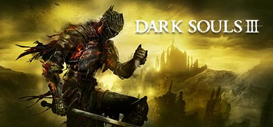
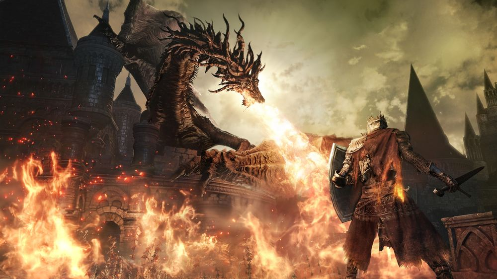
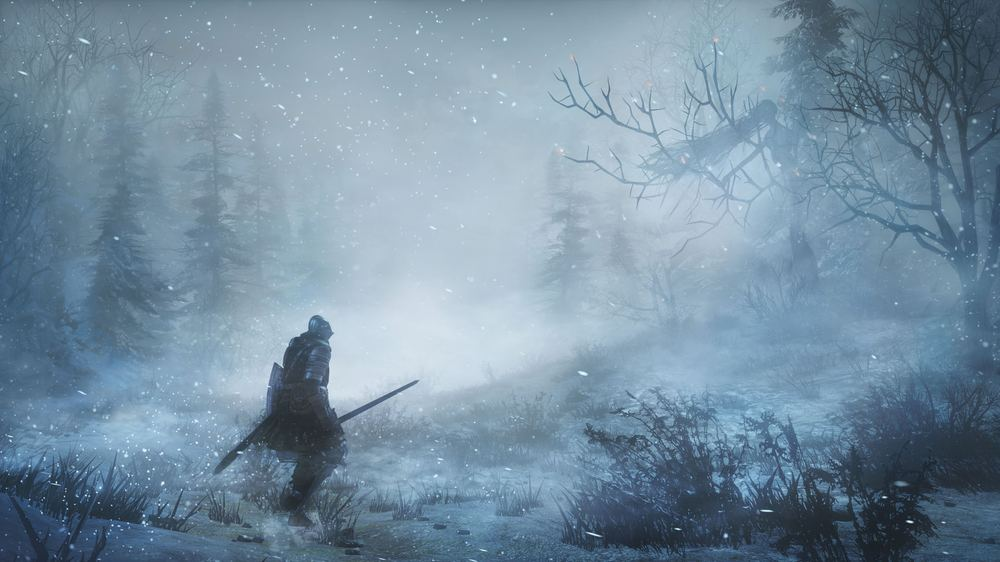
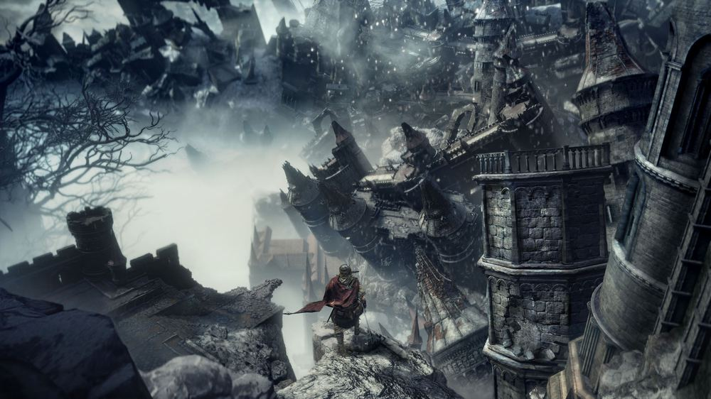
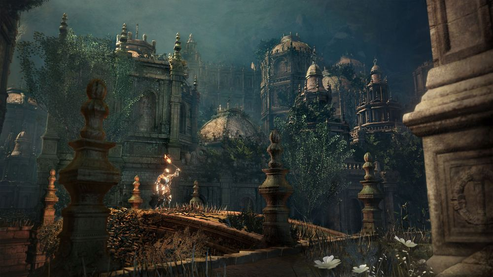

Avant de partir
Introduction : tout ce qu'il faut savoir avant de commencer
L'essentiel
- Le rythme du jeu : deux coups, puis tu te replies ; la roulade te sauve plus souvent que le bouclier.
- Les âmes : elles servent d'expérience et d'argent ; mourir deux fois de suite sans les récupérer les fait disparaître.
- Avant de foncer : lis les parties 18 et 19, car l'ordre des zones décide du sort de plusieurs personnages.
- Piège de traduction : en français, la Vitalité donne les PV et la Vigueur la charge d'équipement, l'inverse des noms anglais.

Visuel officiel de Dark Souls III · © Bandai Namco Entertainment / FromSoftware

Jaquette © Bandai Namco Entertainment / FromSoftware. Guide non officiel.
Objectif
Te faire gagner les dix premières heures d'apprentissage : les trois jauges, les âmes, l'état de Porte-braise, les neuf statistiques, les classes, les fioles, la défense, les altérations d'état, et les erreurs qui coûtent le plus cher.
Le guide couvre la dernière version du jeu, avec les deux extensions : Les Cendres d'Ariandel (parties 25 et 26) et The Ringed City (parties 27 à 29).
Itinéraire
- Le jeu et sa structure.
- Les trois jauges et les âmes.
- L'état de Porte-braise.
- Les statistiques et les classes.
- Les Feux et les fioles.
- Se défendre : verrouillage, bouclier, roulade.
- Les altérations d'état.
- Les erreurs de débutant.
Déroulé pas à pas
Le jeu et sa structure
- Un monde à moitié ouvert : après le Grand mur de Lothric, plusieurs routes s'offrent à toi, mais elles convergent vers quatre Seigneurs des Cendres à vaincre (les Veilleurs des Abysses, Yhorm, Aldrich, puis les princes Lothric et Lorian).
- Leurs cendres, posées sur les trônes du Sanctuaire, ouvrent la fin (partie 17).
- L'ordre du guide suit la progression la plus sûre en niveau, et chaque partie signale ce qui est facultatif.
- ⚠️ Avancer trop vite fait échouer certaines quêtes de personnages (Greirat, Siegward, Yoel…). Les parties 18 et 19 disent quoi faire avant quel boss.
Les trois jauges
- La santé (barre rouge) : tes PV. Fiole d'Estus, miracles de soin ou repos au Feu la remplissent.
- Les PC (barre bleue, la concentration) : ils alimentent les sorts, mais aussi les techniques spéciales des armes (weapon arts, ⚠️ nom du menu français à vérifier en jeu), propres à chaque type d'arme.
- Même un personnage tout au corps à corps en a besoin.
- La Fiole d'Estus cendreux les remplit.
- L'endurance (barre verte) : courir, rouler, frapper, bloquer, tout la consomme. Vide, tu ne peux plus rien faire. C'est la jauge à surveiller en premier.
Les âmes
- Une seule monnaie : les âmes servent à monter de niveau, acheter, améliorer.
- D'où elles viennent : chaque ennemi vaincu, et les objets « âme de… » trouvés dans le monde, à consommer quand tu veux.
- Les âmes de boss valent mieux en armes ou en sorts chez Ludleth qu'en âmes (partie 21).
- À ta mort, tes âmes restent sur place, dans une tache de sang. ⚠️ Meurs une seconde fois avant de la toucher, et elles sont perdues.
- Monter de niveau se fait auprès de la Gardienne du Feu, au Sanctuaire. Dépense souvent : un niveau ne se perd jamais.
L'état de Porte-braise
- Le principe : consommer une Braise te rend Porte-braise. Tes PV maximum augmentent, ton personnage s'entoure de braises, et tu peux invoquer des alliés (joueurs ou personnages du jeu) grâce aux signes au sol.
- Le revers : Porte-braise, tu peux être envahi par d'autres joueurs, et certains envahisseurs du jeu n'apparaissent que dans cet état.
- Le perdre et le retrouver : mourir te fait perdre l'état. Une nouvelle Braise ou la victoire sur un boss te le rend.
- Les Braises se ramassent un peu partout et quelques marchands en vendent en petite quantité.
Les statistiques
- ⚠️ Le piège des noms : en français, la Vitalité donne les PV (Vigor en anglais) et la Vigueur règle la charge d'équipement (Vitality). Garde-le en tête si tu lis des guides anglais.
| Statistique | Ce qu'elle apporte |
|---|---|
| Vitalité | Les PV ; aussi la résistance au gel. Rendement fort jusque vers 25, puis plus faible au-delà de 40 |
| Mémoire | Les PC et les emplacements de sorts : aucun sous 10, puis 1 à 10, 2 à 14, 3 à 18, 4 à 24, 5 à 30, 6 à 40, 7 à 50, 8 à 60, 9 à 80, 10 à 99 |
| Endurance | L'endurance ; aussi les résistances au saignement et à la foudre |
| Vigueur | La charge d'équipement, la défense physique et la résistance au poison |
| Force | Le maniement des armes lourdes et leurs dégâts ; la résistance au feu |
| Dextérité | Les armes rapides et techniques ; un temps d'incantation plus court et moins de dégâts de chute |
| Intelligence | Les sorcelleries et les pyromancies ; la défense magique |
| Foi | Les miracles et les pyromancies ; la défense contre les ténèbres |
| Chance | La découverte d'objets, l'efficacité du poison et du saignement de tes armes, la résistance à la malédiction |
- La charge d'équipement : sous 70 %, ta roulade reste vive. Au-dessus, elle s'alourdit et te laisse exposé.
Les classes et le présent funéraire
- La classe ne fixe que ton point de départ (statistiques et équipement) : tout se rattrape ensuite.
- Les dix classes : Chevalier, Mercenaire, Guerrier, Héraut, Voleur, Assassin, Sorcier, Pyromancien, Clerc, et une classe sans rien (Deprived, ⚠️ nom français à vérifier en jeu).
- Pour débuter : le Chevalier (solide, bon bouclier) ou le Héraut (beaucoup de PV et un sort de soin) pardonnent le plus. Le Pyromancien dispose tout de suite d'une attaque à distance.
- Le présent funéraire (burial gift), facultatif : un objet de départ au choix. L'Anneau de Vie (PV en plus) et la Bénédiction divine (soin complet) sont des choix sûrs ; la Pièce d'or augmente la découverte d'objets.
Les Feux et les fioles
- Les Feux : chaque Feu allumé devient un point de voyage. Se reposer recharge les fioles, mais fait revenir tous les ennemis de la zone (pas les boss ni certains ennemis uniques).
- Les deux fioles : André répartit tes charges entre la Fiole d'Estus (PV) et la Fiole d'Estus cendreux (PC). Par exemple, sur 6 charges, 4 et 2. C'est gratuit et modifiable à volonté.
- Les améliorer : les Fragments d'Estus ajoutent des charges (chez André), les Fragments d'os de mort-vivant augmentent ce que rend chaque gorgée (au Feu du Sanctuaire). Les 11 et les 10 emplacements sont en partie 23.
Se défendre
- Le verrouillage (clic du stick droit) garde la caméra sur un ennemi ; pousse le stick pour changer de cible. Contre un ennemi très grand, déverrouille : tu verras mieux autour de toi.
- Le bouclier : garde levée, chaque coup bloqué coûte de l'endurance selon sa force, et la récupération d'endurance ralentit. Un bouclier n'arrête tous les dégâts d'un type que s'il affiche 100 dans cette défense ; sinon, une partie passe.
- ⚠️ Garde brisée : si un coup bloqué vide ton endurance, tu chancelles, à la merci du coup suivant.
- La roulade : un bref instant d'invulnérabilité. C'est la vraie défense du jeu, d'où l'importance de la charge d'équipement.
- La parade : certains boucliers et objets permettent de détourner un coup au bon moment, puis de riposter. Risqué, mais dévastateur ; tous les ennemis ne se parent pas.
Les altérations d'état
- Le principe : chaque altération remplit une jauge invisible à chaque coup reçu, puis se déclenche.
- Saignement : une grosse perte de PV d'un coup. La Touffe de lichen rouge fait baisser la jauge.
- Poison : des dégâts continus. La Touffe de lichen violet le soigne.
- Toxicité : un poison bien plus violent, que les protections contre le poison n'arrêtent pas. Seule la Touffe de lichen violet fleuri la soigne.
- Gel : des dégâts et une endurance qui remonte moins vite. La Touffe de lichen bleu clair le soigne.
- Malédiction : la mort instantanée quand la jauge est pleine. La Pierre de purge fait baisser la jauge.
- La Bénédiction divine rend tous les PV et soigne toutes les altérations.
Les erreurs de débutant
- Garder ses âmes sur soi : monte de niveau dès que possible.
- Tenter le troisième coup : deux attaques, puis recule.
- Bloquer ce qui ne se bloque pas : les charges et les gros coups de boss se roulent.
- Rester à mi-distance d'un gros ennemi : colle-le ou éloigne-toi franchement.
- Avancer trop vite dans l'histoire : le Donjon d'Irithyll, en particulier, peut faire échouer les quêtes de Siegward et de Greirat (parties 18 et 19).
- Acheter un miracle sombre à Irina sans le vouloir : elle est enlevée par Eygon (partie 18).
- Imprégner son arme sans réfléchir : la plupart des imprégnations interdisent les résines et les sorts de renforcement (partie 21).
- Négliger les PC : sans fiole bleue, pas de technique spéciale d'arme.
- Ignorer les murs illusoires : frappe les murs, statues et bas-reliefs suspects. Des Fragments d'Estus et des armes de premier ordre s'y cachent.
Quêtes et lieux
- Le Sanctuaire de Lige-Feu (partie 01) est ta base : Gardienne du Feu, André, Servante, Ludleth, et tous les personnages recrutés (partie 18).
- Les quêtes longues (partie 19) traversent tout le jeu et décident de certaines fins (partie 17).
- Les serments (partie 20) règlent ton rôle en ligne.
Butin exhaustif
Cette partie décrit les systèmes ; le butin est réparti dans les parties 01 à 29.
| Nom exact | Type | Où / comment l'obtenir | Utilité |
|---|---|---|---|
| Fiole d'Estus | Objet clé | Au départ | Rend des PV |
| Fiole d'Estus cendreux | Objet clé | Cimetière des cendres (partie 01) | Rend des PC |
| Braise | Consommable | Un peu partout ; quelques marchands | Devenir Porte-braise |
| Os du retour | Consommable | Dès le Sanctuaire (partie 01) | Retour au dernier Feu |
| Fragment d'Estus ×11 | Objets clés | Partie 23 | +1 charge de fiole |
| Fragment d'os de mort-vivant ×10 | Objets clés | Partie 23 | Fioles plus efficaces |
Conseils et pièges
- Deux coups, puis tu te replies.
- Reste sous 70 % de charge pour garder une roulade vive.
- Garde deux fioles de PC, même sans sort.
- Dépense tes âmes avant d'explorer un endroit risqué.
- Frappe les murs suspects : le jeu récompense la curiosité.
Alertes
- ⚠️ Mourir deux fois de suite fait perdre les âmes de la première mort.
- ⚠️ La toxicité n'est pas le poison : seule la Touffe de lichen violet fleuri la soigne.
- ⚠️ La malédiction pleine tue sur le coup.
Check-list des premières heures
- Fiole d'Estus cendreux récupérée au Cimetière des cendres
- Sanctuaire de Lige-Feu atteint, Gardienne du Feu rencontrée
- Uchigatana ou Épée droite d'Astora en main
- Répartition des fioles réglée chez André
- Yoel de Londor, Cornyx et Orbeck recrutés
- Charge d'équipement sous 70 %
- Parties 18 et 19 lues avant d'avancer dans l'histoire
Partie 01
Le Cimetière des cendres et le Sanctuaire de Lige-Feu
L'essentiel
- Boss : Iudex Gundyr, sensible au feu : garde les 5 Bombes incendiaires trouvées juste avant pour sa seconde phase.
- À ne pas rater : la Fiole d'Estus cendreux, puis, autour du Sanctuaire, l'Uchigatana du maître d'armes et deux Braises.
- Le meilleur achat du début : la Clé de la tour (20 000 âmes), qui mène à un Fragment d'Estus, à l'Anneau d'Estus et à l'anneau qui augmente les âmes récoltées.
- Ne donne pas à la légère l'Âme de la Gardienne du Feu : elle sert à une fin.
Objectif
Tu te réveilles dans une tombe, sans feu et sans rien. Il s'agit de traverser le Cimetière des cendres, de battre Iudex Gundyr, le gardien du passage, puis de rallumer le feu du Sanctuaire de Lige-Feu, ta base pour tout le reste de la partie. Le Sanctuaire cache aussi beaucoup de choses à l'extérieur : fais-en le tour avant d'y entrer.
Niveau conseillé : celui de départ. Tout ici est pensé pour t'apprendre les bases : attendre, esquiver, ne frapper que quand l'ennemi a fini.
Itinéraire
📍 La zone en images : Cimetière des Cendres — soluce illustrée sur Millenium, en français.
Trois temps :
- Le Cimetière : la fontaine et la Fiole d'Estus cendreux, le détour du lézard de cristal géant, le premier Feu, les deux pentes, puis l'arène d'Iudex Gundyr.
- Le parvis du Sanctuaire : la montée par la falaise, le tour du bâtiment par la droite puis par la gauche, et le maître d'armes.
- Le Sanctuaire et sa tour : l'intérieur tout de suite ; la tour et le toit plus tard, avec la Clé de la tour.
Déroulé pas à pas
Le Cimetière des cendres
- Le premier ennemi : abats-le, puis regarde à sa droite : un corps porte une Âme de corps abandonné. Prends l'habitude dès maintenant : le butin aime les recoins.
- La fontaine : un ennemi la garde. Sur le corps à côté, la Fiole d'Estus cendreux, ta fiole bleue. Elle rend des PC (la jauge des sorts et des compétences d'arme) : même un personnage de pure mêlée en veut une ou deux charges.
- Le passage vers le lézard : avance prudemment. Un arbalétrier tire depuis le fond et plusieurs ennemis attendent après le virage serré à droite. Attire-les un par un plutôt que de foncer.
- Le lézard de cristal géant : au bout du chenal étroit, dans la zone qui s'ouvre. Contrairement aux petits lézards qui fuient, celui-ci se bat et encaisse beaucoup.
- Il lâche une Écaille de Titanite, rare à ce stade.
- Âme de voyageur inconnu dans la même zone.
- Rien ne t'oblige à le battre maintenant : il ne bouge pas. Astuce connue : attire-le au bord du précipice, près du Feu, pour qu'il y tombe.
- Le premier Feu : sur la gauche, face au vide. Allume-le et repose-toi : tes fioles se remplissent, les ennemis reviennent.
- Le saut du ravin : au bord de la falaise, un petit ravin en contrebas cache un Fragment de Titanite. Laisse-toi tomber dedans, puis profite d'être en hauteur pour une attaque plongeante sur l'ennemi d'en dessous : c'est le moment d'apprendre ce geste.
- La pente du bas : en longeant la falaise dans l'autre sens, un soldat à l'épée et au bouclier et un arbalétrier. Derrière eux, contre le mur : 5 Bombes incendiaires. Garde-les pour le boss.
- L'arche et la cour : élimine l'arbalétrier posté sous l'arche, puis descends les marches vers la cour où un guerrier pétrifié attend, une épée plantée dans le torse.
Boss : Iudex Gundyr
- Fiche : un peu plus de 1 000 PV, 3 000 âmes. Retire l'épée de sa poitrine et il se relève.
- Sensible au feu et au froid ; résistant aux ténèbres et au saignement ; insensible au poison.
- Phase 1, la hallebarde : balayages, estocs, une saisie suivie d'un coup de lame, et un grand saut qu'il lance surtout si tu restes loin.
- Ne reste pas à mi-distance : c'est là qu'il t'atteint sans que tu puisses riposter.
- Tourne autour de lui vers ta droite, bouclier levé, pour rester sur son flanc gauche et dans son dos.
- Roule pour éviter la saisie, qu'on ne peut pas bloquer.
- Si tu joues à distance, reste au contraire très loin : son grand saut te laisse une fenêtre pour lancer.
- Ses coups se parent, si tu maîtrises le geste.
- Phase 2, à la moitié de sa vie : une masse noire jaillit de son corps et prend le contrôle. Pendant la transformation, elle frappe devant elle : recule.
- Ses attaques portent plus loin et s'enchaînent de façon moins prévisible.
- C'est le moment des Bombes incendiaires : le feu lui fait mal et tu restes hors de portée.
- Au contact : deux coups, puis repli.
- Récompense : l'épée qui était plantée dans son torse, l'Épée torsadée ⚠️ nom français à vérifier en jeu (Coiled Sword), qui servira à rallumer le Sanctuaire, et un Feu au centre de l'arène. Allume-le, puis pousse la grande porte.
Le parvis du Sanctuaire
- Les tombes : droit devant, l'Épée droite brisée, une arme de secours sans grand intérêt.
- La montée : sur le chemin, deux ennemis gardent un Os du retour, l'objet qui te ramène au dernier Feu. Garde-en toujours un : il sauve une poignée d'âmes durement gagnées.
- Le côté droit du bâtiment : un chien enragé saute de la gauche. Braise dans le recoin du fond.
- Le côté gauche : là où deux escaliers se croisent, un corps est pris dans les branches d'un arbre. Il porte un bouclier moyen, l'East-West Shield ⚠️ nom français à vérifier en jeu, qui permet de parer.
- Deux ennemis assis dans l'escalier de droite gardent une seconde Braise.
- Le maître d'armes : en continuant à gauche de l'entrée, près du clocher, un épéiste au katana, bien plus fort que tout le reste. S'il t'écrase, reviens plus tard. Plusieurs façons de le battre :
- par la parade : il y est sensible ;
- par la ruse : attire-le jusqu'à l'entrée du Sanctuaire, où il ne peut pas te suivre, et frappe-le depuis le seuil ;
- par le vide : sur l'étroit rebord à côté de l'escalier, il lui arrive de basculer dans le précipice.
- Il laisse à coup sûr l'Uchigatana et deux pièces de sa tenue, la tunique et les gants (⚠️ noms français à vérifier en jeu).
L'intérieur du Sanctuaire
- Le foyer : entre et plante l'épée d'Iudex Gundyr dans le foyer, au centre. Le Feu du Sanctuaire s'allume : c'est ici que tu monteras de niveau, auprès de la Gardienne du Feu.
- Les habitants : tous sont là dès ta première visite.
- La Gardienne du Feu, au centre, pour monter de niveau.
- André le forgeron, au rez-de-chaussée, pour améliorer et réparer tes armes ; c'est aussi à lui qu'on confie les Fragments d'Estus.
- La Servante du Sanctuaire, marchande, qui vend entre autres la Clé de la tour.
- Ludleth de Courland, assis sur l'un des cinq trônes.
- Faucon-du-Breuil, assis au pied de l'escalier de droite.
- Leonhard, en haut des marches derrière les trônes, qui lance sa quête (partie 19).
- La porte de l'étage, à droite : elle mène dehors, au pied de la tour, où un corps porte une Âme de corps abandonné. La grille de la tour reste fermée sans sa clé.
- En route : utilise le Feu pour voyager jusqu'au Grand mur de Lothric (partie 02).
La tour et le toit (avec la Clé de la tour, 20 000 âmes)
- La clé : achète-la à la Servante. C'est une grosse somme au début, mais elle rapporte trois objets qui changent la partie.
- Le sommet de la tour : ouvre la grille, monte, traverse le pont de pierre et prends l'ascenseur d'en face. En haut de l'escalier en colimaçon : l'Âme de la Gardienne du Feu.
- ⚠️ Si tu as déjà croisé Pat l'Invincible à la Cathédrale des profondeurs (partie 05), il t'enferme ici. Un Os du retour suffit pour sortir ; une fois libéré, il s'installe comme marchand au Sanctuaire.
- Le Set de la Gardienne du Feu : depuis un côté du pont, laisse-toi tomber sur une petite corniche.
- L'Anneau d'Estus : depuis l'autre côté du pont, descends de corniche en corniche jusqu'en bas. Il améliore ce que rend chaque gorgée de ta Fiole d'Estus.
- Le toit du Sanctuaire : près de l'arbre, au bord du toit, fais tomber l'échelle d'un coup de pied pour te ménager un accès.
- En te laissant tomber du toit, tu trouves un Lézard de cristal : Titanite scintillante.
- Les poutres : rentre dans le Sanctuaire par le haut et suis l'étroite poutre : Fragment d'Estus.
- Le nid du corbeau (que certains guides appellent Snuggly) : au centre du toit, un nid où tu peux laisser un objet pour recevoir autre chose en échange (liste des échanges en partie 19). Choisis bien « Laisser » et non « Jeter ».
- Le mur illusoire : sur la longue poutre, frappe le mur du fond. De l'autre côté, sur une passerelle plus basse, un coffre : Anneau convoiteux du serpent d'argent, qui augmente les âmes récoltées. À équiper au plus vite.
Quêtes et lieux
- La Gardienne du Feu monte ton niveau et, plus tard, peut effacer la Marque sombre (partie 19). Son âme, confiée à Ludleth, débloque cette possibilité ; elle sert aussi à l'une des fins (partie 17).
- La Servante du Sanctuaire vend la Clé de la tour et des consommables. Chaque Cendre que tu lui rapportes enrichit son stock (partie 23), et elle récupère l'équipement des PNJ disparus.
- Ludleth de Courland transforme les âmes de boss en armes et en sorts : c'est la Transposition d'âmes (partie 21).
- André le forgeron améliore tes armes avec la Titanite, les infuse avec des gemmes (partie 21) et allonge ta Fiole d'Estus avec chaque Fragment d'Estus.
- Les cinq trônes se remplissent à mesure que tu ramènes les Seigneurs des Cendres : c'est ton compteur de progression.
Butin exhaustif
| Nom exact | Type | Où / comment l'obtenir | Utilité |
|---|---|---|---|
| Âme de corps abandonné ×2 | Consommables | Corps à droite du premier ennemi ; pied de la tour du Sanctuaire | Âmes |
| Fiole d'Estus cendreux | Objet clé | Corps près de la fontaine | Rend des PC : sorts et compétences d'arme |
| Âme de voyageur inconnu | Consommable | Zone du lézard de cristal géant | Âmes |
| Écaille de Titanite | Matériau | Lézard de cristal géant, au bout du chenal | Améliorer les armes et armures spéciales |
| Fragment de Titanite | Matériau | Petit ravin au bord de la falaise, près du premier Feu | Armes +1 à +3 |
| 5 Bombes incendiaires | Consommables | Contre le mur, derrière l'épéiste et l'arbalétrier de la pente | Arme idéale contre Iudex Gundyr (phase 2) |
| Épée torsadée ⚠️ nom français à vérifier en jeu | Objet clé | Iudex Gundyr | Rallume le foyer du Sanctuaire |
| Épée droite brisée | Arme | Près des tombes, devant le Sanctuaire | Arme de secours |
| Os du retour | Consommable | Montée vers le Sanctuaire | Retour au dernier Feu |
| Braise ×2 | Consommables | Recoin du côté droit ; escalier du côté gauche | Redevenir Porte-braise (PV en plus, jeu en ligne) |
| East-West Shield ⚠️ nom français à vérifier en jeu | Bouclier | Corps dans un arbre, à la croisée des deux escaliers | Bouclier moyen, permet de parer |
| Uchigatana | Arme | Maître d'armes, à gauche de l'entrée (garanti) | Excellent katana, dès la première heure |
| Tunique et gants du maître d'armes ⚠️ noms français à vérifier en jeu | Armure | Maître d'armes (garantis) | Armure légère |
| Clé de la tour | Objet clé | Servante du Sanctuaire, 20 000 âmes | Ouvre la tour |
| Âme de la Gardienne du Feu | Objet clé | Haut de l'escalier en colimaçon, après l'ascenseur | Rend la Marque sombre réversible (via Ludleth) ; sert à une fin |
| Set de la Gardienne du Feu | Armure | Corniche sous un côté du pont | Tenue complète |
| Anneau d'Estus | Anneau | Tout en bas, depuis l'autre côté du pont | Chaque gorgée d'Estus soigne davantage |
| Titanite scintillante | Matériau | Lézard de cristal sous le toit du Sanctuaire | Améliorer les armes spéciales |
| Fragment d'Estus | Objet clé | Poutre au-dessus du Sanctuaire | +1 charge de fiole, chez André |
| Anneau convoiteux du serpent d'argent | Anneau | Coffre derrière le mur illusoire des poutres | Plus d'âmes récoltées |
Conseils et pièges
- Fais le tour du Sanctuaire avant d'y entrer. Deux Braises, un Os du retour, un bouclier et le maître d'armes sont dehors : beaucoup de joueurs entrent directement et ne les voient jamais.
- Le maître d'armes vaut quelques morts. L'Uchigatana est garanti, et aucune arme des heures suivantes ne fait mieux pour un personnage de Dextérité.
- Économise pour la Clé de la tour. Un Fragment d'Estus, l'Anneau d'Estus et l'anneau des âmes : c'est le meilleur placement du début, avant même quelques niveaux.
- Colle les gros, éloigne-toi des petits. Iudex Gundyr t'apprend cette règle : contre un grand ennemi, son flanc est l'endroit le plus sûr.
- Deux coups, puis repli. C'est le rythme de Dark Souls III : on meurt presque toujours en tentant le troisième coup.
Alertes
- ⚠️ Le maître d'armes tue un personnage de départ en quelques coups : ne l'affronte pas avant de savoir esquiver.
- ⚠️ Ne donne pas l'Âme de la Gardienne du Feu à la légère : elle sert aussi à une fin (partie 17).
- D'après les sources consultées, rien ne se perd définitivement ici : le lézard géant, le maître d'armes et la tour t'attendent.
Check-list
- Fiole d'Estus cendreux récupérée
- Fragment de Titanite du ravin
- 5 Bombes incendiaires de la pente
- Iudex Gundyr vaincu, son épée récupérée
- Sanctuaire allumé
- Os du retour, East-West Shield et deux Braises du parvis
- Plus tard : lézard de cristal géant vaincu : Écaille de Titanite
- Plus tard : maître d'armes vaincu : Uchigatana
- Clé de la tour achetée (20 000 âmes)
- Âme de la Gardienne du Feu, Set de la Gardienne du Feu, Anneau d'Estus
- Titanite scintillante du lézard du toit
- Fragment d'Estus des poutres
- Anneau convoiteux du serpent d'argent derrière le mur illusoire
Partie 02
Le Grand mur de Lothric
L'essentiel
- Boss : Vordt de la Vallée boréale, faible aux ténèbres : la Hache de guerre abyssale du Mimic de la zone est faite pour lui.
- À ne pas rater : le Fragment d'Estus de la grande salle, l'Épée droite d'Astora et la Clé de cellule, qui libère ton futur marchand Greirat.
- Pièges : un coffre qui mord, des fidèles en prière qui se transforment, un dragon qui arrose le couloir.
- Avant le boss : parle à Emma (sa bannière ouvre la suite) et ouvre l'ascenseur-raccourci.

Le dragon du Grand mur de Lothric · © Bandai Namco Entertainment / FromSoftware
Objectif
Le Grand mur de Lothric est la première vraie zone du jeu : une descente de remparts, de tours et de cours intérieures jusqu'à la porte de Vordt. Trois choses comptent ici : un nouveau Fragment d'Estus, la Clé de cellule qui libère Greirat, et la Petite bannière de Lothric d'Emma, sans laquelle la victoire contre Vordt ne mène nulle part.
Niveau conseillé : 10 à 20. Deux ennemis sont nettement plus forts que ça (le chevalier à la cape bleue et le dragon) : ils peuvent attendre. Si tu découvres les Souls, prends ton temps : chaque ennemi d'ici t'apprend un réflexe (attirer un ennemi à la fois, attendre la fin d'un enchaînement, parer) dont tu auras besoin contre Vordt.
Itinéraire
📍 La zone en images : Grand Mur de Lothric — soluce illustrée sur Millenium, en français.
La zone se descend en quatre paliers :
- Les remparts du haut : premier Feu, deux tours, l'Arc long.
- Le couloir du dragon, puis la tour du second Feu.
- Le bâtiment central : toits, grande salle (Fragment d'Estus, Clé de cellule), deux coffres, et la cellule de Greirat trois étages plus bas.
- La fontaine et les jardins : le chevalier ailé, l'ascenseur-raccourci, l'église d'Emma, puis la porte de Vordt.
Déroulé pas à pas
Palier 1 : les remparts du haut
- Premier Feu : en bas des marches extérieures, à ton arrivée depuis le Sanctuaire. Allume-le avant tout.
- L'arbalétrier du rebord : il guette sur une plateforme en bois à droite, accessible par une brèche du muret. Va le déloger tout de suite, sinon il te tirera dans le dos pendant toute l'exploration.
- Descente de droite : deux chiens enragés et un soldat à la hallebarde arrivent ensemble si tu fonces. Recule et attire-les un par un. Garde un œil sur l'escalier de gauche, d'où monte un soldat à la hache.
- Âme de corps abandonné au pied des escaliers, à côté d'un corps qui n'est pas aussi mort qu'il en a l'air.
- La tour du fond, à droite : un groupe de silhouettes en prière. Dès qu'elle te repère, l'une d'elles se change en grosse créature noire, bien plus dangereuse que tout le reste.
- Arc long et une douzaine de flèches sur le corps de droite : prends-les et ressors.
- Pour la tuer, frappe-la avant la fin de sa transformation. Elle laisse une Braise et un Fragment de Titanite, une seule fois.
- Tour de gauche : depuis le Feu, pars à gauche. Âme de corps abandonné avant l'entrée ; à l'intérieur, un ennemi assis et un autre caché derrière les caisses gardent 2 Bombes incendiaires.
- Sommet de la tour de gauche : deux ennemis, dont un lanceur de bombes. Les marches de gauche mènent aux Jumelles ⚠️ à vérifier en jeu.
- Rebord caché : redescends et laisse-toi glisser du rebord, près du dragon mort : 2 Résines de pin doré, puis tu retombes dans la tour.
Palier 2 : le couloir du dragon et le second Feu
- Échelle : Âme de corps abandonné dans le passage du bas. Dehors, un lancier attend : attire-le à toi plutôt que de t'avancer.
- Le couloir du dragon : dès que tu poses le pied sur les escaliers, un dragon se perche sur la tour voisine et balaie le chemin de flammes. Ses souffles grillent aussi les ennemis du parcours.
- Observe son rythme, puis sprinte droit devant juste après un souffle, sans prendre les escaliers de gauche.
- Au pied de la tour, sous le dragon, un corps porte une Braise.
- Faire fuir le dragon (optionnel, plus tard) : de loin, hors de portée du souffle, vise sa tête à l'Arc long.
- Bien entamé, il s'envole pour de bon et lâche un Grand fragment de Titanite ⚠️ à vérifier en jeu.
- Le haut des escaliers devient libre : la Claymore t'attend dans un coin du palier. - Il faut beaucoup de flèches : fais le plein au Sanctuaire avant de tenter.
- Le coffre derrière la grille, en bas des escaliers, est un Mimic. Frappe-le avant de l'ouvrir. Une fois tué, il lâche la Hache de guerre abyssale, imprégnée de ténèbres : l'élément qui fait le plus mal à Vordt.
- Le premier chevalier de Lothric : avant d'entrer dans la tour, élimine vite les deux ennemis endormis à gauche, car un chevalier sort de la tour de droite.
- Bouclier levé, coups lourds : attends qu'il termine un enchaînement pour frapper, ou tente la parade pour un coup critique.
- Second Feu : dans la tour, un ennemi à gauche et 3 Bombes incendiaires au bout de la poutre, puis le Feu au sommet.
- Fragment de Titanite dans le recoin du fond.
Palier 3 : le bâtiment central
- Sortie par l'étage inférieur : deux assassins, puis la porte. Âme de corps abandonné à droite ; deux ennemis arrivent, l'un par le rebord, l'autre par l'échelle.
- Le toit des fidèles : seconde créature en prière. Même règle : contourne-la, ou tue-la avant sa transformation (Braise et Fragment de Titanite).
- Grande âme de corps abandonné au fond à gauche
- Le Lézard de cristal du toit lâche une Gemme brute : rattrape-le avant qu'il ne disparaisse.
- Échelle du fond à droite : à l'arrivée, un arbalétrier tire dans ton dos, un autre attend au bout du balcon et deux ennemis grimpent.
- 3 Bombes incendiaires sur le balcon, 3 Bombes incendiaires noires sur le toit d'en face.
- Le bâtiment près de l'échelle : un chevalier de Lothric à la lance patrouille au fond. Quand il saisit sa lance à deux mains, il va charger : écarte-toi sur le côté, son dos est alors à découvert. Âme de corps abandonné à gauche.
- Petite pièce de gauche : trois ennemis, dont un caché derrière les jarres.
- Dans les jarres : 2 Amulettes de chasseur de mort-vivants
- Plus loin, entre deux chaises : Fragment de Titanite
- Couloir du fond, à gauche : un ennemi sous l'arche.
- Derrière les caisses : Épée large
- Au bout du chemin surélevé, derrière d'autres caisses : 2 Fleurs vertes
- La grande salle : un chien enragé et plusieurs ennemis. Descends et fais le ménage.
- Sur l'autel de droite : Fragment d'Estus, à confier au forgeron André pour une charge de fiole en plus
- En bas à gauche, gardée par un chien : Clé de cellule
- Dans un recoin encombré de caisses : Fragment de Titanite
- Le coffre du balcon : remonte, fais le tour du balcon et, au bout, casse les caisses et descends d'un cran. Le coffre contient l'Épée droite d'Astora : légère, longue, efficace quelles que soient tes statistiques.
- Le coffre de l'étage intermédiaire : entre l'escalier extérieur et celui du rez-de-chaussée, à droite, deux ennemis assis gardent un coffre : Rempart de l'Aigle d'argent, un bouclier qui encaisse très bien.
- Les trois étages jusqu'à Greirat : reviens au second Feu et descends cette fois jusqu'en bas.
- Pièce aux tonneaux : un ennemi lance des bombes et les tonneaux explosent, reste à distance.
- Couteaux de lancer à droite, Percemaille dans la pièce suivante.
- Libérer Greirat : ouvre la cellule avec la Clé de cellule et parle-lui. Il te remet l'Anneau de Pierre-larme bleue et part s'installer au Sanctuaire.
Palier 4 : la fontaine, Emma et Vordt
- Retour au toit des fidèles : redescends l'échelle, puis prends celle du bout du balcon de droite. En bas, un soldat se relève et un autre surgit du rebord.
- La fontaine : un chevalier ailé armé d'une hallebarde la garde. Il tournoie à mi-distance et fait jaillir des piliers de lumière.
- Deux options : coller à lui en cherchant son dos, ou rester très loin avec des sorts ou des flèches.
- 2 Braises autour de la fontaine
- Rapière au fond à gauche, au bout du passage
- 2 Fleurs vertes en contrebas, à droite de l'arche
- Sous l'arche de droite : fonce sur l'arbalétrier en haut des escaliers, puis sur le soldat qui se relève au pied. Plusieurs ennemis suivent dans le passage.
- L'ascenseur-raccourci : monte sur la plateforme, ramasse les Couteaux de lancer en haut et ouvre la grille : tu ressors au premier Feu. Fais-le avant Vordt.
- Deux trésors près de l'ascenseur : redescends et grimpe les petites marches de gauche pour une Grande âme de corps abandonné. Du palier, sprinte et saute vers le petit toit en bois : Anneau sacrificiel.
- L'allée des chevaliers : retour aux jardins. Deux chevaliers de Lothric patrouillent, attire-les un par un ; un troisième peut être évité.
- À droite de l'entrée de l'église : Bec de corbin, une hallebarde.
- Le chevalier à la cape bleue : à gauche de l'entrée de l'église, un chevalier aux yeux rouges, bien plus fort que les autres. Il lâche une Gemme raffinée. Rien ne presse : reviens quand tu seras plus solide.
- Emma : au fond de l'église, la grande prêtresse. Parle-lui : elle te donne la Petite bannière de Lothric et le Serment de la Voie bleue.
- La porte de Vordt : descends les grands escaliers opposés et active la porte bloquée par les branchages.
Boss : Vordt de la Vallée boréale
- Fiche : 1 328 PV, 3 000 âmes, boss obligatoire.
- Point faible : les ténèbres, d'où l'intérêt de la Hache de guerre abyssale. Les armes contondantes passent aussi mieux que les tranchantes.
- Insensible au saignement, au poison et au gel. Lui, en revanche, inflige la congélation.
- Phase 1 : il se bat à quatre pattes, masse en main.
- Reste sous lui ou derrière lui, jamais face à sa masse.
- Son estoc part plus vite que le reste : esquive sur le côté.
- Après son grand balayage, il reste ouvert : deux ou trois coups, puis recule.
- À la moitié de sa vie : il rugit et se couvre d'une aura glacée. Frappe pendant le rugissement, de dos si possible : c'est le moment le plus sûr du combat.
- Phase 2 : il enchaîne trois ou quatre charges à travers l'arène et souffle un arc de glace.
- Roule sur le côté à chaque charge, jamais dans son axe, et ne bloque pas.
- Le souffle glacé se prépare lentement : passe dans son dos et frappe pendant toute l'animation.
- Après la dernière charge, il marque un temps d'arrêt : c'est ta fenêtre.
- Après la victoire : avance jusqu'au bord et plante la Petite bannière de Lothric : on vient te chercher pour le Camp des mort-vivants (partie 03).
Le raccourci d'Emma (déconseillé en première partie)
- Tuer Emma déclenche le combat contre la Danseuse de la Vallée boréale, un boss normalement réservé à la fin de partie. La battre ouvre tout de suite la route du Château de Lothric, l'une des dernières zones.
- À ce stade, c'est un mur : elle frappe bien plus fort que tout ce que tu as croisé. Si tu veux tenter, parle d'abord à Emma pour obtenir la bannière et le serment.
Quêtes et lieux
- Greirat du Camp des mort-vivants : prisonnier ici, il devient au Sanctuaire un marchand qui part en expédition contre des âmes et rapporte de nouveaux objets. Ses expéditions peuvent lui coûter la vie : l'ordre des envois compte (partie 18).
- Emma : la grande prêtresse donne le Serment de la Voie bleue, le serment d'entrée du jeu en ligne (partie 20), et la Petite bannière de Lothric, qui ouvre la route du Camp.
- L'ascenseur-raccourci (étape 28) relie la fin de la zone au premier Feu : indispensable si Vordt te met en échec.
- Le dragon du couloir n'est pas un boss : il s'envole quand il a pris assez de flèches, et le palier qu'il garde (la Claymore) devient accessible.
Butin exhaustif
| Nom exact | Type | Où / comment l'obtenir | Utilité |
|---|---|---|---|
| Arc long + flèches | Arme, munitions | Tour du fond, sur le corps de droite (palier 1) | Faire fuir le dragon, tirer de loin |
| Âme de corps abandonné ×5 | Consommables | Pied des escaliers ; avant la tour de gauche ; passage sous l'échelle ; sortie de l'étage inférieur ; bâtiment du chevalier à la lance | Âmes |
| Grande âme de corps abandonné ×2 | Consommables | Toit des fidèles ; petites marches près de l'ascenseur | Âmes |
| Braise ×5 | Consommables | Les deux créatures en prière ; corps sous le dragon ; autour de la fontaine (×2) | Redevenir Porte-braise |
| Fragment de Titanite ×5 | Matériaux | Les deux créatures en prière ; recoin du second Feu ; entre deux chaises ; recoin de la grande salle | Armes +1 à +3 |
| Jumelles ⚠️ à vérifier en jeu | Outil | Sommet de la tour de gauche, par les marches de gauche | Observer de loin |
| 2 Bombes incendiaires | Consommables | Tour de gauche, derrière les caisses | Dégâts de feu |
| 2 Résines de pin doré | Consommables | Rebord caché près du dragon mort | Foudre sur ton arme |
| Grand fragment de Titanite ⚠️ à vérifier en jeu | Matériau | Lâché par le dragon quand il s'envole | Armes +4 à +6 |
| Claymore | Arme | Coin du palier gardé par le dragon | Épée large polyvalente pour tout le début |
| Hache de guerre abyssale | Arme | Mimic derrière la grille du couloir | Ténèbres : idéale contre Vordt |
| 3 Bombes incendiaires ×2 | Consommables | Poutre avant le second Feu ; balcon de l'arbalétrier | Dégâts de feu |
| Gemme brute | Matériau | Lézard de cristal du toit des fidèles | Infusion |
| 3 Bombes incendiaires noires | Consommables | Toit d'en face, depuis le balcon | Gros dégâts de feu |
| 2 Amulettes de chasseur de mort-vivants | Consommables | Jarres de la petite pièce | À lancer : un nuage qui empêche les ennemis de boire leur Estus, et qui endort les Mimics |
| Épée large | Arme | Derrière les caisses, après l'arche | Arme de transition |
| 2 Fleurs vertes ×2 | Consommables | Bout du chemin surélevé ; en contrebas à droite de l'arche de la fontaine | Récupération d'endurance accélérée |
| Fragment d'Estus | Objet clé | Autel de droite, grande salle | +1 charge de fiole, chez André |
| Clé de cellule | Objet clé | Bas à gauche de la grande salle, gardée par un chien | Libère Greirat |
| Épée droite d'Astora | Arme | Coffre sous le balcon, en cassant les caisses | L'une des meilleures armes du début |
| Rempart de l'Aigle d'argent | Bouclier | Coffre de l'étage intermédiaire | Encaisse très bien les coups |
| Couteaux de lancer ×2 lots | Consommables | Pièce aux tonneaux ; en haut de l'ascenseur | Dégâts à distance |
| Percemaille | Arme | Pièce qui suit celle des tonneaux | Arme perforante |
| Anneau de Pierre-larme bleue | Anneau | Greirat, à sa libération | Défense accrue quand ta vie est basse |
| Rapière | Arme | Fontaine, au fond à gauche | Arme rapide de Dextérité |
| Anneau sacrificiel | Anneau | Petit toit en bois, en sprint et saut | Évite de perdre tes âmes une fois |
| Bec de corbin | Arme | À droite de l'entrée de l'église | Hallebarde |
| Gemme raffinée | Matériau | Chevalier à la cape bleue, à gauche de l'entrée de l'église (très puissant) | Infusion Force/Dextérité équilibrée |
| Petite bannière de Lothric | Objet clé | Emma | Ouvre la route du Camp des mort-vivants |
| Serment de la Voie bleue | Serment | Emma | Jeu en ligne (partie 20) |
Conseils et pièges
- Ouvre l'ascenseur-raccourci avant Vordt. Sans lui, chaque tentative ratée te coûte la traversée de toute la zone.
- Les fidèles en prière : deux fois dans la zone, l'un d'eux se change en monstre. Tu peux toujours l'éviter en courant ; si tu veux sa Braise, frappe pendant la transformation.
- Le dragon est un allié : ses souffles nettoient le couloir. Attends qu'il crache, puis sprinte.
- Prends l'Épée droite d'Astora, même si tu joues autre chose : elle demande peu de statistiques et porte loin.
- Vordt sans souffrir :
- équipe la Hache de guerre abyssale si ta Force le permet ;
- garde les Résines de pin doré pour lui si tu n'as pas la hache ;
- colle-toi à ses flancs en phase 1 ;
- en phase 2, ne pense qu'à rouler de côté.
- Coup de main : si tu es Porte-braise, cherche des signes d'invocation au sol près de la porte de Vordt : un autre joueur peut venir t'aider.
Alertes
- ⚠️ Ne bloque jamais une charge de Vordt : ton endurance part d'un coup et la charge suivante te tue.
- ⚠️ Tuer Emma déclenche la Danseuse de la Vallée boréale, un boss de fin de partie. Parle-lui d'abord pour obtenir la bannière et le serment.
- D'après les sources consultées, rien ne se perd définitivement dans cette zone : tout ce que tu laisses (le palier du dragon, le chevalier à la cape bleue) t'attend.
Check-list
- Premier et second Feu allumés
- Arc long récupéré
- 2 Résines de pin doré du rebord caché
- Mimic tué : Hache de guerre abyssale
- Fragment d'Estus de la grande salle
- Clé de cellule trouvée et Greirat libéré : Anneau de Pierre-larme bleue
- Épée droite d'Astora et Rempart de l'Aigle d'argent dans les coffres
- Anneau sacrificiel du petit toit
- Ascenseur-raccourci ouvert
- Emma rencontrée : Petite bannière de Lothric et Serment de la Voie bleue
- Vordt de la Vallée boréale vaincu
- Bannière plantée au bord : route du Camp des mort-vivants
- Plus tard : dragon mis en fuite et Claymore récupérée
- Plus tard : Gemme raffinée du chevalier à la cape bleue
Partie 03
Le Camp des mort-vivants
L'essentiel
- Boss : l'Arbre géant maudit, extrêmement sensible au feu : les Paquets de pin brûlé et les Bombes incendiaires de la zone sont faits pour lui.
- Recrues : Yoel de Londor, Cornyx du Grand marais, Siegward de Catarina, et la paix avec le Géant de la tour.
- À ne pas rater : le Serment des Thanatophiles (cage de l'homme en rouge), à prendre avant le boss ; le Fragment d'Estus du grand brasier.
- Plus tard : avec la Clé de la tombe, les égouts mènent à Irina de Carim.
Objectif
Le Camp des mort-vivants est un village en ruine accroché à une falaise, peuplé de fidèles en extase et de pèlerins qui ont renoncé. C'est la zone la plus riche du début de partie : on y recrute la moitié des futurs habitants du Sanctuaire, on y trouve deux serments, et l'Arbre géant maudit, au fond, débloque la Transposition d'âmes (les armes et les sorts tirés des âmes de boss).
Niveau conseillé : 15 à 25. La zone est longue : prends l'habitude de rentrer au Feu dès qu'un raccourci s'ouvre.
Itinéraire
📍 La zone en images : Camp de Morts-vivants — soluce illustrée sur Millenium, en français.
Cinq étapes, du haut vers le bas de la falaise :
- L'arrivée : le Feu au pied du Grand mur, la rue brisée et Yoel.
- Le village : le Feu du Camp, la maison sombre, le grand brasier (Fragment d'Estus) et la cage de l'homme en rouge (Serment des Thanatophiles).
- Le pont de pierre et Cornyx : la corniche, le Feu du Pont en ruine, le balcon de Cornyx.
- La tour du Géant : Siegward, le démon de feu, la paix avec le Géant, l'Anneau de Chlorantie.
- Le bas du Camp : le Serment des Chevaliers Solaires, le Feu Sous la falaise, le cimetière, l'Arbre géant maudit ; plus tard, les égouts et l'Épée droite d'Irithyll.
Déroulé pas à pas
Étape 1 : l'arrivée et Yoel
- Le Feu au pied du Grand mur : les gargouilles te déposent en haut d'une tour. Allume le Feu.
- Le premier palier : dans la tour effondrée, un corps porte une Grande âme de corps abandonné.
- L'embuscade de la herse : une herse s'ouvre sur des chiens. Un levier à côté permet de la rouvrir plus tard.
- Derrière une diligence renversée, des chiens gardent 2 Crânes élégants.
- Yoel de Londor : parmi les pèlerins au bout de la rue brisée, l'un d'eux te propose ses services. Accepte : il s'installe au Sanctuaire (partie 19).
- Le bout de la rue : 2 Os du retour sur un corps.
Étape 2 : le village, le brasier et les Thanatophiles
- Le Feu du Camp : rouvre la grille avec le levier et allume le Feu, dans une petite cabane.
- La maison sombre : un corps pendu au plafond luit faiblement. Frappe-le pour faire tomber le Petit bouclier en cuir.
- Au niveau inférieur : 2 Paquets de pin brûlé sur un corps.
- Attention aux serviteurs : ces petits ennemis s'accrochent aux murs et aux plafonds et te tombent dessus. Avant d'entrer dans une pièce sombre, lève les yeux.
- Les étages : un ennemi à la fourche garde un recoin, derrière lequel un corps porte 2 Poudres de réparation. À l'étage suivant, 2 autres Paquets de pin brûlé.
- Le balcon au sac pendu : près de la salle aux tonneaux, un sac de corps pendu se décroche. Il contient l'Os de Loretta, un objet que Greirat reconnaîtra (partie 18).
- Le grand brasier : une foule de fidèles en extase autour d'un feu, et une évangéliste à collerette au centre.
- Occupe-toi d'elle en premier : projectiles qui suivent leur cible, masse qui fait saigner, étreinte enflammée au contact.
- Une Bombe incendiaire sur les tonneaux près des fidèles de gauche fait le ménage d'un coup.
- Devant le feu : Fragment d'Estus. Derrière : Braise.
- Le détour de droite : depuis le brasier, prends le petit pont de droite. Avant la maison, casse les caisses : un passage longe la maison par la droite, sur les toits.
- Une maison, à gauche après le pont : Grande âme de corps abandonné.
- Sur le chemin des toits : une Âme vacillante, puis 2 Os du retour.
- Au bout, un corps est pendu à un arbre au bord du ravin : il porte la Flame Stoneplate Ring (nom anglais), qui réduit les dégâts de feu. Coupe-le prudemment : il tombe souvent dans le ravin, et il faut alors redescendre par l'entrée normale de la tour du Géant pour le récupérer.
- L'homme en rouge à la cage : sur une corniche, un grand serviteur en rouge porte une cage vide sur le dos. Approche-le par derrière et examine la cage : il t'emporte jusqu'à Hodrick, qui te remet le Serment des Thanatophiles.
- Pour ressortir : parle trois fois à Hodrick, il te donne un Os du retour. Tu peux aussi quitter et recharger la partie : tu reviens près de la cage.
- ⚠️ Fais-le avant la seconde phase de l'Arbre géant maudit : ensuite, la route ne fonctionne plus et le serment ne s'obtient que par la quête de Sirris, bien plus tard (partie 19).
- Près de la falaise : le Bouclier rond au caducée dans un coin, et un Plank Shield (nom anglais) sur un corps près d'un prisonnier en cage.
Étape 3 : le pont de pierre et Cornyx
- L'écurie et le pont de bois : deux ennemis se relèvent dans l'écurie, et un serviteur armé d'un espadon tombe du plafond devant la porte.
- Le pont de pierre : des lanceurs de bombes postés en hauteur, et des tonneaux explosifs partout. Ne le traverse pas à découvert : laisse-toi tomber sur la corniche en contrebas.
- Au bout de la corniche, en cul-de-sac : Fragment de Titanite.
- Le Feu du Pont en ruine : sous l'arche, dans la salle du Feu. Allume-le.
- Juste avant, sur le chemin que le Géant arrose de flèches : Gourdin renforcé, sur un corps.
- Les toits : en montant, tu prends les lanceurs de bombes à revers.
- Un corps pend au bord du toit : tire dessus pour faire tomber la Pertuisane.
- Sur le balcon : Hand Axe (nom anglais).
- Cornyx du Grand marais : enfermé dans une cage sur le balcon. Parle-lui : il part au Sanctuaire et devient ton maître de pyromancie (partie 22).
- La cour du billot : depuis le balcon effondré, descends sur le toit puis au sol.
- Sur l'estrade de torture en bois : Âme de voyageur inconnu. La prendre réveille un ennemi à pot : esquive, deux coups, pas plus.
- Au bout du pont à moitié effondré : Bague-serre de feu (plus de dégâts, un peu moins de défense).
- Juste au coin à gauche : Grande âme de corps abandonné.
Étape 4 : la tour du Géant et Siegward
- Vers la tour : descends prudemment les escaliers sous l'arche, une évangéliste patrouille en bas. Attire les grands ennemis en rouge un par un.
- L'église et le démon de feu : dans l'église, Siegward de Catarina, chevalier à l'armure en oignon, médite à voix haute.
- Retrouve-le sur les toits : un démon de feu vous y attend.
- Bats-le avec Siegward : c'est ce qui lance sa quête, qui court jusqu'à Yhorm le Géant (partie 19). - Le démon lâche une Gemme de feu. - Après le combat, Siegward t'offre un Siegbrau.
- Les maisons aux cages : des amas de corps vivants pendent du plafond. Repère-les en verrouillant vers le haut avant d'avancer.
- Dans une zone ouverte : Large Club (nom anglais) et 2 Pilules médicinales rouges.
- Près d'un toit bas, deux corps pendus portent le Northern Armor Set (nom anglais) et une Langue pâle.
- Près des prisonniers en cage : 2 Crânes élégants.
- Dans un coffre : 4 Résines de pin d'humain. L'ouvrir libère les prisonniers des cages : sois prêt.
- Le toit des évangélistes : deux évangélistes à l'étage, puis sur le toit, un corps : Anneau de Flynn (plus de dégâts quand tu portes peu).
- La paix avec le Géant : monte en haut de la tour par les ascenseurs.
- Le Géant y tire ses énormes flèches sur tout ce qui bouge.
- Parle-lui et fais la paix : il deviendra un allié dont les flèches nettoient le chemin, ici et au Bastion de Farron. - Si tu le tues au contraire, il lâche l'Hawk Ring (nom anglais), qui allonge la portée des arcs. Ses flèches amicales valent bien plus. - Sur le balcon de la tour : 2 Os du retour.
- Le saut de la tour : en bas de la tour, un saut long vers des planches en contrebas.
- Fais le plein de vie et retire ton armure : le poids raccourcit le saut, et la chute est mortelle.
- Sur place : Anneau de Chlorantie (récupération d'endurance plus rapide) et le set de Mirrah.
Étape 5 : le bas du Camp et l'Arbre géant maudit
- Retour au brasier, tout droit : au lieu de prendre le pont de droite, continue en face.
- Au pied du mur, près des ouvriers mort-vivants : Fragment de Titanite.
- À côté d'un prisonnier en cage : 2 Paquets de pin brûlé.
- Le trou du parquet : dans une maison, le plancher est percé. Laisse-toi tomber : sur une table de torture, le Serment des Chevaliers Solaires (partie 20). Dans le chaudron de la même pièce, une Estus Soup (nom anglais).
- La falaise : au bout d'un cul-de-sac au bord de la falaise, un corps : Âme de voyageur inconnu.
- Dans une maison ouverte, un ennemi à la hachette garde un Whip (nom anglais).
- Sur le pont, après la lanceuse de sorts : Fragment de Titanite.
- L'invasion de Hodrick : si tu es Porte-braise, Hodrick vient t'envahir près du passage effondré. Vaincu, il lâche la Vertèbre-carcan, l'offrande des Thanatophiles. Dans la même maison, après la lanceuse de sorts, une Pièce rouillée traîne sur le toit.
- Le Feu Sous la falaise : allume-le.
- Le chemin du ravin : plusieurs corps le long du chemin.
- Une Âme vacillante
- Une Braise
- 2 Jeunes branches blanches et une Grande âme de corps abandonné
- Le cimetière : à gauche, en hauteur : Cendres de croque-mort. Rapporte-les à la Servante du Sanctuaire : elle étoffe son stock et te vendra la Clé de la tombe.
- La cabane : un serviteur s'y laisse tomber. À l'intérieur : le set de clerc et un Blue Wooden Shield (nom anglais).
- Le petit saut : de l'autre côté d'un petit vide, le Fragment d'os de mort-vivant, qui renforce chaque gorgée d'Estus une fois brûlé dans un Feu.
- La Grande faux : après le bâtiment suivant, saute vers une corniche.
- Le raccourci du boss : dans le couloir, ouvre la porte de droite avant d'aller à gauche. Fais-le avant le combat.
Boss : l'Arbre géant maudit
- Fiche : plus de 5 000 PV, 7 000 âmes. Il est facultatif, mais c'est lui qui donne le Foyer de Transposition, l'objet qui permet à Ludleth de transformer les âmes de boss (partie 21).
- Point faible : le feu, à un point rare dans le jeu. Bombes incendiaires, Paquets de pin brûlé sur ton arme, pyromancies : tout ce qui brûle fait des ravages.
- Les attaques tranchantes et perforantes sur ses poches blanches marchent aussi. Il est insensible au poison, au saignement et au gel.
- Phase 1, dans la cour : ignore les fidèles qui l'entourent, ils reviennent sans cesse et l'arbre les écrase lui-même. Frappe les poches blanches : celles des mains et des jambes, puis celle du centre, entre ses jambes.
- Il s'assoit lourdement et laisse une flaque corrosive : recule.
- Il balaie en saisissant avec ses deux bras : se tenir juste devant les poches de son torse l'empêche de le faire.
- Il roule sur le côté pour t'écraser, et tourne sur lui-même : éloigne-toi ou roule.
- Phase 2, dans la fosse : détruire la poche centrale fait s'effondrer la cour. Plus de fidèles, mais un bras blanc sort de son ventre.
- Il se dresse et s'abat de tout son long : écarte-toi, puis frappe le bras pendant qu'il se relève, environ cinq secondes.
- Le bras frappe aussi le sol vers toi : esquive au lieu de bloquer.
- Après la victoire : tu es dans la fosse des carcasses. Allume son Feu. Un corps y porte un Os du retour et le Wargod Wooden Shield (nom anglais) ; un autel attend la Vertèbre-carcan.
Plus tard : les égouts et Irina de Carim (avec la Clé de la tombe)
- L'entrée : près d'une entrée d'égout à ciel ouvert, au fond du ravin, un Lézard de cristal lâche une Gemme lourde. Un chien garde une Braise non loin de l'échelle.
- Les égouts : descends l'échelle. Un gros rat lâche l'Anneau morsure sanglante (résistance au saignement). Dans le couloir, un corps porte un Caestus (nom anglais), puis, après la statue de Velka, un Pagne.
- La porte de la tombe : ouvre-la avec la Clé de la tombe. Au-delà, une salle pleine de squelettes.
- À gauche de la salle : Red Hilted Halberd (nom anglais).
- Sur un corps : Âme de voyageur inconnu, puis 2 Fragments de Titanite plus loin à droite.
- Un corps suspendu, à abattre d'une flèche : Blessed Red and White Shield +1 (nom anglais).
- Dans la salle aux rats : Saint's Talisman (nom anglais), un catalyseur de miracles.
- Irina de Carim : en haut, une nonne aveugle demande ta protection. Accepte : elle part au Sanctuaire, où elle vend des miracles. Eygon de Carim, son garde du corps, t'attend dehors (partie 18).
Plus tard : l'Épée droite d'Irithyll
- L'ascenseur sous la tour du Géant : prends-le vers le bas. La salle voisine est gardée par un chevalier de la Vallée boréale, un ennemi unique, rapide et glacial.
- Attire-le dans la grande pièce vide d'à côté : la salle aux colonnes ne pardonne pas.
- Il lâche l'Épée droite d'Irithyll, qui inflige la congélation : excellente pour tout le milieu du jeu.
- La sortie : une Braise à côté, puis la porte qui mène à la Route des sacrifices (partie 04).
Quêtes et lieux
- Yoel de Londor (étape 4) : il propose de « libérer ta vraie force » contre des Marques sombres, et sa mort ouvre la voie à Yuria et à la fin cachée (partie 19).
- Cornyx du Grand marais (étape 18) : maître de pyromancie ; il vend des sorts et peut en apprendre d'autres si tu lui rapportes ses tomes (partie 22).
- Siegward de Catarina (étape 21) : sa quête traverse tout le jeu, du puits du Camp jusqu'à Yhorm le Géant (partie 19).
- Le Géant de la tour (étape 24) : la paix est gratuite et rapporte un allié pour deux zones.
- Hodrick (étape 12) : le Serment des Thanatophiles, à prendre avant la seconde phase du boss.
- Irina et Eygon de Carim (étape 44) : il faut la Clé de la tombe, vendue par la Servante une fois les Cendres de croque-mort rapportées (partie 18).
- Greirat reconnaît l'Os de Loretta (étape 9) : c'est ce qui fait avancer sa quête (partie 18).
Butin exhaustif
| Nom exact | Type | Où / comment l'obtenir | Utilité |
|---|---|---|---|
| Grande âme de corps abandonné ×4 | Consommables | Tour effondrée de l'arrivée ; maison après le petit pont ; coin du balcon de Cornyx ; chemin du ravin | Âmes |
| 2 Crânes élégants ×2 lots | Consommables | Chiens derrière la diligence ; près des prisonniers en cage | Attirer les ennemis ailleurs |
| 2 Os du retour ×3 lots | Consommables | Bout de la rue brisée ; chemin des toits ; balcon de la tour du Géant | Retour au dernier Feu |
| Os du retour | Consommable | Fosse des carcasses, après le boss | Retour au dernier Feu |
| Petit bouclier en cuir | Bouclier | Corps pendu luisant, maison sombre | Bouclier léger |
| 2 Paquets de pin brûlé ×3 lots | Consommables | Niveau inférieur de la maison sombre ; étage suivant ; près d'un prisonnier en cage | Feu sur ton arme : idéal contre l'Arbre géant maudit |
| 2 Poudres de réparation | Consommables | Derrière l'ennemi à la fourche, maison sombre | Répare l'équipement |
| Os de Loretta | Objet clé | Sac pendu du balcon, près de la salle aux tonneaux | Quête de Greirat (partie 18) |
| Fragment d'Estus | Objet clé | Devant le grand brasier | +1 charge de fiole, chez André |
| Braise ×4 | Consommables | Derrière le brasier ; chemin du ravin ; chien près de l'entrée des égouts ; à côté de l'Épée droite d'Irithyll | Redevenir Porte-braise |
| Âme vacillante ×2 | Consommables | Chemin des toits ; chemin du ravin | Âmes |
| Flame Stoneplate Ring ⚠️ nom français à vérifier en jeu | Anneau | Corps pendu à un arbre au bord du ravin | Réduit les dégâts de feu |
| Serment des Thanatophiles | Serment | Hodrick, par la cage de l'homme en rouge, avant la phase 2 du boss | Serment d'invasion (partie 20) |
| Bouclier rond au caducée | Bouclier | Coin près de la falaise | Bouclier léger de parade |
| Plank Shield ⚠️ nom français à vérifier en jeu | Bouclier | Corps près d'un prisonnier en cage | Bouclier de dépannage |
| Fragment de Titanite ×5 | Matériaux | Corniche sous le pont de pierre ; pied du mur du bas ; pont après la lanceuse de sorts ; égouts (×2) | Armes +1 à +3 |
| Gourdin renforcé | Arme | Chemin arrosé par le Géant, juste avant le Feu du Pont en ruine | Arme contondante |
| Pertuisane | Arme | Corps pendu au toit, à abattre | Lance à bonne allonge |
| Hand Axe ⚠️ nom français à vérifier en jeu | Arme | Balcon de Cornyx | Hache légère |
| Âme de voyageur inconnu ×3 | Consommables | Estrade de torture ; cul-de-sac de la falaise ; salle aux squelettes des égouts | Âmes |
| Bague-serre de feu | Anneau | Bout du pont à moitié effondré | Plus de dégâts, défense en baisse |
| Gemme de feu | Matériau | Démon de feu des toits | Infusion Feu |
| Siegbrau | Consommable | Siegward, après le démon de feu | Soigne (20 % des PV max + 100) et protège du gel une minute |
| Large Club ⚠️ nom français à vérifier en jeu | Arme | Zone ouverte près des maisons aux cages | Arme contondante lourde |
| 2 Pilules médicinales rouges | Consommables | Même endroit | +15 % d'absorption des dégâts de feu pendant 2 minutes |
| Northern Armor Set ⚠️ nom français à vérifier en jeu | Armure | Corps pendus près d'un toit bas | Armure moyenne contre le froid |
| Langue pâle | Offrande | Corps pendu près d'un toit bas | Serments d'invasion (partie 20) |
| 4 Résines de pin d'humain | Consommables | Coffre ; l'ouvrir libère les prisonniers | Ténèbres sur ton arme |
| Anneau de Flynn | Anneau | Toit des évangélistes | Plus de dégâts quand tu portes peu |
| Hawk Ring ⚠️ nom français à vérifier en jeu | Anneau | Le Géant, si tu le tues (déconseillé) | Portée des arcs |
| Anneau de Chlorantie et set de Mirrah | Anneau, armure | Bas de la tour, après le saut allégé | Endurance qui remonte plus vite |
| Serment des Chevaliers Solaires | Serment | Table de torture, sous le trou du parquet | Aide en ligne (partie 20) |
| Estus Soup ⚠️ nom français à vérifier en jeu | Consommable | Chaudron de la même pièce | Soin progressif |
| Whip ⚠️ nom français à vérifier en jeu | Arme | Maison ouverte près de la falaise | Fouet |
| Vertèbre-carcan | Offrande | Hodrick, quand il t'envahit | Thanatophiles |
| Pièce rouillée | Consommable | Toit d'une maison, après la lanceuse de sorts | Augmente la découverte d'objets |
| 2 Jeunes branches blanches | Consommables | Chemin du ravin | Te déguise en objet du décor, comme le sort Caméléon |
| Cendres de croque-mort | Objet clé | Cimetière, à gauche en hauteur | Débloque la Clé de la tombe chez la Servante |
| Set de clerc et Blue Wooden Shield ⚠️ nom français à vérifier en jeu | Armure, bouclier | Cabane du cimetière | Tenue de lanceur de miracles |
| Fragment d'os de mort-vivant | Objet clé | Après un petit saut, près de la cabane | Chaque gorgée d'Estus soigne plus |
| Grande faux | Arme | Corniche après le bâtiment, par un saut | Faux à large balayage |
| Foyer de Transposition | Objet clé | Arbre géant maudit | Débloque la Transposition d'âmes chez Ludleth |
| Wargod Wooden Shield ⚠️ nom français à vérifier en jeu | Bouclier | Corps de la fosse des carcasses | Bouclier en bois |
| Gemme lourde | Matériau | Lézard de cristal du ravin, près de l'entrée des égouts | Infusion Lourd (Force) |
| Gemme acérée | Matériau | Lézard de cristal près du Feu du Pont en ruine | Infusion Acéré (Dextérité) |
| Anneau morsure sanglante | Anneau | Gros rat des égouts | Résistance au saignement |
| Caestus ⚠️ nom français à vérifier en jeu | Arme | Couloir des égouts | Arme de poing |
| Pagne | Armure | Couloir des égouts, après la statue de Velka | Pièce d'armure |
| Red Hilted Halberd ⚠️ nom français à vérifier en jeu | Arme | Salle aux squelettes, à gauche | Hallebarde |
| Blessed Red and White Shield +1 ⚠️ nom français à vérifier en jeu | Bouclier | Corps suspendu à abattre, après la salle aux squelettes | Bouclier déjà amélioré |
| Saint's Talisman ⚠️ nom français à vérifier en jeu | Catalyseur | Salle aux rats | Lancer des miracles |
| Épée droite d'Irithyll | Arme | Chevalier de la Vallée boréale, sous la tour du Géant | Congélation : forte au milieu du jeu |
Conseils et pièges
- Le feu contre l'Arbre : garde tes Paquets de pin brûlé et tes Bombes incendiaires pour lui. Peu de boss sont aussi vulnérables à un élément.
- Les Thanatophiles d'abord : le détour de la cage ne coûte que quelques minutes, alors qu'après le boss il faut passer par la longue quête de Sirris.
- Parle à tout le monde : quatre personnages d'ici ont des quêtes qui traversent tout le jeu. Les rater, c'est perdre des sorts, des armes et une fin.
- Lève les yeux : serviteurs au plafond, amas de corps pendus. Verrouiller vers le haut avant d'entrer est le réflexe de cette zone.
- L'évangéliste avant la foule : tant qu'elle vit, le groupe ne s'essouffle pas.
- Allège-toi pour le saut de l'Anneau de Chlorantie : c'est le poids qui décide de la longueur du saut.
Alertes
- ⚠️ Le Serment des Thanatophiles ne s'obtient plus par la cage une fois l'Arbre géant maudit passé en seconde phase.
- ⚠️ On ne quitte la zone de Hodrick qu'avec un Os du retour : parle-lui trois fois pour en obtenir un.
- ⚠️ Le pont de pierre est bordé de tonneaux explosifs et couvert par des lanceurs de bombes.
- ⚠️ Tuer le Géant te prive de ses flèches amicales jusqu'au Bastion de Farron.
Check-list
- Quatre Feux : pied du Grand mur, Camp, Pont en ruine, Sous la falaise
- Yoel de Londor recruté
- Fragment d'Estus du grand brasier
- Serment des Thanatophiles chez Hodrick, avant le boss
- Cornyx du Grand marais libéré
- Bague-serre de feu et Anneau de Flynn
- Siegward rencontré, démon de feu battu à deux
- Paix faite avec le Géant
- Anneau de Chlorantie et set de Mirrah
- Serment des Chevaliers Solaires sous le trou du parquet
- Cendres de croque-mort rapportées à la Servante
- Fragment d'os de mort-vivant et Grande faux
- Raccourci du boss ouvert
- Arbre géant maudit vaincu : Foyer de Transposition
- Plus tard : Clé de la tombe, égouts et Irina de Carim
- Plus tard : Épée droite d'Irithyll sur le chevalier de la Vallée boréale
Partie 04
La Route des sacrifices
L'essentiel
- Boss : le Sage de cristal. Il absorbe une partie de la magie mais craint les coups physiques : sors ta meilleure arme de mêlée.
- Recrues : Orbeck de Vinheim (sorcelleries), Anri d'Astora et Horace le muet.
- À ne pas rater : l'Anthracite de Farron (trois nouvelles imprégnations chez André), le Fragment d'Estus des ruines, le Tome divin de Carim et le Tome de pyromancie du Grand marais.
- N'attaque ni Anri ni Horace ici : leur quête mène à l'une des fins.
Objectif
La Route des sacrifices est un carrefour : une forêt d'automne, des ruines et un grand marais. Au bout des ruines, le Sage de cristal garde le chemin de la Cathédrale des profondeurs ; de l'autre côté du marais, une échelle descend vers le Bastion de Farron. On y recrute Orbeck de Vinheim, maître des sorcelleries, et on y croise Anri d'Astora et Horace le muet, dont la quête mène à la fin cachée.
Niveau conseillé : 25 à 35. Le marais te ralentit : n'y combats pas au milieu de l'eau si tu peux l'éviter.
Itinéraire
📍 La zone en images : Route des Sacrifices — soluce illustrée sur Millenium, en français.
Quatre secteurs :
- La route : du premier Feu au pont de pierre, la folle au couteau, le rebord des deux chiens (Tome divin de Carim), puis la Forteresse à mi-chemin, Anri et Horace.
- Les bois : les porteurs de piques, trois Fragments de Titanite, le Feu près de l'arche brisée, le Fragment d'Estus des ruines.
- Les ruines et le Sage : Orbeck, le Lézard de cristal, l'Anneau sacrificiel, l'Anneau de Sage, puis le Sage de cristal.
- Le marais : le Tome de pyromancie et son crabe, le Bouclier de Faucon doré, l'Anthracite de Farron, et l'échelle du Bastion de Farron.
Déroulé pas à pas
Secteur 1 : la route
- Le premier Feu : allume-le, puis méfie-toi des silhouettes noires du chemin. Dès qu'elles te repèrent, elles déploient des ailes et attaquent bien plus vite qu'elles n'en ont l'air.
- Au bout du chemin, à gauche : Pierre de confession, sur un corps.
- Près de la diligence renversée : Âme de voyageur inconnu.
- Les chamanes : parmi ces créatures, certaines tiennent un bâton et restent en retrait. Elles alertent tout le monde, crachent un nuage de poison et brûlent au contact. Attire les autres d'abord, puis fonce sur elles.
- Le passage de gauche : une folle armée d'un grand couteau de boucher le défend. Attire-la en retrait plutôt que de te battre dans le passage.
- Elle lâche le Saignoir, une arme qui fait saigner.
- Sur un corps derrière elle : Hache de brigand ; au bout du chemin : Set de brigand et Dagues de brigand.
- Vers le pont de pierre : après la montée, un corps dans la caverne porte un Fragment de Titanite.
- Le rebord des deux chiens : près d'un arbre, laisse-toi tomber sur un rebord en contrebas. Deux chiens y gardent deux corps :
- Tome divin de Carim, à confier à Irina (partie 22)
- Anneau de Morne, qui augmente de 12 % les dégâts des miracles offensifs
- La butte du chamane : sur le chemin du pont, un chamane appelle des renforts en continu. Abats-le en premier, sinon les vagues ne s'arrêtent pas. Une Braise est sur un corps à côté.
- La Forteresse à mi-chemin : après le pont de pierre et la grande porte, allume le Feu.
- Anri d'Astora et Horace le muet se reposent à côté. Parle à Horace : il te donne le Serment des Sentinelles bleues.
- Anri est toujours du sexe opposé à ton personnage ; sa quête mène à la fin cachée (partie 19).
Secteur 2 : les bois
- Les porteurs de piques : les bois sont infestés de mort-vivants armés d'une longue pique. Ils chargent et embrochent : avance lentement, un ennemi à la fois.
- Les trois objets des bois :
- après un virage, parmi des insectes à corne toxiques : Fragment de Titanite
- près des croix : un second Fragment de Titanite
- au pied d'un arbre : Grand bouclier aux Deux dragons
- dans les environs : Âme vacillante
- Le Feu près de l'arche brisée : sur une plateforme, près d'une arche de pierre effondrée. C'est le carrefour de la zone.
- Les ruines, dans l'axe → le Sage de cristal et la Cathédrale des profondeurs.
- Le marais, à gauche → le Bastion de Farron.
- Le Fragment d'Estus : depuis ce Feu, dirige-toi vers le Sage et passe sous le petit pont.
- Sur le côté gauche des ruines, près d'un feu de camp gardé par deux lycanthropes, laisse-toi glisser le long du mur : le Fragment d'Estus est dans le coin. - Près du même feu, entre deux crucifiés : Braise. - Par les corniches à droite du Feu : Âme de voyageur inconnu.
Secteur 3 : les ruines et le Sage de cristal
- L'entrée des ruines : plusieurs porteurs de piques font le tour par la gauche, ne les suis pas. Entre par l'ouverture du mur d'en face.
- La salle aux cloches : une demi-douzaine d'ennemis, dont un apprenti du Sage qui sonne une clochette et lance des sorts depuis les hauteurs. Il passe avant tout le monde.
- Sous le surplomb où il se tient : Bâton de l'hérétique, un excellent bâton de sorcellerie.
- Orbeck de Vinheim : de l'autre côté du pont de pierre, sous une arche, un mage en capuche t'attend. Parle-lui : il rejoint le Sanctuaire et devient ton maître de sorcellerie (partie 22).
- Un peu plus loin : Pilule médicinale bleue.
- Le couloir du lézard : en descendant les escaliers depuis le couloir, un Lézard de cristal lâche une Gemme cristalline (infusion Cristal).
- L'Anneau sacrificiel : par une porte, laisse-toi tomber sur une corniche.
- La salle inondée : par un trou près d'un pilier, descends dans une salle inondée. Un grand crucifié, bien vivant, y garde un corps.
- Set du sorcier
- Anneau de Sage : sorts plus rapides à lancer, l'anneau de tout mage
- La porte du Sage : dans la salle aux nombreux ennemis, derrière un pilier, le signe d'invocation d'Eygon de Carim peut t'aider contre le boss. La haute porte de cette salle mène à l'arène, sans brouillard pour l'annoncer.
Boss : le Sage de cristal
- Fiche : 2 723 PV, 8 000 âmes, boss obligatoire pour la Cathédrale des profondeurs.
- Ce qui marche : les coups physiques, auxquels il est plus sensible que la moyenne. Feu, foudre et ténèbres passent normalement.
- Ce qui ne marche pas : la magie, dont il absorbe une bonne part. Si tu joues mage, garde une arme de mêlée pour ce combat.
- Phase 1 : il lance ses sorts de loin et se téléporte dès qu'il a pris assez de coups, de préférence dans les coins.
- Fonce sur lui dès qu'il réapparaît et frappe : c'est le seul moyen de l'empêcher de lancer.
- Ses sorts : masses d'âme qui te suivent, lances d'âme, une pluie de projectiles qui traverse le décor, un souffle cristallin au ras du sol.
- Quand il se téléporte, des cristaux de glace jaillissent du sol : écarte-toi.
- Au contact, il a une rapière : deux balayages, puis un estoc qui t'embroche. Recule après le deuxième balayage.
- Phase 2, à la moitié de sa vie : il réapparaît entouré de copies.
- Les copies lancent des sorts bleus, le vrai Sage des sorts violets : c'est le repère qui décide du combat.
- Un seul coup tue une copie : élimine-les vite, au couteau de lancer ou en courant, puis reviens sur le vrai.
- Après la victoire : allume le Feu du Sage.
- Plus loin, un corps près d'une évangéliste et d'un feu de camp porte le Set de héraut.
- Sur une corniche étroite à gauche de l'arène, deux Lézards de cristal lâchent de la Titanite scintillante.
- Le pont de pierre mène à la Cathédrale des profondeurs (partie 05).
Secteur 4 : le marais, vers le Bastion de Farron
- L'entrée du marais : Fleurs vertes près du bord. Dans l'eau, des crabes de toutes tailles : les petits en groupe, les géants seuls. Tes roulades sont ralenties : attire les géants sur la terre ferme ou abats-les de loin.
- Le tronc au pied d'un arbre, avant le premier crabe géant : un corps porte le Grass Crest Shield (nom anglais), qui accélère la récupération d'endurance.
- Les objets du marais : un Fragment de Titanite et une Touffe de lichen rouge, qui soigne le saignement.
- Le Tome de pyromancie : au pied d'un grand arbre près des ruines, un corps porte le Tome de pyromancie du Grand marais (pour Cornyx, partie 22) et le Conjurator Set (nom anglais).
- Le crabe géant qui rôde autour lâche le Great Swamp Ring (nom anglais), qui renforce les pyromancies.
- Le Set du chevalier fugitif : près du lac, à côté d'un crabe géant et de deux humains hostiles, un corps porte le set complet.
- Le Bouclier de Faucon doré : sur une corniche près de l'échelle qui descend vers le bas du marais. Laisse-toi tomber du bâtiment au-dessus, ou grimpe les rochers au bout du chemin.
- Le bâtiment du chevalier noir : un chevalier noir à l'espadon garde l'escalier, bien plus fort que tout le reste de la zone.
- Derrière une grille, au bout d'un couloir : Set du mercenaire. Au rez-de-chaussée : les Sellsword Twinblades (nom anglais).
- Contourne le chevalier ou bats-le : au bout du chemin, l'Anthracite de Farron. Confiée à André, elle ouvre trois nouvelles gemmes (partie 21).
- Heysel : si tu es Porte-braise, une envahisseuse de la Phalange jaune surgit dans le marais. Elle se rend invisible, lance des sorcelleries et frappe au pic. Vaincue, elle lâche le Pic de Heysel et la Couronne de Xanthome.
- Les deux gardiens du Bastion : au pied des escaliers du château en ruine, deux humains lourdement armés se soignent par miracle. Des enchaînements rapides les déstabilisent.
- Ils lâchent l'Assommoir et l'Espadon d'exilé ; leur armure est ensuite en vente chez la Servante.
- Droit devant : 2 Os du retour sur un corps.
- L'échelle : descends-la et allume le premier Feu du Bastion de Farron (partie 06).
Quêtes et lieux
- Anri d'Astora et Horace le muet (étape 7) : le premier maillon d'une chaîne qui passe par la Cathédrale, les Catacombes et Irithyll, et qui conditionne la fin cachée (partie 19).
- Orbeck de Vinheim (étape 14) : maître des sorcelleries. Achète-lui au moins un sort, même sans jouer mage, et rapporte-lui ses parchemins pour élargir son offre (partie 22).
- Les tomes : le Tome divin de Carim va à Irina, le Tome de pyromancie du Grand marais à Cornyx.
- Eygon de Carim peut être invoqué contre le Sage (étape 18).
Butin exhaustif
| Nom exact | Type | Où / comment l'obtenir | Utilité |
|---|---|---|---|
| Pierre de confession | Consommable | Bout du chemin du premier Feu, à gauche | Retire une imprégnation (chez André) |
| Âme de voyageur inconnu ×2 | Consommables | Diligence renversée ; corniches à droite du Feu de l'arche | Âmes |
| Saignoir | Arme | La folle du passage de gauche | Fait saigner |
| Hache de brigand, Set de brigand, Dagues de brigand | Armes, armure | Passage de gauche | Équipement léger |
| Fragment de Titanite ×4 | Matériaux | Caverne avant le pont ; virage des insectes ; près des croix ; marais | Armes +1 à +3 |
| Tome divin de Carim | Objet clé | Rebord des deux chiens | Miracles d'Irina |
| Anneau de Morne | Anneau | Même rebord | +12 % aux miracles offensifs |
| Braise ×2 | Consommables | Butte du chamane ; feu des deux crucifiés | Redevenir Porte-braise |
| Serment des Sentinelles bleues | Serment | Horace le muet | Aide en ligne (partie 20) |
| Grand bouclier aux Deux dragons | Bouclier | Pied d'un arbre, dans les bois | Grande protection |
| Âme vacillante | Consommable | Bois | Âmes |
| Fragment d'Estus | Objet clé | Côté gauche des ruines, près du feu des lycanthropes | +1 charge de fiole, chez André |
| Bâton de l'hérétique | Catalyseur | Sous le surplomb de l'apprenti | Bon bâton de sorcellerie |
| Pilule médicinale bleue | Consommable | Après Orbeck | Résistance magique temporaire |
| Gemme cristalline | Matériau | Lézard de cristal des escaliers | Infusion Cristal |
| Anneau sacrificiel | Anneau | Corniche, par une porte | Évite de perdre tes âmes une fois |
| Set du sorcier et Anneau de Sage | Armure, anneau | Salle inondée, près du grand crucifié | Tenue de mage ; sorts plus rapides |
| Set de héraut | Armure | Après le Feu du Sage, près d'une évangéliste | Armure moyenne |
| Titanite scintillante ×2 | Matériaux | Deux Lézards de cristal, corniche à gauche de l'arène du Sage | Armes spéciales |
| Fleurs vertes | Consommables | Entrée du marais | Endurance plus rapide |
| Grass Crest Shield ⚠️ nom français à vérifier en jeu | Bouclier | Pied d'un arbre, avant le premier crabe géant | Accélère la récupération d'endurance |
| Touffe de lichen rouge | Consommable | Marais | Soigne le saignement |
| Tome de pyromancie du Grand marais | Objet clé | Pied d'un grand arbre près des ruines | Pyromancies de Cornyx |
| Conjurator Set ⚠️ nom français à vérifier en jeu | Armure | Même corps que le tome | Tenue légère |
| Great Swamp Ring ⚠️ nom français à vérifier en jeu | Anneau | Crabe géant près du tome | +12 % aux pyromancies |
| Set du chevalier fugitif | Armure | Corps près du lac, à côté d'un crabe géant | Armure moyenne |
| Bouclier de Faucon doré | Bouclier | Corniche près de l'échelle du bas du marais | Bonne stabilité |
| Set du mercenaire | Armure | Bout du couloir derrière la grille | Armure légère |
| Sellsword Twinblades ⚠️ nom français à vérifier en jeu | Armes | Rez-de-chaussée du bâtiment du chevalier noir | Paire de lames |
| Anthracite de Farron | Objet clé | Au bout du chemin du chevalier noir | Trois nouvelles gemmes chez André |
| Pic de Heysel et Couronne de Xanthome | Arme, armure | Heysel (invasion, Porte-braise) | Pic de mage, couronne |
| Assommoir et Espadon d'exilé | Armes | Les deux gardiens du Bastion | Arme lourde ; grande épée |
| 2 Os du retour | Consommables | Droit devant, après les gardiens | Retour au dernier Feu |
Conseils et pièges
- Les chamanes d'abord : tant qu'ils vivent, les créatures ailées reviennent par vagues.
- Ta meilleure arme physique contre le Sage : il absorbe la magie et encaisse mal les coups. Pour l'empêcher de lancer, ne le lâche pas.
- L'Anthracite de Farron vaut le détour, même si tu files d'abord vers la Cathédrale : trois gemmes d'un coup, dont la lourde et l'acérée, c'est le plus gros gain de puissance de ce moment du jeu.
- Les crabes géants hors de l'eau : dans le marais, tes roulades sont lentes. Attire-les au sec ou tire de loin.
- Achète un sort à Orbeck, même en bourrin : sa quête en dépend (partie 22).
Alertes
- ⚠️ N'attaque ni Anri ni Horace à la Forteresse : ils deviendraient hostiles et la quête d'Anri, qui mène à l'une des fins, s'arrêterait (partie 19).
- ⚠️ Le chevalier noir du bâtiment est un ennemi de fin de partie : contourne-le si tu n'es pas prêt.
- ⚠️ Heysel devient invisible pendant son invasion : surveille les bruits de pas et les projectiles.
Check-list
- Trois Feux : Route des sacrifices, Forteresse à mi-chemin, arche brisée ; puis celui du Sage
- Pierre de confession et Saignoir
- Tome divin de Carim et Anneau de Morne sur le rebord des chiens
- Horace : Serment des Sentinelles bleues
- Fragment d'Estus des ruines
- Orbeck de Vinheim recruté (et un sort acheté)
- Bâton de l'hérétique, Gemme cristalline, Anneau sacrificiel
- Anneau de Sage et Set du sorcier
- Sage de cristal vaincu
- Titanite scintillante des deux lézards près de l'arène
- Tome de pyromancie du Grand marais et Great Swamp Ring
- Bouclier de Faucon doré et Set du chevalier fugitif
- Anthracite de Farron récupérée
- Premier Feu du Bastion de Farron allumé
Partie 05
La Cathédrale des profondeurs
L'essentiel
- Boss : les Diacres des profondeurs. Ils lâchent la Petite poupée, sans laquelle Irithyll reste fermée. Ils absorbent la magie et les ténèbres : viens avec une arme physique.
- À ne pas rater : le Fragment d'Estus des fidèles devant l'église, le Fragment d'os de mort-vivant du champ de lances, l'Anneau des profondeurs.
- Pièges : un coffre qui est un Mimic, un faux Siegward qui te fait tomber chez les géants, un monstre qui tombe du plafond.
- Le choix du moment : offrir une Langue pâle à Rosaria pour progresser dans son serment met fin à la quête de Sirris.
Objectif
La Cathédrale des profondeurs est un labyrinthe vertical : on la contourne par le cimetière, on y entre par les toits, puis on la traverse de haut en bas jusqu'à l'autel des Diacres. Leur victoire donne la Petite poupée, l'objet qui permet de franchir la barrière d'Irithyll de la Vallée boréale. En chemin : deux géants, la chambre de Rosaria (qui peut redistribuer tes statistiques) et la première rencontre avec Pat l'Invincible.
Niveau conseillé : 30 à 40. Emporte une torche ou une source de feu : les amas de vers de la zone y sont très sensibles.
Itinéraire
📍 La zone en images : Cathédrale des Profondeurs — soluce illustrée sur Millenium, en français.
Cinq étapes :
- Les abords : depuis l'arène du Sage de cristal, le bois et ses arbalétriers, jusqu'à la chapelle de purification et son Feu.
- Le cimetière : les fidèles de l'église (Fragment d'Estus), les tombes, le champ de lances (Fragment d'os de mort-vivant), le bas des jardins et ses lézards.
- Les toits : la place ronde, les arbalétriers, l'entrée par la grande porte, le premier raccourci.
- La nef : le premier géant, le Mimic, le monstre du plafond, le second raccourci, Pat et Siegward.
- Les hauteurs et l'autel : l'Anneau des profondeurs, les poutres, la chambre de Rosaria, puis les Diacres des profondeurs.
Déroulé pas à pas
Étape 1 : les abords de la Cathédrale
- Le premier Feu : allume-le en arrivant depuis l'arène du Sage.
- Le chemin de gauche, en épingle, mène à un ennemi à la dague qui garde les Cendres de paladin (elles enrichissent le stock de la Servante).
- Méfie-toi : un second ennemi peut te surprendre pendant le combat.
- L'homme à la hache : en haut des escaliers, il lâche le Bouclier araignée, qui protège du poison.
- À gauche, dans les bois : Fragment de Titanite sur un corps.
- À droite des escaliers, descends d'un cran et suis le sentier : Écusson, un bouclier solide face aux éléments.
- Le bois des arbalétriers : passé l'arche, des chiens enragés et des arbalétriers à carreaux enflammés. Sers-toi des arbres comme couverture et attire les chiens par petits groupes.
- Sur une corniche à droite : Grande âme de voyageur inconnu.
- Les fidèles qui s'enflamment : certains mort-vivants prennent feu d'eux-mêmes et courent t'exploser dessus. Frappe-les avant qu'ils ne s'embrasent, ou garde tes distances.
- La chapelle de purification : devant les portes de la Cathédrale, allume le Feu près de l'autel.
- Dans un coin : Fouet épineux, qui fait saigner.
- Près de l'autel, un personnage permet d'entrer dans le contenu additionnel Ashes of Ariandel (partie 25).
- Siegward de Catarina est coincé au fond d'un puits près de l'entrée : sa quête continue ici (partie 19).
Étape 2 : le cimetière
- Les fidèles de l'église : dehors, devant l'église, un groupe de mort-vivants prie. Une fois dégagés, un corps porte le Fragment d'Estus.
- Les tombes : des cadavres se relèvent tout au long du chemin. Le feu les règle vite ; ne t'installe pas pour combattre ici.
- Près d'une stèle, gardé par des morts qui se relèvent : Espadon d'Astora, une grande épée légère.
- Dans les allées : une Âme vacillante et l'Executioner's Greatsword (nom anglais). Les ramasser déclenche une embuscade.
- Les gardiens des tombes : un gardien aux deux lames tient l'escalier. Attire-le à part, il est le plus dangereux du coin.
- Le champ de lances : si tu as fait la paix avec le Géant du Camp des mort-vivants, ses flèches ne visent que tes ennemis.
- 2 Grandes âmes de voyageur inconnu
- Jeune branche blanche et 2 Poudres de réparation
- Sur une tombe suspendue au-dessus du vide : Fragment d'os de mort-vivant
- Dans la pièce en haut des marches : Curse Ward Greatshield (nom anglais), un grand bouclier qui protège de la malédiction.
- Le bas des jardins : fais tomber l'échelle d'un coup de pied et descends.
- Par la fenêtre ouverte d'un bâtiment : Fragment de Titanite (cette fenêtre ramène aussi au Feu).
- En contrebas à droite, un Lézard de cristal et un lézard de cristal géant ; sur un corps pris dans un arbre, en haut d'une petite butte, un autre Fragment de Titanite.
- Par un passage étroit, une salle sombre peuplée d'amas de vers : Anneau de morsure empoisonnée, qui protège du poison.
- Près du bâtiment, un autre Lézard de cristal et un Fragment de Titanite.
- Les amas de vers : dans l'eau, au pied des escaliers, des amas de chair grouillante sortent des carcasses. Leur saignement traverse le bouclier : sors la torche ou le feu, ils y sont très vulnérables.
- Sur une butte près d'une souche, à gauche : Clochette d'arbre sacré, un catalyseur de miracles.
- Derrière des caisses, au coin à gauche de l'escalier central : 2 Pièces rouillées.
- À droite de l'escalier central : Pilule médicinale rouge.
Étape 3 : les toits
- Les passerelles brisées : sur un balcon, un corps porte une Âme de voyageur inconnu. Des mort-vivants escaladent le balcon quand tu approches.
- Les arbalétriers : sur un palier, des arbalétriers et un lancier au bouclier ; des serviteurs sautent des toits. Fonce sur les arbalétriers d'abord : au contact, ils ne valent rien.
- La place des fidèles : une évangéliste et ses adorateurs gardent 3 Amulettes de chasseur de mort-vivants.
- Au bout du toit, gardées par des serviteurs : 3 Pilules médicinales rouges ⚠️ à vérifier en jeu.
- La passerelle du bas : un moine à la hallebarde, et un serviteur qui bondit d'une porte. Dans la pièce, des serviteurs accrochés au plafond et une Âme de soldat anonyme.
- Les gardiens des tombes et les fidèles : trois mort-vivants au repos te lancent des amulettes si tu les attaques de loin ; dans une salle, deux gardiens aux deux lames ; dans les escaliers, deux fidèles qui s'enflamment.
- Sur un corps : Braise.
- Au bout d'un tunnel, après une flaque de goudron vivant : Amulette de duelliste.
- Le premier raccourci : prends l'ascenseur de gauche, descends, ouvre la grille, sors, puis ouvre les doubles portes du bâtiment : tu es relié au Feu de la chapelle.
Étape 4 : la nef
- Le balcon de l'évangéliste : en bas du long escalier, sur le balcon, un corps porte la Gemme abyssale (infusion ténèbres).
- Le premier géant : au centre de la grande salle, un géant esclave balaie tout de ses bras. Il peut te tuer d'un coup.
- Traverse en courant, ou bats-le depuis le bas de la salle, où il a du mal à t'atteindre.
- Il lâche à coup sûr un Grand fragment de Titanite : ramasse-le aussitôt, avant de mourir ou de recharger.
- Sur le chemin de ronde : Âme de soldat anonyme et Anneau-épée de Lloyd (dégâts accrus à pleine vie) ; sur un corps penché au-dessus du vide : 6 Carreaux explosifs.
- La salle sombre de gauche : à mi-descente de l'escalier, à gauche, des serviteurs et une flaque de goudron qui tombe du plafond. Dans un coin : Parole d'autre-monde, un miracle qui révèle davantage de messages et de signes d'invocation.
- L'échelle : dans le coin, elle mène à une évangéliste et à une Braise.
- Le Mimic de l'autel : le coffre sur l'autel est un Mimic. Frappe-le avant de l'ouvrir, ou lance-lui une Amulette de chasseur de mort-vivants pour l'endormir.
- Il donne le Tome divin des profondeurs (miracles sombres, pour Irina ou Karla, partie 22).
- Comme tous les Mimics, il peut aussi lâcher, rarement, le Symbole d'avarice.
- Le chevalier de la Cathédrale : à l'escalier suivant, un chevalier à la masse et au grand bouclier.
- Il imprègne son arme de lumière et laisse des mines lumineuses au sol qui explosent quelques secondes plus tard : ne reste pas sur place après ses coups au sol.
- La salle du plafond : ⚠️ avance très lentement. Une créature mi-loup mi-araignée, issue des profondeurs, tombe du plafond. Recule jusqu'à la porte et combats-la dans l'encadrement.
- Elle lâche le Saphir d'Aldrich, un anneau qui rend 15 PC à chaque coup critique ; une Braise est dans la salle.
- Le levier : il relève une cloison. Un chevalier, des serviteurs et des fontaines empoisonnées gardent le coin ; dans un angle, une Âme de voyageur inconnu.
- Le second raccourci : passe la grille et la double porte (ignore l'ascenseur pour l'instant) ; la double porte suivante te relie au Feu.
- Le coin du second géant : un géant dans un angle ne t'attaque pas. Autour de lui :
- Âme de soldat anonyme, Grande âme de voyageur inconnu, Langue pâle
- l'équipement draconique : chaussures, armure, gantelets, et les Marteaux draconiques derrière un pilier
- près de l'autre géant : le set de la Demoiselle
- Le bas de la nef : par les grandes doubles portes et l'escalier extérieur, sur une rambarde : Bident sacré. Près d'un escalier effondré : 2 Os du retour.
- La chapelle : un chevalier de la Cathédrale assis sur un banc et des clercs. À gauche, sur un corps : Braise.
- Le raccourci du cimetière : l'ascenseur, à l'opposé des escaliers, mène à une double porte qui ouvre sur le cimetière.
- Pat l'Invincible, déguisé en Siegward : si tu as déjà parlé à Siegward après le démon de feu du Camp, un « Siegward » t'attend dans une pièce, près de 3 Amulettes de duelliste.
- Il t'invite à traverser une passerelle étroite… puis l'abaisse pour te jeter chez les géants. - De l'autre côté, il s'excuse. Pardonne-le ou non : refuser te vaut un geste et une Pièce rouillée, et il ouvre boutique sur place avant de rejoindre le Sanctuaire. - Il porte l'armure du vrai Siegward, qu'il faudra récupérer pour sortir celui-ci du puits (partie 19). - Allumer le Feu de la chambre de Rosaria avant cette rencontre fait partir Pat de la Cathédrale.
Étape 5 : les hauteurs, Rosaria et l'autel
- L'Anneau des profondeurs : prends l'ascenseur vers le haut, abats l'arbalétrier, puis monte l'échelle. Le diacre qui t'y attend lâche l'Anneau des profondeurs, qui ajoute un emplacement de sort.
- Les toits étroits : un serviteur, un ennemi à la hache et un hallebardier.
- Sur un corps, au sommet d'une tour : Arbalète.
- Près d'un serviteur : une seconde Langue pâle.
- Les poutres : par une porte, des serviteurs et un chevalier qui repousse avec un souffle de force. Fais-les tomber depuis les poutres plutôt que de les affronter.
- Sur un corps : Gemme bénite (infusion Bénie).
- La corniche et le levier : laisse-toi tomber sur la plateforme éclairée de bougies (la chute coûte un peu de vie). Deux chevaliers la gardent, avec des amas de vers et un mage à vers, sensibles au feu. Actionne le levier.
- Le mage inerte : dans l'escalier, un ennemi qui ne se défend pas lâche la Stéatite de marque rouge quand tu le frappes.
- La chambre de Rosaria : passe la grille brisée et les doubles portes, et allume le Feu. Rosaria, Mère de la renaissance, dirige les Phalanges de Rosaria :
- le serment d'invasion ;
- la réattribution des statistiques contre une Langue pâle, la seule du jeu ;
- le changement d'apparence.
- Le levier devant la chambre abaisse la passerelle vers le cimetière.
- Les Phalanges ont un prix : offrir une Langue pâle à Rosaria pour progresser dans son serment met fin à la quête de Sirris des Terres obscures, et avec elle au geste qui ouvre les Lames de la lune noire (partie 19).
- Rejoindre le serment ou réattribuer tes statistiques ne pose pas de problème.
- Vers l'autel : dans la zone des bancs, deux diacres prient face à l'autel. À droite de l'arche, les signes d'invocation d'Anri d'Astora et d'Horace le muet. L'arène est au bas des escaliers.
Boss : les Diacres des profondeurs
- Fiche : 4 099 PV au total, 13 000 âmes, boss obligatoire. Ce n'est pas un adversaire mais une congrégation.
- Ce qui marche : les coups physiques, et surtout les armes à larges balayages.
- Ce qui ne marche pas : la magie et les ténèbres, qu'ils absorbent en grande partie. Ils résistent aussi au saignement et au poison.
- Phase 1 : la foule avance lentement ; certains lancent des boules de feu, d'autres des projectiles noirs qui suivent leur cible.
- Un seul diacre compte : celui qui brille d'une aura rouge. Le tuer fait avancer le combat ; l'aura passe ensuite à un autre.
- Frapper la foule ne sert à rien : avance vers le porteur de l'aura en bousculant les autres.
- Phase 2, à la moitié de sa vie : l'Archidiacre se révèle et peut être frappé directement. Quatre diacres en robe bleue apparaissent.
- Ils soignent le boss et unissent leurs forces pour un rite qui remplit la jauge de malédiction ; jauge pleine, c'est la mort.
- Tue-les ou interromps-les dès que l'arène s'assombrit, puis reviens à l'Archidiacre.
- Récompense : la Petite poupée, indispensable pour franchir le pont d'Irithyll (partie 09). Un Feu apparaît ; en revenant plus tard, le set d'archidiacre t'attend dans l'arène.
Quêtes et lieux
- Rosaria (étape 37) : réattribution des statistiques contre une Langue pâle. Lui offrir une Langue pâle pour son serment coûte la quête de Sirris.
- Les deux Langues pâles de la zone (étapes 27 et 33) servent à ces réattributions.
- Le Tome divin des profondeurs (étape 22) va à Irina ou à Karla. Le donner à Irina et lui acheter des miracles sombres change la fin de sa quête (partie 18).
- Pat l'Invincible (étape 31) : sa farce ici déclenche sa présence au Sanctuaire et son piège de la tour (partie 01).
- Siegward de Catarina : coincé dans un puits près de la chapelle de purification (partie 19).
- Kirk (Longfinger Kirk en anglais) : si tu es Porte-braise, cet envahisseur de la Phalange surgit en entrant dans la salle du géant. Vaincu, il lâche le Spiked Shield et la Barbed Straight Sword (noms anglais) ; son armure, l'Armor of Thorns Set, se trouve ensuite près de la chambre de Rosaria.
- Le Géant du Camp t'aide encore au champ de lances si tu as fait la paix avec lui.
Butin exhaustif
| Nom exact | Type | Où / comment l'obtenir | Utilité |
|---|---|---|---|
| Cendres de paladin | Objet clé | Ennemi à la dague, chemin de gauche du premier Feu | Enrichit le stock de la Servante |
| Bouclier araignée | Bouclier | Homme à la hache en haut des escaliers | Protège du poison |
| Fragment de Titanite ×4 | Matériaux | Bois de gauche ; fenêtre du bâtiment ; corps dans l'arbre ; près du bâtiment des lézards | Armes +1 à +3 |
| Écusson | Bouclier | Sentier à droite des escaliers | Solide face aux éléments |
| Grande âme de voyageur inconnu ×4 | Consommables | Corniche du bois ; champ de lances (×2) ; coin du second géant | Âmes |
| Fouet épineux | Arme | Coin de la chapelle de purification | Fouet qui fait saigner |
| Fragment d'Estus | Objet clé | Fidèles en prière devant l'église | +1 charge de fiole, chez André |
| Espadon d'Astora | Arme | Près d'une stèle du cimetière | Grande épée légère |
| Âme vacillante | Consommable | Allées du cimetière | Âmes |
| Executioner's Greatsword ⚠️ nom français à vérifier en jeu | Arme | Allées du cimetière (embuscade) | Grande épée |
| Jeune branche blanche | Consommable | Champ de lances | Te déguise en objet du décor |
| 2 Poudres de réparation | Consommables | Champ de lances | Répare l'équipement |
| Fragment d'os de mort-vivant | Objet clé | Tombe suspendue au-dessus du vide | Chaque gorgée d'Estus soigne plus |
| Curse Ward Greatshield ⚠️ nom français à vérifier en jeu | Bouclier | Pièce en haut des marches du champ de lances | Protège de la malédiction |
| Anneau de morsure empoisonnée | Anneau | Salle sombre aux amas de vers | Résistance au poison |
| Clochette d'arbre sacré | Catalyseur | Butte près d'une souche, bas des jardins | Lancer des miracles |
| 2 Pièces rouillées | Consommables | Derrière des caisses, près de l'escalier central | Plus de butin |
| Pilule médicinale rouge | Consommable | À droite de l'escalier central | +15 % d'absorption de feu |
| 3 Pilules médicinales rouges ⚠️ à vérifier en jeu | Consommables | Bout du toit, gardées par des serviteurs | Idem |
| Âme de voyageur inconnu ×2 | Consommables | Balcon des passerelles ; angle de la salle au levier | Âmes |
| 3 Amulettes de chasseur de mort-vivants | Consommables | Place des fidèles et de l'évangéliste | Bloquent l'Estus des ennemis ; endorment les Mimics |
| Âme de soldat anonyme ×3 | Consommables | Pièce aux serviteurs ; chemin de ronde ; coin du second géant | Âmes |
| Braise ×4 | Consommables | Corps des escaliers des toits ; évangéliste de l'échelle ; salle du plafond ; chapelle | Redevenir Porte-braise |
| Amulette de duelliste ×4 | Consommables | Bout du tunnel au goudron ; ×3 dans la pièce du faux Siegward | Annule les buffs des adversaires |
| Gemme abyssale | Matériau | Balcon de l'évangéliste | Infusion ténèbres |
| Grand fragment de Titanite | Matériau | Premier géant (garanti) | Armes +4 à +6 |
| Anneau-épée de Lloyd | Anneau | Chemin de ronde du premier géant | Dégâts accrus à pleine vie |
| 6 Carreaux explosifs | Munitions | Corps penché au-dessus du vide | Arbalète |
| Parole d'autre-monde | Miracle | Salle sombre à mi-descente | Révèle messages et signes d'invocation |
| Tome divin des profondeurs | Objet clé | Mimic de l'autel | Miracles sombres (Irina ou Karla) |
| Symbole d'avarice | Casque | Mimics, en butin rare | +50 % d'âmes et plus de butin, mais ronge la vie |
| Saphir d'Aldrich | Anneau | Monstre du plafond | +15 PC à chaque coup critique |
| Langue pâle ×2 | Offrandes | Coin du second géant ; toits étroits | Réattribuer ses statistiques chez Rosaria |
| Équipement draconique et Marteaux draconiques | Armure, arme | Coin du second géant | Armure et arme lourdes |
| Set de la Demoiselle | Armure | Près de l'autre géant | Tenue légère |
| Bident sacré | Arme | Rambarde de l'escalier extérieur | Arme de foi |
| 2 Os du retour | Consommables | Escalier effondré | Retour au dernier Feu |
| Pièce rouillée | Consommable | Pat, si tu refuses de le pardonner | Plus de butin |
| Anneau des profondeurs | Anneau | Diacre en haut de l'échelle | Un emplacement de sort en plus |
| Arbalète | Arme | Sommet d'une tour des toits | Arbalète lourde |
| Gemme bénite | Matériau | Corps des poutres | Infusion Bénie |
| Stéatite de marque rouge | Objet clé | Mage inerte de l'escalier | Envahir d'autres mondes |
| Spiked Shield et Barbed Straight Sword ⚠️ noms français à vérifier en jeu | Bouclier, arme | Kirk (invasion, Porte-braise) | Équipement à saignement |
| Armor of Thorns Set ⚠️ nom français à vérifier en jeu | Armure | Près de la chambre de Rosaria, après l'invasion de Kirk | Armure lourde |
| Petite poupée | Objet clé | Diacres des profondeurs | Franchir le pont d'Irithyll |
| Set d'archidiacre ⚠️ nom français à vérifier en jeu | Armure | Arène des Diacres, en revenant après le combat | Tenue de lanceur de miracles |
Conseils et pièges
- Le feu contre les vers et les morts : torche, bombes ou pyromancies règlent les amas de vers et les cadavres du cimetière en quelques secondes.
- Les géants se battent du bas : le premier, au fond de la salle ; le second ne t'attaque pas. Ramasse le Grand fragment de Titanite du premier tout de suite.
- Contre les Diacres, oublie la foule : seul compte le diacre à l'aura rouge, puis l'Archidiacre. Une arme à larges balayages fait le travail.
- Surveille l'assombrissement en phase 2 : c'est le rite de malédiction. Un diacre bleu tué, et le danger retombe.
- Réfléchis avant d'offrir une Langue pâle à Rosaria : la réattribution est sans risque, mais l'offrande pour son serment coûte la quête de Sirris. Finis Sirris d'abord.
Alertes
- ⚠️ Le coffre de l'autel est un Mimic : frappe-le ou endors-le avant de l'ouvrir.
- ⚠️ Le monstre du plafond tombe sur toi dès les premiers pas : recule jusqu'à la porte.
- ⚠️ En phase 2 des Diacres, la jauge de malédiction pleine tue sur le coup.
- ⚠️ Offrir une Langue pâle à Rosaria (pour son serment) met fin à la quête de Sirris.
Check-list
- Feux de la chapelle de purification, de la Cathédrale et de la chambre de Rosaria
- Bouclier araignée et Écusson
- Fragment d'Estus des fidèles de l'église
- Espadon d'Astora et Executioner's Greatsword du cimetière
- Fragment d'os de mort-vivant de la tombe suspendue
- Anneau de morsure empoisonnée et Clochette d'arbre sacré
- Premier géant vaincu : Grand fragment de Titanite
- Tome divin des profondeurs pris au Mimic
- Saphir d'Aldrich du monstre du plafond
- Raccourcis vers le Feu et vers le cimetière ouverts
- Deux Langues pâles et l'équipement draconique
- Anneau des profondeurs, Arbalète, Gemme bénite
- Rosaria rencontrée (serment accepté ou non, en connaissance de cause)
- Diacres des profondeurs vaincus : Petite poupée
- Plus tard : set d'archidiacre dans l'arène
Partie 06
Le Bastion de Farron
L'essentiel
- Boss : les Veilleurs des Abysses, premier Seigneur des Cendres, sensibles à la foudre : la Lance de foudre de la zone et les Résines de pin doré tombent à pic.
- Le principe : éteindre trois flammes dans le marais pour ouvrir la grande porte.
- À ne pas rater : l'Anthracite de Sage (trois nouvelles imprégnations chez André), le Fragment d'Estus, le Fragment d'os de mort-vivant, l'Arc noir de Pharis.
- Prépare-toi : le marais empoisonne en permanence ; emporte des Touffes de lichen violet.
Objectif
Le Bastion de Farron est un marais toxique, semé d'îlots, de ruines et de tours effondrées. Trois autels portent chacun une flamme : les éteindre ouvre la porte de pierre du nord, derrière laquelle les Veilleurs des Abysses, premier Seigneur des Cendres, gardent l'entrée des Catacombes de Carthus. Le marais cache aussi l'Anthracite de Sage, le serment des Guetteurs de Farron et un mini-boss, le Démon vagabond.
Niveau conseillé : 35 à 45. Le poison monte dès que tu marches dans l'eau, et l'eau profonde ralentit tes pas.
Itinéraire
📍 La zone en images : Bastion de Farron — soluce illustrée sur Millenium, en français.
À chaque flamme éteinte, une courte scène montre la porte : elle indique lesquelles il reste. Cinq temps :
- Le côté droit du marais : lichen, Chair d'acier, la grotte du Parchemin doré, puis la première flamme.
- L'îlot central et le Vieux loup : le Fragment d'os de mort-vivant, l'échelle, le Feu du Vieux loup de Farron et son serment.
- Le pont et le cadavre de dragon : le Démon vagabond, la Lance de foudre, des lézards.
- La piste des feux : la deuxième flamme, le Feu des Ruines du fort, l'Anthracite de Sage, Pharis, la troisième flamme.
- Derrière la porte : le Feu du pourtour du Bastion, le raccourci vers la Route des sacrifices, puis les Veilleurs des Abysses.
Déroulé pas à pas
Temps 1 : le côté droit et la première flamme
- Le premier Feu : en bas de l'échelle venue de la Route des sacrifices. Allume-le.
- Le lichen d'abord : sur la droite, un corps porte 3 Touffes de lichen violet. Prends-les avant tout le reste.
- Le chemin de droite : plus loin, un corps porte Chair d'acier, une pyromancie qui durcit ta peau contre les coups physiques.
- Des basilics rôdent ici : leur souffle maudit, et la malédiction pleine tue d'un coup. Abats-les de loin ou attire-les un par un.
- Le long du mur : Grande âme de soldat anonyme et Poudre de réparation.
- La grotte : du rivage, entre dans une caverne. Parchemin doré (pour Orbeck, partie 22) et, dans un coffre, la Tunique surannée.
- La première flamme : en haut des escaliers, un autel gardé par un ghru sauteur, un ennemi cornu dont la saisie est mortelle : ne le laisse pas bondir sur toi.
- À côté : Pièce d'or rouillée.
- Éteins la flamme.
Temps 2 : l'îlot central et le Vieux loup
- L'îlot central : dans le bâtiment, des limaces gardent un corps : Fragment d'os de mort-vivant.
- La structure à l'échelle : des limaces encore, puis l'échelle.
- Le Vieux loup de Farron : en haut de l'échelle, allume le Feu et parle au loup. Il t'admet chez les Guetteurs de Farron, le serment des gardiens du marais (partie 20). Prier devant lui t'apprend un geste.
- La Vertelame de sang de loup : redescends l'échelle et pars à droite. Dans un coin, près d'un chaudron de soupe d'Estus ⚠️ nom français à vérifier en jeu, la Vertelame de sang de loup : c'est l'offrande des Guetteurs de Farron.
- Le Lézard de cristal et le mur illusoire : dehors, contre la structure, un Lézard de cristal lâche une Titanite scintillante.
- Juste à côté, un mur illusoire mène à une alcôve : Cendres d'un rêveur (pour la Servante).
Temps 3 : le pont, le dragon et le Démon vagabond
- L'ascenseur : dans un coin de la salle du Vieux loup, une plaque de pression fait monter jusqu'au pont.
- Le Démon vagabond : il garde le pont. Mini-boss facultatif, mais son âme se transpose chez Ludleth.
- Il frappe de sa masse, bondit pour t'écraser si tu le colles et crache des volées de rochers.
- Reste à mi-distance, esquive les rochers sur le côté et punis les fins de coups de masse.
- Près de lui : 2 Braises et la Grande hache.
- Derrière la grande porte : depuis le pont, laisse-toi tomber de l'autre côté et suis les plateformes vers la gauche. Un cadavre de dragon, des soldats endormis et un porteur de lanterne qui les réveille : abats-le en premier.
- Deux Lézards de cristal, près du dragon, lâchent chacun un Grand fragment de Titanite ; un troisième rôde aussi dans ce secteur.
- Près du dragon : la Lance de foudre, un miracle offensif, et l'Écusson de Dragon, un bouclier qui protège du feu.
- Redescends par où tu es venu.
Temps 4 : la piste des feux, la deuxième et la troisième flamme
- Au pied de l'échelle : suis les feux de camp droit devant. Près des braseros : Fragment de Titanite.
- Le grand ghru : la piste mène à un ghru âgé, un lanceur de sorts. Après lui, sur un corps près d'un arbre : 2 Fragments de Titanite.
- La butte : sur une butte, le Talisman solaire, un catalyseur de miracles.
- Le pont de pierre effondré : au bout de la rampe, l'Espadon ; derrière un petit pilier, à gauche du pont, un autre Fragment de Titanite.
- L'îlot au feu : un ghru sauteur, et un Fragment de Titanite sur un corps près d'un arbre.
- Le grand escalier : un autre ghru sauteur en haut. À droite, sur un corps : 2 Touffes de lichen violet. Plus loin, l'autel : éteins la deuxième flamme.
- Le Feu des Ruines du fort : sur un pont étroit, deux ghrus au bouclier et un conjurateur. Le Feu est dans la structure derrière eux. En descendant le pont effondré : Fragment de Titanite à gauche.
- L'Anthracite de Sage : du côté gauche du marais, près de l'entrée, une tour de pierre est gardée par un spectre noir, un ennemi très rapide qui se déstabilise mal.
- Dans la tour, sur un corps : l'Anthracite de Sage.
- Confiée à André, elle ouvre trois nouvelles gemmes (partie 21). - Sur le même côté : le Ragged Mask (nom anglais), près des limaces, un Fragment de Titanite, et 10 Prismes sur un îlot.
- Le crabe géant : dans l'eau profonde, un crabe géant lâche l'Anneau draconique éternel, qui allonge de 30 % la durée des sorts.
- Si tu as fait la paix avec le Géant du Camp, il le crible de flèches ; sinon, c'est toi qu'il vise. - Dans ce secteur : 6 Gold Pine Bundle (nom anglais), une Braise, une Grande âme de voyageur inconnu, la Crown of Dusk (nom anglais), une Âme de soldat anonyme et 2 Jeunes branches blanches.
- Le Parchemin de Sage : sur un gros champignon près d'un arbre, dans un coin de champignons morts (pour Orbeck).
- Les trois grands ghrus de Pharis : ils gardent la Gemme empoisonnée. Attire-les un par un avec des projectiles.
- Le plus à gauche lâche l'Arc noir de Pharis, le meilleur arc du début de partie ; celui du milieu, le Chapeau de Pharis.
- Le Fragment d'Estus : près d'un pont effondré, gardé par une limace.
- Le Set du chevalier anonyme : sur un corps, dans un recoin entre une structure et un rocher, gardé par deux bêtes.
- La troisième flamme : sur une butte près des Ruines du fort.
- En chemin, sur la terre ferme, des Résines de pin pourries au bord d'un surplomb.
- Éteins la flamme : la porte de pierre s'ouvre.
- Depuis les Ruines du fort, descends le pont effondré et file tout droit.
Temps 5 : derrière la porte et les Veilleurs des Abysses
- L'entrée : des créatures ailées comme sur la Route des sacrifices. Droit devant, près de l'une d'elles : Pierre de confession.
- Le Feu du pourtour : dans une grande ruine, passé une arche. Allume-le.
- Le raccourci : derrière le Feu, trois petites bêtes, puis un lézard de cristal géant au bout du couloir. Le vaincre ouvre une grille : raccourci vers la Route des sacrifices.
- Près de ce couloir : Great Magic Weapon (nom anglais), une sorcellerie qui enchante ton arme.
- Le bois en contrebas : en te laissant tomber à gauche du Feu, l'Atonement (nom anglais), un miracle qui attire l'attention des ennemis, et la Gemme de carcasse.
- Plus loin, un spectre noir, une petite bête et une Braise.
- L'escalier : un autre spectre noir, et 3 Pilules médicinales noires sur un corps. Si tu es Porte-braise, tu peux invoquer Gotthard et Sirris selon l'avancement de sa quête.
- La porte du boss : ouvre les doubles portes.
Boss : les Veilleurs des Abysses
- Fiche : 1 548 PV, 18 000 âmes, Seigneur des Cendres obligatoire.
- Point faible : la foudre. La Lance de foudre, les Résines de pin doré ou une arme foudre font la différence.
- Résiste aux ténèbres.
- Phase 1, la meute : un épéiste très vif, espadon et dague.
- Roule beaucoup, passe sur ses flancs et place un ou deux coups à chaque ouverture.
- D'autres veilleurs se relèvent dans l'arène. Le premier t'attaque ; celui aux yeux rouges s'en prend surtout au boss. Laisse-le occuper l'attention, puis fonce pour un coup dans le dos.
- Il se déstabilise facilement, se pare et se prend de dos après une attaque ratée.
- Phase 2, la lame en feu : après une courte scène, il reste seul et embrase son épée.
- Ses coups laissent des explosions de flammes et portent plus loin : élargis tes esquives.
- Il reste facile à déstabiliser. Après son enchaînement de trois coups conclu par un saut, son dos est à toi.
- Une armure et un bouclier résistants au feu aident beaucoup.
- Après la victoire : tu obtiens les Cendres d'un seigneur. Allume le Feu, puis approche-toi de l'autel : il glisse et révèle l'entrée des Catacombes de Carthus (partie 07).
Quêtes et lieux
- Le Vieux loup de Farron (étape 9) : serment des Guetteurs de Farron, qui t'appelle à défendre le marais contre les intrus. La Vertelame de sang de loup est son offrande (partie 20).
- L'Anthracite de Sage (étape 22) : trois gemmes de plus chez André (partie 21).
- Les parchemins : le Parchemin doré et le Parchemin de Sage vont à Orbeck (partie 22).
- Le Démon vagabond (étape 13) : son âme se transpose chez Ludleth.
- Sirris et Gotthard (étape 33) : invocables avant le boss si tu es Porte-braise.
- Heysel peut t'envahir près de la tour des basilics ; si tu as rejoint les Phalanges de Rosaria, c'est son signe d'invocation qui apparaît à la place.
Butin exhaustif
| Nom exact | Type | Où / comment l'obtenir | Utilité |
|---|---|---|---|
| Touffes de lichen violet ×5 | Consommables | 3 près de l'entrée, à droite ; 2 au grand escalier | Guérit le poison |
| Chair d'acier | Pyromancie | Chemin de droite | Durcit la peau contre les coups physiques |
| Grande âme de soldat anonyme | Consommable | Le long du mur de droite | Âmes |
| Poudre de réparation | Consommable | Le long du mur de droite | Répare l'équipement |
| Parchemin doré | Objet clé | Grotte du rivage | Sorcelleries d'Orbeck |
| Tunique surannée | Armure | Coffre de la grotte | Tenue légère |
| Pièce d'or rouillée | Consommable | Près de la première flamme | Plus de butin |
| Fragment d'os de mort-vivant | Objet clé | Bâtiment de l'îlot central | Chaque gorgée d'Estus soigne plus |
| Vertelame de sang de loup | Offrande | Coin à droite du bas de l'échelle du Vieux loup | Guetteurs de Farron |
| Serment des Guetteurs de Farron | Serment | Vieux loup de Farron | Défendre le marais (partie 20) |
| Titanite scintillante | Matériau | Lézard de cristal contre la structure du Vieux loup | Armes spéciales |
| Cendres d'un rêveur | Objet clé | Alcôve derrière le mur illusoire | Enrichit le stock de la Servante |
| 2 Braises et Grande hache | Consommables, arme | Autour du Démon vagabond | Porte-braise ; hache lourde |
| Grand fragment de Titanite ×2 | Matériaux | Deux Lézards de cristal près du cadavre de dragon | Armes +4 à +6 |
| Lance de foudre | Miracle | Près du cadavre de dragon | Dégâts de foudre à distance |
| Écusson de Dragon | Bouclier | Près du cadavre de dragon | Protège du feu |
| Fragment de Titanite ×7 | Matériaux | Côté gauche près de l'entrée ; braseros ; arbre du grand ghru (×2) ; pilier du pont ; îlot au feu ; pont effondré des Ruines | Armes +1 à +3 |
| Talisman solaire | Catalyseur | Butte de la piste des feux | Lancer des miracles |
| Espadon | Arme | Bout de la rampe du pont effondré | Grande épée polyvalente |
| Anthracite de Sage | Objet clé | Tour du spectre noir, côté gauche | Trois nouvelles gemmes chez André |
| Ragged Mask ⚠️ nom français à vérifier en jeu | Armure | Côté gauche, près des limaces | Masque |
| 10 Prismes | Consommables | Îlot du côté gauche | Repérer les chutes |
| Anneau draconique éternel | Anneau | Crabe géant | Sorts 30 % plus longs |
| 6 Gold Pine Bundle ⚠️ nom français à vérifier en jeu | Consommables | Secteur du crabe géant | Foudre sur ton arme |
| Braise ×2 | Consommables | Secteur du crabe ; bois en contrebas du pourtour | Redevenir Porte-braise |
| Grande âme de voyageur inconnu | Consommable | Secteur du crabe | Âmes |
| Crown of Dusk ⚠️ nom français à vérifier en jeu | Armure | Secteur du crabe | Renforce la magie, mais affaiblit ta défense magique |
| Âme de soldat anonyme | Consommable | Secteur du crabe | Âmes |
| 2 Jeunes branches blanches | Consommables | Secteur du crabe | Te déguise en objet du décor |
| Parchemin de Sage | Objet clé | Gros champignon près d'un arbre | Sorcelleries d'Orbeck |
| Arc noir de Pharis | Arme | Grand ghru le plus à gauche | Le meilleur arc du début |
| Chapeau de Pharis | Armure | Grand ghru du milieu | Chapeau d'archer |
| Gemme empoisonnée | Matériau | Gardée par les trois grands ghrus | Infusion poison |
| Fragment d'Estus | Objet clé | Près d'un pont effondré, gardé par une limace | +1 charge de fiole, chez André |
| Set du chevalier anonyme | Armure | Recoin entre une structure et un rocher | Armure moyenne |
| Résines de pin pourries | Consommables | Bord d'un surplomb, avant la troisième flamme | Poison sur ton arme |
| Pierre de confession | Consommable | Entrée du pourtour | Retire une imprégnation (chez André) |
| Great Magic Weapon ⚠️ nom français à vérifier en jeu | Sorcellerie | Près du couloir du raccourci | Enchante ton arme de magie |
| Atonement ⚠️ nom français à vérifier en jeu | Miracle | Bois en contrebas du Feu du pourtour | Attire les ennemis sur toi |
| Gemme de carcasse | Matériau | Même chemin | Infusion liée à la Chance |
| 3 Pilules médicinales noires | Consommables | Escalier avant le boss | Résistance aux ténèbres |
| Cendres d'un seigneur | Objet clé | Veilleurs des Abysses | À ramener au Sanctuaire |
Conseils et pièges
- Le lichen d'abord : les trois touffes de l'entrée changent toute l'exploration.
- Les basilics maudissent : abats-les de loin. La malédiction pleine tue sur le coup.
- Roule dans l'eau profonde : la marche y est très lente, et c'est là que les ennemis te rattrapent.
- Suis les scènes des flammes : chacune montre la porte et ce qu'il reste à éteindre.
- La foudre contre les Veilleurs : la Lance de foudre trouvée près du dragon ou une Résine de pin doré raccourcissent nettement le combat.
- Laisse le veilleur aux yeux rouges travailler : en phase 1, il occupe le boss pour toi.
Alertes
- ⚠️ Le poison du marais monte en permanence, et l'eau profonde ralentit les roulades.
- ⚠️ La saisie des ghrus sauteurs est mortelle : garde tes distances quand ils s'élancent.
- ⚠️ Les spectres noirs se déstabilisent mal : ce sont de vrais duels.
- ⚠️ En phase 2, les Veilleurs laissent des explosions de flammes et frappent plus loin.
Check-list
- Feux : entrée, Vieux loup, Ruines du fort, pourtour
- Lichen violet ramassé
- Chair d'acier, Parchemin doré, Tunique surannée
- Première, deuxième et troisième flammes éteintes
- Fragment d'os de mort-vivant de l'îlot central
- Serment des Guetteurs de Farron et Cendres d'un rêveur
- Démon vagabond vaincu : 2 Braises, Grande hache
- Lance de foudre, Écusson de Dragon, 2 Grands fragments de Titanite près du dragon
- Anthracite de Sage remise à André
- Arc noir de Pharis, Chapeau de Pharis, Gemme empoisonnée
- Fragment d'Estus près du pont effondré
- Parchemin de Sage remis à Orbeck
- Raccourci vers la Route des sacrifices ouvert
- Veilleurs des Abysses vaincus : premier Seigneur des Cendres
Partie 07
Les Catacombes de Carthus
L'essentiel
- Boss : le Chef suprême Wolnir. On ne vise que ses trois bracelets dorés ; une arme contondante y fait merveille.
- À ne pas rater : le Fragment d'os de mort-vivant que laisse la première boule d'ossements, les deux anneaux de Carthus, le Tome de pyromancie du Gardien posé dans l'arène.
- Pour le Lac incandescent : fais tomber le pont de corde, il devient une échelle.
- Quête d'Anri : parle-lui deux fois ici avant Wolnir, et ne lui dis pas où est Horace s'il est encore vivant.
Objectif
Sous l'autel des Veilleurs des Abysses s'ouvrent les catacombes d'un ancien royaume, peuplées de squelettes qui se relèvent et de boules d'ossements qui dévalent les escaliers. Au bout, le Chef suprême Wolnir garde le chemin d'Irithyll de la Vallée boréale. En chemin : la suite de la quête d'Anri, le pont qui mène au Lac incandescent, et un Mimic qui garde la Lame noire.
Niveau conseillé : 35 à 50.
Itinéraire
📍 La zone en images : Catacombes de Carthus — soluce illustrée sur Millenium, en français.
Quatre étapes :
- La descente : le Tome de pyromancie de Carthus, le mur illusoire, la salle des archers, la Gemme acérée.
- Anri et les boules d'ossements : première rencontre avec Anri, le grand escalier et sa boule, l'Anneau opalin, le Feu des catacombes.
- Les profondeurs : rats, squelettes roues, l'Anneau rouge, l'invasion de Zolig, les Cendres du gardien des tombes, la seconde boule.
- Le pont et la sortie : la seconde rencontre avec Anri, le pont de corde (vers le Lac), puis la coupe de Wolnir.
Déroulé pas à pas
Étape 1 : la descente
- Les squelettes qui se relèvent : un squelette aux yeux blancs se relève tant qu'il n'a pas été achevé. Surveille ton compteur d'âmes : s'il ne bouge pas, ton adversaire n'est pas mort. Une arme Bénie les tue pour de bon du premier coup.
- La première allée : depuis l'escalier des Veilleurs, avance et prends la première à gauche. Un squelette garde un corps : 2 Rouges de Carthus (saignement sur ton arme).
- Le pont de pierre : un squelette aux yeux rouges, armé d'un sabre de Carthus, devient presque invisible en roulant. Ne te bats pas au bord : sur ces corniches, une roulade mal placée finit dans le vide.
- Avant la fin du pont, laisse-toi tomber sur une plateforme à gauche, puis à l'étage inférieur.
- Le Tome de pyromancie de Carthus : sous l'arche, un squelette te saute dessus ; dans une tombe creusée dans le mur, le Tome de pyromancie de Carthus, pour Cornyx (partie 22).
- Le mur illusoire : par la porte de gauche, frappe le mur au bout du couloir. Il s'efface et mène, à gauche, à une Âme de soldat anonyme, puis à une échelle.
- Le couloir piégé : en haut de l'échelle, une plaque de pression au centre du couloir déclenche des carreaux enflammés. Contourne-la, abats l'archer squelette en face, puis les squelettes de gauche et de droite (l'un tombe d'en haut).
- Au bout du couloir : Âme de soldat anonyme.
- La grande salle : redescends l'escalier central et laisse-toi tomber. Un squelette et deux goules aux yeux rouges ; dans le coin : 2 Fragments de Titanite.
- La Gemme acérée : à droite de l'escalier, un couloir mène à un squelette au fouet. Dans une alcôve à droite : Gemme acérée (infusion Acéré, Dextérité).
Étape 2 : Anri, la première boule et le Feu
- Anri d'Astora : revenu dans la salle aux deux goules, prends la porte à gauche de l'escalier puis le couloir de droite. Parle à Anri, qui cherche Horace : sa quête avance (partie 19).
- Devant la salle : à droite, 3 Touffes de lichen rouge (soignent le saignement) ; à gauche, un Lézard de cristal.
- Le grand escalier : depuis la porte en face de l'escalier, une longue descente déclenche une boule d'ossements qui dévale vers toi. Bouclier levé contre les archers, arrête-toi sur les petites plateformes de gauche pour la laisser passer.
- Sous l'une des plateformes : Braise.
- Briser la boule : en bas, au coin, un squelette au chapeau commande la boule. Tue-le et attends : la boule se brise et laisse un Fragment d'os de mort-vivant.
- Le couloir aux pots : descends, va tout droit puis à gauche.
- Des squelettes lancent des pots, et certains pots à couvercle libèrent un sort quand on les casse : casse prudemment.
- Derrière eux, dans le mur, l'Anneau opalin de Carthus, qui rend tes roulades plus discrètes.
- Évite la plaque de pression au sol.
- Le trou dans le sol : salle suivante, un squelette aux yeux rouges et un lanceur de pots ; à droite, un couloir.
- À gauche : Grande âme de voyageur inconnu.
- Devant, deux squelettes aux yeux rouges et un trou béant : prends prudemment la Braise sur un corps dans le mur.
- La seconde boule et le Feu : à l'entrée de la salle suivante, une autre boule roule. Laisse-la passer, prends le Grand fragment de Titanite à gauche, suis son trajet et prends la première à gauche : Feu des catacombes.
Étape 3 : les profondeurs
- Le retour sur le trajet de la boule : chronomètre ton passage. À droite, un gros rat et ses petits.
- Le pilier : à gauche de l'entrée, sur un corps contre un pilier, 2 Fragments de Titanite. Un squelette aux yeux rouges à la shotel rôde ici.
- Le couloir aux limaces : des limaces tombent du plafond. À gauche, sur un corps, 2 Fragments de Titanite.
- Les squelettes roues : ils dévalent le couloir vers toi ; bouclier ou roulade sur le côté.
- Au bout, à gauche, juste avant la fin (une limace encore), dans le mur : l'Anneau rouge de Carthus, qui allonge l'invincibilité de tes roulades mais réduit ta défense de 30 %.
- La grille fermée : revenu au couloir des roues, sors par une porte. Près de la grille, dans le mur : Braise.
- Zolig le Tueur de chevaliers : si tu es Porte-braise, cet esprit noir t'envahit dans l'escalier, armé d'une énorme épée. Vaincu, il lâche l'Ultra espadon de fumerolle. Tu le recroiseras au Lac incandescent (partie 08).
- L'alcôve en hauteur : sors, à droite, puis encore à droite dans une alcôve.
- En haut des marches, un squelette à la shotel (plus facile à combattre dans l'escalier), un squelette au chapeau et un archer aux yeux rouges.
- Attention à la plaque de pression.
- À droite : 3 Rouges de Carthus.
- De l'autre côté : sur un corps à gauche, Grand fragment de Titanite ; plus loin, un autre squelette à la shotel, puis les Cendres du gardien des tombes (pour la Servante).
- La seconde boule : descends l'escalier et pars à droite. Tue le squelette au chapeau qui la commande : à l'endroit où elle se brise, une Gemme abyssale.
- Le tunnel au lézard : depuis l'entrée, à gauche, sors par le mur effondré : un tunnel abrite un Lézard de cristal.
- Le surplomb : un squelette aux yeux rouges à la grande épée courbe garde un rebord. Sur un corps pendu au-dessus du vide à gauche : 3 Pilules médicinales jaunes (+15 % d'absorption de foudre).
- Quête de Yoel : si tu la suis, c'est ta dernière occasion de lui demander de « libérer ta vraie force » avant sa mort (partie 19).
Étape 4 : le pont, le Lac et Wolnir
- La salle des squelettes couchés : ils restent inertes si tu longes les murs. Grande âme de soldat anonyme et 2 Pilules médicinales noires.
- Anri, seconde rencontre : avant le pont, pars à droite et grimpe la butte de pierre. Parle à Anri (partie 19). Laisse-toi tomber sur une corniche plus basse et remonte de l'autre côté du pont.
- Le pont de corde : des squelettes te suivent sur le pont.
- Traverse, puis frappe une corde du haut : après un court délai, le pont s'effondre et les emporte.
- Le pont effondré se descend ensuite comme une échelle : c'est la route du Lac incandescent.
- Le démon : en bas, un démon garde l'entrée du Lac. Combats-le dans les marches en reculant jusqu'à l'entrée. Ses flammes peuvent toucher le coffre du bout de la passerelle, qui est un Mimic : il lâche la Lame noire, un excellent katana.
- À son niveau : Grand fragment de Titanite.
- Dans la salle suivante, droit devant, sur un corps : l'Old Sage's Blindfold et le Witch's Ring (noms anglais), ce dernier renforçant les pyromancies.
- À gauche, une salle avec un Feu : la porte du Lac incandescent (partie 08).
- ⚠️ Quête d'Anri : Anri quitte les Catacombes quand Wolnir tombe.
- Parle-lui ici avant le boss, et ne lui révèle où est Horace que si tu l'as déjà vaincu au Lac incandescent (partie 19).
- Pour aider Anri contre Aldrich plus tard, Horace doit être mort : fais le Lac maintenant.
- La coupe : de retour au pont, la double porte mène à une salle où une coupe repose sur un autel entouré de bougies.
- Avant de la toucher, à droite, ramasse le Tome de pyromancie du Gardien, que seule Karla sait lire (partie 22).
- Si tu l'oublies, il réapparaît près du Feu après le combat.
Boss : le Chef suprême Wolnir
- Fiche : 22 000 âmes, boss obligatoire pour Irithyll. Ses PV comptent peu : chaque bracelet brisé lui retire environ un tiers de sa vie et l'interrompt.
- Ce qui marche : les armes contondantes et les armes Bénies.
- Ce qui ne marche pas : les ténèbres, qu'il absorbe presque toutes, et la foudre. Il résiste au poison, et le saignement comme le gel sont sans effet une fois qu'il est éveillé.
- Les bracelets : trois anneaux dorés à ses poignets. Celui de sa main droite (à ta gauche) est le plus difficile à atteindre : commence par lui. Arme à deux mains, le bouclier ne sert presque à rien.
- Ses attaques :
- balayages et coups de paume ;
- une épée géante qu'il fait apparaître et plante au sol, avec une onde de choc tout autour ;
- le nuage noir : il souffle depuis sa cage thoracique un brouillard sombre qui tue presque à coup sûr. Dès qu'il se redresse pour le lancer, recule loin, tout de suite.
- Les squelettes : chaque bracelet brisé en fait apparaître. Ignore-les et reste sur les bracelets.
- Après la victoire : une scène, puis les portes s'ouvrent en haut des escaliers. Allume le Feu. Au-delà, Irithyll de la Vallée boréale (partie 09) : il faut la Petite poupée des Diacres pour franchir le pont.
Quêtes et lieux
- Anri d'Astora (étapes 9 et 28) : deux rencontres. Ne lui dis où est Horace que si tu l'as vaincu (partie 19).
- Les tomes : celui de Carthus pour Cornyx, celui du Gardien pour Karla seulement (partie 22).
- Le pont de corde (étape 29) : la seule route pratique vers le Lac incandescent.
- Yoel de Londor (étape 26) : dernière occasion de profiter de son offre avant sa mort (partie 19).
- Les Cendres du gardien des tombes (étape 23) enrichissent le stock de la Servante.
Butin exhaustif
| Nom exact | Type | Où / comment l'obtenir | Utilité |
|---|---|---|---|
| 2 Rouges de Carthus | Consommables | Première allée à gauche | Saignement sur ton arme |
| 3 Rouges de Carthus | Consommables | Alcôve en hauteur, à droite | Idem |
| Tome de pyromancie de Carthus | Objet clé | Tombe murale sous l'arche | Pyromancies de Cornyx |
| Âme de soldat anonyme ×2 | Consommables | Derrière le mur illusoire ; bout du couloir piégé | Âmes |
| Fragment de Titanite ×6 | Matériaux | Coin de la grande salle (×2) ; pilier (×2) ; couloir aux limaces (×2) | Armes +1 à +3 |
| Gemme acérée | Matériau | Alcôve, après le squelette au fouet | Infusion Acéré (Dextérité) |
| 3 Touffes de lichen rouge | Consommables | Devant la salle d'Anri, à droite | Soignent le saignement |
| Braise ×3 | Consommables | Sous une plateforme du grand escalier ; corps près du trou ; près de la grille fermée | Redevenir Porte-braise |
| Fragment d'os de mort-vivant | Objet clé | Première boule d'ossements, en tuant le squelette au chapeau | Chaque gorgée d'Estus soigne plus |
| Anneau opalin de Carthus | Anneau | Dans le mur, derrière les pots | Roulades plus discrètes |
| Grande âme de voyageur inconnu | Consommable | Salle du trou, à gauche | Âmes |
| Grand fragment de Titanite ×3 | Matériaux | Entrée de la salle de la seconde boule ; alcôve en hauteur ; niveau du démon | Armes +4 à +6 |
| Anneau rouge de Carthus | Anneau | Mur au bout du couloir des roues | +23 % d'invincibilité en roulade, défense −30 % |
| Ultra espadon de fumerolle | Arme | Zolig le Tueur de chevaliers (invasion, Porte-braise) | Arme colossale |
| Cendres du gardien des tombes | Objet clé | Après le second squelette à la shotel | Enrichit le stock de la Servante |
| Gemme abyssale | Matériau | Là où se brise la seconde boule | Infusion ténèbres |
| 3 Pilules médicinales jaunes | Consommables | Corps pendu au-dessus du vide, au surplomb | +15 % d'absorption de foudre |
| Grande âme de soldat anonyme | Consommable | Salle des squelettes couchés | Âmes |
| 2 Pilules médicinales noires | Consommables | Salle des squelettes couchés | Résistance aux ténèbres |
| Lame noire | Arme | Mimic au bout de la passerelle du démon | Excellent katana |
| Old Sage's Blindfold ⚠️ nom français à vérifier en jeu | Armure | Salle après le démon | Bandeau de lanceur de sorts |
| Witch's Ring ⚠️ nom français à vérifier en jeu | Anneau | Même corps | Renforce les pyromancies |
| Tome de pyromancie du Gardien | Objet clé | Dans la salle de la coupe, à droite, avant de la toucher | Pyromancies de Karla |
Conseils et pièges
- Le compteur d'âmes ne ment pas : pas d'âmes gagnées, le squelette va se relever.
- Ne combats pas sur les corniches : ici, on meurt plus souvent de chute que de coups.
- Les boules ont un maître : le squelette au chapeau. Tue-le et la boule se brise, avec un objet à la clé.
- Fais tomber le pont même si tu ne vas pas au Lac tout de suite : il ouvre la zone facultative la plus riche du milieu du jeu.
- Contre Wolnir, les bracelets et rien d'autre : squelettes et épée ne sont que du bruit ; seul le nuage noir doit te faire reculer.
- Laisse les ténèbres au vestiaire : Wolnir en absorbe l'essentiel. Une masse ou une arme Bénie font bien mieux.
Alertes
- ⚠️ Les squelettes aux yeux blancs se relèvent tant qu'on ne les achève pas (ou qu'on ne les frappe pas avec une arme Bénie).
- ⚠️ Le nuage noir de Wolnir tue presque à coup sûr : recule dès qu'il se redresse.
- ⚠️ Quête d'Anri : lui révéler où est Horace alors qu'il est vivant la condamne (partie 19).
- ⚠️ Irithyll reste fermée sans la Petite poupée des Diacres des profondeurs.
Check-list
- Tome de pyromancie de Carthus
- Anri rencontré deux fois
- Gemme acérée et 3 Touffes de lichen rouge
- Première boule brisée : Fragment d'os de mort-vivant
- Anneau opalin de Carthus et Anneau rouge de Carthus
- Feu des catacombes allumé
- Cendres du gardien des tombes rapportées
- Seconde boule brisée : Gemme abyssale
- Pont de corde effondré : route du Lac incandescent
- Démon vaincu, Mimic : Lame noire
- Witch's Ring et Old Sage's Blindfold
- Tome de pyromancie du Gardien ramassé
- Chef suprême Wolnir vaincu : route d'Irithyll
Partie 08
Le Lac incandescent
L'essentiel
- Boss (facultatif) : le Vieux Roi démoniaque. Il résiste au feu mais craint les ténèbres, et l'Épée de Chevalier noir, trouvée dans les ruines, frappe fort les démons.
- Quête d'Anri : c'est ici qu'on affronte Horace ; sa mort ouvre l'aide à Anri contre Aldrich.
- Le plus utile : faire travailler la baliste (elle tue le ver géant et brise un mur), puis la désactiver.
- À ne pas rater : le Fragment d'Estus et deux Fragments d'os de mort-vivant, une dizaine de Grands fragments de Titanite.
Objectif
Sous les catacombes, un lac de cendres chaudes couvert par une baliste géante, puis les ruines démoniaques d'Izalith, un dédale de lave, de murs illusoires et de pyromanciens. La zone est facultative, mais c'est la plus riche du milieu du jeu : un Fragment d'Estus, deux Fragments d'os, deux tomes de pyromancie, l'Épée de Chevalier noir, et une foule de Grands fragments de Titanite. Au bout, le Vieux Roi démoniaque.
Niveau conseillé : 40 à 55. De la résistance au feu aide partout ici.
Itinéraire
📍 La zone en images : Lac incandescent — sur le Fextralife, en anglais : carte, captures et objets de chaque lieu.
Quatre temps :
- Le lac : la baliste, le ver des sables, la Chevalière tachetée, le Feu des ruines démoniaques.
- L'antichambre : les pyromanciens et les ghrus, le Fragment d'Estus, le Feu de l'antichambre du vieux roi.
- Les ruines : le Tome d'Izalith, l'Épée de Chevalier noir, les démons de feu, le Tome de Quelaana, le bassin de lave, le Bâton d'Izalith, Zolig.
- La baliste et Horace : l'Arc de Monte-dragon, le levier de la baliste, puis Horace et le reste du lac. Le Vieux Roi démoniaque quand tu veux.
Déroulé pas à pas
Temps 1 : le lac
- L'arrivée : depuis les Catacombes de Carthus, par le pont effondré (partie 07). Le Feu est dans une salle à gauche.
- La baliste : postée en haut des ruines, elle tire de lourds carreaux sur toi dès que tu marches sur le lac. Elle tirera tant que tu n'auras pas tourné son levier (étape 25).
- Le ver des sables : un ver géant surgit au fond à gauche. Ne le combats pas : attire-le dans l'axe de la baliste. Derrière le rocher au pilier à bougies, tu es à l'abri ; les carreaux finissent par l'abattre.
- Sur sa dépouille : Fragment d'os de mort-vivant et le miracle Pieu de foudre.
- Près de lui, sur des corps : Grand fragment de Titanite et Bouclier de la convoitise (plus d'âmes récoltées).
- La Chevalière tachetée : au fond, contre un mur de pierre, attends qu'un carreau de baliste le brise. Derrière : la Chevalière tachetée, qui réduit les dégâts de tous les éléments.
- La colline de droite : sur un corps, Grand fragment de Titanite. L'escalier qui descend mène au Feu des ruines démoniaques.
Temps 2 : l'antichambre et le Fragment d'Estus
- Le clerc démoniaque : à gauche du couloir, un pyromancien démoniaque lance des boules de feu et invoque. Prends-le à revers pendant qu'il invoque.
- Près de lui, sur un corps : Braise.
- Les ghrus embrasés : quatre ghrus dans le couloir. Dans une salle à deux ghrus, sur le corps de gauche : Braise. Une limace de lave tombe du plafond, et une statue de démon crache du feu au coin.
- Le Fragment d'Estus : il est au bord d'un trou dans le sol. Le saut est difficile, mais même en tombant tu peux le récupérer en bas.
- Par le bas : trois ghrus, une Braise au premier virage à gauche, puis le fragment derrière un mur illusoire, gardé par six limaces de lave. Abats-les avant d'entrer.
- Le Feu de l'antichambre : passé les limaces et un mur illusoire, allume le Feu de l'antichambre du vieux roi.
Temps 3 : les ruines
- Le Tome d'Izalith : sors de la salle du Feu par le côté opposé au mur illusoire (un clerc démoniaque peut patrouiller à droite).
- Dans la salle où un ghru est assis, sur un corps prosterné : Tome de pyromancie d'Izalith, pour Cornyx (partie 22).
- Le lézard et la Braise : à gauche, puis encore à gauche, un Lézard de cristal. Au bout d'un cul-de-sac, après l'escalier et le couloir : Braise.
- L'Épée de Chevalier noir : au bout d'un couloir, frappe le mur : mur illusoire. Un chevalier noir à la grande hache garde la salle ; sur un corps, l'Épée de Chevalier noir, une grande épée qui frappe fort les démons.
- La salle aux piliers : deux démons de feu. Sers-toi des piliers. Trois limaces de lave et un ghru gardent ici un Fragment d'os de mort-vivant.
- Le Tome de Quelaana : depuis la porte d'angle, à la première à droite, trois petits rats et un mur illusoire. Au bout du court couloir à gauche : Tome de pyromancie de Quelaana.
- Le bassin de lave : seulement avec de la protection contre le feu (Pilules médicinales rouges, pyromancie de protection contre le feu ou armure lourde). Deux objets : la pyromancie Nuage toxique et le White Hair Talisman (nom anglais).
- Le coffre caché : dans la salle aux démons de feu, un trou mène plus bas. Tue les rats ; à droite, un mur illusoire cache un coffre : 3 Grands fragments de Titanite. Un autre mur illusoire se cache derrière.
- Le Bâton d'Izalith : sur une corniche au-delà, le Bâton d'Izalith. Le couloir est peuplé de basilics, dont le souffle maudit : abats-les de loin.
- Zolig le Tueur de chevaliers : passé un chemin caché avant l'escalier, un adversaire lourdement armé, grande épée et grand bouclier. Rien ne le déstabilise : frappe une fois, recule, recommence.
- Il lâche l'Ultra espadon de fumerolle et le Grand bouclier de fer noir.
- Si sa présence se réinitialise, l'Anneau de Tueur de chevalier t'attend en haut des marches, avant le bassin de lave.
- La salle de lave : avec la protection adéquate, la pyromancie Flamme sacrée et une Braise.
- Le pont : après le grand escalier, un chevalier noir. À droite : Âme de chevalier découragé.
Temps 4 : la baliste, Horace et le reste du lac
- L'Arc de Monte-dragon : grimpe les échelles du mur de pierre ; sur la corniche de droite, l'Arc de Monte-dragon, un grand arc.
- La grande salle : la baliste tire encore. Trois squelettes roues à droite, un groupe de squelettes à gauche, puis des squelettes aux yeux rouges à la shotel.
- Le levier : actionne la poignée de contrôle de la baliste. Elle est hors service : le lac est à toi.
- Horace le muet : passé la caverne aux deux Lézards de cristal, dans une zone dégagée, Horace a perdu la raison et t'attaque à la hallebarde.
- Le vaincre te permet de prévenir Anri sans danger et ouvre la voie où tu l'aides contre Aldrich (partie 19). - Il lâche le Bouclier de Llewellyn. Sur des corps à côté : 2 Grands fragments de Titanite et 2 Pilules médicinales jaunes. - Parler à Anri ensuite est facultatif.
- Les crabes de braise : d'énormes crabes rôdent sur le lac. Tire-leur dessus et attire-les vers l'entrée de la caverne d'Horace : les rochers les bloquent et tu les abats de loin.
- Le lac nettoyé : 4 Grands fragments de Titanite sur le lac, et la Gemme du chaos dans un coin éloigné.
- Cuculus : si tu es Porte-braise, au pied de l'escalier après le ver, le signe d'invocation de Cuculus (Great Swamp Cuculus) t'attend. Qu'elle survive au combat fait avancer sa quête (partie 18).
Boss : le Vieux Roi démoniaque
- Fiche : 25 000 âmes, boss facultatif. Les sources ne s'accordent pas sur ses PV ⚠️ à vérifier en jeu.
- Ce qui marche : les ténèbres et les armes de chevalier noir, dont l'Épée trouvée dans les ruines.
- Ce qui ne marche pas : le feu, qu'il absorbe presque entièrement. Le poison n'y fait rien non plus, et il est insensible au saignement et au gel.
- Phase 1 : coups de son arme, anneaux et pluies de feu, glyphes enflammés au sol.
- Équipe-toi léger : la mobilité vaut plus que l'armure contre ses zones d'effet.
- Une seule riposte après chaque attaque, pas deux.
- Les sorts de loin et l'arc sont confortables ; un Écusson de Dragon aide contre ses jets de flammes.
- Phase 2 : son aura s'intensifie. Pluie de météores, souffle de lave, boules de feu rapides.
- La fin : vers 20 % de sa vie, il s'effondre et explose. Éloigne-toi dès qu'il commence à se charger : l'explosion tue sur le coup ceux qui restent collés.
- Après la victoire : allume le Feu de l'arène.
Quêtes et lieux
- Horace le muet (étape 24) : le vaincre ici te laisse prévenir Anri sans danger ; c'est obligatoire pour l'aider contre Aldrich, pas pour l'usurpation du Feu (partie 19).
- Les tomes : celui d'Izalith pour Cornyx, celui de Quelaana pour les pyromancies avancées (partie 22).
- Zolig le Tueur de chevaliers (étape 18) : l'adversaire le plus coriace hors boss ; son anneau protège des envahisseurs.
- Cuculus (étape 27) : invocable contre le Vieux Roi démoniaque si tu es Porte-braise ; sa survie fait avancer sa quête (partie 18).
- La baliste est une alliée avant d'être un obstacle : elle tue le ver et brise le mur de la Chevalière tachetée.
Butin exhaustif
| Nom exact | Type | Où / comment l'obtenir | Utilité |
|---|---|---|---|
| Fragment d'os de mort-vivant ×2 | Objets clés | Ver des sables, abattu par la baliste ; salle aux piliers | Chaque gorgée d'Estus soigne plus |
| Pieu de foudre | Miracle | Ver des sables | Foudre au corps à corps |
| Grand fragment de Titanite ×11 | Matériaux | Près du ver ; colline de droite ; coffre caché (×3) ; près d'Horace (×2) ; sur le lac (×4) | Armes +4 à +6 |
| Bouclier de la convoitise | Bouclier | Près du ver | Plus d'âmes récoltées |
| Chevalière tachetée | Anneau | Derrière un mur brisé par la baliste | Moins de dégâts élémentaires |
| Braise ×5 | Consommables | Près du clerc démoniaque ; salle aux deux ghrus ; premier virage de la chute ; cul-de-sac des ruines ; salle de lave | Redevenir Porte-braise |
| Fragment d'Estus | Objet clé | Au bord du trou de l'antichambre, ou derrière le mur illusoire aux limaces | +1 charge de fiole, chez André |
| Tome de pyromancie d'Izalith | Objet clé | Corps prosterné, salle du ghru assis | Pyromancies de Cornyx |
| Épée de Chevalier noir | Arme | Derrière un mur illusoire, salle du chevalier noir | Grande épée, forte contre les démons |
| Tome de pyromancie de Quelaana | Objet clé | Derrière un mur illusoire, près des rats | Pyromancies avancées |
| Nuage toxique | Pyromancie | Bassin de lave | Nuage de poison |
| White Hair Talisman ⚠️ nom français à vérifier en jeu | Catalyseur | Bassin de lave | Lancer des miracles |
| Bâton d'Izalith | Catalyseur | Corniche après le coffre caché | Sorcellerie et pyromancie |
| Ultra espadon de fumerolle et Grand bouclier de fer noir | Arme, bouclier | Zolig le Tueur de chevaliers | Arme colossale ; bouclier lourd |
| Anneau de Tueur de chevalier | Anneau | Zolig, ou en haut des marches avant le bassin de lave | Protège des envahisseurs |
| Flamme sacrée | Pyromancie | Salle de lave | Explosion après une saisie |
| Âme de chevalier découragé | Consommable | À droite du pont, après le chevalier noir | Âmes |
| Arc de Monte-dragon | Arme | Corniche en haut des échelles | Grand arc |
| Bouclier de Llewellyn | Bouclier | Horace le muet | Bouclier de quête |
| 2 Pilules médicinales jaunes | Consommables | Près d'Horace | +15 % d'absorption de foudre |
| Gemme du chaos | Matériau | Coin éloigné du lac | Infusion Chaos |
Conseils et pièges
- La baliste travaille pour toi : elle tue le ver géant et brise le mur de la Chevalière tachetée. Désactive-la ensuite.
- Frappe les murs : ici, les murs illusoires gardent le Fragment d'Estus, l'Épée de Chevalier noir, un tome et un coffre de Grands fragments.
- Les basilics de loin : leur malédiction pleine tue sur le coup.
- Un coup à la fois contre Zolig : son bouclier et son équilibre punissent tout enchaînement.
- Ténèbres contre le Vieux Roi : le feu ne lui fait rien ; l'Épée de Chevalier noir et les armes infusées aux ténèbres, si.
Alertes
- ⚠️ Quête d'Anri : ne dis jamais à Anri où est Horace tant qu'il est vivant (partie 19).
- ⚠️ La baliste couvre tout le lac jusqu'à ce que tu tournes son levier.
- ⚠️ Les limaces de lave et les statues sont la première cause de mort dans les ruines : regarde le plafond.
- ⚠️ Le Vieux Roi démoniaque explose en fin de combat : éloigne-toi quand il se charge.
Check-list
- Feux : lac, ruines démoniaques, antichambre du vieux roi
- Ver des sables abattu par la baliste : Fragment d'os de mort-vivant, Pieu de foudre
- Chevalière tachetée derrière le mur brisé
- Fragment d'Estus de l'antichambre
- Tome de pyromancie d'Izalith et Tome de pyromancie de Quelaana
- Épée de Chevalier noir
- Second Fragment d'os de mort-vivant dans la salle aux piliers
- 3 Grands fragments de Titanite du coffre caché et Bâton d'Izalith
- Nuage toxique et Flamme sacrée
- Zolig vaincu : Anneau de Tueur de chevalier
- Arc de Monte-dragon
- Baliste désactivée
- Horace vaincu : Bouclier de Llewellyn
- Gemme du chaos
- Vieux Roi démoniaque vaincu (facultatif)
Partie 09
Irithyll de la Vallée boréale
L'essentiel
- Boss : le Grand maître Sulyvahn, sensible aux coups d'estoc, à la foudre et au feu.
- Accès : la Petite poupée des Diacres des profondeurs ouvre le pont.
- À ne pas rater : le Fragment d'os de mort-vivant du cimetière, la Lance de Yorshka, l'Anneau du Lion et le Grand marteau de Smough, l'Anneau de l'Aîné solaire.
- Choix et quêtes : le pèlerin-statue de la chapelle (Anri ou Yuria), Siegward dans les égouts, la soupe d'Estus à ne pas boire.
Objectif
Irithyll est une cité de glace et de clair de lune, peuplée de chevaliers du pontife, de mages invisibles et de chevaliers d'argent. On y trouve la chapelle de Yorshka (un Feu central et plusieurs rendez-vous de quêtes), les égouts où Siegward fait étape, et le manoir des trois coffres. Au bout, le Grand maître Sulyvahn garde la route d'Anor Londo.
Niveau conseillé : 50 à 60. Le pont reste fermé sans la Petite poupée (partie 05).
Itinéraire
📍 La zone en images : Irithyll de la Vallée Boréale — soluce illustrée sur Millenium, en français.
Quatre étapes :
- Le pont et la ville haute : la bête du pontife, la rotonde, la rambarde cachée, l'évangéliste, l'autel et son mur illusoire.
- La chapelle de Yorshka et le cimetière : le pèlerin-statue, le Fragment d'os de mort-vivant, la salle sombre et la Lance de Yorshka, le fleuve.
- Les égouts et le manoir : les Cendres couvertes d'excréments, Siegward, les chevaliers d'argent et les trois coffres.
- Les raccourcis et Sulyvahn : l'ascenseur, la porte dorée, l'autel de l'Aîné solaire, puis le boss.
Déroulé pas à pas
Étape 1 : le pont et la ville haute
- Le premier Feu : à gauche en arrivant. Le sceau du pont s'ouvre avec la Petite poupée.
- La bête du pontife : à mi-pont, une grande bête apparaît dans ton dos.
- Facultative : revenir vers l'arche la fait disparaître, ce qui permet de la frapper par à-coups.
- Vaincue, elle lâche le Pontiff's Right Eye (nom anglais), un anneau qui renforce les enchaînements.
- Près de la fin du pont : Os du retour.
- Sirris : une fois la bête réglée, si tu suis sa quête, son signe d'invocation apparaît. Aide-la à vaincre Creighton, puis retrouve-la au Sanctuaire : elle t'offre l'Anneau félin d'argent et une Percemaille bénite (partie 19).
- La rotonde : allume le Feu à droite. Une Touffe de lichen bleu clair à côté (elle guérit le gel).
- Autour de la rotonde : Âme de guerrier épuisé et Grande âme de soldat anonyme.
- Les chevaliers du pontife : par l'escalier de droite, à gauche, une Âme de guerrier épuisé. Les chevaliers du pontife sont rapides, frappent avec du givre et lancent un sort sombre de loin. Un par un.
- En haut d'un petit escalier à droite, sur un corps : Grand fragment de Titanite.
- La fontaine des sorcières : tue la sorcière près de la fontaine. Fleur verte bourgeonnante et Grande âme de soldat anonyme.
- À gauche, passé les sorcières : 2 Touffes de lichen bleu clair. Derrière le chevalier qui lance du feu : Grand fragment de Titanite.
- La rambarde cachée : un Lézard de cristal en haut du petit escalier de gauche. Frappe la rambarde : elle disparaît et révèle un escalier caché. En bas, à droite : Grand fragment de Titanite.
- L'évangéliste : dans la cour enneigée, elle est bien plus résistante que celles du Camp. Elle lâche Nuée vorace de Dorhys, un miracle sombre.
- Près de l'arbre : Branche d'Arbre-sorcier.
- La grille ouvre un raccourci vers le premier Feu.
- Vers la chapelle : à gauche, Grande âme de soldat anonyme. Les escaliers de gauche mènent à la chapelle de Yorshka ; deux petits détours, à gauche et à droite, donnent 2 Grands fragments de Titanite.
- L'autel de l'Aîné solaire : dans le bâtiment à droite, une Âme de guerrier épuisé ; en bas des escaliers, un chevalier lanceur de feu et une autre Âme de guerrier épuisé. Au centre, trois chevaliers gardent un autel.
- Au pied de l'autel : Gemme de foudre.
- À droite de l'autel, frappe le mur : mur illusoire et Magic Clutch Ring (nom anglais), qui renforce la magie.
- Sur l'autel : l'Anneau de l'Aîné solaire, qui renforce les miracles. Tu peux le prendre maintenant ou en revenant avant le boss.
Étape 2 : la chapelle de Yorshka et le cimetière
- Le Feu de la chapelle de Yorshka : à l'intérieur. Si tu suis la quête d'Anri, parle-lui ici : elle t'apprend un geste (partie 19).
- Le pèlerin-statue : dans un coin, un pèlerin se fait passer pour une statue.
- ⚠️ Le tuer donne tout de suite le sort Caméléon et sauve Anri, mais met fin à la quête de Yuria (partie 19).
- Décide en connaissance de cause.
- Derrière le cercueil : Preuve d'accord respecté. En descendant l'escalier, premier palier à droite : Liste des chevaliers.
- Le cimetière : des sorcières invisibles s'y cachent ; on ne voit que leurs yeux. Avance au pas et verrouille souvent.
- Devant et à droite : 2 Âmes vacillantes.
- Un ennemi accroupi près d'une tombe lâche 3 Os du retour.
- Derrière la stèle : Fragment d'os de mort-vivant.
- Si tu as aidé Sirris, Creighton t'envahit ici.
- L'escalier de gauche : une sorcière invisible dans un coin, trois chiens à gauche. Sur un corps : Pièce d'or rouillée et 8 Kukri (nom anglais).
- La salle sombre : prends une torche.
- 2 Pilules médicinales bleues dans la pièce.
- L'échelle mène aux poutres : Pierre de confession. Depuis les poutres, laisse-toi tomber sur la passerelle en bois : un coffre contient la Lance de Yorshka.
- Le mur illusoire au lézard : dans l'escalier, premier palier à droite, première alcôve : un mur illusoire cache un Lézard de cristal. Au bout, près d'un arbre : Gemme sanglante (infusion saignement).
- Le fleuve : par une brèche de la rambarde, descends dans l'eau. Des mille-pattes des égouts rôdent sous la surface ; tes mouvements sont ralentis.
- Près d'une créature à abattre : Anneau sacrificiel.
- 3 Fleurs vertes, puis 4 autres plus loin.
- Sur un îlot : Grande âme de soldat anonyme.
- Sur une butte dans l'eau : Soin majeur, un miracle de soin.
- Le Donjon d'Irithyll : une porte du fleuve mène directement au Donjon d'Irithyll (partie 10). ⚠️ Y entrer maintenant casse la quête de Siegward et peut coûter la vie à Greirat : finis d'abord les égouts et le manoir.
Étape 3 : les égouts et le manoir
- La descente : prends l'arche vers le Feu et descends les marches. Deux sorcières et une danseuse ; en bas à droite, derrière un pilier, deux autres sorcières et un Grand fragment de Titanite.
- Dans les escaliers, laisse-toi tomber à droite pour une Pièce d'or rouillée (gare à la chute).
- Alva : dehors, dans une porte à gauche, Alva t'envahit. Vaincu, il lâche le Murakumo, une épée courbe colossale.
- Les égouts : sur un corps à droite, 3 Dung Pie (nom anglais) ; à gauche, 3 autres.
- Dans un coin près de deux mille-pattes : Fleur verte bourgeonnante.
- Dans l'alcôve près de l'escalier : Cendres couvertes d'excréments (pour la Servante).
- Siegward et la soupe : en haut de l'escalier, une salle avec un chaudron de soupe d'Estus. ⚠️ Ne la bois pas si tu suis la quête de Siegward : elle lui est destinée. Siegward est là, parle-lui (partie 19).
- Les chevaliers d'argent : à gauche puis en haut, une salle avec plusieurs chevaliers d'argent. Certains pots y infligent le gel.
- Les trois coffres : dans une alcôve, un chevalier d'argent devant et un autre à gauche. En bas des escaliers, trois coffres :
- Anneau du Lion, qui renforce les attaques de contre
- Grand marteau de Smough
- Bénédiction divine, qui soigne entièrement et purge les altérations
- Le jardin du manoir : dehors, à gauche, en haut de l'escalier, près d'un arbre : Grande âme de soldat anonyme. Deux chiens attaquent ; selon la quête de Yuria, une ombre pâle de Londor peut t'envahir (elle lâche les Manikin Claws, nom anglais).
Étape 4 : les raccourcis et Sulyvahn
- L'ascenseur : dans la cour, au centre, active l'ascenseur, monte et ouvre la porte : raccourci vers la chapelle de Yorshka.
- Redescendu, à gauche : Grand fragment de Titanite.
- La plateforme basse : avant le bâtiment, à gauche, laisse-toi tomber sur une plateforme : Grand fragment de Titanite. Entre et monte l'échelle.
- Les mages du haut : deux sorcières en haut de l'échelle ; en descendant, 2 Pilules médicinales bleues. Dehors, près d'un arbre : Âme de guerrier épuisé.
- La porte dorée : deux chevaliers du pontife en haut des marches, deux sorcières en bas. Près d'un arbre : Braise. Ouvre la porte dorée : un autre raccourci.
- L'autel : de la cour devant le brouillard, laisse-toi tomber vers l'autel pour prendre l'Anneau de l'Aîné solaire si ce n'est pas déjà fait.
- Les invocations : devant le brouillard, Gotthard, l'ombre pâle de Londor et Anri (selon sa quête) peuvent être invoqués.
Boss : le Grand maître Sulyvahn
- Fiche : 5 106 PV, 28 000 âmes, boss obligatoire.
- Ce qui marche : l'estoc, la foudre et le feu. On peut le parer, mais pas le prendre de dos.
- Ce qui ne marche pas : poison, gel et saignement, auxquels il résiste.
- Phase 1 : deux épées, l'une de feu, l'autre de magie. Il ouvre souvent par un bond s'il est loin, et ses enchaînements sont longs : un coup reçu en entraîne plusieurs.
- Tes fenêtres : quand il est en garde, après son enchaînement tournoyant, après son coup vertical.
- Quand il s'accroupit, une explosion arrive : tu as environ deux secondes pour rouler loin.
- La parade est très efficace : deux parades réussies suffisent presque à atteindre la phase 2.
- Phase 2 : des ailes en branchages lui poussent dans le dos. Il fait apparaître un double qui attaque d'abord, avant que le vrai répète le même coup : esquive deux fois.
- Le double encaisse mal le feu, la foudre et les ténèbres. L'abattre relance le cycle des invocations, mais garde le vrai Sulyvahn en priorité.
- Après la victoire : allume le Feu. La suite, déjà aux portes d'Anor Londo, est décrite en partie 11.
Quêtes et lieux
- La chapelle de Yorshka (étape 11) : rendez-vous d'Anri, et le pèlerin-statue qui oppose Anri et Yuria (partie 19).
- Siegward (étape 23) : l'étape des égouts est indispensable pour le retrouver face à Yhorm. Laisse-lui la soupe.
- Sirris (étape 3) : son invocation contre Creighton fait avancer sa quête (partie 19).
- La Preuve d'accord respecté et la Liste des chevaliers (étape 13) servent aux serments bleus (partie 20).
- Le Donjon d'Irithyll (étape 19) : à faire après les égouts et le manoir.
Butin exhaustif
| Nom exact | Type | Où / comment l'obtenir | Utilité |
|---|---|---|---|
| Pontiff's Right Eye ⚠️ nom français à vérifier en jeu | Anneau | Bête du pontife du pont | Renforce les enchaînements |
| Os du retour | Consommable | Fin du pont | Retour au dernier Feu |
| 3 Os du retour | Consommables | Ennemi accroupi du cimetière | Idem |
| Anneau félin d'argent | Anneau | Sirris, après le combat contre Creighton | Réduit les dégâts de chute |
| Percemaille bénite | Arme | Sirris, même moment | Arme perforante |
| Touffe de lichen bleu clair ×3 | Consommables | Rotonde ; à gauche des sorcières (×2) | Guérit le gel |
| Âme de guerrier épuisé ×6 | Consommables | Rotonde ; escalier de droite ; bâtiment de l'autel (×2) ; arbre près des mages | Âmes |
| Grande âme de soldat anonyme ×6 | Consommables | Rotonde ; fontaine ; avant la chapelle ; îlot du fleuve ; jardin du manoir | Âmes |
| Grand fragment de Titanite ×9 | Matériaux | Petit escalier ; derrière le chevalier de feu ; bas de l'escalier caché ; détours vers la chapelle (×2) ; descente des égouts ; près de l'ascenseur ; plateforme basse | Armes +4 à +6 |
| Fleur verte bourgeonnante ×2 | Consommables | Fontaine ; coin des égouts | Endurance plus rapide |
| Nuée vorace de Dorhys | Miracle | Évangéliste de la cour enneigée | Miracle sombre |
| Branche d'Arbre-sorcier | Consommable | Près de l'arbre de la cour | Guérit la malédiction |
| Gemme de foudre | Matériau | Pied de l'autel | Infusion foudre |
| Magic Clutch Ring ⚠️ nom français à vérifier en jeu | Anneau | Mur illusoire à droite de l'autel | Plus de dégâts magiques |
| Anneau de l'Aîné solaire | Anneau | Sur l'autel | Renforce les miracles |
| Caméléon | Sorcellerie | Pèlerin-statue de la chapelle (si tu le tues) | Te déguise en objet du décor |
| Preuve d'accord respecté | Offrande | Derrière le cercueil de la chapelle | Serment de la Voie bleue |
| Liste des chevaliers | Objet clé | Premier palier de l'escalier de la chapelle | Sentinelles bleues |
| Âme vacillante ×2 | Consommables | Cimetière | Âmes |
| Fragment d'os de mort-vivant | Objet clé | Derrière la stèle du cimetière | Chaque gorgée d'Estus soigne plus |
| Pièce d'or rouillée ×2 | Consommables | Escalier aux chiens ; chute dans l'escalier de la descente | Plus de butin |
| 8 Kukri ⚠️ nom français à vérifier en jeu | Consommables | Même corps que la pièce de l'escalier aux chiens | Couteaux qui font saigner |
| 2 Pilules médicinales bleues ×2 lots | Consommables | Salle sombre ; descente après les mages | Résistance magique |
| Pierre de confession | Consommable | Poutres de la salle sombre | Retire une imprégnation (chez André) |
| Lance de Yorshka | Arme | Coffre de la passerelle sous les poutres | Lance de foi |
| Gemme sanglante | Matériau | Près d'un arbre, après le mur illusoire au lézard | Infusion saignement |
| Anneau sacrificiel | Anneau | Fleuve | Évite de perdre tes âmes une fois |
| Fleurs vertes ×7 | Consommables | Fleuve (×3) ; plus loin (×4) | Endurance plus rapide |
| Soin majeur | Miracle | Butte dans le fleuve | Gros soin |
| Murakumo | Arme | Alva (invasion) | Épée courbe colossale |
| 6 Dung Pie ⚠️ nom français à vérifier en jeu | Consommables | Égouts (3 + 3) | Empoisonne gravement |
| Cendres couvertes d'excréments | Objet clé | Alcôve près de l'escalier des égouts | Enrichit le stock de la Servante |
| Anneau du Lion | Anneau | Coffre du manoir | Renforce les contres |
| Grand marteau de Smough | Arme | Coffre du manoir | Marteau colossal |
| Bénédiction divine | Consommable | Coffre du manoir | Soin complet, purge les altérations |
| Manikin Claws ⚠️ nom français à vérifier en jeu | Armes | Ombre pâle de Londor (invasion) | Griffes |
| Braise | Consommable | Près d'un arbre, avant la porte dorée | Redevenir Porte-braise |
Conseils et pièges
- Un chevalier du pontife à la fois : ils sont rapides et frappent du givre. Attire-les à part.
- Frappe la rambarde (étape 7) : l'escalier caché fait gagner un Grand fragment de Titanite et contourne des patrouilles.
- Égouts avant Donjon : entrer trop tôt au Donjon d'Irithyll casse la quête de Siegward et peut tuer Greirat.
- Parade contre Sulyvahn : c'est l'arme la plus efficace contre lui, avec l'estoc et la foudre.
- Esquive deux fois en phase 2 : le double frappe en premier, le vrai Sulyvahn répète le même coup juste après.
Alertes
- ⚠️ Le pèlerin-statue : le tuer sauve Anri mais met fin à la quête de Yuria.
- ⚠️ La soupe d'Estus des égouts est pour Siegward : ne la bois pas si tu suis sa quête.
- ⚠️ Le Donjon d'Irithyll avant les égouts casse la quête de Siegward et met Greirat en danger.
- ⚠️ Sulyvahn s'accroupit avant une explosion : roule loin dans les deux secondes.
Check-list
- Petite poupée en poche avant le pont
- Feux : entrée, rotonde, chapelle de Yorshka, après le boss
- Nuée vorace de Dorhys et Branche d'Arbre-sorcier
- Magic Clutch Ring et Anneau de l'Aîné solaire à l'autel
- Décision prise pour le pèlerin-statue de la chapelle
- Preuve d'accord respecté et Liste des chevaliers
- Fragment d'os de mort-vivant du cimetière
- Lance de Yorshka
- Anneau sacrificiel et Soin majeur dans le fleuve
- Cendres couvertes d'excréments et Siegward dans les égouts
- Anneau du Lion, Grand marteau de Smough, Bénédiction divine
- Raccourcis de l'ascenseur et de la porte dorée ouverts
- Grand maître Sulyvahn vaincu
Partie 10
Le Donjon d'Irithyll et la Capitale profanée
L'essentiel
- Boss : Yhorm le Géant, deuxième Seigneur des Cendres. Ramasse le Maître des tempêtes près de son trône : c'est l'arme faite pour lui.
- Les clés : la Clé de la vieille cellule (égouts du Donjon) libère Siegward ; la Clé du geôlier (Capitale) libère Karla.
- À ne pas rater : l'Anthracite profané, le Fragment d'Estus du Mimic, le Fragment d'os de mort-vivant près du Feu de la Capitale.
- Avant d'entrer : termine les égouts d'Irithyll avec Siegward (partie 09).
Objectif
Le Donjon d'Irithyll est une prison où rôdent des geôliers qui rongent ta vie à distance ; sous elle, la Capitale profanée s'enfonce dans un lac toxique. On y libère Karla, la seule à lire les tomes les plus sombres, et Siegward, on y récupère l'Anthracite profané, et on y affronte Yhorm le Géant, deuxième Seigneur des Cendres : un combat de deux minutes avec la bonne épée, interminable sans elle.
Niveau conseillé : 55 à 65.
Itinéraire
📍 La zone en images : Donjon d'Irithyll · Capitale Profanée — soluce illustrée sur Millenium, en français.
Cinq étapes :
- Les cellules du haut : les premiers geôliers, la Clé de l'évadé, la Grande barrière magique.
- Le géant endormi : le Mimic au Fragment d'Estus, la cellule du géant, la Pioche, l'ascenseur-raccourci.
- Les égouts et la salle des geôliers : la Clé de la vieille cellule, la Bague-serre des Ténèbres, la Pierre de torse de Dragon, l'Anthracite profané, la cellule de Karla.
- La Capitale profanée : le Feu et son Fragment d'os, le lac toxique, les bêtes du péché, Siegward, la Clé du geôlier, puis le retour libérer Karla.
- Les ruines et Yhorm : les gargouilles, les deux Mimics, puis le combat.
Déroulé pas à pas
Étape 1 : les cellules du haut
- Avant d'entrer : depuis le fleuve d'Irithyll, une porte mène ici.
- Termine d'abord les égouts d'Irithyll : entrer trop tôt casse la quête de Siegward et peut coûter la vie à Greirat (partie 09).
- Le Feu du Donjon est au bas des marches, après l'invasion d'Alva.
- Les geôliers : leur fer rouge réduit ta barre de vie maximale à distance, sans sort, et leur présence alourdit ton équipement. La barre revient au bout d'un moment, mais pas les PV perdus.
- Ne les affronte jamais à deux et ferme la distance : de près, ils ne valent rien.
- Les premières cellules : à gauche, une Pièce rouillée ; dans la cellule suivante, qui s'ouvre, un Grand fragment de Titanite ; sur un corps à gauche, une Âme vacillante.
- Le couloir des geôliers : un geôlier à droite, un autre à gauche, et des carcasses dans les cellules. Au bout : Grand fragment de Titanite et une porte fermée (elle s'ouvre avec la Clé de l'évadé, étape 9).
- L'étage inférieur : laisse-toi tomber. Un ennemi et une Grande âme de soldat anonyme.
- Les cellules aux vers : dans un couloir, des carcasses qui éclatent. Sur un corps, le Set de vieux sorcier. Dans la dernière cellule à gauche, un amas de vers sensible au feu lâche la Grande barrière magique.
- Dans une cellule fermée, les cendres d'un chef de prisonniers, à récupérer plus tard avec la Clé du geôlier (étape 33).
- Le pont : en haut des marches, un geôlier dans l'encadrement. À gauche, première à droite pour traverser le pont, puis à droite jusqu'au geôlier du bout.
- Dans une cellule à droite, sur un corps : Grand fragment de Titanite.
- Dans la cellule suivante, par un trou dans le mur de gauche : 2 Résines de pin pâle.
- Les grilles : dans une cellule, une créature difforme n'est pas encore hostile. Ouvre la porte à barreaux, puis celle de gauche : le couloir est relié.
- La Clé de l'évadé : au bout du couloir, dans une cellule à droite, sur un corps. Elle ouvre la porte fermée de l'étape 4 : derrière, une chute mène au Bellowing Dragoncrest Ring (nom anglais), qui renforce les sorcelleries.
- Les trois geôliers : en bas de l'escalier de gauche. Dans une cellule voisine, une créature difforme lâche une Gemme simple.
- Le lézard et les os : deux amas de corps en cage encadrent la sortie. À gauche, un Lézard de cristal. Plus loin, en bas des marches : 2 Os du retour.
Étape 2 : le géant endormi
- Les capuchonnés : en bas de l'escalier, trois ennemis encapuchonnés, dont un archer et un assis qui se lève à ton passage.
- Le Mimic de la salle suivante : il lâche un Fragment d'Estus.
- La salle aux archers : beaucoup d'encapuchonnés, dont deux archers au coin. Sur un corps : Âme de guerrier épuisé.
- La retraite : par l'échelle de l'encadrement de droite, ouvre la porte de la salle où dort le géant : ce sera ta sortie de secours.
- La cellule du géant : remonte, va tout droit et laisse-toi tomber par l'ouverture de gauche. Un Lézard de cristal est là ; le tuer réveille le géant. Fonce vers la porte, attends qu'il se rendorme, puis reviens.
- Le raccourci : au fond de la salle du géant et des rats, un ascenseur remonte vers une porte : raccourci vers le premier Feu. De l'autre côté, un Mimic lâche 10 Flèches de foudre de Tueur de dragons.
- Les toits du géant : l'échelle près de la torche mène aux toits en bois. Saute vers un corps : 9 Carreaux de foudre. À droite, l'échelle puis le pont étroit mènent à la Pioche.
Étape 3 : les égouts et la salle des geôliers
- Les égouts : trois rats à droite ; à mi-hauteur de l'escalier, une Âme de guerrier épuisé.
- Les deux coffres : au bout, deux coffres.
- Celui de droite contient la Clé de la vieille cellule, qui libérera Siegward. L'ouvrir fait tomber des basilics dans ton dos : recule et abats-les un par un.
- Celui de gauche est un Mimic : il lâche la Bague-serre des Ténèbres (plus de dégâts de ténèbres, moins de défense).
- Le tunnel : redescends et prends le tunnel de gauche. Deux rats géants lâchent 4 Dung Pie (nom anglais).
- La salle des geôliers : à gauche en entrant, Grand fragment de Titanite.
- La Pierre de torse de Dragon : à gauche, en haut de l'escalier, dehors, une statue porte la Pierre de torse de Dragon.
- Avec le geste du Chemin du dragon, obtenu auprès d'Oceiros (partie 13), elle ouvre la route du Pic du dragon ancien (partie 16).
- L'ascenseur : passe la porte, marche sur la plaque : l'ascenseur monte. En haut, sur un corps, Grande âme de soldat anonyme ; la porte de gauche ouvre un raccourci.
- En redescendant, saute sur un rebord de fenêtre : Lame de foudre, un miracle qui charge ton arme de foudre.
- La grande salle : plusieurs geôliers. Attire-les un par un.
- L'Anthracite profané : dans la salle suivante, deux geôliers ; derrière la première porte à gauche, des créatures à quatre pattes. Sur leur corps : l'Anthracite profané, qui débloque chez André les infusions Chaos et Profané (partie 21).
- Le Mimic des écailles : par la porte à barreaux, à gauche dans le couloir, un Mimic lâche 2 Écailles de Titanite.
- La salle centrale : le Set d'Alva (si tu as vaincu son esprit) et une Braise ; une seconde Braise dans la salle suivante.
- Les cellules à grille : contre le mur de gauche de la deuxième salle, une cellule renferme les Cendres xanthomes et l'Anneau de Brunante (sorts 25 % moins coûteux, PV maximum −15 %).
- En face, un lycanthrope hostile aux geôliers : le libérer les fait se battre entre eux. - Certains corps poussent un cri quand on les fouille : les geôliers voisins accourent.
- La cellule de Karla : dans la deuxième salle, l'escalier de droite puis le couloir de droite. Karla est enfermée dans une cellule à gauche : il faut la Clé du geôlier de la Capitale.
- Vers la Capitale : tout droit, en bas des marches à gauche, Grande âme de guerrier épuisé. Sur le pont de pierre étroit, une gargouille tombe du ciel : bats-la avant de traverser.
Étape 4 : la Capitale profanée
- Le Feu de la Capitale : descends l'échelle, traverse la pièce, grimpe l'échelle jusqu'aux planches. Un geste à apprendre, le Fragment d'os de mort-vivant, et le Feu tout près.
- Le détour des pièces : depuis le Feu, laisse-toi tomber et prends l'échelle de gauche : 2 Pièces rouillées. Dehors, au sol, une gargouille attaque.
- Des Lézards de cristal gardent le trou et le tunnel de gauche.
- Sur la corniche de planches : 3 Touffes de lichen violet fleuri, indispensables pour la suite.
- Par la porte de gauche au bout de la corniche : Pièce d'or rouillée. Un autre Lézard de cristal au bout du couloir.
- Le lac toxique : par le trou du couloir, tu tombes dans une mare toxique. C'est la jauge de toxicité qui monte, pas celle du poison : seules les Touffes de lichen violet fleuri la soignent.
- Dans la mare : Gemme empoisonnée, Anneau de morsure maudite (résistance à la malédiction) et Pierre de purge.
- Remonte la rive, grimpe l'échelle, passe sur le toit courbe à gauche, laisse-toi tomber deux fois : une créature garde une Pierre de confession dans un coin.
- Les bêtes du péché : derrière les portes ornées, trois créatures à mains géantes. Beaucoup de PV, des saisies qui aspirent tes âmes : attire-les une par une.
- L'une d'elles lâche Eleonora, une hache de ténèbres. Contre le mur du fond : 2 Pierres de purge.
- Le bâtiment de droite : depuis le toit courbe, une bête du péché seule. Derrière les jarres, le Set de sorcier de la cour. Plus haut, un Mimic lâche le Court Sorcerer's Staff (nom anglais), un puissant bâton de sorcellerie.
- Le Parchemin de Logan : dehors, à droite puis encore à droite, en haut des marches, un ennemi au marteau de gargouille lâche le Parchemin de Logan (pour Orbeck, partie 22). Sur le toit : 18 Flèches empoisonnées.
- Siegward : du toit, saute par la fenêtre, monte l'escalier et ouvre la porte avec la Clé de la vieille cellule.
- Siegward est là si tu suis sa quête : il te donne une Tablette de Titanite.
- Dans la pièce : Anneau convoiteux du serpent doré, qui augmente le butin.
- Colère des Dieux : par la fenêtre voisine, laisse-toi tomber sur la plateforme centrale : Colère des Dieux, un miracle qui repousse tout autour de toi.
- La Clé du geôlier : redescends, sors à droite, monte l'escalier, puis à gauche. Deux geôliers invisibles attendent : frappe le mur du fond pour les révéler. Plus à gauche : la Clé du geôlier.
- La salle du géant : en te laissant tomber dans la grande zone, tu arrives chez le géant et ses rats. Reste derrière ses chevilles ; un tunnel offre un abri.
- Flamme profanée, 2 Grands fragments de Titanite, un Éclat de Titanite et 4 Dung Pie.
- L'ascenseur remonte vers une grille : raccourci depuis le Donjon.
- Libérer Karla : remonte jusqu'à la salle des amas de corps en cage et ouvre leur cellule avec la Clé du geôlier : les cendres du chef des prisonniers (Prisoner Chief's Ashes).
- Puis, par l'ascenseur et l'escalier en colimaçon, rejoins la cellule de Karla et ouvre-la : elle rejoint le Sanctuaire (partie 22).
Étape 5 : les ruines et Yhorm
- Le pont qui s'effrite : depuis le Feu de la Capitale, sors, descends l'échelle et traverse. Une gargouille attaque sur le pont ; après elle, sur un corps, 8 Onislayer Greatarrow (nom anglais). Au bout du pont : Grande âme de guerrier épuisé.
- Les mages et les geôliers blancs : en bas, quatre geôliers en blanc et une gargouille cracheuse de feu. Près d'un pilier, Pièce rouillée ; au bout de la passerelle, une autre Pièce rouillée.
- Les deux coffres côte à côte : ce sont des Mimics.
- Ils lâchent le Grand bouclier de Gloire et 2 Pièces d'or rouillées.
- Un troisième coffre, le vrai, contient une Braise.
- Le brouillard : derrière lui, Yhorm.
Boss : Yhorm le Géant
- Fiche : 27 822 PV, 36 000 âmes, Seigneur des Cendres obligatoire.
- Ce qui marche : la foudre et les ténèbres, et surtout le Maître des tempêtes.
- Ce qui ne marche pas : feu, poison, saignement et gel, contre lesquels il est immunisé ; il résiste aussi aux coups tranchants et à l'estoc.
- Le Maître des tempêtes : dès le début, cours jusqu'à son trône et ramasse l'épée. Équipe-la.
- Maintiens son attaque spéciale jusqu'à ce que la lame brille d'un blanc vif, puis frappe pendant ses temps de récupération, en visant la tête : les dégâts sont énormes.
- Si tu préfères te préparer, un Os du retour te ramène au Feu avec l'épée en poche.
- Siegward : si tu as suivi sa quête jusqu'ici, il entre dans l'arène avec son propre Maître des tempêtes. Il ne se soigne pas : profite de sa présence tant qu'il tient debout. C'est la fin de sa quête (partie 19).
- Après la victoire : les Cendres d'un seigneur de Yhorm. Si c'est ton troisième Seigneur des Cendres, une scène te ramène au Grand mur de Lothric.
Quêtes et lieux
- Siegward (étape 38) : libéré avec la Clé de la vieille cellule, il t'aide contre Yhorm si tu l'as vu dans les égouts d'Irithyll.
- Karla (étape 42) : libérée avec la Clé du geôlier, elle lit les tomes sombres (partie 22).
- L'Anthracite profané (étape 26) : deux infusions de plus chez André.
- La Pierre de torse de Dragon (étape 23) : la porte du Pic du dragon ancien, une fois le geste appris.
- Alva : son invasion, juste avant le Feu du Donjon, est décrite en partie 09.
Butin exhaustif
| Nom exact | Type | Où / comment l'obtenir | Utilité |
|---|---|---|---|
| Pièce rouillée ×5 | Consommables | Première cellule ; échelle près du Feu de la Capitale (×2) ; pilier et passerelle des ruines | Plus de butin |
| Grand fragment de Titanite ×7 | Matériaux | Cellule qui s'ouvre ; bout du couloir ; cellule du pont ; salle des geôliers ; salle du géant (×2) | Armes +4 à +6 |
| Âme vacillante | Consommable | Corps à gauche, premières cellules | Âmes |
| Grande âme de soldat anonyme ×2 | Consommables | Étage inférieur ; haut de l'ascenseur | Âmes |
| Set de vieux sorcier | Armure | Couloir des carcasses qui éclatent | Tenue de mage |
| Grande barrière magique | Sorcellerie | Amas de vers de la dernière cellule | Protection magique |
| 2 Résines de pin pâle | Consommables | Trou dans le mur d'une cellule | Magie sur ton arme |
| Clé de l'évadé | Objet clé | Cellule au bout du couloir | Ouvre la porte fermée du début |
| Bellowing Dragoncrest Ring ⚠️ nom français à vérifier en jeu | Anneau | Derrière la porte de la Clé de l'évadé | Renforce les sorcelleries |
| Gemme simple | Matériau | Créature difforme d'une cellule | Infusion Simple (récupération de PC) |
| 2 Os du retour | Consommables | En bas des marches, après le lézard | Retour au dernier Feu |
| Fragment d'Estus | Objet clé | Mimic de la salle des capuchonnés | +1 charge de fiole, chez André |
| Âme de guerrier épuisé ×2 | Consommables | Salle aux archers ; escalier des égouts | Âmes |
| 10 Flèches de foudre de Tueur de dragons | Munitions | Mimic près de l'ascenseur du géant | Flèches de foudre |
| 9 Carreaux de foudre | Munitions | Toits du géant | Arbalète |
| Pioche | Arme | Bout du pont étroit des toits | Arme contondante |
| Clé de la vieille cellule | Objet clé | Coffre de droite au bout des égouts | Libère Siegward |
| Bague-serre des Ténèbres | Anneau | Mimic de gauche au bout des égouts | Plus de dégâts de ténèbres, moins de défense |
| 4 Dung Pie ×2 lots ⚠️ nom français à vérifier en jeu | Consommables | Rats géants du tunnel ; salle du géant | Toxique |
| Pierre de torse de Dragon | Objet clé | Statue dehors, en haut de l'escalier | Route du Pic du dragon ancien |
| Lame de foudre | Miracle | Rebord de fenêtre, depuis l'ascenseur | Charge ton arme de foudre |
| Anthracite profané | Objet clé | Créatures à quatre pattes | Infusions Chaos et Profané |
| 2 Écailles de Titanite | Matériaux | Mimic du couloir à barreaux | Armes spéciales |
| Set d'Alva | Armure | Salle centrale, après avoir vaincu Alva | Armure moyenne |
| Braise ×3 | Consommables | Salle centrale ; salle suivante ; vrai coffre des ruines | Redevenir Porte-braise |
| Cendres xanthomes et Anneau de Brunante | Objet clé, anneau | Cellule à grille de la deuxième salle | Stock de la Servante ; sorts −25 % de PC, PV −15 % |
| Grande âme de guerrier épuisé ×2 | Consommables | Vers la Capitale ; bout du pont des ruines | Âmes |
| Fragment d'os de mort-vivant | Objet clé | Planches près du Feu de la Capitale | Chaque gorgée d'Estus soigne plus |
| 3 Touffes de lichen violet fleuri | Consommables | Corniche de planches | Seul remède à la toxicité |
| Pièce d'or rouillée ×3 | Consommables | Porte au bout de la corniche ; deux Mimics des ruines | Plus de butin |
| Gemme empoisonnée | Matériau | Mare toxique | Infusion poison |
| Anneau de morsure maudite | Anneau | Mare toxique | Résistance à la malédiction |
| Pierre de purge ×3 | Consommables | Mare toxique ; fond de la salle des bêtes du péché (×2) | Fait baisser la malédiction et l'état de carcasse |
| Pierre de confession | Consommable | Coin de la seconde mare | Retire une imprégnation (chez André) |
| Eleonora | Arme | Bête du péché | Hache de ténèbres |
| Set de sorcier de la cour | Armure | Derrière les jarres | Tenue de mage |
| Court Sorcerer's Staff ⚠️ nom français à vérifier en jeu | Catalyseur | Mimic du bâtiment de droite | Bâton de sorcellerie puissant |
| Parchemin de Logan | Objet clé | Ennemi au marteau de gargouille | Sorcelleries d'Orbeck |
| 18 Flèches empoisonnées | Munitions | Toit | Flèches empoisonnées |
| Tablette de Titanite | Matériau | Siegward, libéré | Armes +9 à +10 |
| Anneau convoiteux du serpent doré | Anneau | Pièce de Siegward | Plus de butin |
| Colère des Dieux | Miracle | Plateforme centrale | Onde qui repousse tout |
| Clé du geôlier | Objet clé | Après les geôliers invisibles | Libère Karla |
| Flamme profanée | Pyromancie | Salle du géant | Feu sombre |
| Éclat de Titanite | Matériau | Salle du géant | Armes +7 à +9 |
| 8 Onislayer Greatarrow ⚠️ nom français à vérifier en jeu | Munitions | Pont des ruines, après la gargouille | Grandes flèches |
| Grand bouclier de Gloire | Bouclier | Mimic des ruines | Grand bouclier |
| Maître des tempêtes | Arme | Trône de Yhorm, dans l'arène | Arme faite pour Yhorm |
| Cendres d'un seigneur | Objet clé | Yhorm le Géant | À ramener au Sanctuaire |
Conseils et pièges
- Égouts d'Irithyll d'abord : le Donjon trop tôt casse la quête de Siegward.
- Les geôliers se tuent de près : courir vers eux est plus sûr que reculer sous leur fer rouge.
- Lichen violet fleuri, pas antipoison : la mare de la Capitale inflige la toxicité.
- Frappe les coffres : cinq Mimics entre le Donjon et les ruines.
- Le Maître des tempêtes avant tout contre Yhorm, et vise la tête.
Alertes
- ⚠️ Le Donjon avant les égouts d'Irithyll casse la quête de Siegward et peut coûter la vie à Greirat.
- ⚠️ Les geôliers réduisent ta vie maximale à distance.
- ⚠️ Le coffre à clé des égouts fait tomber des basilics dans ton dos.
- ⚠️ Les bêtes du péché aspirent tes âmes avec leurs saisies.
Check-list
- Égouts d'Irithyll et Siegward faits avant le Donjon
- Feux du Donjon et de la Capitale
- Clé de l'évadé et Bellowing Dragoncrest Ring
- Grande barrière magique
- Fragment d'Estus du Mimic
- Raccourcis du géant et de l'ascenseur ouverts
- Clé de la vieille cellule et Bague-serre des Ténèbres
- Pierre de torse de Dragon repérée
- Anthracite profané remise à André
- Fragment d'os de mort-vivant de la Capitale
- Anneau de morsure maudite et Gemme empoisonnée
- Eleonora, Court Sorcerer's Staff, Parchemin de Logan
- Siegward libéré : Tablette de Titanite
- Colère des Dieux
- Clé du geôlier et Karla libérée
- Grand bouclier de Gloire
- Maître des tempêtes ramassé, Yhorm le Géant vaincu
Partie 11
Anor Londo
L'essentiel
- Boss : Aldrich le Dévoreur des dieux, troisième Seigneur des Cendres. Il absorbe la magie et les ténèbres mais craint le feu et l'estoc.
- Deux serments : les Fidèles d'Aldrich (salle inondée) et les Lames de la lune noire (au bout d'un pont invisible).
- À ne pas rater : l'Anthracite du Géant, le Fragment d'Estus de la cathédrale, le Grand arc de Tueur de Dragons, l'Anneau de grâce.
- Pièges : un Mimic, deux géants qui se relèvent, des chevaliers d'argent armés de grands arcs.
Objectif
Après Sulyvahn, on remonte vers Anor Londo, la cité des dieux de Dark Souls : une cour gardée par des géants, une salle inondée où dorment deux bêtes, des toits balayés par les grands arcs des chevaliers d'argent, une tour qui pivote et un pont invisible. Au sommet, dans la cathédrale, Aldrich le Dévoreur des dieux attend.
Niveau conseillé : 60 à 70.
Itinéraire
📍 La zone en images : Anor Londo — soluce illustrée sur Millenium, en français.
Quatre étapes :
- La cour et la salle inondée : les lézards, le Mimic, les deux géants, puis les bêtes du pontife et les Fidèles d'Aldrich.
- Les toits des chevaliers d'argent : le Grand arc de Tueur de Dragons, la tour, la statue au mur illusoire.
- La tour pivotante et le pont invisible : le Feu d'Anor Londo, Yorshka et les Lames de la lune noire.
- La cathédrale : l'Anthracite du Géant, le Rubis d'Aldrich, le Fragment d'Estus, puis Aldrich.
Déroulé pas à pas
Étape 1 : la cour et la salle inondée
- Après l'arène de Sulyvahn : sors à droite, Grand fragment de Titanite. Dans le jardin voisin, deux Lézards de cristal.
- Sous le pont : dans la grande cour, à gauche sous le pont, des sorcières gardent la Dark Stoneplate Ring (nom anglais), qui protège des ténèbres.
- Le pilier-raccourci : par la porte de gauche, monte sur le pont, fais demi-tour et entre dans le bâtiment par le petit escalier. Une plaque de pression abaisse un pilier : raccourci vers le Feu de Sulyvahn.
- Le Mimic : sur le chemin du levier, un coffre est un Mimic ; il lâche la Lance rituelle dorée, une lance de foi. Plus haut, un Lézard de cristal.
- Le pont des diacres : ressors sur le pont, où plusieurs diacres te barrent la route. Au bout, à droite, deux combattants draconiques : vaincus, ils laissent les Lances draconiques.
- Les deux géants : en descendant dans la grande cour, un corps porte une Braise. Un géant se relève à gauche (derrière lui, une autre Braise), un second à droite (sur un corps, ensuite, une Âme de guerrier épuisé).
- La salle inondée : dans le bâtiment, frappe le mur de gauche : mur illusoire.
- Une échelle descend vers une salle inondée où dorment deux bêtes du pontife.
- Elles ne reviennent pas, et un Feu se trouve dans la salle : tu peux souffler entre les deux combats.
- Attire-en une dans un coin, ou tire-leur dans la tête à l'arc pour les déstabiliser. Le feu et la Nuée vorace de Dorhys marchent bien.
- La dernière vaincue lâche l'Anneau de grâce : PV, endurance et charge maximale en hausse.
- Sur un corps au centre : Restes humains ; de l'autre côté : Gemme abyssale.
- Dans un coin, l'Archidiacre McDonnell, chef des Fidèles d'Aldrich : son serment se prend ici (partie 20). Allume le Feu de la salle.
Étape 2 : les toits des chevaliers d'argent
- L'escalier : remonte, sors. Sur la rambarde derrière l'escalier, une Écaille de Titanite ; en te laissant tomber sur une corniche et en contournant un angle, un Grand fragment de Titanite.
- Les toits : des chevaliers d'argent armés de grands arcs tirent de loin. Ne reste pas à découvert : cours vers eux et combats-les au contact, un par un.
- En descendant un toit étroit puis un escalier à droite : Cendres d'un homme de l'est, pour la Servante.
- Tue le chevalier en haut des marches, puis les deux archers.
- Le Grand arc de Tueur de Dragons : sur un toit étroit en contrebas, après d'autres chevaliers, une plateforme porte le Grand arc de Tueur de Dragons et 5 Grandes flèches de Tueur de dragons ⚠️ nom français à vérifier en jeu.
- Le tour de la structure : redescends dans la cour, remonte par les toits et fais le tour d'une structure par un toit étroit : Grand fragment de Titanite. Traverse le pont jusqu'à la porte d'une tour.
- Le raccourci de la tour : entre, descends l'échelle et ouvre la porte : un raccourci de plus.
- La salle ronde : remonte, suis les toits jusqu'à un palier puis une salle ronde. Par la porte de gauche, un corps : Braise.
- La statue : frappe la statue : mur illusoire.
- En bas des marches, un corps porte le Set d'armure en laiton.
- Si tu suis la quête d'Anri, elle t'attend dans ce tombeau (partie 19).
- Dans le couloir sombre à droite, un coffre : Anneau de revirement, qui inverse tes animations de marche et de posture (homme ou femme).
Étape 3 : la tour pivotante et le pont invisible
- La plateforme pivotante : de retour dans la salle ronde, actionne le levier, monte sur la plateforme, gravis l'escalier en colimaçon et tourne le levier du sommet. Le pont se met en place : traverse et allume le Feu d'Anor Londo.
- Le pont invisible : reviens sur la plateforme et descends jusqu'à l'endroit où elle semble ne mener nulle part. Avance droit dans le vide : un pont invisible te porte. Laisse-toi tomber vers une tour où brûle un Feu.
- Yorshka : à gauche, la capitaine Yorshka. Parle-lui : elle t'admet chez les Lames de la lune noire (partie 20). Pour y entrer, exécute devant elle le geste appris de Sirris (partie 19).
- De poutre en poutre : dans la tour, descends prudemment de planche en planche.
- Sur une poutre, l'Épée courbe Gardien des peintures ; plus bas, le Set du Gardien des peintures.
- Tu atterris dans la chapelle de Yorshka d'Irithyll ; reviens au Feu d'Anor Londo pour continuer.
Étape 4 : la cathédrale et Aldrich
- Les grands escaliers : deux chevaliers d'argent descendent vers toi.
- En haut à gauche : Grande âme de guerrier épuisé.
- À droite, un chevalier d'argent aux yeux rouges ; sur un corps : Âme de chevalier découragé.
- L'Anthracite du Géant : ouvre la porte où gît le forgeron géant mort. Dans sa main : l'Anthracite du Géant, qui débloque chez André les infusions les plus avancées (partie 21).
- La cathédrale : la salle principale est sombre ; un brouillard au fond. En bas des marches, des diacres pyromanciens tirent depuis l'autre côté ; la plupart des anciens passages sont bouchés par les gravats. Des limaces jonchent le sol et pendent du plafond.
- Près des pyromanciens, sur un corps : Preuve d'accord respecté.
- Sur l'escalier opposé : 5 Flèches du Clair de lune.
- Le Rubis d'Aldrich : un interrupteur pivotant dans un coin ouvre les grandes portes. Une créature des profondeurs t'y attend : évite son brouillard blanc. Vaincue, elle lâche le Rubis d'Aldrich, un anneau qui rend des PV à chaque coup critique.
- Le signe d'Anri : dehors, devant les portes ouvertes, un signe violet à gauche te permet d'aller aider Anri contre Aldrich dans son monde (partie 19). Cela ne compte pas comme une victoire dans le tien.
- Le Fragment d'Estus : dans un coffre contre le mur de gauche (en regardant depuis l'escalier).
- Les trois diacres : dans le couloir, trois Diacres des profondeurs se tiennent devant le brouillard. Bats-les, puis entre.
Boss : Aldrich le Dévoreur des dieux
- Fiche : 4 727 PV, 50 000 âmes, Seigneur des Cendres obligatoire.
- Ce qui marche : le feu et l'estoc ; les tirs à la tête font environ 50 % de dégâts en plus.
- Ce qui ne marche pas : la magie et les ténèbres, qu'il absorbe pour l'essentiel ; il résiste au saignement et au gel, et le poison n'a aucun effet.
- Phase 1 : un monstre de boue noire qui se téléporte et lance des sorts.
- Lances d'âme : deux à la suite, qui traversent les piliers. Esquive sur le côté.
- Nuées d'âme à tête chercheuse : celles-ci, les piliers les bloquent.
- Pluie de flèches : une vague de flèches qui s'étend. Cours en travers de la salle sans t'arrêter.
- Au contact : une charge, un large balayage (roule dedans) et une faux qui tournoie et vole de la vie.
- Quand il disparaît, il réapparaît souvent dans un coin éloigné : fonce pour frapper à sa réapparition.
- Phase 2, vers 70 % de sa vie : il s'enflamme. Ses attaques laissent des traînées de feu, il enchaîne jusqu'à cinq lances d'âme, et ses flèches te suivent plus longtemps. Éloigne-le des flammes et garde le même rythme.
- Après la victoire : les Cendres d'un seigneur d'Aldrich.
- Si c'est ton troisième Seigneur des Cendres, une scène te ramène au Grand mur de Lothric.
- Sinon, allume le Feu et prends l'ascenseur du coin jusqu'à l'ancienne chambre de Gwynevere : Anneau de princesse solaire, qui régénère 2 PV par seconde.
Quêtes et lieux
- Les Fidèles d'Aldrich (étape 7) : serment de l'Archidiacre McDonnell, dans la salle inondée (partie 20).
- Les Lames de la lune noire (étape 17) : serment de Yorshka, au bout du pont invisible. Demande le geste appris de Sirris.
- Anri (étapes 14 et 23) : le tombeau sous la statue et son combat contre Aldrich dans son monde décident de la fin de sa quête (partie 19).
- L'Anthracite du Géant (étape 20) : les dernières infusions chez André.
Butin exhaustif
| Nom exact | Type | Où / comment l'obtenir | Utilité |
|---|---|---|---|
| Grand fragment de Titanite ×3 | Matériaux | À droite après l'arène de Sulyvahn ; corniche près de l'escalier ; toit étroit autour d'une structure | Armes +4 à +6 |
| Dark Stoneplate Ring ⚠️ nom français à vérifier en jeu | Anneau | Sous le pont, gardé par des sorcières | Résistance aux ténèbres |
| Lance rituelle dorée | Arme | Mimic du chemin du levier | Lance de foi |
| Lances draconiques | Arme | Deux combattants draconiques au bout du pont | Paire de lances |
| Braise ×3 | Consommables | Corps de la grande cour ; derrière le géant de gauche ; salle ronde | Redevenir Porte-braise |
| Âme de guerrier épuisé | Consommable | Corps après le géant de droite | Âmes |
| Anneau de grâce | Anneau | Bêtes du pontife de la salle inondée | PV, endurance et charge maximale en hausse |
| Restes humains | Consommable | Salle inondée, au centre | Offrande des Fidèles d'Aldrich |
| Gemme abyssale | Matériau | Salle inondée | Infusion ténèbres |
| Serment des Fidèles d'Aldrich | Serment | Archidiacre McDonnell | Serment d'invasion (partie 20) |
| Écaille de Titanite | Matériau | Rambarde derrière l'escalier | Armes spéciales |
| Cendres d'un homme de l'est | Objet clé | En bas d'un escalier des toits | Enrichit le stock de la Servante |
| Grand arc de Tueur de Dragons | Arme | Plateforme d'un toit étroit | Arc géant |
| 5 Grandes flèches de Tueur de dragons ⚠️ nom français à vérifier en jeu | Munitions | Même plateforme | Flèches du grand arc |
| Set d'armure en laiton | Armure | Derrière la statue au mur illusoire | Armure lourde |
| Anneau de revirement | Anneau | Coffre du couloir sombre | Inverse les animations homme et femme |
| Serment des Lames de la lune noire | Serment | Yorshka, au bout du pont invisible | Incompatible avec Rosaria |
| Épée courbe Gardien des peintures et Set du Gardien des peintures | Arme, armure | De poutre en poutre dans la tour de Yorshka | Épée courbe ; tenue légère |
| Grande âme de guerrier épuisé | Consommable | En haut des grands escaliers, à gauche | Âmes |
| Âme de chevalier découragé | Consommable | Après le chevalier aux yeux rouges | Âmes |
| Anthracite du Géant | Objet clé | Main du forgeron géant mort | Dernières infusions chez André |
| Preuve d'accord respecté | Offrande | Près des diacres pyromanciens | Serment de la Voie bleue |
| 5 Flèches du Clair de lune | Munitions | Escalier opposé de la cathédrale | Flèches magiques |
| Rubis d'Aldrich | Anneau | Créature des profondeurs des grandes portes | PV à chaque coup critique |
| Fragment d'Estus | Objet clé | Coffre contre le mur de gauche | +1 charge de fiole, chez André |
| Cendres d'un seigneur | Objet clé | Aldrich | À ramener au Sanctuaire |
| Anneau de princesse solaire | Anneau | Chambre de Gwynevere, après Aldrich | Régénère 2 PV par seconde |
Conseils et pièges
- Les chevaliers d'argent au contact : à distance, leurs grands arcs gagnent toujours.
- Un Feu entre les deux bêtes : la salle inondée en a un, profites-en.
- Le pont invisible existe : avance droit dans le vide depuis la plateforme. C'est le seul accès à Yorshka.
- Contre Aldrich, le feu et l'estoc ; les piliers arrêtent ses nuées d'âme, pas ses lances.
- Prends le Fragment d'Estus avant d'entrer : le coffre est juste à côté du chemin.
Alertes
- ⚠️ Un Mimic garde la Lance rituelle dorée.
- ⚠️ Deux géants de la cour se relèvent à ton passage.
- ⚠️ Les lances d'âme d'Aldrich traversent les piliers : ne compte pas sur eux contre elles.
- ⚠️ Les Lames de la lune noire demandent le geste de Sirris : une Langue pâle offerte à Rosaria avant de l'avoir appris ferme ce serment.
Check-list
- Dark Stoneplate Ring et raccourci du pilier
- Mimic tué : Lance rituelle dorée
- Lances draconiques et les deux géants de la cour
- Bêtes du pontife vaincues : Anneau de grâce
- Serment des Fidèles d'Aldrich (facultatif)
- Grand arc de Tueur de Dragons
- Set d'armure en laiton et Anneau de revirement
- Feu d'Anor Londo allumé
- Yorshka rencontrée par le pont invisible
- Set du Gardien des peintures
- Anthracite du Géant remise à André
- Rubis d'Aldrich et Fragment d'Estus
- Aldrich le Dévoreur des dieux vaincu
- Anneau de princesse solaire
Partie 12
Le Château de Lothric
L'essentiel
- Deux boss obligatoires : la Danseuse de la Vallée boréale (sensible aux ténèbres, à la foudre et au contondant), puis l'Armure de Tueur de Dragons (sensible au gel et au contondant).
- Les deux dragons du pont : frappe la griffe qui dépasse dans une salle pour libérer le parasite qui les contrôle ; le tuer les abat tous les deux.
- À ne pas rater : le Fragment d'os de mort-vivant sous le pont, le Set du Chevalier ailé derrière un mur illusoire, l'Épée droite Solaire et le Tome divin de Lothric.
- Deux Mimics : dans la salle du parasite et à côté de l'Épée droite Solaire.
Objectif
Les trois Seigneurs des Cendres vaincus, le jeu te ramène de force dans la chapelle du Grand mur, où Emma se meurt. La Danseuse de la Vallée boréale se dresse entre toi et le Château de Lothric, une forteresse de remparts, de chevaliers et de deux dragons qui arrosent le pont. Au bout, l'Armure de Tueur de Dragons garde la route des Grandes archives.
Niveau conseillé : 65 à 80.
Itinéraire
📍 La zone en images : Château de Lothric — sur le Fextralife, en anglais : carte, captures et objets de chaque lieu.
Cinq étapes :
- La chapelle du Grand mur : Emma, le Calice de consécration, la Danseuse.
- Les premières salles : le Feu du château, le Set de prière, le chevalier ailé et le mur illusoire, le Feu des casernes des dragons.
- Le pont et les douves : le Fragment d'os, le chevalier de la Vallée boréale et ses quatre coffres.
- La salle du parasite : le Mimic, la griffe du dragon, le pont dégagé, le levier, la chapelle de l'Anneau de Pierre-larme rouge.
- L'autel solaire et l'Armure : la Médaille solaire, l'ascenseur, les toits, le dragon mort, l'Épée droite Solaire, puis le boss.
Déroulé pas à pas
Étape 1 : la chapelle et la Danseuse
- Le retour forcé : dès que les Veilleurs des Abysses, Yhorm et Aldrich sont vaincus, une scène te ramène dans la chapelle du Grand mur. Emma gît, mourante.
- Le Calice de consécration : parle-lui ; à sa mort, elle laisse le Calice de consécration, qui ouvre le château après le combat.
- Le déclenchement : t'approcher de la statue derrière elle lance le combat contre la Danseuse. Prépare-toi avant d'avancer.
Boss : la Danseuse de la Vallée boréale
- Fiche : 5 111 PV, 60 000 âmes, boss obligatoire. Tuer Emma plus tôt déclenche ce combat dès le début de partie (partie 02).
- Ce qui marche : les ténèbres, la foudre et les armes contondantes.
- Ce qui ne marche pas : le poison et le gel, sans effet ; elle résiste au saignement.
- Phase 1 : une épée enflammée dans la main gauche, la main droite libre.
- Sa saisie part de la main libre et fait de gros dégâts. Le signal : elle s'incline. Roule vers sa gauche pendant le balayage.
- Colle-la par l'arrière pour éviter la plupart de ses coups. Environ trois coups par ouverture, pas plus.
- Les quatre piliers de l'arène peuvent la bloquer un instant, mais certains de ses coups passent au travers.
- Phase 2 : elle tire une seconde lame et perd sa saisie. Elle gagne une danse tournoyante qui enchaîne de nombreuses rotations.
- Ne bloque pas la danse : éloigne-toi et attends la fin.
- Une onde au sol frappe autour d'elle : reste à distance quand elle se ramasse.
- Après la victoire : place le Calice de consécration sous la statue. La voie du Château de Lothric s'ouvre ; grimpe l'échelle.
Étape 2 : les premières salles
- La première salle : un chevalier de Lothric aux yeux rouges et un clerc en noir qui le soigne. Le clerc d'abord. Devant l'autel, sur un corps : Âme de chevalier découragé.
- Le Feu du château : par l'escalier de droite, un clerc, deux chevaliers et un autre clerc. Dans la salle suivante, allume le Feu à gauche. Dans un coffre à droite : Set de prière.
- Les éclats : à gauche près de la rambarde, Éclat de Titanite ; en haut de la tour, par l'escalier de gauche, un autre Éclat de Titanite.
- Le chevalier ailé : dans la salle de droite, un chevalier ailé tombe du ciel. Sur un corps : Titanite scintillante.
- Le mur illusoire : monte l'échelle ; au bout de la plateforme, à gauche, frappe le mur. Derrière : le Set du Chevalier ailé et le Bouclier de la fleur sacrée.
- Les arbalétriers : en montant les marches, des arbalétriers. Dans une tour à gauche, Éclat de Titanite ; à droite, sur un corps, Âme de guerrier épuisé et 2 Éclats de Titanite.
- Des soldats lancent des talismans qui t'empêchent de te soigner : ne reste pas à découvert.
- Le Feu des casernes des dragons : en haut du long escalier, à gauche. Près du Feu : Braise.
- La Grande lance : par la porte la plus proche du Feu, en haut des marches à gauche, un chevalier aux yeux rouges garde un corps : Grande lance.
Étape 3 : le pont et les douves
- Les deux dragons : sur le pont de pierre, un dragon perché, puis un second qui le rejoint.
- Ils crachent du feu en continu.
- Tu peux traverser en courant entre deux souffles ; tu les abattras plus tard depuis la salle du parasite (étape 25).
- Le Fragment d'os de mort-vivant : en traversant, laisse-toi tomber près du bout du pont : sous le pont, un corps porte le Fragment d'os de mort-vivant.
- Le passage de droite : laisse-toi tomber à droite près d'un mort-vivant assis. Par la porte de gauche, en bas du chemin : 2 Éclats de Titanite.
- Un mort-vivant s'y change en masse noire : tue-le avant sa transformation. Ensuite, 2 Titanites scintillantes.
- L'escalier et la tour : en haut des marches, casse les caisses de gauche : 3 Urnes foudroyantes.
- Plus haut, un Lézard de cristal ; sur un corps penché au-dessus du vide, Grande âme de soldat anonyme.
- En redescendant de la tour, un chevalier ailé et un mort-vivant : près de lui, l'Arbalète de tireur d'élite et 11 Carreaux de tireur d'élite.
- Les deux chevaliers : près du début du pont, laisse-toi tomber sur une corniche à droite : Éclat de Titanite.
- Plus loin, deux chevaliers de Lothric ; celui de droite, qui manie son épée à deux mains et la bénit, est le plus dangereux.
- Attire-les un par un. - Par la porte de droite : Grande âme de soldat anonyme et, tout à droite, Gemme brute.
- Le chevalier de la Vallée boréale : en bas de l'escalier de droite, un chevalier de glace. Combats-le à l'étage, entre ses longs enchaînements. Il peut lâcher la Rapière d'Irithyll.
- Les quatre coffres : dans sa salle.
- Titanite scintillante
- Écusson de l'Arbre aux esprits, un bouclier qui régénère les PV
- Écaille de Titanite
- derrière des caisses : 2 Titanites scintillantes
Étape 4 : la salle du parasite
- La cour aux flammes : en haut du grand escalier, les dragons arrosent la cour : cours à gauche ou roule jusqu'à la salle suivante. En montant, évite les tonneaux enflammés qu'on te lance.
- Le Mimic : dans la salle suivante, à droite, un Mimic lâche 3 Écailles de Titanite. Sur un corps : Résine de pin pâle.
- Dehors, sur un corps : Écaille de Titanite. À gauche en descendant, sur un corps au bord : Grande âme de soldat anonyme. En bas de l'échelle : 3 Bombes incendiaires noires.
- La griffe : en haut de l'échelle, à droite, une griffe de dragon dépasse dans la salle.
- Frappe-la : elle libère le parasite qui contrôle les dragons.
- Il crache une boue qui maudit vite et craint le feu : frappe-le de loin.
- Le tuer abat les deux dragons.
- Le pont dégagé : de l'autre côté, sur des corps, 6 Urnes foudroyantes, la Gemme raffinée et 2 Braises.
- Le chemin du bas : par la porte opposée, à droite, en bas du chemin : Éclat de Titanite, puis un Lézard de cristal et une Écaille de Titanite.
- Le levier : dans la salle de la griffe, descends : Grande âme de guerrier épuisé. Actionne le levier, puis laisse-toi tomber à droite : un clerc et un chevalier aux yeux rouges. Par l'escalier central, un autre duo ; dans un coin, Braise.
- L'Anneau de Pierre-larme rouge : remonte, prends l'escalier courbe à gauche, sors à droite et entre dans le bâtiment en forme d'église.
- Par la porte ouverte à gauche, puis à droite : Anneau de Pierre-larme rouge, qui augmente les dégâts quand ta vie est très basse.
- Par la rambarde brisée, une longue chute : Caitha's Chime (nom anglais), une clochette de miracles.
- Dans l'église, sur un corps : 2 Pièces rouillées ; derrière, un coffre : Écaille de Titanite.
- Dans la partie basse, le signe d'invocation d'Eygon de Carim, pour le boss.
Étape 5 : l'autel solaire et l'Armure
- La Médaille solaire : en sortant de l'église, un peu à gauche, sur un corps : Médaille solaire.
- L'ascenseur : à gauche de ce corps, une salle avec un ascenseur : raccourci vers l'entrée du château.
- Les toits : monte, sors à gauche, contourne l'angle et grimpe l'échelle du mur.
- Sur le toit, à gauche : Éclat de Titanite.
- Le long du toit, des arbalétriers et un ennemi à la hache ; entre dans le bâtiment, va au fond et descends l'échelle : Anneau de chevalier, qui augmente la Force.
- L'autel solaire : sur le pont couvert, un ennemi à la hache et un chevalier à l'espadon.
- Dans la salle suivante, un coffre : 3 Écailles de Titanite.
- L'autel de la lumière solaire t'apprend le geste « Louer le soleil » et reçoit tes Médailles solaires (partie 20).
- Ouvre les doubles portes.
- Le dragon mort : au bord à gauche, la masse noire qui parasitait un dragon. Abats-la de loin, ou passe dans son dos.
- Elle laisse 2 Éclats de Titanite, 2 Grands fragments de Titanite et 2 Braises.
- Sur un corps voisin : Âme de chevalier découragé.
- L'Épée droite Solaire : dans la salle voisine, un Mimic lâche l'Épée droite Solaire. En haut des marches : Tome divin de Lothric (miracles, partie 22).
- Le brouillard : invoque Eygon si tu veux, puis va à droite vers le brouillard.
Boss : l'Armure de Tueur de Dragons
- Fiche : 4 581 PV, 64 000 âmes, boss obligatoire, sur un pont.
- Ce qui marche : le gel et les armes contondantes.
- Ce qui ne marche pas : la foudre et les ténèbres, qu'il absorbe en grande partie ; il résiste au tranchant, et poison comme saignement sont sans effet.
- Phase 1 : sa hache et son grand bouclier.
- Le bouclier est la vraie menace : il frappe et repousse avec.
- Laisse-le enchaîner deux ou trois coups de hache : le troisième, plus lent, l'expose. Frappe après le deuxième s'il ne prépare pas un coup de bouclier.
- Roule derrière son coup écrasant pour placer deux coups.
- Phase 2 : il lance un long balayage chargé (roule vers sa gauche), puis des papillons géants bombardent le pont de projectiles de feu et de ténèbres.
- Chaque salve est annoncée par un cri deux à trois secondes avant l'impact : bouge à ce moment-là.
- Quand il se fige comme déséquilibré, c'est un piège : un grand coup de taille suit. Les côtés sont dangereux, l'arrière est sûr.
- Après la victoire : les projectiles tombent encore quelques secondes : roule ou soigne-toi tout de suite.
- Traverse le pont et allume le Feu.
- En bas de l'escalier à droite : Éclat de Titanite.
- Par l'escalier central, la salle suivante abrite le Feu des Grandes archives (partie 15).
Quêtes et lieux
- Emma meurt quoi qu'il arrive : son Calice de consécration est le seul moyen d'ouvrir le château.
- L'autel solaire (étape 33) : les Médailles solaires du serment des Chevaliers Solaires (partie 20).
- Le Tome divin de Lothric (étape 35) : miracles de Lothric pour Irina ou Karla (partie 22).
- Eygon de Carim (étape 29) : invocable contre l'Armure de Tueur de Dragons.
- Le maître d'armes (partie 01) : si tu l'as vaincu et que Vordt est encore en vie, son signe d'invocation contre la Danseuse est devant la porte de Vordt.
Butin exhaustif
| Nom exact | Type | Où / comment l'obtenir | Utilité |
|---|---|---|---|
| Calice de consécration | Objet clé | Emma, à sa mort | Ouvre le château |
| Âme de chevalier découragé ×2 | Consommables | Devant l'autel de la première salle ; près du dragon mort | Âmes |
| Set de prière | Armure | Coffre près du Feu du château | Tenue de clerc |
| Éclat de Titanite ×13 | Matériaux | Rambarde ; haut de la tour ; tour des arbalétriers ; corps de droite (×2) ; passage de droite (×2) ; corniche du pont ; chemin du bas ; toit ; dragon mort (×2) ; après le boss | Armes +7 à +9 |
| Titanite scintillante ×6 | Matériaux | Salle du chevalier ailé ; après la masse noire (×2) ; coffres du chevalier de glace (×3) | Armes spéciales |
| Set du Chevalier ailé et Bouclier de la fleur sacrée | Armure, bouclier | Derrière le mur illusoire | Armure lourde ; bouclier de miracles |
| Âme de guerrier épuisé | Consommable | Corps de droite, montée des arbalétriers | Âmes |
| Braise ×6 | Consommables | Feu des casernes ; pont dégagé (×2) ; coin de l'escalier central ; dragon mort (×2) | Redevenir Porte-braise |
| Grande lance | Arme | Chevalier aux yeux rouges, près du Feu des casernes | Lance lourde |
| Fragment d'os de mort-vivant | Objet clé | Sous le bout du pont | Chaque gorgée d'Estus soigne plus |
| 3 Urnes foudroyantes | Consommables | Caisses en haut des marches | Foudre lancée |
| 6 Urnes foudroyantes | Consommables | Pont dégagé | Idem |
| Grande âme de soldat anonyme ×3 | Consommables | Corps penché de la tour ; porte de droite ; bord de l'escalier | Âmes |
| Arbalète de tireur d'élite et 11 Carreaux de tireur d'élite | Arme, munitions | En redescendant de la tour | Tir précis |
| Gemme brute | Matériau | Tout à droite, porte de droite | Infusion Brut |
| Rapière d'Irithyll | Arme | Chevalier de la Vallée boréale (butin possible) | Rapière glacée |
| Écusson de l'Arbre aux esprits | Bouclier | Coffre de la salle du chevalier de glace | Régénère les PV |
| Écaille de Titanite ×10 | Matériaux | Coffre du chevalier de glace ; Mimic (×3) ; dehors après le Mimic ; chemin du bas ; coffre de l'église ; coffre de l'autel (×3) | Armes spéciales |
| Résine de pin pâle | Consommable | Salle du Mimic | Magie sur ton arme |
| 3 Bombes incendiaires noires | Consommables | Bas de l'échelle | Gros dégâts de feu |
| Gemme raffinée | Matériau | Pont dégagé | Infusion Raffiné |
| Grande âme de guerrier épuisé | Consommable | Salle sous la griffe | Âmes |
| Anneau de Pierre-larme rouge | Anneau | Bâtiment-église, porte de gauche | Plus de dégâts à très basse vie |
| Caitha's Chime ⚠️ nom français à vérifier en jeu | Catalyseur | Chute par la rambarde brisée | Clochette de miracles |
| 2 Pièces rouillées | Consommables | Église | Plus de butin |
| Médaille solaire | Offrande | Corps en sortant de l'église | Chevaliers Solaires |
| Anneau de chevalier | Anneau | En bas de l'échelle des toits | Augmente la Force |
| Grand fragment de Titanite ×2 | Matériaux | Masse noire du dragon mort | Armes +4 à +6 |
| Épée droite Solaire | Arme | Mimic près du dragon mort | L'épée des Chevaliers Solaires |
| Tome divin de Lothric | Objet clé | En haut des marches, près du Mimic | Miracles de Lothric |
Conseils et pièges
- Les dragons tombent par la griffe : pas besoin de les cribler de flèches. Le parasite de la salle de la griffe les contrôle tous les deux.
- Contre la Danseuse, guette l'inclinaison : c'est l'annonce de sa saisie.
- Contre l'Armure, le contondant et le gel ; garde tes ténèbres et ta foudre pour plus tard.
- L'arrière de l'Armure est sûr en phase 2 quand elle feint d'être déséquilibrée.
- Ouvre l'ascenseur (étape 31) : il relie la fin du château à son entrée.
Alertes
- ⚠️ La Danseuse se déclenche dès que tu t'approches de la statue, après la mort d'Emma.
- ⚠️ Les lanceurs de talismans t'empêchent de te soigner.
- ⚠️ Le parasite des dragons maudit très vite : combats-le de loin.
- ⚠️ Deux Mimics : salle du parasite et salle de l'Épée droite Solaire.
- ⚠️ Les projectiles de l'Armure tombent encore après sa mort.
Check-list
- Calice de consécration récupéré, Danseuse vaincue
- Feux du château, des casernes des dragons et de l'Armure
- Set du Chevalier ailé et Bouclier de la fleur sacrée
- Grande lance
- Fragment d'os de mort-vivant sous le pont
- Chevalier de la Vallée boréale et ses quatre coffres
- Mimic de la salle du parasite : 3 Écailles de Titanite
- Parasite tué : les deux dragons abattus
- Gemme raffinée et 6 Urnes foudroyantes du pont
- Anneau de Pierre-larme rouge et Caitha's Chime
- Médaille solaire et ascenseur-raccourci
- Anneau de chevalier et autel solaire
- Épée droite Solaire et Tome divin de Lothric
- Armure de Tueur de Dragons vaincue
- Feu des Grandes archives atteint
Partie 13
Le Jardin du Roi illuminé
L'essentiel
- Boss (facultatif) : Oceiros le Roi illuminé, sensible à la foudre et au gel ; son souffle maudit.
- Deux raisons de venir : le geste Voie du Dragon (la route du Pic du Dragon ancien) et le mur illusoire qui mène aux Sépultures oubliées.
- À ne pas rater : le Fragment d'Estus à mi-hauteur de l'ascenseur, l'Anneau sacrificiel et le Set de l'Ombre du marais.
- Attention : le marais du jardin inflige la toxicité, pas l'empoisonnement.
Objectif
À l'ombre du château, l'ancien jardin du roi Oceiros a pourri en un marais toxique. La zone est facultative, mais elle débloque deux accès irremplaçables : le geste Voie du Dragon, sans lequel le Pic du Dragon ancien reste hors d'atteinte, et le mur illusoire des Sépultures oubliées. En chemin, un Fragment d'Estus, le Set de l'Ombre et Oceiros, le roi qui berce un enfant invisible.
Niveau conseillé : 70 à 80. Emporte des Touffes de lichen violet fleuri pour la toxicité.
Itinéraire
📍 La zone en images : Jardin du Roi illuminé — sur le Fextralife, en anglais : carte, captures et objets de chaque lieu.
Trois étapes :
- La descente : l'accès par la gauche du château, l'ascenseur et son Fragment d'Estus, le marais toxique et ses trésors.
- Le raccourci : le second ascenseur, la cour, la porte vers le château.
- Vers Oceiros : l'Anneau écaille de Dragon, les chevaliers de fer, le signe de Faucon-du-Breuil, le boss, puis le geste et le mur illusoire.
Déroulé pas à pas
Étape 1 : la descente et le marais
- L'accès : après la Danseuse, grimpe l'échelle du château, puis pars à gauche avant d'entrer. Un escalier descend ; un objet t'attend à droite en haut.
- L'ascenseur : bats le chevalier de la Cathédrale, entre dans la salle à sa droite et prends l'ascenseur. À mi-descente, saute sur le palier.
- En descendant l'escalier à droite : Fragment d'Estus.
- En te laissant glisser par la gauche jusqu'à un escalier étroit : Éclat de Titanite.
- Le marais : un brouillard toxique, des limaces et plusieurs pus d'homme, ces masses noires qui maudissent. Le feu les règle bien plus vite : arme enflammée, pyromancie ou bombes.
- Les trésors du marais : la toxicité monte vite, entre et sors.
- Griffe et Set de l'Ombre, une tenue de furtivité
- 2 Bombes incendiaires noires et Résine de pin d'humain
- Anneau sacrificiel
- Gemme des ténèbres
- En haut d'un escalier : Éclat de Titanite
Étape 2 : le raccourci vers le château
- La porte moisie : repère l'entrée dont les marches sont couvertes de moisissure, une bête noire à sa gauche. Entre, prends l'ascenseur jusqu'en haut et sors.
- La cour : contre le mur d'en face, sur un corps : Écaille de Titanite. Monte l'escalier, passe les serviteurs, puis l'escalier suivant : Éclat de Titanite.
- Le raccourci : ouvre la porte à droite de ce corps : te voilà relié au Château de Lothric.
Étape 3 : vers Oceiros
- L'Anneau écaille de Dragon : reprends l'ascenseur vers le bas et, à mi-hauteur, saute sur une corniche. Sors et descends l'escalier : Anneau écaille de Dragon, qui réduit de 30 % les dégâts des attaques dans le dos.
- Les chevaliers de fer : un mort-vivant à gauche, puis deux chevaliers en armure de fer. Abats-les à l'arc depuis la corniche si tu peux. L'un lâche la Chevalière magique, qui protège de la magie.
- Faucon-du-Breuil : par l'escalier de droite, puis tout droit et en bas, le brouillard d'Oceiros. Dans l'autre direction, en haut des marches, le signe d'invocation de Faucon-du-Breuil, si tu es Porte-braise : un combattant de mêlée qui retient bien l'attention du boss.
Boss : Oceiros le Roi illuminé
- Fiche : 8 087 PV, 58 000 âmes, boss facultatif.
- Ce qui marche : la foudre et le gel.
- Ce qui ne marche pas : la magie et le saignement, auxquels il résiste ; poison et toxicité sont sans effet.
- Phase 1 : il berce un enfant invisible et frappe de son bâton.
- Quand il plante son bâton au sol, un souffle blanc se répand et maudit. Éloigne-toi de la zone ; l'Anneau de morsure maudite (Capitale profanée) protège bien ici.
- Reste près de lui, bouclier levé, et frappe après chacun de ses enchaînements.
- Phase 2, au cri du bébé : il chancelle, secoue la tête, abat son bâton deux fois, puis devient sauvage.
- Il charge à quatre pattes et souffle des cristaux qui remplissent la jauge de malédiction.
- Tiens-toi dans son dos, jamais devant : ses attaques de face sont dévastatrices. De loin, tu peux attirer sa charge contre les racines.
- Après la victoire : allume le Feu d'Oceiros.
Après le boss : le geste et le mur illusoire
- Le couloir : passe les doubles portes. Un ennemi enveloppé, avec un appendice sur la tête, t'attend.
- La Voie du Dragon : dans la salle suivante, près d'un vase, un corps porte le geste Voie du Dragon. Exécute-le devant la Pierre de torse de Dragon du Donjon d'Irithyll (partie 10) pour gagner le Pic du Dragon ancien (partie 16).
- Plus tard, après avoir vaincu le chevalier Drakesang du Pic, son armure apparaît ici.
- Les deux coffres : dans la même salle, le coffre de gauche contient une Écaille de Titanite. Dans la partie haute, le coffre droit devant en contient une autre.
- Le mur illusoire : frappe le mur derrière ce dernier coffre. Il s'efface : un Feu, puis les Sépultures oubliées (partie 14).
Quêtes et lieux
- Le geste Voie du Dragon (étape 16) : la seule clé du Pic du Dragon ancien et de ses secrets.
- Le mur illusoire (étape 18) : le seul accès aux Sépultures oubliées, liées à l'une des fins du jeu.
- Faucon-du-Breuil (étape 10) : invocable contre Oceiros ; il a sa propre quête (partie 18).
- Le raccourci (étape 7) relie le jardin au château : ouvre-le avant le boss.
Butin exhaustif
| Nom exact | Type | Où / comment l'obtenir | Utilité |
|---|---|---|---|
| Fragment d'Estus | Objet clé | Palier à mi-hauteur du premier ascenseur, en descendant à droite | +1 charge de fiole, chez André |
| Éclat de Titanite ×3 | Matériaux | Escalier étroit sous le palier ; escalier du marais ; cour du raccourci | Armes +7 à +9 |
| Griffe | Arme | Marais toxique | Griffes rapides |
| Set de l'Ombre | Armure | Marais toxique | Tenue de furtivité |
| 2 Bombes incendiaires noires | Consommables | Marais toxique | Gros dégâts de feu |
| Résine de pin d'humain | Consommable | Marais toxique | Ténèbres sur ton arme |
| Anneau sacrificiel | Anneau | Marais toxique | Évite de perdre tes âmes une fois |
| Gemme des ténèbres | Matériau | Marais toxique | Infusion ténèbres |
| Écaille de Titanite ×3 | Matériaux | Cour du raccourci ; deux coffres après Oceiros | Armes spéciales |
| Anneau écaille de Dragon | Anneau | Corniche à mi-hauteur du second ascenseur | −30 % de dégâts sur les attaques dans le dos |
| Chevalière magique | Anneau | Chevalier de fer | Protège de la magie |
| Geste Voie du Dragon | Geste | Corps près du vase, après Oceiros | Ouvre le Pic du Dragon ancien |
| Set de Drakesang ⚠️ nom français à vérifier en jeu | Armure | Même endroit, après le chevalier du Pic | Armure lourde |
Conseils et pièges
- Le feu contre les pus d'homme : sans lui, chacun est un long combat.
- Le marais se traverse vite : prends les objets et sors ; seule une Touffe de lichen violet fleuri soigne la toxicité.
- La foudre et le gel contre Oceiros ; l'Anneau de morsure maudite contre son souffle.
- Dans son dos en phase 2, jamais devant.
- Ne repars pas sans le geste ni le mur illusoire : ce sont les deux vraies raisons de venir.
Alertes
- ⚠️ Le marais inflige la toxicité, que les protections contre le poison n'arrêtent pas.
- ⚠️ Le souffle d'Oceiros maudit : la jauge pleine tue sur le coup.
- ⚠️ Ses attaques de face en phase 2 sont dévastatrices.
Check-list
- Fragment d'Estus du palier de l'ascenseur
- Griffe, Set de l'Ombre, Anneau sacrificiel, Gemme des ténèbres du marais
- Raccourci vers le château ouvert
- Anneau écaille de Dragon
- Chevalière magique sur un chevalier de fer
- Oceiros le Roi illuminé vaincu
- Geste Voie du Dragon récupéré
- Deux Écailles de Titanite des coffres
- Mur illusoire frappé : accès aux Sépultures oubliées
Partie 14
Les Sépultures oubliées
L'essentiel
- Boss (facultatif) : Gundyr le Champion, sensible au contondant, à la foudre, au gel et au saignement. Il se pare.
- La raison de venir : les Yeux d'une Gardienne du Feu, derrière un mur illusoire, qui ouvrent une fin du jeu.
- À ne pas rater : l'Anneau d'Estus cendreux, l'Anneau du Frelon, la Lame du Chaos, le Fragment d'épée torsadée.
- Attention : un seul Feu avant le boss, et des chevaliers noirs autour du sanctuaire.
Objectif
Derrière un mur du tombeau d'Oceiros, un monde qui ressemble trait pour trait au début du jeu : le Cimetière des cendres et le Sanctuaire de Lige-Feu, mais plongés dans le noir et vidés de leurs habitants. La zone est facultative. Elle cache les Yeux d'une Gardienne du Feu, qui débloquent une fin, et Gundyr le Champion, le boss facultatif le plus exigeant du jeu de base.
Niveau conseillé : 70 à 85.
Itinéraire
📍 La zone en images : Sépultures oubliées — sur le Fextralife, en anglais : carte, captures et objets de chaque lieu.
Trois étapes :
- Le cimetière sombre : le Feu, l'Anneau d'Estus cendreux, les deux lézards géants, l'invasion de Kriemhild, la Bénédiction secrète.
- Gundyr le Champion.
- Le sanctuaire sombre : les chevaliers noirs, la Lame du Chaos, l'Anneau du Frelon, puis l'intérieur : le Fragment d'épée torsadée, la Servante, les Yeux d'une Gardienne du Feu.
Déroulé pas à pas
Étape 1 : le cimetière sombre
- L'accès : derrière le coffre du tombeau d'Oceiros, frappe le mur illusoire (partie 13). Suis le passage par la gauche pour éviter une chute et allume le Feu des Sépultures oubliées.
- L'Anneau d'Estus cendreux : pars à gauche et descends le chemin. Des créatures ailées gardent l'Anneau d'Estus cendreux, qui rend chaque gorgée de ta fiole bleue plus efficace.
- Le vase : de l'autre côté, sur un corps devant un vase : Âme de chevalier découragé.
- Les escaliers : à gauche en haut des marches, un mort-vivant lanceur de feu et un chien. Sur un corps : Éclat de Titanite ; juste après les marches, un autre Éclat de Titanite.
- Le bassin : à droite, dans l'eau, des chiens et des gardiens des tombes aux deux lames.
- Les deux lézards géants : dans la section de droite, là où se tenait un lézard de cristal géant au début du jeu, il y en a maintenant deux. Attire-les séparément : ensemble, ils encaissent trop et frappent trop fort.
- Kriemhild : sur le chemin central, en montant la colline vers la gauche, l'esprit noir Kriemhild, fille de cristal t'envahit si tu es Porte-braise.
- La Bénédiction secrète : à gauche, laisse-toi tomber dans un recoin : Bénédiction secrète, qui restaure PV et PC.
- L'entrée de l'arène : le signe d'invocation du maître d'armes peut t'y attendre pour t'aider contre le boss.
Boss : Gundyr le Champion
- Fiche : 4 956 PV, boss facultatif. Il s'approche quand tu entres, accroupi parmi les bougies.
- Ce qui marche : le contondant, la foudre, le gel et le saignement. Une rapière de givre ruine son endurance.
- Ce qui ne marche pas : le tranchant ; il résiste aussi au poison et à la toxicité.
- Phase 1 : les attaques d'Iudex Gundyr, plus rapides, souvent par deux.
- La parade est l'arme reine ici : ses coups se parent et chaque riposte pèse lourd.
- Bouclier levé par sécurité, une ou deux ripostes entre ses enchaînements.
- Phase 2, après avoir perdu environ un tiers de sa vie : ses yeux rougissent et ses attaques vont par trois, avec des charges, des sauts écrasants et un coup d'épaule qui projette en l'air.
- Garde tes fioles pour cette transition, et ne bois jamais deux fois de suite près de lui.
- Pour boire tranquille, éloigne-toi d'un bout à l'autre de l'arène et bois juste après la fin d'un enchaînement.
- Après la victoire : allume le Feu de l'arène. Près du mur effondré, sur un corps : Fauchard de Chevalier noir. Son armure est ensuite en vente chez la Servante du Sanctuaire.
Étape 3 : le sanctuaire sombre
- Les chevaliers noirs : par les doubles portes, à droite sur le chemin, un chevalier noir à la grande hache, puis un autre à l'espadon. Un par un.
- La Lame du Chaos : à gauche de l'entrée du sanctuaire, monte les marches ; un chevalier noir attaque par la droite. En haut, là où le maître d'armes se tenait au début du jeu : Lame du Chaos.
- Le surplomb : en redescendant par le chemin de gauche puis en remontant d'autres marches, sur un corps : Âme de chevalier découragé.
- L'Anneau du Frelon : dans les tombes de l'herbe, devant cette zone, un chevalier noir garde un corps : Anneau du Frelon, qui renforce de 30 % les coups critiques (parade, attaque dans le dos).
- Il n'apparaît qu'après la victoire sur les Veilleurs des Abysses.
- Le Fragment d'épée torsadée : dans le sanctuaire sombre, à la place du foyer, le Fragment d'épée torsadée. Il fonctionne comme un Os du retour, sans jamais s'épuiser. Tu peux aussi l'échanger au corbeau du toit contre une Tablette de Titanite (partie 01).
- La Servante : au bout du couloir, une autre Servante vend des objets introuvables ailleurs, dont le set du chevalier loup (Wolf Knight Set), l'anneau de la prêtresse (Priestess Ring), noms français à vérifier en jeu, et des Braises.
- Le Marteau de forge : là où se tient André d'habitude, le Marteau de forge, un marteau dont la compétence renforce ton équilibre et réduit les dégâts reçus.
- Les Yeux d'une Gardienne du Feu : dans le couloir où se tient Irina d'habitude, frappe le mur : mur illusoire. Derrière : les Yeux d'une Gardienne du Feu.
- ⚠️ Les donner à la Gardienne du Feu du Sanctuaire ouvre l'une des fins du jeu (partie 17).
- Le mort-vivant assis : sur le mort-vivant assis à la place de Yoel, selon l'avancement de sa quête : Hollow's Ashes (nom anglais), pour la Servante.
- La sortie : un Feu, un Os du retour ou le Fragment d'épée torsadée.
Quêtes et lieux
- Les Yeux d'une Gardienne du Feu (étape 21) : la fin « Fin du feu » (partie 17). Il faut aussi avoir vaincu Gundyr le Champion pour cette fin.
- La Servante sombre (étape 19) : un stock différent ; lui parler avant celle du Sanctuaire change ce que celle-ci te dira.
- Le maître d'armes (étape 9) : invocable contre Gundyr.
- Les messages laissés ici apparaissent aussi dans les zones normales, et inversement.
Butin exhaustif
| Nom exact | Type | Où / comment l'obtenir | Utilité |
|---|---|---|---|
| Anneau d'Estus cendreux | Anneau | Gardé par les créatures ailées, à gauche du Feu | Fiole bleue plus efficace |
| Âme de chevalier découragé ×2 | Consommables | Devant le vase ; surplomb à gauche du sanctuaire | Âmes |
| Éclat de Titanite ×2 | Matériaux | Haut des marches ; juste après | Armes +7 à +9 |
| Bénédiction secrète | Consommable | Recoin à gauche, avant l'arène | Restaure PV et PC |
| Fauchard de Chevalier noir | Arme | Près du mur effondré de l'arène | Fauchard lourd |
| Lame du Chaos | Arme | En haut des marches à gauche du sanctuaire | Épée qui coûte un peu de vie à chaque coup |
| Anneau du Frelon | Anneau | Chevalier noir des tombes de l'herbe | +30 % aux coups critiques |
| Fragment d'épée torsadée | Objet clé | À la place du foyer du sanctuaire sombre | Retour au Feu, à volonté |
| Marteau de forge | Arme | À la place d'André | Marteau |
| Yeux d'une Gardienne du Feu | Objet clé | Derrière le mur illusoire du couloir d'Irina | Ouvre une fin |
| Hollow's Ashes ⚠️ nom français à vérifier en jeu | Objet clé | Mort-vivant assis à la place de Yoel | Enrichit le stock de la Servante |
Conseils et pièges
- Un seul Feu jusqu'au boss : avance prudemment, surtout face aux chiens.
- Les lézards géants un par un : ils sont deux, et redoutables ensemble.
- La parade contre Gundyr : c'est le combat qui la récompense le plus dans le jeu de base. Reviens avec l'Anneau du Frelon si tu le pares souvent.
- Garde tes fioles pour sa phase 2 : c'est là qu'il frappe le plus fort.
- Le mur du couloir d'Irina : rien ne le signale, et il cache une fin entière.
Alertes
- ⚠️ Deux lézards de cristal géants dans la section de droite.
- ⚠️ Gundyr le Champion frappe par trois en phase 2 : une riposte à la fois.
- ⚠️ Des chevaliers noirs gardent les abords du sanctuaire.
- ⚠️ Les Yeux d'une Gardienne du Feu donnés à la Gardienne engagent une fin du jeu (partie 17).
Check-list
- Mur illusoire d'Oceiros franchi, Feu allumé
- Anneau d'Estus cendreux
- 2 Éclats de Titanite
- Deux lézards géants vaincus
- Bénédiction secrète
- Gundyr le Champion vaincu : Fauchard de Chevalier noir
- Lame du Chaos et Anneau du Frelon
- Fragment d'épée torsadée
- Marteau de forge et stock de la Servante sombre
- Yeux d'une Gardienne du Feu
Partie 15
Les Grandes archives
L'essentiel
- Boss : Lothric, le prince cadet, et Lorian, le prince aîné. C'est la mort de Lothric qui termine le combat : abats Lorian pour faire descendre Lothric, puis frappe Lothric.
- La règle de la zone : plonge la tête dans la cire pour que les mains des étagères ne te maudissent pas.
- À ne pas rater : le Fragment d'Estus et le Fragment d'os de mort-vivant des toits, les trois Tablettes de Titanite.
- Attention : le Sage de cristal de l'entrée te bombarde tant que tu ne l'as pas achevé.
Objectif
Les Grandes archives sont une bibliothèque géante et verticale : des mages à tête de cire, des mains fantomatiques qui sortent des étagères pour maudire les imprudents, des toits gardés par des gargouilles et des chevaliers ailés. Au sommet, Lothric et Lorian, les princes jumeaux, dernier Seigneur des Cendres. C'est aussi ici que se trouvent les derniers Fragments d'Estus et d'os de mort-vivant du jeu de base.
Niveau conseillé : 80 à 100.
Itinéraire
📍 La zone en images : Grandes archives — sur le Fextralife, en anglais : carte, captures et objets de chaque lieu.
Cinq étapes :
- L'entrée et la cire : la Clé des Grandes archives, le Sage de cristal, le premier bain de cire, la salle secrète du levier.
- Le mur illusoire et les raccourcis : le chevalier de la Vallée boréale, la Rafale animique, l'Anneau d'érudit, la première Tablette de Titanite.
- Les toits : les gargouilles, les lézards, le Fragment d'os, les trois combattants de la cour.
- Les chevaliers ailés : l'ascenseur-raccourci, le Fragment d'Estus, l'Anneau de Chasseur, les Piliers divins luminescents.
- Vers les Princes : la grande allée, les deux ascenseurs, puis le combat.
Déroulé pas à pas
Étape 1 : l'entrée et la cire
- La Clé : au Feu des Grandes archives, la Clé des Grandes archives ouvre les doubles portes. Près de l'entrée, le corps de Gotthard porte les Épées de Gotthard.
- Le Sage de cristal : dès l'ouverture, un Sage de cristal te bombarde depuis le fond. Fonce sur lui : s'il reste en vie, il se téléporte et te harcèle à chaque étage. Le poison marche bien contre lui.
- Achevé, il lâche le Parchemin cristallin (pour Orbeck, partie 22).
- Les premiers étages : à gauche en haut de l'escalier, près d'un serviteur, Éclat de Titanite.
- Un Lézard de cristal dans l'escalier ; Âme de chevalier découragé.
- En faisant le tour, un autre Éclat de Titanite.
- Le chevalier aux yeux rouges : il garde un Éclat de Titanite ; dans une salle voisine, la Cloche de cristal, un catalyseur de miracles. Sur l'escabeau de la bibliothèque : Écaille de Titanite.
- Le bain de cire : à l'autel, élimine les mages couverts de cire, puis plonge la tête dans le bassin.
- Tant que ta tête est enduite, les mains fantomatiques des murs ne peuvent pas te maudire.
- L'effet ne dure pas : d'autres bassins jalonnent la zone pour te réenduire.
- Les mages lancent aussi de la cire qui t'empêche de rouler un instant.
- La salle aux lézards : deux Lézards de cristal et, sur un corps, une Âme de soldat anonyme. Les mains sortent des murs ici.
- La salle secrète : un levier au-delà de la troisième étagère ouvre une salle cachée.
- Dans un coffre : Witch's Locks (nom anglais), un fouet de feu ; sur un corps : Power Within (nom anglais), une pyromancie qui renforce tes attaques au prix de ta vie.
- Les écailles et l'échelle : en haut de l'escalier à gauche, derrière un mage, Écaille de Titanite. Dans une alcôve de la salle voisine, Éclat de Titanite ; fais tomber l'échelle d'un coup de pied : raccourci.
- Le balcon : droit devant, sur un corps penché par-dessus la rambarde, 3 Os du retour. Une échelle monte de là.
- L'Avelyn : en te laissant tomber d'une corniche après les serviteurs et les mages, Écaille de Titanite ; roule jusqu'à une étagère et pars à gauche : l'Avelyn, une arbalète qui tire trois carreaux.
- Le second bassin : à droite après trois serviteurs, Éclat de Titanite, et un bassin de cire pour te réenduire.
Étape 2 : le mur illusoire et les raccourcis
- Le chevalier de la Vallée boréale : dans un coin, au-delà de l'escalier opposé, Écaille de Titanite. Frappe le mur : mur illusoire. Derrière, un chevalier de glace ; vaincu, il laisse le Set du Chevalier éclaireur.
- Sur la passerelle de sortie : Rafale animique, une sorcellerie.
- Le raccourci de l'entrée : niveau inférieur, passerelle centrale, en haut des marches. Prends l'ascenseur vers le bas et tire le levier : la porte s'ouvre vers l'entrée.
- La Pierre de confession : sur le chemin central, juste avant la porte suivante.
- L'Anneau d'érudit : face à la passerelle où se téléporte le Sage, tire le levier coincé entre la passerelle et les étagères : une étagère glisse.
- Sur un corps assis : Anneau d'érudit (+5 en Intelligence).
- Un bassin de cire est là, et des serviteurs attaquent en contrebas.
- La première Tablette : un autre levier abaisse une étagère. Près du grand bassin de cire, contre la rambarde qui surplombe le point d'apparition du Sage, un coffre : Tablette de Titanite.
- La passerelle centrale : en haut des marches, Âme de chevalier découragé et, dans un coffre d'angle, 3 Écailles de Titanite.
- L'Anneau de morsure : un Lézard de cristal en haut de l'escalier ; sur un corps voisin, l'Anneau de morsure, qui renforce les résistances au saignement, au poison, au gel et à la malédiction.
Étape 3 : les toits
- Le grand toit : une gargouille de pierre attaque. Éclat de Titanite sur le toit.
- Sous une arche plus basse : Gemme de carcasse (infusion liée à la Chance). Au bout d'un passage, sur un corps : Éclat de Titanite.
- Des ennemis ailés à gauche : un par un.
- Le toit inférieur : en sautant sur le toit plus bas, 3 Écailles de Titanite et, si Greirat est mort, ses cendres (Cendres de Greirat ⚠️ nom français à vérifier en jeu).
- Une gargouille garde une Âme de guerrier épuisé.
- Trois gargouilles et deux Lézards de cristal sur ce toit ; un toit voisin porte un Éclat de Titanite.
- Le Fragment d'os : dans un bâtiment gardé par un mage de cire, au dernier niveau : Braise et Fragment d'os de mort-vivant. Fais tomber l'échelle à droite pour rejoindre le niveau inférieur.
- Le balcon gauche : un serviteur et un chevalier aux yeux rouges ; sur le balcon de gauche, 2 Éclats de Titanite.
- Les trois combattants : dans la cour à la statue, en haut des grandes marches, trois adversaires. Attire-les un par un.
- Celui en armure de Faraam : Écusson de l'aile dorée.
- Le mage : Bâton de Sage de cristal.
- Celui aux deux katanas : Onikiri et Ubadachi.
- Sur un corps de l'escalier : Grande âme de chevalier découragé.
Étape 4 : les chevaliers ailés
- L'ascenseur-raccourci : à droite, dans le bâtiment, un ascenseur te relie au Feu des Grandes archives.
- Le toit : par l'escalier de gauche, Âme de chevalier découragé. Par la rambarde et l'arche, sur un corps : Fragment d'Estus.
- L'Anneau de Chasseur : une échelle mène à une tour : Anneau de Chasseur (+5 en Dextérité).
- Les trois chevaliers ailés : sur le toit, trois chevaliers ailés. Un par un ; les vaincre tous les trois la première fois donne une Tablette de Titanite.
- La cage : par un trou dans le sol du bâtiment, descends de poutre en poutre jusqu'à la cage : Piliers divins luminescents, un miracle. Sur la poutre hors de la cage : Gemme bénite.
- Les deux coffres : sur une poutre plus basse, un mage à vers ; tue-le et descends l'échelle. Deux coffres : Bénédiction divine et 3 Titanites scintillantes.
Étape 5 : vers les Princes
- La grande allée : retourne au Feu ou prends l'ascenseur. Barricades, soldats et chevaliers défendent l'allée : avance par petits groupes jusqu'au bâtiment de l'ascenseur.
- Le raccourci du château : descends : l'ascenseur active un raccourci vers le Château de Lothric.
- La dernière Tablette : rappelle l'ascenseur, roule hors de la cabine au départ et laisse la seconde plateforme te descendre : sur un corps, Tablette de Titanite.
- Les invocations : avant les doubles portes, le signe de Sirris (près du brouillard, à gauche) et celui d'Orbeck, si tu lui as rapporté ses quatre parchemins et acheté ses sorts (en haut des marches, à gauche).
Boss : Lothric, le prince cadet, et Lorian, le prince aîné
- Fiche : Lorian, 4 294 PV en phase 1 ; en phase 2, Lorian 3 436 PV et Lothric 5 799 PV. 85 000 âmes, Seigneur des Cendres obligatoire.
- Lorian craint le gel, la foudre et la magie ; on peut le déséquilibrer.
- Lothric craint les coups physiques.
- Les deux résistent aux ténèbres ; le poison est sans effet.
- Phase 1, Lorian seul : il traîne une grande épée enflammée. Après son rayon de flamme sacrée et sa vague de feu, il n'a pas de suite immédiate : c'est ta fenêtre.
- Il se téléporte : une colonne de lumière annonce l'endroit où il va retomber d'un coup mortel. Esquive dès que tu la vois.
- Phase 2, les deux frères : Lothric monte sur le dos de Lorian et lance des flèches magiques à tête chercheuse et des nuées de projectiles.
- Abats Lorian : Lothric descend alors pour le ranimer avec la moitié de sa vie.
- Pendant la résurrection, frappe Lothric : il est à découvert, et les fenêtres sont deux fois plus longues. C'est sa mort qui termine le combat.
- Répète : Lorian tombe, Lothric descend, tu frappes Lothric.
- Après la victoire : les Cendres d'un seigneur des Princes. Pose les quatre Cendres sur les trônes du Sanctuaire : la route du Kiln de la Première Flamme s'ouvre (partie 17).
Quêtes et lieux
- Le dernier Fragment d'Estus (étape 25) et le dernier Fragment d'os de mort-vivant (étape 21) du jeu de base : fais le compte (partie 23).
- Le Parchemin cristallin (étape 2) : le dernier parchemin d'Orbeck (partie 22).
- Sirris et Orbeck (étape 33) : invocables contre les Princes.
- Les cendres de Greirat (étape 20) : si sa quête a mal tourné, sa marchandise revient chez la Servante.
Butin exhaustif
| Nom exact | Type | Où / comment l'obtenir | Utilité |
|---|---|---|---|
| Clé des Grandes archives | Objet clé | Feu des Grandes archives | Ouvre les doubles portes |
| Épées de Gotthard | Arme | Corps de Gotthard, près de l'entrée | Épées jumelles |
| Parchemin cristallin | Objet clé | Sage de cristal | Sorcelleries d'Orbeck |
| Éclat de Titanite ×10 | Matériaux | Premiers étages (×2) ; chevalier aux yeux rouges ; alcôve de l'échelle ; second bassin ; grand toit ; bout du passage ; toit voisin ; balcon gauche (×2) | Armes +7 à +9 |
| Âme de chevalier découragé ×3 | Consommables | Escalier du lézard ; passerelle centrale ; escalier du toit | Âmes |
| Cloche de cristal | Catalyseur | Salle voisine du chevalier aux yeux rouges | Lancer des miracles |
| Écaille de Titanite ×7 | Matériaux | Escabeau ; derrière un mage ; corniche ; coin avant le mur illusoire ; coffre de la passerelle (×3) | Armes spéciales |
| Écaille de Titanite ×3 | Matériaux | Toit inférieur | Armes spéciales |
| Âme de soldat anonyme | Consommable | Salle aux lézards | Âmes |
| Witch's Locks ⚠️ nom français à vérifier en jeu | Arme | Coffre de la salle secrète | Fouet de feu |
| Power Within ⚠️ nom français à vérifier en jeu | Pyromancie | Corps de la salle secrète | Plus de dégâts, au prix de ta vie |
| 3 Os du retour | Consommables | Corps sur la rambarde du balcon | Retour au dernier Feu |
| Avelyn | Arme | Étagère, en roulant depuis une corniche | Arbalète à trois carreaux |
| Set du Chevalier éclaireur | Armure | Chevalier de la Vallée boréale, derrière le mur illusoire | Armure moyenne |
| Rafale animique | Sorcellerie | Passerelle de sortie | Rayon d'âme |
| Pierre de confession | Consommable | Chemin central | Retire une imprégnation (chez André) |
| Anneau d'érudit | Anneau | Corps assis derrière l'étagère du levier | +5 en Intelligence |
| Tablette de Titanite ×3 | Matériaux | Coffre près du grand bassin ; trois chevaliers ailés ; seconde plateforme d'ascenseur | Armes +10 |
| Anneau de morsure | Anneau | Corps près du Lézard de cristal | Résistance au saignement, poison, gel et malédiction |
| Gemme de carcasse | Matériau | Sous une arche des toits | Infusion liée à la Chance |
| Âme de guerrier épuisé | Consommable | Toit inférieur, gardée par une gargouille | Âmes |
| Braise | Consommable | Dernier niveau du bâtiment au mage de cire | Redevenir Porte-braise |
| Fragment d'os de mort-vivant | Objet clé | Même endroit | Chaque gorgée d'Estus soigne plus |
| Écusson de l'aile dorée | Bouclier | Combattant en armure de Faraam | Bouclier de parade |
| Bâton de Sage de cristal | Catalyseur | Le mage des trois combattants | Bâton de sorcellerie |
| Onikiri et Ubadachi | Armes | Le combattant aux deux katanas | Paire de katanas |
| Grande âme de chevalier découragé | Consommable | Corps de l'escalier de la cour | Âmes |
| Fragment d'Estus | Objet clé | Corps après la rambarde et l'arche du toit | +1 charge de fiole, chez André |
| Anneau de Chasseur | Anneau | Tour, par l'échelle | +5 en Dextérité |
| Piliers divins luminescents | Miracle | Cage, au bout des poutres | Piliers de lumière |
| Gemme bénite | Matériau | Poutre hors de la cage | Infusion Bénie |
| Bénédiction divine | Consommable | Coffre sous la cage | Soin complet |
| 3 Titanites scintillantes | Matériaux | Second coffre sous la cage | Armes spéciales |
| Cendres d'un seigneur | Objet clé | Les Princes | Dernières Cendres pour le Kiln |
Conseils et pièges
- La cire avant chaque couloir d'étagères : tête enduite, les mains ne peuvent rien.
- Achève le Sage de l'entrée au plus vite : en vie, il te poursuit d'étage en étage.
- Ouvre les raccourcis : échelle, porte de l'entrée, ascenseur du toit, ascenseur du château. Les archives sont longues à retraverser.
- Contre les Princes, Lothric est la cible : Lorian n'est qu'un moyen de le faire descendre.
- Surveille la colonne de lumière : elle annonce la chute mortelle de Lorian.
Alertes
- ⚠️ Les mains fantomatiques maudissent : la cire est la seule protection.
- ⚠️ La cire des mages empêche de rouler quelques instants.
- ⚠️ Lorian retombe d'un coup mortel là où apparaît une colonne de lumière.
- ⚠️ Lothric ranime Lorian tant que tu ne l'as pas tué, lui.
Check-list
- Clé des Grandes archives et Épées de Gotthard
- Sage de cristal achevé : Parchemin cristallin
- Cloche de cristal
- Salle secrète : Witch's Locks et Power Within
- Avelyn
- Set du Chevalier éclaireur et Rafale animique
- Anneau d'érudit et Anneau de morsure
- Trois Tablettes de Titanite
- Fragment d'os de mort-vivant du bâtiment des toits
- Les trois combattants : Écusson de l'aile dorée, Bâton de Sage de cristal, Onikiri et Ubadachi
- Fragment d'Estus du toit
- Anneau de Chasseur
- Trois chevaliers ailés
- Piliers divins luminescents, Gemme bénite, Bénédiction divine, 3 Titanites scintillantes
- Raccourcis ouverts
- Lothric et Lorian vaincus : quatrième Cendres d'un seigneur
Partie 16
Le Pic du Dragon ancien
L'essentiel
- Boss (facultatifs) : la Vouivre ancienne, qui se tue d'un seul coup plongeant sur la tête, et le Roi sans nom, le boss le plus dur du jeu de base.
- Accès : le geste Voie du Dragon (après Oceiros), exécuté devant la statue du Donjon d'Irithyll.
- À ne pas rater : la Lance de Tueur de Dragons, le Grand bouclier de Havel et la Dent de dragon, les deux Tablettes de Titanite.
- Contre le Roi sans nom : foudre et gel sur le dragon, puis ténèbres et feu sur le roi, qui résiste à la foudre.
Objectif
Au sommet des montagnes, un temple d'hommes-serpents perché au-dessus des nuages. La zone est facultative et parmi les plus riches du jeu : une vouivre qu'on abat d'un seul coup, trois autels où le geste Voie du Dragon donne des trésors, Havel le Roc et sa Dent de dragon, et, derrière une cloche, le Roi sans nom.
Niveau conseillé : 90 à 110. De la résistance à la foudre et au feu aide beaucoup.
Itinéraire
📍 La zone en images : Pic du Dragon ancien — sur le Fextralife, en anglais : carte, captures et objets de chaque lieu.
Cinq étapes :
- La falaise : le premier Feu, le Grand bouclier du dragon ancien, la Bague-serre de foudre.
- La Vouivre ancienne : le chemin détourné jusqu'au coup plongeant.
- Le mausolée des dragons : le chevalier invoqué, l'ascenseur, l'Anneau de Calamité, la Lance de Tueur de Dragons, la Chevalière du tonnerre.
- La vouivre errante et le beffroi : le dragon facultatif, l'invocateur, le Feu du beffroi.
- La Voie du dragon : Havel, les Cendres d'un Traque-Dragons, le dernier autel, puis la cloche et le Roi sans nom.
Déroulé pas à pas
Étape 1 : la falaise
- L'accès : au Donjon d'Irithyll, sur le tapis à gauche de la statue de l'acolyte pétrifié (là où se trouvait la Pierre de torse de Dragon), exécute le geste Voie du Dragon (partie 13). Tu es transporté sur la falaise.
- Les hommes-serpents : leur cou s'allonge brusquement pour te mordre de loin ; roule de côté quand tu le vois se tendre.
- Près d'un arbre à gauche : Âme de guerrier épuisé.
- Après deux hommes-serpents, à droite : Gemme de foudre.
- En haut du chemin de gauche : 2 Os du retour.
- Les lanceurs de feu : des hommes-serpents lancent des boules de feu. Abrite-toi derrière les rochers et prends-les un par un. Sur un corps près d'un rocher : Éclat de Titanite ; plus loin, Braise.
- Le Feu du Pic : allume-le. Sur le palier à droite de son escalier : Âme de soldat anonyme et Éclat de Titanite.
- Le surplomb : un grand homme-serpent garde le Grand bouclier du dragon ancien. Près de l'escalier de gauche, Éclat de Titanite ; en descendant quelques marches, Grand fragment de Titanite.
- La Bague-serre de foudre : dans un couloir à gauche du grand bâtiment, derrière un homme-serpent, sur un corps : Bague-serre de foudre.
Étape 2 : la Vouivre ancienne
- Le levier : tirer le levier de gauche ouvre la grille et lance le combat. Ne te bats pas contre la vouivre : traverse le terrain en suivant le chemin jusqu'à la hauteur d'où l'on saute sur sa tête.
- Sous la vouivre :
- 2 Braises, 6 Tiges embousées et Grande âme de guerrier épuisé dans l'arène
- le long des marches, à droite : Anneau de protection d'acier, qui protège des coups physiques
- en haut des marches à gauche : Urne foudroyante
- Le bâtiment : à gauche après le pont, Éclat de Titanite ; par l'échelle de la porte, 2 Titanites scintillantes. Laisse les souffles de la vouivre griller les ennemis embusqués.
- Le bâtiment du haut : par l'escalier en haut à gauche, 2 Éclats de Titanite et 12 Carreaux de foudre ; par l'échelle et les planches, sur des corniches, 2 Titanites scintillantes.
- Le saut : au bout du chemin, attends que la vouivre baisse la tête et laisse-toi tomber sur elle en attaquant. Elle meurt d'un coup et laisse la Pierre de tête de Dragon. Tu es transporté au Feu du mausolée des dragons.
Étape 3 : le mausolée des dragons
- Le chevalier invoqué : un sorcier homme-serpent invoque un chevalier Drakesang (ou, parfois, Havel). Vaincu, le chevalier lâche l'Espadon de Drakesang ; tue le sorcier pour arrêter les invocations.
- Les écailles : un lézard de roche en haut des marches.
- Sur un corps à la rambarde, Écaille de Titanite, une autre plus haut à gauche, et une troisième dans la salle de sortie, gardée par deux hommes-serpents.
- Dans un coin : Âme de chevalier découragé.
- L'ascenseur : dans l'angle gauche du bâtiment : raccourci vers le début de la zone.
- L'Anneau de Calamité : devant la statue de dragon, exécute Voie du Dragon sur l'autel : Anneau de Calamité, qui double les dégâts que tu reçois. Un anneau de défi, pas d'aide.
- La Lance de Tueur de Dragons : examine la grande porte grillagée en haut de l'escalier principal.
- La Chevalière du tonnerre : plus loin, un homme-serpent en embuscade à gauche, deux avec boucliers, un grand, et un petit sur une corniche de planches à droite. L'échelle de cette corniche mène à la Chevalière du tonnerre, qui protège de la foudre.
- Le coffre : dans le bâtiment suivant, un Lézard de cristal ; en haut des marches, un coffre : 3 Écailles de Titanite.
Étape 4 : la vouivre errante et le beffroi
- La vouivre errante : dehors, un lézard de roche, puis une vouivre qui balaie le chemin de son souffle. Facultative : abats-la de loin depuis un abri, ou colle-toi à son cou.
- Elle laisse 6 Éclats de Titanite, 3 Écailles de Titanite et 3 Titanites scintillantes.
- Dans une porte à gauche : Âme de guerrier épuisé. Quatre lézards de roche attendent en haut des marches.
- L'invocateur : dans une salle à gauche, un homme-serpent invoque des renforts sans fin. Monte les marches près du point d'apparition et tue-le.
- Le beffroi : un levier et une grande cloche. Laisse-les pour l'instant. Allume le Feu du grand beffroi.
Étape 5 : la Voie du dragon et le Roi sans nom
- Les ruines : au bout de l'escalier passé les grilles ouvertes, à droite, sur un corps : Braise. En haut d'un escalier gardé par un lézard de roche et un homme-serpent, un coffre : 3 Titanites scintillantes.
- Havel le Roc : sur le balcon, par une échelle, Havel se tient devant une vouivre morte. Ses résistances sont énormes : combat de patience. Il laisse la Dent de dragon et le Grand bouclier de Havel.
- À gauche de l'arène, en te laissant tomber d'une corniche : Great Magic Barrier (nom anglais) et un lézard de roche.
- Près de la griffe de la vouivre : Tablette de Titanite.
- Son armure t'attend ensuite près du pont du Démon vagabond, au Bastion de Farron (partie 06).
- La Grande âme : dans un cercle entre deux piliers brisés : Grande âme de chevalier découragé.
- Les Cendres d'un Traque-Dragons : derrière un lézard de roche, avant l'arche. Elles ajoutent des éclats, écailles et titanites scintillantes au stock de la Servante.
- Le dernier autel : en haut de l'escalier passé l'arche, exécute Voie du Dragon : Pierre de torse de Dragon scintillante.
- La cloche : retourne au beffroi et actionne le levier. Une scène, puis un chemin de nuages mène au brouillard du Roi sans nom.
Boss : le Roi sans nom
- Fiche : 4 577 PV pour le roi de la tempête (le dragon), puis 7 100 PV pour le Roi sans nom ; 80 000 âmes. Boss facultatif. Si tu meurs en phase 2, tu reprends depuis la phase 1.
- Phase 1, le roi de la tempête : le Roi monte son dragon.
- Vise la tête du dragon, son cou juste sous le cavalier : c'est là que les dégâts comptent. Les jambes ne prennent presque rien.
- Le dragon craint la foudre et le gel.
- Quand il s'agenouille, baisse la queue et hurle, un souffle de feu arrive : écarte-toi.
- Pas plus de trois fioles dans cette phase si tu veux en garder pour la suivante.
- Phase 2, le Roi sans nom : le dragon tombe, le roi se bat seul à la lance.
- Il craint les ténèbres et le feu, et résiste à la foudre et au gel.
- Ses enchaînements vont jusqu'à une dizaine de coups, surtout des estocs : attends la fin d'une série de deux ou trois coups, frappe une ou deux fois, puis reprends tes distances.
- Son éclair tombe environ une seconde après l'annonce.
- L'Anneau de protection d'acier et la Chevalière du tonnerre de la zone aident beaucoup.
- Après la victoire : allume le Feu. Droit devant, une Tablette de Titanite ; tout au fond à gauche, le set de Tueur de Dragons ⚠️ nom français à vérifier en jeu. La grille ouverte ramène vers l'invocateur.
Quêtes et lieux
- Les trois autels (étapes 15, 26 et l'accès) : le geste Voie du Dragon donne l'Anneau de Calamité et la Pierre de torse de Dragon scintillante (partie 20).
- Havel (étape 23) : sa Dent de dragon et son Grand bouclier sont des pièces cultes de la série.
- Faucon-du-Breuil : sa quête se conclut après le Pic (partie 18).
- Les Cendres d'un Traque-Dragons (étape 25) : un stock de matériaux de fin de jeu chez la Servante.
Butin exhaustif
| Nom exact | Type | Où / comment l'obtenir | Utilité |
|---|---|---|---|
| Âme de guerrier épuisé ×2 | Consommables | Arbre à gauche de l'arrivée ; porte près de la vouivre errante | Âmes |
| Grande âme de guerrier épuisé | Consommable | Arène de la Vouivre ancienne | Âmes |
| Gemme de foudre | Matériau | Après deux hommes-serpents | Infusion foudre |
| 2 Os du retour | Consommables | Chemin de gauche | Retour au dernier Feu |
| Éclat de Titanite ×6 | Matériaux | Corps près d'un rocher ; palier du Feu ; escalier de gauche ; bâtiment après le pont ; bâtiment du haut (×2) | Armes +7 à +9 |
| Braise ×4 | Consommables | Après les lanceurs de feu ; arène de la vouivre (×2) ; ruines avant Havel | Redevenir Porte-braise |
| Âme de soldat anonyme | Consommable | Palier du premier Feu | Âmes |
| Grand bouclier du dragon ancien | Bouclier | Surplomb du grand homme-serpent | Grand bouclier |
| Grand fragment de Titanite | Matériau | En bas de quelques marches | Armes +4 à +6 |
| Bague-serre de foudre | Anneau | Couloir à gauche du grand bâtiment | Plus de dégâts de foudre, moins de défense |
| 6 Tiges embousées | Consommables | Arène de la vouivre | Toxique |
| Anneau de protection d'acier | Anneau | Le long des marches, à droite | Protection physique |
| Urne foudroyante | Consommable | En haut des marches à gauche | Foudre lancée |
| Titanite scintillante ×7 | Matériaux | Bâtiment (×2) ; corniches du haut (×2) ; coffre des ruines (×3) | Armes spéciales |
| 12 Carreaux de foudre | Munitions | Bâtiment du haut | Arbalète |
| Pierre de tête de Dragon | Consommable | Vouivre ancienne | Te change en tête de dragon |
| Espadon de Drakesang | Arme | Chevalier Drakesang invoqué | Grande épée |
| Écaille de Titanite ×6 | Matériaux | Rambarde ; plus haut à gauche ; salle de sortie ; coffre du bâtiment suivant (×3) | Armes spéciales |
| Âme de chevalier découragé | Consommable | Coin du mausolée | Âmes |
| Anneau de Calamité | Anneau | Autel de la statue de dragon | Double les dégâts subis |
| Lance de Tueur de Dragons | Arme | Grande porte grillagée | Lance de foudre |
| Chevalière du tonnerre | Anneau | Échelle de la corniche de planches | Protège de la foudre |
| 6 Éclats de Titanite, 3 Écailles de Titanite, 3 Titanites scintillantes | Matériaux | Vouivre errante | Améliorations |
| Dent de dragon et Grand bouclier de Havel | Arme, bouclier | Havel le Roc | Marteau et bouclier cultes |
| Great Magic Barrier ⚠️ nom français à vérifier en jeu | Sorcellerie | Corniche à gauche de l'arène de Havel | Protection magique |
| Tablette de Titanite ×2 | Matériaux | Griffe de la vouivre morte ; après le Roi sans nom | Armes +10 |
| Grande âme de chevalier découragé | Consommable | Entre deux piliers brisés | Âmes |
| Cendres d'un Traque-Dragons | Objet clé | Derrière un lézard de roche, avant l'arche | Matériaux de fin de jeu chez la Servante |
| Pierre de torse de Dragon scintillante | Consommable | Dernier autel | Te change en dragon |
| Set de Tueur de Dragons ⚠️ nom français à vérifier en jeu | Armure | Au fond à gauche, après le Roi sans nom | Armure lourde |
Conseils et pièges
- La Vouivre ancienne en un coup : suis le chemin jusqu'au saut ; c'est plus sûr et plus riche qu'un combat.
- Laisse les souffles travailler : les ennemis embusqués grillent sous le feu de la vouivre.
- Le geste aux trois autels : un anneau, deux pierres de dragon.
- Change d'élément au Roi sans nom : foudre et gel contre le dragon, ténèbres et feu contre le roi.
- Garde des fioles pour la phase 2 : y mourir oblige à refaire la phase 1.
Alertes
- ⚠️ L'accès exige le geste Voie du Dragon, obtenu après Oceiros.
- ⚠️ Les hommes-serpents mordent de loin quand leur cou s'allonge.
- ⚠️ L'Anneau de Calamité double les dégâts que tu reçois.
- ⚠️ Le Roi sans nom résiste à la foudre en phase 2.
Check-list
- Geste Voie du Dragon exécuté au Donjon : zone atteinte
- Feux : Pic, mausolée des dragons, grand beffroi
- Grand bouclier du dragon ancien et Bague-serre de foudre
- Vouivre ancienne abattue d'un coup : Pierre de tête de Dragon
- Ascenseur-raccourci ouvert
- Anneau de Calamité, Lance de Tueur de Dragons, Chevalière du tonnerre
- Vouivre errante (facultative)
- Havel vaincu : Dent de dragon, Grand bouclier de Havel, Tablette de Titanite
- Cendres d'un Traque-Dragons
- Pierre de torse de Dragon scintillante
- Roi sans nom vaincu : Tablette de Titanite et set de Tueur de Dragons
Partie 17
Le Kiln de la Première Flamme et les fins
L'essentiel
- Boss final : l'Âme des Cendres, sensible à la foudre et aux ténèbres. Elle se soigne entièrement entre ses deux phases.
- Le choix du moment : quatre fins possibles. Celles qui demandent une préparation se décident bien avant le combat.
- Pour voir plusieurs fins : copie ta sauvegarde avant d'agir sur le Feu, après la victoire.
- Attention : faire soigner tes Marques sombres ferme la fin de l'usurpation du Feu.
Objectif
Les quatre Seigneurs des Cendres vaincus, leurs cendres posées sur les trônes du Sanctuaire, il reste à gagner le Kiln de la Première Flamme et à vaincre l'Âme des Cendres, l'incarnation de tous ceux qui ont ranimé la Flamme avant toi. Ce que tu fais ensuite décide de la fin. Cette partie présente aussi le Nouveau Jeu +.
Niveau conseillé : 100 et plus.
Itinéraire
📍 La zone en images : Kiln de la Première Flamme — sur le Fextralife, en anglais : carte, captures et objets de chaque lieu.
- Les quatre trônes du Sanctuaire de Lige-Feu.
- La Gardienne du Feu, puis le Feu du Sanctuaire : le voyage vers le Kiln.
- Le chemin jusqu'au brouillard.
- L'Âme des Cendres.
- Le choix de la fin, puis le Nouveau Jeu +.
Déroulé pas à pas
Rejoindre le Kiln
- Les quatre Seigneurs : il faut avoir vaincu les Veilleurs des Abysses, Yhorm le Géant, Aldrich le Dévoreur des dieux et les princes Lothric et Lorian.
- Les trônes : pose leurs Cendres d'un seigneur sur les trônes vides du Sanctuaire.
- La Gardienne du Feu : parle-lui, puis utilise le Feu du Sanctuaire : il te conduit au premier Feu du Kiln.
- Le chemin : une traversée jusqu'au brouillard. Si tu es Porte-braise, un envahisseur peut surgir en route.
- Les invocations : si tu as suivi la voie de l'usurpation du Feu (plus bas), tu peux invoquer Yuria de Londor et l'ombre pâle de Londor pour le combat final.
Boss final : l'Âme des Cendres
- Fiche : 6 557 PV en phase 1, puis 4 209 PV en phase 2 après un soin complet ; 100 000 âmes.
- Ce qui marche : la foudre et les ténèbres.
- Ce qui ne marche pas : le feu et le gel, auxquels il résiste ; il résiste fortement au saignement et ignore le poison. On ne peut pas le parer.
- Phase 1, quatre manières de combattre : il change de style au fil du combat, comme un joueur qui changerait de build.
- Force : une épée droite, balayages et estocs. Après un coup lourd, tu as environ deux secondes pour frapper.
- Dextérité : une épée courbe et des pyromancies (boules de feu, brouillard empoisonné, combustion). Il pare et fait des roulades acrobatiques.
- Intelligence : un catalyseur et des sorcelleries (grêle de Farron, masses d'âme, lance d'âme cristalline, rayon d'âme, épée d'âme). Un Vœu de silence le désarme presque totalement.
- Foi : une grande lance et des miracles, dont un soin d'environ un tiers de sa vie. Interromps-le dès qu'il commence à se soigner.
- Phase 2, le style de Gwyn : après une explosion au sol, il se soigne entièrement et combat comme Gwyn, Seigneur des Cendres.
- L'enchaînement en cinq coups : il te projette en l'air, frappe quatre fois, puis écrase le sol. À éviter absolument.
- La saisie : il te soulève et explose. Roule dès qu'il tend la main.
- Le saut tranchant : reste à moyenne distance pour le provoquer, puis punis-le.
- Les lances de lumière : lancées droit sur toi, ou jetées en l'air pour retomber en pluie.
- Ses plus longs enchaînements font six à huit coups. Bois une fiole à la fois, entre deux séries. Un bouclier très résistant au feu réduit fortement les dégâts.
- Après la victoire : l'Âme des Seigneurs, à transposer chez Ludleth (partie 21). Le Feu de l'arène s'allume ; c'est là que se joue la fin.
Les quatre fins
- Entretenir la Première Flamme (fin par défaut) : active simplement le Feu après la victoire.
- La Fin du feu :
- Rapporte les Yeux d'une Gardienne du Feu des Sépultures oubliées (partie 14) et donne-les à la Gardienne du Feu ; épuise son dialogue.
- Après la victoire, utilise le signe d'invocation à côté du Feu pour l'appeler, puis regarde la scène sans l'attaquer.
- La variante sans flamme : même préparation, mais attaque la Gardienne à la fin de la scène. Les sources ne s'accordent pas sur le trophée ou succès attribué à cette variante ⚠️ à vérifier en jeu.
- L'usurpation du Feu (la plus longue à préparer) :
- Yoel de Londor : recrute-le au Camp des mort-vivants (partie 03) et demande-lui cinq fois de « libérer ta vraie force » au Sanctuaire. Fais-le avant d'avancer trop loin dans les Catacombes de Carthus : Yoel meurt ensuite et sa quête passe à Yuria.
- Ne fais jamais soigner tes Marques sombres par la Gardienne du Feu (les Pierres de purge et la statue de Velka ne les retirent pas, elles sont sans risque).
- Anri : parle-lui à la Forteresse à mi-chemin, puis au Sanctuaire après les Diacres. Aux Catacombes, près de la première boule d'ossements, réponds « non » et ne lui dis jamais où est Horace.
- Horace : le vaincre au Lac incandescent est facultatif sur cette voie (partie 08).
- Anri, avant Wolnir : près du pont de corde, parle-lui. Si Horace est mort, tu peux lui dire où il était ; sinon, ne dis rien.
- La chapelle de Yorshka : parle à Anri et ne tue pas le pèlerin déguisé en statue (partie 09).
- Yuria, après Sulyvahn : épuise son dialogue au Sanctuaire. Elle doit annoncer que ton époux ou épouse t'attend au tombeau de la lune noire.
- Le mariage : dans le tombeau sous la statue, à Anor Londo (partie 11), parle au pèlerin, accepte l'épée et utilise-la sur Anri. Tu reçois trois Marques sombres de plus, soit huit en tout.
- Yuria : parle-lui une dernière fois. Après la victoire finale, touche la Flamme au lieu de l'entretenir.
- Si tu as invoqué Yuria contre l'Âme des Cendres, son équipement t'attend ensuite là où elle se tenait au Sanctuaire.
- Plusieurs fins dans une même partie : prépare tout ce qui précède, bats l'Âme des Cendres, puis copie ta sauvegarde avant d'agir sur le Feu.
- Pour la fin par défaut, il faut alors avoir fait soigner les Marques sombres (avec l'Âme de la Gardienne du Feu donnée à Ludleth, partie 01).
Le Nouveau Jeu +
- Après le générique, le jeu propose de commencer un nouveau voyage. Accepte pour passer directement au cycle suivant, ou refuse pour terminer ce qui reste : tu pourras le lancer plus tard depuis le Feu du Kiln.
- Ce qui change : les ennemis frappent plus fort, les âmes de boss se ramassent une seconde fois (de quoi compléter les transpositions, partie 21), et certains anneaux apparaissent en version améliorée (partie 23).
Quêtes et lieux
- Les fins s'excluent dans une même partie : sauvegarde avant d'agir sur le Feu si tu veux les voir toutes.
- Les Yeux d'une Gardienne du Feu (partie 14) : la seule clé de la Fin du feu.
- La chaîne Yoel, Yuria et Anri (partie 19) : la seule voie vers l'usurpation du Feu.
- Yuria et l'ombre pâle de Londor : invocables au combat final seulement sur cette voie.
Butin exhaustif
| Nom exact | Type | Où / comment l'obtenir | Utilité |
|---|---|---|---|
| Âme des Seigneurs | Âme de boss | L'Âme des Cendres | Transposition chez Ludleth (partie 21) |
| Yeux d'une Gardienne du Feu | Objet clé | Sépultures oubliées (partie 14) | Fin du feu |
| Marques sombres | Objets clés | Yoel (×5), mariage (×3) | Usurpation du Feu |
Conseils et pièges
- Lis son style en phase 1 : chacun a ses ouvertures. Contre la Foi, interromps le soin ; contre l'Intelligence, un Vœu de silence change tout.
- En phase 2, l'enchaînement aérien et la saisie sont les deux coups qui tuent.
- Foudre et ténèbres : garde ces armes ou ces sorts pour le dernier combat.
- Sauvegarde avant d'agir sur le Feu : c'est la seule façon de voir plusieurs fins sans refaire un cycle.
- Refuse le Nouveau Jeu + si ta liste n'est pas finie : rien ne presse.
Alertes
- ⚠️ Il faut les quatre Seigneurs pour ouvrir le chemin du Kiln.
- ⚠️ L'Âme des Cendres se soigne entièrement au passage à la phase 2.
- ⚠️ Faire soigner les Marques sombres ferme l'usurpation du Feu pour la partie en cours.
- ⚠️ Attaquer la Gardienne pendant la Fin du feu change la fin.
Check-list
- Quatre Cendres d'un seigneur posées sur les trônes
- Gardienne du Feu consultée, Kiln atteint
- Yeux d'une Gardienne du Feu donnés (pour la Fin du feu)
- Chaîne Yoel, Yuria et Anri et mariage (pour l'usurpation du Feu)
- Sauvegarde copiée avant d'agir sur le Feu
- Âme des Cendres vaincue
- Fin choisie déclenchée
- Nouveau Jeu + lancé, ou partie poursuivie
Partie 18
Les quêtes de PNJ : le Sanctuaire
L'essentiel
- Enjeu : les habitants du Sanctuaire, ce qu'ils offrent, et comment ne pas les perdre.
- Les tomes avant tout : un marchand mort ne transmet plus ses sorts, et la Servante ne lit pas les tomes. Les tomes sombres vont à Karla.
- Greirat : sa deuxième expédition demande de l'aide pour qu'il revienne vivant ; la troisième lui est toujours fatale.
- Orbeck : donne-lui un parchemin tôt, sinon il finit par partir.
Objectif
Cette partie rassemble les personnages qui vivent au Sanctuaire de Lige-Feu : la Servante, Ludleth, André, Faucon-du-Breuil, Greirat, Cornyx, Irina, Karla et Orbeck. Pour chacun : où le trouver, ce qu'il apporte, ce qu'il faut lui rapporter, et ce qui peut le faire disparaître. Les longues chaînes (Yoel et Yuria, Anri et Horace, Siegward, Sirris, Leonhard) sont en partie 19.
Itinéraire
- Les permanents : la Servante, Ludleth, André.
- Faucon-du-Breuil : deux cadeaux, un départ, un duel.
- Greirat : sa libération et ses trois expéditions.
- Les maîtres de magie : Cornyx, Irina, Karla, Orbeck.
Déroulé pas à pas
La Servante du Sanctuaire
- Où : présente dès la première visite, au rez-de-chaussée, dans le couloir qui mène à André.
- Les cendres : chaque lot de cendres que tu lui apportes agrandit son stock.
- Cendres de croque-mort : Camp des mort-vivants (partie 03). Elles débloquent la Clé de la tombe (1 500 âmes).
- Cendres de paladin : Cathédrale des profondeurs (partie 05).
- Cendres d'un rêveur : mur illusoire du Bastion de Farron (partie 06).
- Cendres du gardien des tombes : Catacombes de Carthus (partie 07).
- Cendres couvertes d'excréments : égouts d'Irithyll, dans l'alcôve du mille-pattes (partie 09).
- Cendres xanthomes et cendres du chef des prisonniers (Prisoner Chief's Ashes, ⚠️ nom français à vérifier en jeu) : Donjon d'Irithyll (partie 10). Les secondes ajoutent la tenue de Karla.
- Cendres d'un homme de l'est : toits des archers chevaliers d'argent, sur le chemin d'Anor Londo (partie 11).
- Cendres d'un Traque-Dragons : Pic du Dragon ancien (partie 16), avec des matériaux de fin de jeu.
- Les cendres des marchands disparus : Greirat, Cornyx, Irina, Karla, Orbeck, Pat… Rapportées à la Servante, elles rendent disponible une partie de ce qu'ils vendaient, et seulement ce qui était déjà débloqué chez eux.
- La Servante ne lit pas les tomes : un sort qu'on n'a pas débloqué chez son maître est perdu.
Ludleth de Courland
- Où : assis sur l'un des cinq trônes, au fond du Sanctuaire.
- La Transposition : donne-lui le Foyer de Transposition de l'Arbre géant maudit (partie 03). Il change alors les âmes de boss en armes, sorts et anneaux uniques, contre des âmes (partie 21).
André le forgeron
- Où : au rez-de-chaussée, dès la première visite.
- Les Fragments d'Estus : il allonge ta Fiole d'Estus et répartit les charges entre la fiole de soin et la fiole bleue (par exemple, sur 6 charges, 4 de soin et 2 de PC).
- Les armes : il améliore les armes avec la Titanite et les infuse avec des gemmes, dès que tu lui confies les anthracites :
- Anthracite de Farron : Route des sacrifices (partie 04)
- Anthracite de Sage : Bastion de Farron (partie 06)
- Anthracite profané : Donjon d'Irithyll (partie 10)
- Anthracite du Géant : Anor Londo (partie 11)
Faucon-du-Breuil
- Où : assis au pied de l'escalier de droite du Sanctuaire, dès le début. Un déserteur de la légion de Farron, désabusé mais de bon conseil.
- La Gemme lourde : il te la donne après la victoire sur l'Arbre géant maudit. Les sources citent aussi l'allumage du premier Feu de la Route des sacrifices comme déclencheur ⚠️ à vérifier en jeu.
- L'Anneau de Farron : après les Veilleurs des Abysses, épuise son dialogue. Il te laisse l'Anneau de Farron.
- Son départ : il quitte le Sanctuaire une fois tombés l'Arbre géant maudit, le Sage de cristal, les Diacres des profondeurs et les Veilleurs des Abysses.
- André te remet alors le Bouclier de Faucon-du-Breuil ; sinon, il apparaît sur une tombe dehors, près d'une épée plantée.
- Oceiros : après l'Anneau de Farron, il peut être invoqué contre Oceiros (partie 13).
- Le duel : après avoir obtenu la Pierre de torse de Dragon scintillante au Pic (partie 16), parle à André : Faucon-du-Breuil te défie. Le duel a lieu dans l'arène des Veilleurs des Abysses.
- Victoire : la Pierre de tête de Dragon scintillante.
- Défaite : il prend ta Pierre de torse ; le vaincre ensuite te la rend.
Greirat du Camp des mort-vivants
- Sa libération : au Grand mur de Lothric, la Clé de cellule ouvre sa cellule (partie 02). Accepte son aide : il te remet l'Anneau de Pierre-larme bleue, à porter à sa Loretta, au Camp des mort-vivants.
- L'Os de Loretta : au Camp, sur le balcon près de la salle aux tonneaux, un sac de corps pendu se décroche : il contient l'Os de Loretta (partie 03).
- Rapporte-le à Greirat : il te laisse garder l'anneau et propose de partir en expédition.
- Première expédition, le Camp des mort-vivants : envoie-le après l'épisode de l'os. Il part quand tu visites le Camp, et revient avec un stock enrichi.
- Deuxième expédition, Irithyll : elle s'ouvre une fois le pont d'Irithyll franchi et le Feu de la rotonde allumé. Il revient à la victoire suivante sur un boss, s'il est sauvé en route. Deux sauveteurs possibles :
- Siegward, assis près du feu des cuisines d'Irithyll. Ne poursuis pas la conversation avec lui avant le retour de Greirat ⚠️ à vérifier en jeu (les sources se contredisent sur ce point). Entrer au Donjon d'Irithyll après lui avoir parlé, ou vaincre Alva après lui avoir parlé, condamne Greirat.
- Pat l'Invincible, si tu ne lui as pas acheté l'armure de Siegward : après le départ de Greirat, dis à Pat où il est parti, puis vaincs un boss autre que Sulyvahn.
- Sans sauveteur, ses cendres finissent dans les égouts d'Irithyll, sous les cuisines.
- Troisième expédition, le Château de Lothric : il la propose après son retour d'Irithyll, une fois le château atteint.
- Il n'en revient jamais. Ses cendres sont sur le toit des Grandes archives (partie 15) ; rapportées à la Servante, elles lui font vendre ensuite, entre autres, des Carreaux explosifs et des Urnes foudroyantes.
- Attends d'avoir vaincu Aldrich et Yhorm, sinon tu ne pourras pas aller chercher ses cendres. - Le tuer au Sanctuaire ne rend que ce qu'il vendait déjà, et rend Pat hostile.
Cornyx du Grand marais
- Où : en cage sur le balcon du Camp des mort-vivants (partie 03). Libéré, il s'installe au Sanctuaire et te donne une Flamme de pyromancie.
- Ses tomes : le Tome de pyromancie du Grand marais (Route des sacrifices), celui de Carthus (Catacombes) et celui d'Izalith (Lac incandescent).
- Il refuse les tomes de Quelaana et du Gardien, réservés à Karla.
- Cuculus : invoque-la au Lac incandescent contre le Vieux Roi démoniaque (partie 08). Si elle survit, son Fouet tacheté ⚠️ nom français à vérifier en jeu et la tenue de Cornyx apparaissent là où il était enfermé.
Irina de Carim
- La rejoindre : deux chemins.
- Par la falaise : laisse-toi glisser par une petite faille à gauche d'Eygon de Carim, près de l'entrée de la Route des sacrifices.
- Par les égouts : la Clé de la tombe (1 500 âmes chez la Servante, après les Cendres de croque-mort) ouvre une porte des égouts près du Feu Sous la falaise (partie 03).
- Accepte de la protéger : elle s'installe au Sanctuaire, au bout du couloir en contrebas à droite d'André.
- Sa boutique : des miracles de soin dès le départ, d'autres débloqués par les tomes divins.
- La voie de lumière : si tu achètes tous ses miracles de lumière sans jamais acheter un miracle sombre, elle devient Gardienne du Feu et s'installe au pied de la tour du Sanctuaire (partie 01) ; elle peut alors te faire monter de niveau.
- Les tomes qu'elle détenait restent au sol, à rapporter à Karla.
- La voie sombre : les tomes de Londor et des profondeurs l'effraient.
- Acheter un seul miracle sombre pousse Eygon à l'emmener : il devient hostile, au-delà du Feu d'Iudex Gundyr, et lâche le Grand marteau morne et le Bouclier des lamentations.
- La quête finit mal pour elle.
Karla
- Où : enfermée au Donjon d'Irithyll, près des geôliers. La Clé du geôlier de la Capitale profanée ouvre sa cellule (partie 10). Elle s'installe au Sanctuaire, dans une alcôve sous l'escalier à gauche d'André.
- Ses tomes :
- Le Tome de pyromancie de Quelaana
- Le Tome de pyromancie du Gardien
- Le Tome divin de Londor et le Tome divin des profondeurs
- Elle enseigne pyromancies, sorcelleries et miracles sombres.
Orbeck de Vinheim
- Où : à la Route des sacrifices, au premier étage de la salle qui mène au Sage de cristal (partie 04).
- 10 en Intelligence : il ne s'installe au Sanctuaire que si tu as au moins 10 en Intelligence quand tu lui parles. L'Anneau d'érudit peut t'y aider : il ne vérifie plus une fois installé.
- Ses parchemins :
- Parchemin doré et Parchemin de Sage (Bastion de Farron)
- Parchemin de Logan (Capitale profanée)
- Parchemin cristallin (Grandes archives) - ⚠️ Donne-lui un parchemin rapidement : s'il voit tomber six boss sans en avoir reçu un, il quitte le Sanctuaire pour de bon.
- Ses cadeaux :
- après trois sorts achetés et un parchemin donné (si tu n'as pas commencé en sorcier) : l'Anneau du jeune dragon ⚠️ nom français à vérifier en jeu ;
- après l'achat de quatre sorts précis (dont Brume pestilentielle) : un anneau draconique et un geste.
- Son départ : quand tu as acheté tous ses sorts, il quitte le Sanctuaire et devient invocable contre les Princes (partie 15). Son corps et ses cendres se retrouvent ensuite dans les Grandes archives.
- Yuria : si elle est au Sanctuaire, elle te demande de t'occuper de lui et te récompense de la Lame de Morion pour ses cendres.
- Elle accepte aussi ses cendres s'il est mort de lui-même : inutile de le tuer si tu veux encore ses parchemins.
Quêtes et lieux
- Greirat : l'os de Loretta, puis Irithyll avec un sauveteur (Siegward ou Pat), puis le château, toujours fatal.
- Le Donjon d'Irithyll est le point de rupture : y entrer trop tôt fait partir Siegward et condamne Greirat.
- Les tomes : Grand marais, Carthus et Izalith pour Cornyx ; Quelaana, Gardien, Londor et profondeurs pour Karla ; les tomes divins de Carim et de Lothric pour Irina.
- Pat l'Invincible devient marchand après sa farce de la Cathédrale (partie 05).
Butin exhaustif
| Nom exact | Type | Où / comment l'obtenir | Utilité |
|---|---|---|---|
| Foyer de Transposition | Objet clé | Arbre géant maudit | Débloque la Transposition chez Ludleth |
| Gemme lourde | Matériau | Faucon-du-Breuil | Infusion Lourd (Force) |
| Anneau de Farron | Anneau | Faucon-du-Breuil, après les Veilleurs | Réduit le coût en PC des sorts |
| Bouclier de Faucon-du-Breuil | Bouclier | André ou une tombe dehors, après son départ | Bouclier léger |
| Pierre de tête de Dragon scintillante | Consommable | Duel contre Faucon-du-Breuil | Tête de dragon améliorée |
| Anneau de Pierre-larme bleue | Anneau | Greirat, à sa libération | Défense accrue à basse vie |
| Os de Loretta | Objet clé | Sac pendu du balcon, Camp des mort-vivants | Lance les expéditions de Greirat |
| Flamme de pyromancie | Catalyseur | Cornyx, au Sanctuaire | Lancer des pyromancies |
| Fouet tacheté ⚠️ nom français à vérifier en jeu | Arme | Cage de Cornyx, si Cuculus survit | Fouet |
| Clé de la tombe | Objet clé | Servante, après les Cendres de croque-mort | Ouvre la porte des égouts vers Irina |
| Grand marteau morne et Bouclier des lamentations | Arme, bouclier | Eygon de Carim, voie sombre d'Irina | Marteau ; bouclier |
| Lame de Morion | Arme | Yuria, contre les cendres d'Orbeck | Épée |
Conseils et pièges
- Les tomes d'abord : c'est la perte la plus irréversible du jeu.
- Un parchemin à Orbeck dès que possible, pour qu'il reste.
- Choisis le sauveteur de Greirat avant de l'envoyer à Irithyll : Siegward ou Pat, pas les deux.
- Les miracles sombres font fuir Irina : si tu veux qu'elle devienne Gardienne du Feu, n'en achète aucun chez elle.
Alertes
- ⚠️ La Servante ne lit pas les tomes : un sort non débloqué chez son maître est perdu à sa mort.
- ⚠️ Le Donjon d'Irithyll trop tôt fait partir Siegward et condamne Greirat.
- ⚠️ La troisième expédition de Greirat est toujours fatale.
- ⚠️ Six boss sans parchemin font partir Orbeck pour de bon.
- ⚠️ Un miracle sombre acheté chez Irina entraîne son enlèvement par Eygon.
Check-list
- Cendres rapportées à la Servante, dont les Cendres de croque-mort (Clé de la tombe)
- Foyer de Transposition donné à Ludleth
- Quatre anthracites confiés à André
- Gemme lourde et Anneau de Farron de Faucon-du-Breuil
- Bouclier de Faucon-du-Breuil après son départ
- Duel contre Faucon-du-Breuil gagné
- Greirat libéré, Os de Loretta rapporté
- Greirat revenu vivant d'Irithyll (Siegward ou Pat)
- Cornyx : trois tomes donnés
- Irina recrutée, voie choisie en connaissance de cause
- Karla libérée : tomes sombres donnés
- Orbeck : quatre parchemins donnés, sorts achetés
Partie 19
Les quêtes de PNJ : les chaînes longues
L'essentiel
- Enjeu : les quêtes qui traversent tout le jeu, dont celles qui ouvrent la fin de l'usurpation du Feu.
- Le vrai conflit : offrir une Langue pâle à Rosaria met fin à la quête de Sirris, et la quête de Leonhard l'exige. Finis Sirris d'abord.
- Anri : ne lui dis jamais où est Horace tant qu'il est vivant.
- Siegward : il faut le libérer avant de vaincre Yhorm.
Objectif
Les quêtes au long cours : Yoel et Yuria de Londor, Anri d'Astora et Horace le muet, Siegward de Catarina, Sirris des Terres obscures, Leonhard, Eygon de Carim, Pat l'Invincible, et les échanges du corbeau du nid (que certains guides appellent Snuggly). Les habitants du Sanctuaire (Greirat, Orbeck, Irina, Karla…) sont en partie 18 ; les fins elles-mêmes, en partie 17.
Itinéraire
- Yoel puis Yuria : cinq Marques sombres, sans jamais les faire soigner.
- Anri et Horace : deux voies qui s'excluent.
- Siegward : du Camp des mort-vivants à Yhorm le Géant.
- Sirris, puis Leonhard : dans cet ordre si tu veux les deux.
- Eygon et Pat : un garde du corps et un farceur.
- Le corbeau : la table des échanges.
Déroulé pas à pas
Yoel de Londor, puis Yuria
- Le recruter : au Camp des mort-vivants, parmi les pèlerins juste après le Feu au pied du Grand mur (partie 03). Accepte ses services. Si tu refuses, il reste là et tu peux revenir.
- ⚠️ Recrute-le avant les Veilleurs des Abysses : sinon, tu ne trouveras que son corps au Sanctuaire.
- Au Sanctuaire : passe André, tourne à gauche, puis prends le couloir du fond à gauche. Il vend quelques sorcelleries (Flèche d'âme, Magie d'arme…).
- « Révéler ta véritable puissance » : chaque fois qu'il te le propose, accepte. Tu gagnes un niveau gratuit et une Marque sombre.
- L'option revient à mesure que ton état de carcasse augmente. Celui-ci grimpe à chaque mort, d'autant plus vite que tu portes de Marques sombres.
- Astuce : mourir plusieurs fois de suite (une chute près du Feu d'Iudex Gundyr fait l'affaire) accélère les choses.
- Cinq fois, et vite : il faut cinq marques. ⚠️ Fais-le avant les Veilleurs des Abysses : Yoel meurt ensuite (selon les sources, à la victoire sur les Veilleurs ou à l'entrée des Catacombes de Carthus).
- Yuria de Londor : après la cinquième marque et un rechargement de la zone, Yoel est mort et Yuria est assise à sa place. Elle vend notamment la Main sombre et le Tome divin de Londor.
- Elle ne vient que si tu as les cinq marques et que tu ne les as pas fait soigner.
- Ne fais jamais soigner tes Marques sombres par la Gardienne du Feu. Les Pierres de purge et la statue de Velka font baisser l'état de carcasse sans retirer les marques : elles sont sans risque.
- Orbeck : Yuria demande de s'occuper de lui et donne la Lame de Morion contre ses cendres (partie 18).
Anri d'Astora et Horace le muet
- La Forteresse à mi-chemin (partie 04) : parle à Horace (Serment des Sentinelles bleues) puis à Anri, épuise son dialogue. Anri est toujours du sexe opposé à ton personnage.
- Le Sanctuaire : après les Diacres des profondeurs, Anri et Horace se tiennent près du trône d'Aldrich. Parle à Anri : ils partent pour les Catacombes de Carthus.
- Catacombes, première rencontre (partie 07) : après l'escalier de la boule d'ossements, une fois les deux squelettes à grande épée vaincus, descends à droite. Anri est dans un coin. À la question sur Horace, réponds « non ».
- Catacombes, seconde rencontre : au pont de bois, au lieu de traverser, prends le chemin rocheux à droite. Anri est au bout. ⚠️ Parle-lui avant de vaincre Wolnir : après, Anri quitte les Catacombes.
- Horace : depuis cette corniche, abats les poteaux du pont pour en faire une échelle et descends jusqu'au Lac incandescent. En longeant la paroi de droite, Horace attend, hostile, dans une alcôve (partie 08).
- Horace tué, puis Anri prévenu : Anri te donne l'Anneau de l'œil maléfique et part pour Irithyll.
- Horace vivant, puis Anri prévenu : Horace tue Anri. Après Wolnir, tu trouves son corps et son épée. La quête s'arrête là.
- Anri pas prévenu : Anri part quand même pour Irithyll.
- L'église de Yorshka (partie 09) : épuise le dialogue d'Anri (geste et, si tu ne l'as pas encore, l'anneau). Dans un coin, un pèlerin se fait passer pour une statue : c'est le choix décisif.
Anri, voie 1 : l'usurpation du Feu (pèlerin épargné)
- Ne touche pas au pèlerin. Horace n'a pas besoin d'être mort sur cette voie.
- Yuria, après Sulyvahn : au Sanctuaire, épuise son dialogue. Elle doit annoncer que ton époux ou épouse t'attend dans le tombeau de la lune noire.
- Le tombeau : à Anor Londo, après les archers chevaliers d'argent, dans la salle qui précède la tour tournante, une statue est un mur illusoire (partie 11).
- Au fond, parle au pèlerin, accepte l'Épée de Révélation et utilise-la sur le corps d'Anri : tu reçois ses Marques sombres.
- Yuria : reparle-lui. Tu peux ensuite ramasser l'Épée droite d'Anri dans le tombeau. La suite se joue au Kiln (partie 17).
Anri, voie 2 : aider Anri contre Aldrich (pèlerin tué)
- Tue le pèlerin avant de vaincre Sulyvahn : il lâche le sort Caméléon. ⚠️ Yuria rompt alors avec toi pour toute la partie : la voie 1 est fermée.
- Le signe d'Anri : à Anor Londo, près d'un Prisme posé au sol devant la porte dorée de la cathédrale. Il n'apparaît que si Horace a été tué. Aide Anri à vaincre Aldrich dans son monde.
- Ludleth : parle-lui ensuite, il te remet l'Épée droite d'Anri. Anri finit hostile : au Lac incandescent, là où tu as tué Horace, si tu l'avais prévenu ; sinon, sur la butte près du Feu de la Cathédrale des profondeurs.
Siegward de Catarina
- L'ascenseur (partie 03) : au Camp des mort-vivants, il remonte par l'ascenseur près d'Eygon. Épuise son dialogue.
- Le Démon de feu : sur le chemin de la tour, aide-le à vaincre le démon.
- Il te donne un Siegbrau et deux gestes.
- S'il meurt pendant ce combat, il ne revient pas (et Pat n'apparaîtra pas non plus) ; si c'est toi qui meurs, il réapparaît.
- Le puits (partie 05) : à la Cathédrale des profondeurs, il est coincé au fond d'un puits devant le Feu de la chapelle de la Purification. On lui a volé son armure.
- Ouvre d'abord les grandes portes bleues face au Feu de la chambre de Rosaria, puis recharge la zone et parle-lui.
- Rachète son armure à Pat (le Set de Catarina) et laisse-la tomber dans le puits : il sort.
- Irithyll (partie 09) : dans les égouts près du lac, Siegward se repose près d'un feu de cuisine.
- Trinque avec lui : Siegbrau et le miracle Émission de force ⚠️ à vérifier en jeu (les sources ne donnent pas les mêmes conditions pour ce sort). - ⚠️ Il peut ne pas être là si tu es déjà entré au Donjon d'Irithyll ; sa quête reprend à l'étape suivante.
- La cellule (partie 10) : il est enfermé. La Clé de la vieille cellule, trouvée dans les égouts du Donjon d'Irithyll, ouvre sa cellule du côté de la Capitale profanée, par le toit et une fenêtre sans barreaux.
- Parle-lui plusieurs fois : Tablette de Titanite. Dans sa cellule : l'Anneau convoiteux du serpent doré.
- ⚠️ Libère-le avant de vaincre Yhorm : sinon, son armure est perdue et seul le Maître des tempêtes reste dans l'arène.
- Yhorm le Géant : en franchissant le brouillard, Siegward entre avec toi et combat à tes côtés.
- Après Yhorm : parle-lui pour un dernier toast. En revenant plus tard, tu trouves son Set de Catarina au sol.
Sirris des Terres obscures
- Première apparition : après le Feu de la Forteresse à mi-chemin et la discussion avec Anri et Horace, elle passe au Sanctuaire puis repart.
- Les Cendres d'un rêveur (Bastion de Farron, partie 06) : rapporte-les à la Servante. Sirris revient alors au Sanctuaire et t'apprend un geste.
- Ses signes d'invocation : contre les Veilleurs des Abysses et les Diacres des profondeurs ; plus tard, une fois son serment accepté, contre l'Armure de Tueur de Dragons et les Princes (partie 15).
- Creighton (partie 09) : sur le pont d'Irithyll, près de l'endroit où surgit la bête de Sulyvahn, son signe t'invite dans son monde.
- Il faut avoir allumé le Feu de la rotonde au bout du pont.
- Après la victoire, reparle-lui au Sanctuaire : Anneau félin d'argent et Percemaille bénite.
- Hodrick : après Aldrich, son signe apparaît au Camp des mort-vivants, devant l'arène de l'Arbre géant maudit. Vaincs Hodrick avec elle.
- Le Set du crépuscule ⚠️ nom français à vérifier en jeu apparaît près du Feu de la Fosse des carcasses ; le Bouclier du crépuscule sur la tombe d'Hodrick, entre le Sanctuaire et le Feu d'Iudex Gundyr.
- Si tu avais raté le Serment des Thanatophiles, tu le reçois ici (partie 20).
- Son serment : reparle-lui au Sanctuaire et accepte. Si tu refuses, elle devient une carcasse à la Fosse des carcasses.
- Après les Princes : son corps repose sur la tombe d'Hodrick avec le Talisman de Sirris des Terres obscures. La Servante vend ensuite sa tenue.
- ⚠️ Ce qui met fin à sa quête : offrir une Langue pâle à Rosaria. Elle quitte le Sanctuaire et devient hostile. Rejoindre le serment de Rosaria ou réattribuer ses statistiques ne la gêne pas (depuis la mise à jour 1.05).
Leonhard, la Phalange ornée
- Au départ : après le deuxième Feu du Grand mur de Lothric, il est adossé au trône du roi Lothric, au Sanctuaire. Premier dialogue : 5 Orbes d'œil rouges fissurés.
- La Clé de la salle de l'ascenseur : garde une Langue pâle dans ton inventaire (Camp des mort-vivants ou Cathédrale), allume le Feu Sous la falaise ou vaincs l'Arbre géant maudit, puis reparle-lui.
- L'ascenseur : au Feu de la tour du Grand mur de Lothric (partie 02), descends deux étages et ouvre la grille. En bas, un spectre noir lâche l'Orbe d'œil rouge. Leonhard te remercie d'un geste.
- La chambre de Rosaria : offre une Langue pâle à Rosaria (⚠️ c'est ce qui met fin à la quête de Sirris), puis épuise le dialogue de Leonhard à l'entrée de la chambre.
- L'Orbe d'œil noir : après avoir atteint le Feu de la Capitale profanée, reviens dans la chambre : l'Orbe d'œil noir est devant le corps de Rosaria.
- L'invasion : à Anor Londo, monte par l'ascenseur au-dessus du Feu d'Aldrich, dans la chambre de Gwynevere, et utilise l'orbe : tu envahis le monde de Leonhard.
- Vaincu, il lâche l'Âme de Rosaria, l'Épée du croissant de lune et le Masque argenté. La Servante vend le reste de sa tenue.
- L'Âme de Rosaria ressuscite Rosaria, ou s'échange chez Ludleth contre le miracle Bountiful Sunlight ⚠️ nom français à vérifier en jeu.
- Pour avoir les deux quêtes : termine Sirris (jusqu'à son corps après les Princes), puis seulement offre ta Langue pâle à Rosaria et récupère l'Orbe d'œil noir.
Eygon de Carim
- La rencontre : au Camp des mort-vivants, près de l'ascenseur de Siegward. Il devient ton allié quand tu libères Irina (partie 18).
- Ses signes d'invocation : contre le Sage de cristal (derrière un pilier, à gauche en entrant) et contre l'Armure de Tueur de Dragons (dans la chapelle à droite de l'arène).
- Au Sanctuaire : il s'y installe une fois son dialogue épuisé et les Veilleurs des Abysses vaincus.
- Ce qui le rend hostile : acheter un seul miracle sombre à Irina (il l'emmène et t'attend au-delà du Feu d'Iudex Gundyr), tuer Irina, ou l'attaquer.
- Sa fin : si rien ne dérape, après l'Armure de Tueur de Dragons, tu le retrouves mort dans l'ancienne cellule d'Irina. Mort ou vaincu, il laisse le Grand marteau morne et le Bouclier des lamentations ; la Servante vend ensuite sa tenue.
Pat l'Invincible
- La Cathédrale des profondeurs (partie 05) : déguisé en Siegward, il te piège sur un pont, puis s'excuse près de la chambre de Rosaria. Refuse son pardon : un geste et une Pièce rouillée.
- Il n'apparaît que si tu as parlé à Siegward après le Démon de feu.
- La tour du Sanctuaire (partie 01) : si tu l'as rencontré à la Cathédrale, il t'enferme quand tu montes dans la tour. Sors par un Os du retour.
- Le marchand : il s'installe ensuite à l'étage du Sanctuaire. Il vend notamment le Set de Catarina, indispensable pour sortir Siegward du puits.
- Greirat : il peut le sauver lors de sa deuxième expédition (partie 18).
Le corbeau du nid
- Le nid : sur le toit du Sanctuaire, par la tour (Clé de la tour) ou en sautant depuis l'arbre penché en haut du Sanctuaire (partie 01).
- L'échange : pose un objet dans le nid (commande « Déposer ») et ramasse ce qu'il te laisse.
- Ne recharge pas la zone avant de le ramasser : tu perdrais les deux objets.
- Chaque échange ne marche qu'une fois par cycle, et les armes améliorées sont refusées.
| Tu donnes | Tu reçois |
|---|---|
| Bombe incendiaire | Grand fragment de Titanite |
| Bombe incendiaire noire | Éclat de Titanite |
| Prisme | Titanite scintillante |
| Os de Loretta | Anneau de sacrifice |
| Avelyn | 3 Écailles de Titanite |
| Fragment d'épée torsadée | Tablette de Titanite |
| Urne foudroyante | Heaume d'acier |
| Os du retour | Brassards en acier |
| Graine d'arbre de Géant | Jambières en acier |
| Siegbrau | Armure Solaire |
| Vertèbre-carcan | Masque de Lucatiel |
| Bénédiction divine | Sculpture de félicitations |
| Bénédiction secrète | Sculpture de remerciements |
| Crâne élégant | Sculpture de salutations |
| Fragment d'os de mort-vivant | Bouclier porcin |
| Cloche sacrée (n'importe laquelle) | Sculpture d'aide |
| Pierre de confession | Sculpture d'excuses |
| Couronne xanthome | Gemme de foudre |
| Bâton médicinal | Bouclier Solaire |
| Marteau de forge | Écaille de Titanite |
| Bouclier de cuir large | Titanite scintillante |
| Bouclier des lamentations | Gemme bénite |
| Eleonora | Gemme de carcasse |
Quêtes et lieux
- Sirris et Leonhard : compatibles si tu finis Sirris avant d'offrir une Langue pâle à Rosaria.
- Anri : la voie 1 (pèlerin épargné) mène à l'usurpation du Feu ; la voie 2 (pèlerin tué, Horace mort) à l'Épée droite d'Anri par Ludleth.
- Siegward : le puits demande le Set de Catarina de Pat ; la cellule doit être ouverte avant Yhorm.
- Le Donjon d'Irithyll peut faire sauter la rencontre des cuisines (Siegward) et condamner Greirat (partie 18).
Butin exhaustif
| Nom exact | Type | Où / comment l'obtenir | Utilité |
|---|---|---|---|
| Marque sombre ×5 | Objets clés | Yoel, « Révéler ta véritable puissance » | Cinq niveaux gratuits ; usurpation du Feu |
| Main sombre | Arme | Yuria (achat) | Saisie qui draine la vie |
| Tome divin de Londor | Objet clé | Yuria (achat) | Miracles sombres (partie 22) |
| Lame de Morion | Arme | Yuria, contre les cendres d'Orbeck | Plus forte à basse vie |
| Serment des Sentinelles bleues | Serment | Horace, Forteresse à mi-chemin | Serment d'aide en ligne (partie 20) |
| Anneau de l'œil maléfique | Anneau | Anri, après avoir appris la mort d'Horace (ou à Irithyll) | Rend de la vie à chaque ennemi tué |
| Caméléon | Sorcellerie | Pèlerin de l'église de Yorshka (voie 2) | Se déguiser en objet du décor |
| Épée de Révélation | Objet clé | Pèlerin du tombeau de la lune noire | Le rite sur le corps d'Anri |
| Épée droite d'Anri | Arme | Tombeau (voie 1) ou Ludleth (voie 2) | Épée droite |
| Siegbrau | Consommable | Siegward (Démon de feu, cuisines, après Yhorm) | Soin, plus bonus selon le cycle |
| Émission de force ⚠️ à vérifier en jeu | Miracle | Siegward, cuisines d'Irithyll | Onde qui repousse |
| Tablette de Titanite | Matériau | Siegward, à sa libération | Armes +9 à +10 |
| Anneau convoiteux du serpent doré | Anneau | Cellule de Siegward | Plus d'objets lâchés |
| Set de Catarina | Armure | Pat (achat), puis au sol après la quête | Armure « oignon » |
| Anneau félin d'argent | Anneau | Sirris, après Creighton | Réduit fortement les dégâts de chute |
| Percemaille bénite | Arme | Sirris, après Creighton | Estoc qui perce les armures |
| Set du crépuscule ⚠️ nom français à vérifier en jeu | Armure | Fosse des carcasses, après Hodrick | Tenue de Sirris |
| Bouclier du crépuscule | Bouclier | Tombe d'Hodrick, après Hodrick | Bouclier |
| Talisman de Sirris des Terres obscures | Catalyseur | Corps de Sirris, après les Princes | Miracles |
| Orbe d'œil rouge fissuré ×5 | Consommables | Leonhard, premier dialogue | Invasions à usage unique |
| Clé de la salle de l'ascenseur | Objet clé | Leonhard, avec une Langue pâle | Grille de la tour du Grand mur |
| Orbe d'œil rouge | Objet clé | Spectre noir en bas de l'ascenseur | Invasions illimitées |
| Orbe d'œil noir | Objet clé | Devant le corps de Rosaria | Envahir le monde de Leonhard |
| Âme de Rosaria | Âme | Leonhard | Ressusciter Rosaria ou un miracle chez Ludleth |
| Épée du croissant de lune | Arme | Leonhard | Épée courbe magique |
| Masque argenté | Armure | Leonhard | Casque |
| Grand marteau morne | Arme | Eygon | Grand marteau |
| Bouclier des lamentations | Bouclier | Eygon | Bouclier ; s'échange au corbeau |
| Pièce rouillée | Consommable | Pat, en refusant son pardon à la Cathédrale | Découverte d'objets accrue un moment |
Conseils et pièges
- Commence par Sirris, finis par Leonhard : c'est le seul ordre qui donne les deux.
- Choisis ta voie pour Anri à l'église de Yorshka, pas avant : jusque-là, les deux restent ouvertes.
- Les cinq marques de Yoel se font tôt : prévois quelques morts volontaires avant les Veilleurs des Abysses.
- Siegward se rate surtout par précipitation : le Donjon d'Irithyll avant les cuisines, ou Yhorm avant la cellule.
- Garde un objet de chaque sorte pour le corbeau : le Prisme et la Bombe incendiaire noire se transforment en matériaux rares.
Alertes
- ⚠️ Offrir une Langue pâle à Rosaria met fin à la quête de Sirris.
- ⚠️ Prévenir Anri alors qu'Horace est vivant le condamne.
- ⚠️ Tuer le pèlerin de l'église de Yorshka ferme l'usurpation du Feu (Yuria rompt avec toi).
- ⚠️ Yhorm vaincu avant la libération de Siegward fait perdre son armure.
- ⚠️ Yoel non recruté, ou marques incomplètes, avant les Veilleurs des Abysses : il meurt et Yuria ne vient pas.
- ⚠️ Un miracle sombre acheté à Irina rend Eygon hostile.
Check-list
- Yoel recruté, 5 Marques sombres avant les Veilleurs, jamais soignées
- Yuria au Sanctuaire
- Anri vu à la Forteresse, au Sanctuaire et deux fois aux Catacombes, avant Wolnir
- Voie d'Anri choisie à l'église de Yorshka
- Mariage au tombeau de la lune noire (voie 1) ou Aldrich dans le monde d'Anri (voie 2)
- Siegward aidé contre le Démon de feu
- Set de Catarina acheté à Pat et jeté dans le puits
- Siegward libéré (Tablette de Titanite) avant Yhorm
- Sirris : Creighton, Hodrick, serment accepté, Talisman récupéré
- Leonhard : Orbe d'œil rouge, puis invasion dans la chambre de Gwynevere
- Eygon : Grand marteau morne et Bouclier des lamentations
- Pat : Pièce rouillée
- Échanges du corbeau faits
Partie 20
Les serments
L'essentiel
- Huit serments dans le jeu de base (un neuvième dans le DLC) : où les prendre, quoi offrir, où l'offrir, ce qu'on gagne à 10 et à 30 offrandes.
- Le vrai piège : offrir une Langue pâle à Rosaria met fin à la quête de Sirris, qui donne le geste exigé par Yorshka pour les Lames de la lune noire.
- À ne pas rater : les Thanatophiles, à prendre avant la seconde phase de l'Arbre géant maudit.
Objectif
Un serment (covenant) est une allégeance qu'on équipe dans le menu comme un objet. Il change ton rôle en ligne (aider, envahir, défendre une zone) et récompense les offrandes de sa monnaie : un premier palier à 10 offrandes, un second à 30 au total (les paliers se cumulent). Cette partie couvre les huit serments du jeu de base ; le neuvième, le Serment des Lances divines, est dans le DLC (partie 29).
Itinéraire
- Voie bleue : Emma, Grand mur de Lothric (partie 02).
- Chevaliers Solaires : maison aux pendus, Camp des mort-vivants (partie 03).
- Thanatophiles : Hodrick, Camp des mort-vivants (partie 03), ou quête de Sirris.
- Sentinelles bleues : Horace, Route des sacrifices (partie 04).
- Phalanges de Rosaria : Cathédrale des profondeurs (partie 05).
- Guetteurs de Farron : Vieux loup, Bastion de Farron (partie 06).
- Fidèles d'Aldrich : salle inondée, après Sulyvahn (partie 11).
- Lames de la lune noire : Yorshka, au bout d'un pont invisible, Anor Londo (partie 11).
Déroulé pas à pas
Serment de la Voie bleue
- Où : au Grand mur de Lothric, parle à Emma dans son église avant Vordt (partie 02).
- Effet : quand un joueur t'envahit, des joueurs des Sentinelles bleues ou des Lames de la lune noire peuvent être appelés pour te défendre.
- Monnaie et récompenses : aucune. C'est une protection gratuite, à garder équipée si tu joues en ligne sans chercher le combat.
Serment des Chevaliers Solaires
- Où : au Camp des mort-vivants (partie 03).
- Depuis le Feu du Camp, traverse les maisons vers l'arbre en flammes où prient des mort-vivants, continue tout droit jusqu'aux maisons en bas d'un escalier, passe l'arche de pierre et entre dans la première maison, pleine de corps pendus.
- Le serment est en contrebas, par un trou dans le plancher.
- Effet : ton signe d'invocation devient doré. Quand tu aides un hôte jusqu'au bout (boss vaincu ou zone terminée), tu gagnes une Médaille solaire, et l'hôte aussi.
- Monnaie : la Médaille solaire. Les chevaliers de Lothric du Château en lâchent parfois une.
- Où l'offrir : à l'autel solaire du Château de Lothric, juste avant l'Armure de Tueur de Dragons (partie 12).
- Récompenses : 10 → miracle Vœu sacré :
- 30 → miracle Grande lance de foudre.
Serment des Thanatophiles
- Où : deux voies, la seconde beaucoup plus longue.
- ⏳ La cage (partie 03) : au Camp des mort-vivants, un grand serviteur porte une cage vide sur le dos. Examine la cage par derrière : il t'emmène chez Hodrick, qui te remet le serment. Fais-le avant la seconde phase de l'Arbre géant maudit : quand le boss défonce le sol, cette voie est fermée.
- La quête de Sirris : après Aldrich, son signe d'invocation devant l'arène de l'Arbre géant maudit. Vaincre Hodrick avec elle donne le serment (partie 19).
- ⚠️ Si tu as raté la cage et que la quête de Sirris a échoué, le serment est perdu jusqu'au cycle suivant.
- Effet : ton signe est violet. Invoqué, tu peux aider l'hôte, l'attaquer ou t'en prendre aux autres spectres. Tu es renvoyé chez toi quand l'hôte franchit un brouillard de boss.
- Monnaie : la Vertèbre-carcan, gagnée en tuant l'hôte ou des spectres dans son monde. Les grands squelettes aux yeux rouges des Catacombes de Carthus en lâchent rarement.
- Où l'offrir : à l'autel de la Fosse des carcasses, l'arène de l'Arbre géant maudit (partie 03). Inutile d'avoir le serment équipé.
- Récompenses : 10 → katana Soif de sang :
- 30 → pyromancie Chaleur.
Serment des Sentinelles bleues
- Où : Horace, au Feu de la Forteresse à mi-chemin, Route des sacrifices (partie 04). Si tu l'as manqué, Anri et Horace le proposent encore au Sanctuaire après les Diacres des profondeurs.
- Effet : tu es appelé automatiquement dans le monde des joueurs de la Voie bleue envahis, pour les défendre. Pas contre les Guetteurs de Farron ni les Fidèles d'Aldrich, qui défendent leur propre territoire.
- Monnaie : la Preuve d'accord respecté, gagnée en battant un envahisseur. Les chevaliers d'argent d'Anor Londo en lâchent rarement.
- Où l'offrir : à Yorshka, à Anor Londo (partie 11). Les rangs sont partagés avec les Lames de la lune noire.
- Récompenses : 10 → Anneau de la Lune noire (deux emplacements de sorts en plus) :
- 30 → miracle Lame de la Lune noire.
Serment des Phalanges de Rosaria
- Où : Rosaria, Mère de la renaissance, dans sa chambre de la Cathédrale des profondeurs, au bout des toits (partie 05).
- Effet : un serment d'invasion. Rosaria propose aussi la renaissance : réattribuer tes statistiques ou changer d'apparence contre une Langue pâle, jusqu'à cinq fois par cycle, même sans porter son serment.
- Monnaie : la Langue pâle, gagnée en envahissant et en battant un hôte. Les spectres noirs de la Route des sacrifices en lâchent aussi, et on en ramasse quelques-unes (Camp des mort-vivants, Cathédrale).
- Le prix : ⚠️ offrir une Langue pâle pour progresser dans le serment met fin à la quête de Sirris (partie 19), et avec elle au geste qui ouvre les Lames de la lune noire.
- Rejoindre le serment ou utiliser la renaissance ne pose aucun problème.
- Récompenses : 10 → Anneau d'obscurité :
- 30 → Man-grub's Staff ⚠️ nom français à vérifier en jeu.
Serment des Guetteurs de Farron
- Où : le Vieux loup de Farron, au Bastion de Farron, en haut de la longue échelle de l'îlot central (partie 06). Prie devant lui.
- Effet : tu deviens gardien du marais.
- Tu es appelé automatiquement pour envahir les joueurs qui traversent le Bastion de Farron (et parfois le marais de la Route des sacrifices) tant que les Veilleurs des Abysses ou le Sage de cristal sont en vie chez eux.
- Monnaie : la Vertelame de sang de loup, gagnée contre les joueurs, et parfois lâchée par les Ghrus du marais.
- Où l'offrir : au Vieux loup lui-même.
- Récompenses : 10 → Épée courbe du Vieux loup :
- 30 → Grand bouclier du Chevalier du Loup et Anneau du Loup.
Serment des Fidèles d'Aldrich
- Où : après l'arène de Sulyvahn, dans la grande cour aux géants, le mur illusoire du bâtiment cache une échelle vers une salle inondée (partie 11). Deux bêtes du pontife y gardent l'Archidiacre McDonnell, qui donne le serment.
- Effet : tu deviens gardien d'Anor Londo. Tu es appelé automatiquement pour envahir ceux qui la traversent.
- Monnaie : les Restes humains, gagnés en invasion. Les diacres d'Anor Londo et des environs du Feu de Sulyvahn en lâchent aussi.
- Où l'offrir : à l'Archidiacre McDonnell.
- Récompenses : 10 → sorcellerie Grande âme profonde :
- 30 → Grand bâton de l'Archidiacre.
Serment des Lames de la lune noire
- Où : Yorshka, dans une tour au bout d'un pont invisible, près du premier Feu d'Anor Londo (partie 11).
- Condition : exécute devant elle le geste appris de Sirris après avoir rapporté les Cendres d'un rêveur à la Servante (partie 19).
- Sans ce geste, il ne reste qu'à tuer Yorshka pour prendre l'objet du serment, et plus personne ne prend tes Preuves avant le cycle suivant.
- Effet : comme les Sentinelles bleues, tu défends les joueurs envahis.
- Monnaie, offrande et récompenses : les mêmes que les Sentinelles bleues (Preuve d'accord respecté, à Yorshka ; Anneau de la Lune noire, puis Lame de la Lune noire).
Quêtes et lieux
- Sirris est la clé de deux serments : son geste ouvre les Lames de la lune noire, et sa quête rattrape les Thanatophiles ratés. D'où la règle : aucune Langue pâle offerte à Rosaria avant la fin de sa quête.
- Yorshka reçoit les Preuves des deux serments bleus : ne la tue pas.
- Trois serments s'obtiennent sans PNJ ou presque (Solaires dans une maison, Thanatophiles par une cage, Fidèles dans une salle cachée) ; les autres auprès d'un personnage.
- Les serments de territoire (Guetteurs de Farron, Fidèles d'Aldrich) font venir les invasions à toi, sans orbe.
Butin exhaustif
| Nom exact | Type | Où / comment l'obtenir | Utilité |
|---|---|---|---|
| Serment de la Voie bleue | Serment | Emma, Grand mur de Lothric | Être défendu contre les envahisseurs |
| Serment des Chevaliers Solaires | Serment | Maison aux pendus, Camp des mort-vivants | Coopération, Médailles solaires |
| Vœu sacré | Miracle | 10 Médailles solaires à l'autel solaire | Renforce l'attaque et la défense du groupe |
| Grande lance de foudre | Miracle | 30 Médailles solaires | Lance de foudre puissante |
| Serment des Thanatophiles | Serment | Hodrick (cage) ou quête de Sirris | Spectre libre de frapper tout le monde |
| Soif de sang | Arme | 10 Vertèbres-carcans à la Fosse des carcasses | Katana à saignement |
| Chaleur | Pyromancie | 30 Vertèbres-carcans | Zone de soin continu |
| Serment des Sentinelles bleues | Serment | Horace (ou Anri et Horace au Sanctuaire) | Défendre la Voie bleue |
| Anneau de la Lune noire | Anneau | 10 Preuves d'accord respecté à Yorshka | Deux emplacements de sorts en plus |
| Lame de la Lune noire | Miracle | 30 Preuves d'accord respecté | Enchante l'arme de magie |
| Serment des Phalanges de Rosaria | Serment | Rosaria, Cathédrale des profondeurs | Invasions ; Langues pâles |
| Anneau d'obscurité | Anneau | 10 Langues pâles à Rosaria | Invisible de loin |
| Man-grub's Staff ⚠️ nom français à vérifier en jeu | Catalyseur | 30 Langues pâles | Bâton de sorcellerie |
| Serment des Guetteurs de Farron | Serment | Vieux loup de Farron | Gardien du marais |
| Épée courbe du Vieux loup | Arme | 10 Vertelames de sang de loup au Vieux loup | Épée courbe |
| Grand bouclier du Chevalier du Loup, Anneau du Loup | Bouclier, anneau | 30 Vertelames de sang de loup | Grand bouclier ; résistance (équilibre) |
| Serment des Fidèles d'Aldrich | Serment | Archidiacre McDonnell, salle inondée | Gardien d'Anor Londo |
| Grande âme profonde | Sorcellerie | 10 Restes humains à McDonnell | Projectile de ténèbres |
| Grand bâton de l'Archidiacre | Catalyseur | 30 Restes humains | Bâton à ténèbres |
| Serment des Lames de la lune noire | Serment | Yorshka, avec le geste de Sirris | Défendre les envahis |
Conseils et pièges
- Prends les Thanatophiles à la cage, dès le Camp des mort-vivants : c'est deux minutes, contre une longue quête plus tard.
- La renaissance de Rosaria est sans risque pour Sirris ; seule l'offrande pour le serment compte.
- Garde la Voie bleue équipée si tu joues en ligne sans chercher le combat.
- Les rangs bleus sont partagés : Sentinelles bleues ou Lames de la lune noire, les Preuves comptent pour la même échelle chez Yorshka.
- Les Guetteurs de Farron sont le serment de territoire le plus actif : le marais est traversé par presque tous les joueurs.
Alertes
- ⚠️ La seconde phase de l'Arbre géant maudit ferme l'accès des Thanatophiles par la cage.
- ⚠️ Offrir une Langue pâle à Rosaria (pour son serment) met fin à la quête de Sirris, et donc au geste des Lames de la lune noire.
- ⚠️ Tuer Yorshka prive des récompenses des deux serments bleus jusqu'au cycle suivant.
Check-list
- Voie bleue auprès d'Emma
- Chevaliers Solaires sous le plancher de la maison aux pendus
- Thanatophiles par la cage d'Hodrick, avant l'Arbre géant maudit
- Sentinelles bleues auprès d'Horace
- Guetteurs de Farron auprès du Vieux loup
- Phalanges de Rosaria : offrande seulement après la quête de Sirris
- Fidèles d'Aldrich auprès de l'Archidiacre McDonnell
- Lames de la lune noire auprès de Yorshka, avec le geste de Sirris
- Récompenses à 10 et 30 visées pour les serments qui t'intéressent
Partie 21
Améliorer, imprégner et forger
L'essentiel
- Résines et sorts de renforcement : seules les armes brutes, raffinées, lourdes, acérées ou de carcasse les acceptent encore une fois imprégnées.
- Une erreur d'imprégnation se rattrape : la Pierre de confession retire l'imprégnation sans toucher au niveau de l'arme (la gemme est perdue).
- Âmes de boss : une par partie et par boss ; deux ou trois objets au choix. Transpose, ne consomme pas.
Objectif
Les trois leviers de ta puissance réelle :
- l'amélioration : la Titanite et ses paliers, chez André ;
- l'imprégnation (infusion) : quinze gemmes qui changent le comportement d'une arme, dont la plupart demandent un anthracite ;
- la Transposition d'âmes : les âmes de boss changées en armes, sorts et anneaux chez Ludleth.
Itinéraire
- Les trois familles d'armes et leur Titanite.
- Les anthracites et les gemmes qu'ils ouvrent.
- Ce que fait chaque gemme, et ce qu'elle t'interdit.
- La Transposition : chaque âme de boss, ses objets et leur prix.
Déroulé pas à pas
Améliorer : trois familles, trois matériaux
- Chez André, au Sanctuaire de Lige-Feu (partie 18). Il améliore armes et boucliers contre de la Titanite et des âmes.
- Les armes ordinaires montent jusqu'à +10 :
- Fragment de Titanite : de +1 à +3 ;
- Grand fragment de Titanite : de +4 à +6 ;
- Éclat de Titanite : de +7 à +9 ;
- Tablette de Titanite : le +10.
- Les armes spéciales montent jusqu'à +5 :
- de +1 à +4 : de la Titanite scintillante (armes uniques) ou des Écailles de Titanite (armes de boss) ;
- le +5 : une Tablette de Titanite.
- Les Fioles d'Estus : André répartit aussi tes charges entre la fiole de soin et celle de PC, et allonge le total avec chaque Fragment d'Estus (partie 23).
Les anthracites
- Sans anthracite, André accepte déjà trois gemmes : feu, brute et raffinée.
- Chaque anthracite que tu lui confies en ouvre trois autres :
| Anthracite | Où le trouver | Gemmes ouvertes |
|---|---|---|
| Anthracite de Farron | Route des sacrifices (partie 04) | Gemme lourde, Gemme acérée, Gemme empoisonnée |
| Anthracite de Sage | Bastion de Farron (partie 06) | Gemme de cristal, Gemme bénite, Gemme abyssale |
| Anthracite profané | Donjon d'Irithyll (partie 10) | Gemme des ténèbres, Gemme sanglante, Gemme de carcasse |
| Anthracite du Géant | Anor Londo (partie 11) | Gemme de foudre, Gemme simple, Gemme du chaos |
Ce que fait chaque gemme
- Le principe : presque toutes baissent un peu les dégâts de base, puis déplacent la force de l'arme vers une caractéristique ou un élément.
| Gemme | Effet sur l'arme | Résines et sorts |
|---|---|---|
| Gemme brute | Supprime le bonus de caractéristiques, augmente les dégâts de base | Acceptés |
| Gemme raffinée | Équilibre les bonus de Force et de Dextérité, dégâts de base un peu plus bas | Acceptés |
| Gemme lourde | Bonus de Force renforcé | Acceptés |
| Gemme acérée | Bonus de Dextérité renforcé | Acceptés |
| Gemme de carcasse | Bonus de Chance, et Chance accrue quand tu es en état de carcasse | Acceptés |
| Gemme de feu | Supprime le bonus de caractéristiques, ajoute des dégâts de feu | Refusés |
| Gemme abyssale | Supprime le bonus de caractéristiques, ajoute des dégâts de ténèbres | Refusés |
| Gemme empoisonnée | Bonus Force/Dextérité réduits, ajoute du poison | Refusés |
| Gemme sanglante | Bonus Force/Dextérité réduits, ajoute du saignement | Refusés |
| Gemme de cristal | Ajoute des dégâts magiques, bonus d'Intelligence | Refusés |
| Gemme simple | Ajoute des dégâts magiques, récupération de PC | Refusés |
| Gemme bénite | Bonus de Foi, régénération de PV | Refusés |
| Gemme de foudre | Ajoute des dégâts de foudre, bonus de Foi | Refusés |
| Gemme des ténèbres | Ajoute des dégâts de ténèbres, bonus d'Intelligence et de Foi | Refusés |
| Gemme du chaos | Ajoute des dégâts de feu, bonus d'Intelligence et de Foi | Refusés |
- Ce qu'on ne peut pas imprégner : les arcs, arbalètes, clochettes, talismans, bâtons, flammes de pyromancie, et toutes les armes qui s'améliorent à la Titanite scintillante ou aux Écailles (armes uniques et armes de boss).
- Changer d'avis : tu peux réimprégner une arme avec une autre gemme directement.
- Pour revenir à l'arme de base, une Pierre de confession retire l'imprégnation sans baisser son niveau ; la gemme utilisée est perdue dans les deux cas.
- Les créatures ailées noires de l'entrée de la Route des sacrifices et du Bastion de Farron en lâchent parfois.
Forger : la Transposition d'âmes
- Le Foyer de Transposition : il tombe de l'Arbre géant maudit (partie 03). Donne-le à Ludleth.
- ⚠️ Donne-le avant de poser les quatre Cendres d'un seigneur sur les trônes : sinon, plus de Transposition avant le cycle suivant. Ludleth meurt à ce moment-là, mais si le foyer est déjà à lui, son trône vide continue de transposer.
- Une âme, un objet : chaque âme de boss se trouve une fois par cycle. Pour avoir tous les objets d'une âme, il faut un cycle par objet (Nouveau Jeu + et au-delà).
- Consommer une âme donne des âmes, peu au regard d'une arme unique. Le choix est définitif.
- La table : le prix de la Transposition est entre parenthèses (0 = gratuit) ; la dernière colonne indique ce que rapporte l'âme consommée.
| Âme de boss | Objets possibles (prix en âmes) | Consommée |
|---|---|---|
| Âme de Vordt de la Vallée boréale | Grand marteau de Vordt (0) ; Œil gauche du Grand maître (0) | 2 000 |
| Âme de l'Arbre géant maudit | Espadon tueur de Carcasses (1 000) ; Lance d'Arstor (1 000) | 3 000 |
| Âme d'un Sage de cristal | Rapière du Sage de cristal (1 500) ; Grêle cristalline (1 500) | 3 000 |
| Âme du Sang du Loup (Veilleurs des Abysses) | Espadon de Farron (0) ; Espadon du Chevalier-loup (10 000) | 20 000 |
| Âme des Diacres des profondeurs | Âme des profondeurs (0) ; Chandelier du clerc (0) | 20 000 |
| Âme du Chef suprême Wolnir | Épée sacrée de Wolnir (0) ; Serpent noir (0) | 10 000 |
| Âme d'un Démon (Démon de feu entre les Catacombes et le Lac) | Grande hache du Démon (0) ; Poing du Démon (0) | 20 000 |
| Âme du Vieux Roi démoniaque | Vestiges du Foyer du Chaos (5 000) ; Grand marteau du Vieux Roi (0) | 10 000 |
| Âme d'un Démon errant (Démon vagabond du Bastion de Farron) | Anneau d'Havel (5 000) ; Expuition rocheuse (0) | 20 000 |
| Âme du Grand maître Sulyvahn | Espadon du Jugement (3 000) ; Espadon profané (3 000) | 12 000 |
| Âme de Yhorm le Géant | Grande machette de Yhorm (0) ; Grand bouclier de Yhorm (0) | 20 000 |
| Âme d'Aldrich | Faux traque-vie (5 000) ; Arc long de la Lune noire (5 000) | 15 000 |
| Âme de la Danseuse | Lumière solaire apaisante (5 000) ; Épées enchantées de la Danseuse (0) | 10 000 |
| Âme de l'Armure de Tueur de Dragons | Grande hache du Tueur de Dragons (0) ; Grand bouclier du Tueur de Dragons (0) | 15 000 |
| Âme d'Oceiros l'illuminé | Souffle du Dragon blanc (10 000) ; Espadon du Clair de lune (10 000) | 12 000 |
| Âme de Gundyr le Champion | Hallebarde de Gundyr (0) ; Chaîne de prisonnier (0) | 20 000 |
| Âme des Princes Jumeaux | Épée sacrée de Lothric (5 000) ; Espadon de Lorian (0) | 20 000 |
| Âme du Roi sans nom | Épée courbe des Tempêtes (5 000) ; Lance d'arrêt du Tueur de Dragons (10 000) ; Tempête fulminante (5 000) | 16 000 |
| Âme des Seigneurs (Âme des Cendres) | Lance de foudre solaire (10 000) ; Espadon de Lige-feu (15 000) | 20 000 |
| Âme de Rosaria (quête de Leonhard) | Bountiful Sunlight ⚠️ nom français à vérifier en jeu (0) | 5 000 |
- Les âmes du DLC (Friede, Prince démoniaque, Midir, Gael) se transposent aussi : voir les parties 26 à 29.
Quêtes et lieux
- Les quatre anthracites (parties 04, 06, 10 et 11) : à rapporter dès que possible, ils ouvrent les trois quarts des gemmes.
- Le Roi sans nom est le seul boss dont l'âme propose trois objets.
- Deux âmes viennent de mini-boss facultatifs : le Démon de feu du passage entre les Catacombes et le Lac incandescent (partie 07), et le Démon vagabond du Bastion de Farron (partie 06). L'Anneau d'Havel dépend du second.
- Les Écailles de Titanite manquent toujours : le corbeau du nid en donne trois contre une Avelyn (partie 19).
Butin exhaustif
| Nom exact | Type | Où / comment l'obtenir | Utilité |
|---|---|---|---|
| Foyer de Transposition | Objet clé | Arbre géant maudit (partie 03) | À donner à Ludleth |
| Anthracite de Farron | Objet clé | Route des sacrifices (partie 04) | Gemmes lourde, acérée, empoisonnée |
| Anthracite de Sage | Objet clé | Bastion de Farron (partie 06) | Gemmes de cristal, bénite, abyssale |
| Anthracite profané | Objet clé | Donjon d'Irithyll (partie 10) | Gemmes des ténèbres, sanglante, de carcasse |
| Anthracite du Géant | Objet clé | Anor Londo (partie 11) | Gemmes de foudre, simple, du chaos |
| Pierre de confession | Consommable | Route des sacrifices, Irithyll, Capitale profanée… ; parfois sur les créatures ailées de la Route des sacrifices | Retire une imprégnation |
| Tablette de Titanite | Matériau | Siegward, corbeau du nid, boss et coffres de fin de jeu | Dernier palier de toutes les armes |
| Titanite scintillante | Matériau | Lézards de cristal, coffres | Armes uniques (+1 à +4) |
| Écaille de Titanite | Matériau | Coffres, lézards, corbeau du nid | Armes de boss (+1 à +4) |
Conseils et pièges
- Décide d'abord si tu veux « buffer » ton arme (lui ajouter une résine ou un sort de renforcement) : seules les imprégnations brute, raffinée, lourde, acérée et de carcasse le permettent.
- La Gemme brute brille au début : de gros dégâts de base, aucun besoin de caractéristiques. Elle est dépassée quand tes statistiques montent.
- La Gemme raffinée est le choix sûr d'un personnage Force et Dextérité.
- Garde une Pierre de confession en réserve pour rattraper une imprégnation ratée.
- Ne consomme jamais une âme de boss : quelques milliers d'âmes contre une arme unique, c'est un mauvais marché.
Alertes
- ⚠️ Le Foyer de Transposition doit être donné à Ludleth avant de poser les quatre Cendres sur les trônes.
- ⚠️ Une âme de boss consommée est perdue pour la Transposition jusqu'au cycle suivant.
Check-list
- Foyer de Transposition donné à Ludleth
- Quatre anthracites confiés à André
- Choix fait entre arme imprégnée d'un élément et arme « buffable »
- Une Pierre de confession en réserve
- Titanite scintillante et Écailles de Titanite réservées aux armes spéciales
- Tablettes de Titanite gardées pour les derniers paliers
- Âmes de boss transposées, jamais consommées
- Objets restants notés pour le Nouveau Jeu +
Partie 22
Les magies : sorcelleries, pyromancies et miracles
L'essentiel
- À ramasser : cinq Tomes de pyromancie, quatre Tomes divins et quatre Parchemins. Ils débloquent les sorts chez les maîtres.
- À qui les donner : Cornyx (pyromancies), Irina (miracles), Karla (le sombre), Orbeck (sorcelleries).
- Attention : un maître mort ou parti ne débloque plus rien, et la Servante ne lit aucun tome.
Objectif
D'où vient la magie dans Dark Souls III :
- les trois écoles, leurs catalyseurs (l'objet qu'on tient pour lancer un sort) et leurs caractéristiques ;
- les quatre maîtres qui vendent les sorts ;
- les treize tomes et parchemins qui élargissent leur boutique, avec l'emplacement de chacun ;
- les sorts qu'on obtient autrement : au sol, par les serments ou par la Transposition.
Itinéraire
- Les trois écoles et les quatre maîtres.
- Les Tomes de pyromancie, puis les Tomes divins, puis les Parchemins.
- Les autres sources de sorts.
Déroulé pas à pas
Les trois écoles et leurs maîtres
- Les sorcelleries : Intelligence, lancées avec un bâton. Maître : Orbeck de Vinheim (partie 18), contre des Parchemins.
- Les pyromancies : Intelligence et Foi, lancées avec la Flamme de pyromancie. Maître : Cornyx du Grand marais, qui donne la Flamme et l'améliore avec de la Titanite.
- Les miracles : Foi, lancés avec un talisman ou une clochette sacrée. Maîtresse : Irina de Carim, contre des Tomes divins.
- Karla enseigne un peu des trois écoles, dans leur version sombre. Elle lit les tomes que Cornyx refuse et les tomes divins sombres.
- Irina et les tomes sombres : elle accepte aussi ceux de Londor et des profondeurs, mais ⚠️ acheter un seul miracle sombre chez elle la fait enlever par Eygon (partie 18). Le plus simple : confie ces deux tomes à Karla.
Les cinq Tomes de pyromancie
- Tome de pyromancie du Grand marais : Route des sacrifices, au pied d'un grand arbre près des ruines (partie 04). Pour Cornyx.
- Tome de pyromancie de Carthus : Catacombes de Carthus, dans une tombe creusée dans le mur, sous une arche où un squelette te saute dessus (partie 07). Pour Cornyx.
- Tome de pyromancie du Gardien : Catacombes de Carthus, dans la salle de la coupe de Wolnir, à droite, avant de toucher la coupe (partie 07). ⚠️ Cornyx le refuse : pour Karla.
- Tome de pyromancie d'Izalith : Lac incandescent, sur un corps prosterné dans la salle du ghru assis (partie 08). Pour Cornyx.
- Tome de pyromancie de Quelaana : Lac incandescent, derrière un mur illusoire près des rats (partie 08). ⚠️ Cornyx le refuse : pour Karla.
Les quatre Tomes divins
- Tome divin de Carim : Route des sacrifices, sur le rebord des deux chiens, avec l'Anneau de Morne (partie 04). Pour Irina.
- Tome divin des profondeurs : Cathédrale des profondeurs, sur le Mimic de l'autel (partie 05). Miracles sombres : pour Karla (ou Irina, voir l'étape 5).
- Tome divin de Londor : à acheter à Yuria de Londor (partie 19). Miracles sombres : pour Karla (ou Irina).
- Tome divin de Lothric : Château de Lothric, en haut des marches près du Mimic de l'Épée droite Solaire (partie 12). Pour Irina.
Les quatre Parchemins de sorcellerie
- Parchemin doré : Bastion de Farron, dans la grotte du rivage (partie 06).
- Parchemin de Sage : Bastion de Farron, sur un gros champignon près d'un arbre (partie 06).
- Parchemin de Logan : Capitale profanée, sur l'ennemi au marteau de gargouille (partie 10).
- Parchemin cristallin : Grandes archives, sur le Sage de cristal qui se téléporte de plus en plus haut (partie 15).
- Tous pour Orbeck : ⚠️ il faut 10 en Intelligence pour qu'il s'installe au Sanctuaire, et il part pour de bon s'il voit tomber six boss sans avoir reçu un parchemin (partie 18).
Les sorts obtenus autrement
- Par la Transposition chez Ludleth (partie 21) :
- sorcelleries : Grêle cristalline (Sage de cristal), Âme des profondeurs (Diacres), Souffle du Dragon blanc (Oceiros) ;
- pyromancies : Serpent noir (Wolnir), Vestiges du Foyer du Chaos (Vieux Roi démoniaque), Expuition rocheuse (Démon errant) ;
- miracles : Lumière solaire apaisante (Danseuse), Tempête fulminante (Roi sans nom), Lance de foudre solaire (Âme des Cendres), Bountiful Sunlight ⚠️ nom français à vérifier en jeu (Âme de Rosaria).
- Par les serments (partie 20) :
- Vœu sacré et Grande lance de foudre (Chevaliers Solaires)
- Chaleur (Thanatophiles)
- Lame de la Lune noire (serments bleus)
- Grande âme profonde (Fidèles d'Aldrich)
- Au sol ou sur un ennemi :
- Cathédrale des profondeurs : Parole d'autre-monde (partie 05)
- Bastion de Farron : Lance de foudre, Chair d'acier (partie 06)
- Lac incandescent : Pieu de foudre (sur le ver des sables), Nuage toxique, Flamme sacrée (partie 08)
- Irithyll : Nuée vorace de Dorhys (sur un évangéliste), Soin majeur (partie 09)
- Donjon d'Irithyll et Capitale profanée : Lame de foudre, Grande barrière magique, Flamme profanée, Colère des Dieux (partie 10)
- Grandes archives : Rafale animique, Piliers divins luminescents (partie 15)
Quêtes et lieux
- Cornyx (partie 03) et Orbeck (partie 04) se recrutent tôt ; Irina demande la Clé de la tombe ou un saut depuis la falaise (partie 18) ; Karla attend la Clé du geôlier (partie 10).
- Karla est indispensable pour les tomes du Gardien et de Quelaana.
- La Servante ne lit aucun tome : rapportées après la mort d'un maître, ses cendres ne rendent que ce qu'il avait déjà débloqué.
- Orbeck part quand tu as acheté tous ses sorts : ce n'est pas une mort, et il devient invocable contre les Princes.
Butin exhaustif
| Nom exact | Type | Où / comment l'obtenir | Destinataire |
|---|---|---|---|
| Tome de pyromancie du Grand marais | Objet clé | Pied d'un grand arbre, Route des sacrifices | Cornyx |
| Tome de pyromancie de Carthus | Objet clé | Tombe murale sous l'arche, Catacombes | Cornyx |
| Tome de pyromancie du Gardien | Objet clé | Salle de la coupe de Wolnir | Karla |
| Tome de pyromancie d'Izalith | Objet clé | Salle du ghru assis, Lac incandescent | Cornyx |
| Tome de pyromancie de Quelaana | Objet clé | Mur illusoire près des rats, Lac incandescent | Karla |
| Tome divin de Carim | Objet clé | Rebord des deux chiens, Route des sacrifices | Irina |
| Tome divin des profondeurs | Objet clé | Mimic de l'autel, Cathédrale | Karla (ou Irina) |
| Tome divin de Londor | Objet clé | Achat chez Yuria | Karla (ou Irina) |
| Tome divin de Lothric | Objet clé | Près du Mimic, Château de Lothric | Irina |
| Parchemin doré | Objet clé | Grotte du rivage, Bastion de Farron | Orbeck |
| Parchemin de Sage | Objet clé | Gros champignon, Bastion de Farron | Orbeck |
| Parchemin de Logan | Objet clé | Ennemi au marteau de gargouille, Capitale profanée | Orbeck |
| Parchemin cristallin | Objet clé | Sage de cristal, Grandes archives | Orbeck |
| Anneau de Morne | Anneau | Avec le Tome divin de Carim | +12 % aux miracles offensifs |
| Flamme de pyromancie | Catalyseur | Cornyx, une fois installé | Lancer les pyromancies ; améliorable chez lui |
Conseils et pièges
- Recrute Cornyx et Orbeck même sans jouer mage : quelques sorts utilitaires servent à tout le monde, et leurs cendres ne rendent pas tout.
- Monte à 10 en Intelligence avant de parler à Orbeck, ou porte l'Anneau d'érudit (partie 18).
- Les tomes sombres vont à Karla : c'est la façon simple de garder Irina et Eygon.
- Le tome de la salle de Wolnir se ramasse avant de toucher la coupe : une fois le combat lancé, on l'oublie.
Alertes
- ⚠️ La Servante ne lit aucun tome : donne-les à leur maître tant qu'il est vivant.
- ⚠️ Un miracle sombre acheté chez Irina la fait enlever par Eygon.
- ⚠️ Orbeck part pour de bon après six boss sans parchemin.
Check-list
- Cornyx : tomes du Grand marais, de Carthus et d'Izalith donnés
- Irina : tomes de Carim et de Lothric donnés
- Karla : tomes du Gardien, de Quelaana, des profondeurs et de Londor donnés
- Orbeck : quatre parchemins donnés
- Flamme de pyromancie améliorée chez Cornyx
- Sorts de Transposition choisis chez Ludleth
- Sorts de serments visés
- Sorts au sol ramassés zone par zone
Partie 23
Les collectibles
L'essentiel
- 11 Fragments d'Estus (une charge de fiole chacun, chez André) et 10 Fragments d'os de mort-vivant (des fioles plus efficaces, au Feu du Sanctuaire).
- Le plus caché : le Fragment d'Estus du Donjon d'Irithyll est dans un Mimic.
- Les cendres de la Servante : neuf lots à ramasser, dont celles du croque-mort qui ouvrent la route d'Irina.
Objectif
Tout ce qui se compte et qui pèse plus lourd que dix niveaux : les Fragments d'Estus, les Fragments d'os de mort-vivant, les cendres pour la Servante, les anneaux qui reviennent améliorés au cycle suivant, et les gestes (les emotes, ces petites animations qu'on choisit dans le menu). Pour chacun, la partie où il est décrit en détail.
Itinéraire
- Les Fragments d'Estus, dans l'ordre du jeu.
- Les Fragments d'os de mort-vivant.
- Les cendres à ramasser.
- Les anneaux améliorés du Nouveau Jeu +.
- Les gestes.
Déroulé pas à pas
Les 11 Fragments d'Estus
- Le principe : chaque fragment, donné à André, ajoute une charge à tes fioles. Avec les onze, tu atteins 15 charges, qu'André répartit à volonté entre la Fiole d'Estus (PV) et la Fiole d'Estus cendreux (PC).
- Grand mur de Lothric (partie 02) : sur l'autel de droite de la grande salle, là où se trouve aussi la Clé de cellule.
- Camp des mort-vivants (partie 03) : devant le grand brasier où prient les mort-vivants, gardé par une évangéliste.
- Route des sacrifices (partie 04) : côté gauche des ruines qui mènent au Sage de cristal, près du feu des lycanthropes.
- Cathédrale des profondeurs (partie 05) : parmi les fidèles en prière devant la chapelle de la Purification.
- Bastion de Farron (partie 06) : près d'une tour effondrée, gardé par une limace.
- Lac incandescent (partie 08) : au bord du trou de l'antichambre du Vieux Roi, accessible par le mur illusoire de la salle du Feu.
- Donjon d'Irithyll (partie 10) : ⚠️ dans un Mimic, le coffre de la salle des capuchonnés. Frappe-le pour qu'il lâche le fragment.
- Anor Londo (partie 11) : dans un coffre, contre le mur de gauche de la grande salle sombre des diacres, avant Aldrich.
- Jardin du Roi illuminé (partie 13) : saute de l'ascenseur sur le palier à mi-hauteur, puis descends l'escalier à droite.
- Grandes archives (partie 15) : sur les toits des chevaliers ailés, sur un corps après la rambarde et l'arche.
- Sanctuaire de Lige-Feu (partie 01) : sur une poutre au-dessus du Sanctuaire, par la fenêtre sous le pont de la tour (Clé de la tour), ou en grimpant à l'arbre penché sans clé.
Les 10 Fragments d'os de mort-vivant
- Le principe : chaque fragment se brûle au Feu du Sanctuaire de Lige-Feu, pas chez André. Il augmente ce que rend chaque gorgée, pour les deux fioles. Au maximum (+10), une gorgée de la Fiole d'Estus rend 600 PV.
- Camp des mort-vivants (partie 03) : depuis le Feu du Pont en ruine, près du bouleau blanc visé par le géant archer ; un petit saut vers une plateforme à droite.
- Cathédrale des profondeurs (partie 05) : sur une pierre tombale suspendue au-dessus du vide, dans le cimetière.
- Bastion de Farron (partie 06) : au centre d'une tour remplie de limaces, près de la grande porte.
- Catacombes de Carthus (partie 07) : tue le squelette au chapeau près de la première boule d'ossements ; la boule se fracasse contre le mur et révèle le fragment.
- Lac incandescent (partie 08) : sur le ver des sables, abattu par la baliste.
- Lac incandescent (partie 08) : dans la salle aux piliers des ruines démoniaques, près des corps de démons (une limace de feu guette).
- Irithyll de la Vallée boréale (partie 09) : derrière la grande stèle, au bout du chemin du cimetière, depuis le Feu de la chapelle de Yorshka.
- Capitale profanée (partie 10) : sur le corps de Gilligan, près du Feu.
- Château de Lothric (partie 12) : laisse-toi tomber au bout du pont des deux dragons : le fragment est dessous.
- Grandes archives (partie 15) : sur les toits, sur un corps assis passé le bassin de cire.
Les cendres à ramasser
- Chaque lot apporté à la Servante du Sanctuaire agrandit sa boutique (partie 18). Neuf lots sont posés dans le monde :
- Cendres de croque-mort : Camp des mort-vivants, cimetière (partie 03). Elles débloquent la Clé de la tombe, l'un des deux chemins vers Irina.
- Cendres de paladin : Cathédrale des profondeurs (partie 05).
- Cendres d'un rêveur : mur illusoire du Bastion de Farron (partie 06). Elles font aussi avancer la quête de Sirris.
- Cendres du gardien des tombes : Catacombes de Carthus (partie 07).
- Cendres couvertes d'excréments : égouts d'Irithyll (partie 09).
- Cendres xanthomes : Donjon d'Irithyll (partie 10).
- Cendres du chef des prisonniers (Prisoner Chief's Ashes, ⚠️ nom français à vérifier en jeu) : Donjon d'Irithyll, dans la cellule ouverte par la Clé du geôlier (partie 10).
- Cendres d'un homme de l'est : toits des archers, sur le chemin d'Anor Londo (partie 11).
- Cendres d'un Traque-Dragons : Pic du Dragon ancien (partie 16).
- Les cendres des personnages (Greirat, Cornyx, Irina, Karla, Orbeck, Pat, Yuria) s'obtiennent à leur mort : voir les parties 18 et 19.
Les anneaux améliorés du Nouveau Jeu +
- Le principe : à partir du Nouveau Jeu +, de nombreux anneaux existent en version +1, puis +2 au cycle suivant, posés à d'autres endroits. Deux exemples qui changent la vitesse de progression :
- Anneau convoiteux du serpent d'argent (plus d'âmes par ennemi : +10 %) : coffre derrière le mur illusoire des poutres du Sanctuaire (partie 01). +1 (+20 %) : dans l'ascenseur près du premier Feu du Donjon d'Irithyll. +2 (+30 %) : Camp des mort-vivants, sur le toit d'une cabane au fond de la zone.
- Anneau convoiteux du serpent doré (découverte d'objets +50) : cellule de Siegward (partie 10). +1 (+75) : Irithyll, sur une corniche à droite en sortant de la salle sombre aux créatures invisibles. +2 (+100) : Pic du Dragon ancien, en contrebas de l'arène du Roi sans nom.
- Les anneaux qui comptent le plus dans une partie normale, détaillés dans leur partie :
- Anneau d'Estus (partie 01) et Anneau d'Estus cendreux (partie 14) : fioles plus efficaces ;
- Anneau de Chlorantie et Anneau de Flynn (partie 03) : endurance ; dégâts quand tu portes peu ;
- Anneau d'érudit (partie 15) et Anneau de princesse solaire (partie 11) : +5 en Intelligence ; régénération de PV ;
- Anneau du Frelon (partie 14) : coups critiques ;
- Anneau d'Havel (partie 21) : charge d'équipement ;
- Anneau félin d'argent (partie 19) : dégâts de chute ;
- Anneau de Calamité (partie 16) : double les dégâts subis, pour les défis.
Les gestes
- Le jeu compte 33 gestes. Une poignée est donnée d'office, les autres viennent des personnages, des serments et de deux corps :
- Voie du Dragon : sur un corps après Oceiros (partie 13). Indispensable pour le Pic du Dragon ancien, et à exécuter devant ses autels (partie 16).
- Un geste sur le corps de Gilligan, près du Feu de la Capitale profanée (partie 10).
- Les gestes des personnages : Yoel, Cornyx, Irina, Greirat, Siegward, Sirris, Anri, Leonhard, Pat, Orbeck, Faucon-du-Breuil, André, le corbeau du nid… Ils viennent en suivant leurs quêtes (parties 18 et 19).
Quêtes et lieux
- Les Cendres de croque-mort ouvrent l'un des deux accès à Irina (partie 18).
- Les Cendres d'un rêveur font revenir Sirris et ouvrent son geste, exigé par Yorshka (partie 20).
- Le Fragment d'Estus du Sanctuaire se prend sans clé, depuis l'arbre penché.
Butin exhaustif
| Nom exact | Type | Où / comment l'obtenir | Utilité |
|---|---|---|---|
| Fragment d'Estus ×11 | Objets clés | Parties 01, 02, 03, 04, 05, 06, 08, 10, 11, 13, 15 | +1 charge de fiole chacun, chez André |
| Fragment d'os de mort-vivant ×10 | Objets clés | Parties 03, 05, 06, 07, 08 (×2), 09, 10, 12, 15 | Fioles plus efficaces, au Feu du Sanctuaire |
| Cendres de croque-mort | Objet clé | Cimetière du Camp des mort-vivants | Clé de la tombe chez la Servante |
| Cendres de paladin | Objet clé | Cathédrale des profondeurs | Boutique de la Servante |
| Cendres d'un rêveur | Objet clé | Mur illusoire, Bastion de Farron | Boutique de la Servante ; quête de Sirris |
| Cendres du gardien des tombes | Objet clé | Catacombes de Carthus | Boutique de la Servante |
| Cendres couvertes d'excréments | Objet clé | Égouts d'Irithyll | Boutique de la Servante |
| Cendres xanthomes | Objet clé | Donjon d'Irithyll | Boutique de la Servante |
| Prisoner Chief's Ashes ⚠️ nom français à vérifier en jeu | Objet clé | Cellule ouverte par la Clé du geôlier | Tenue de Karla chez la Servante |
| Cendres d'un homme de l'est | Objet clé | Toits des archers, avant Anor Londo | Boutique de la Servante |
| Cendres d'un Traque-Dragons | Objet clé | Pic du Dragon ancien | Matériaux chez la Servante |
| Anneau convoiteux du serpent d'argent (+1, +2) | Anneaux | Sanctuaire ; Donjon d'Irithyll (NG+) ; Camp des mort-vivants (NG++) | +10 / +20 / +30 % d'âmes |
| Anneau convoiteux du serpent doré (+1, +2) | Anneaux | Cellule de Siegward ; Irithyll (NG+) ; Pic du Dragon ancien (NG++) | Découverte d'objets +50 / +75 / +100 |
| Geste Voie du Dragon | Geste | Corps après Oceiros | Ouvre le Pic du Dragon ancien |
Conseils et pièges
- Les fioles avant les niveaux : onze charges et dix renforcements valent plus que n'importe quelle statistique.
- Brûle les Fragments d'os au Feu du Sanctuaire : ailleurs, l'option n'apparaît pas.
- Frappe les coffres suspects : celui du fragment du Donjon d'Irithyll mord.
- Note les anneaux +1 et +2 avant de lancer le cycle suivant.
- Ajuste la répartition des fioles chez André dès que ton style change : c'est gratuit et illimité.
Alertes
- ⚠️ Le Fragment d'Estus du Donjon d'Irithyll est dans un Mimic : ouvrir le coffre sans le frapper déclenche le combat.
Check-list
- 11 Fragments d'Estus donnés à André
- 10 Fragments d'os de mort-vivant brûlés au Feu du Sanctuaire
- Neuf lots de cendres apportés à la Servante
- Clé de la tombe achetée
- Anneau convoiteux du serpent d'argent et Anneau convoiteux du serpent doré
- Geste Voie du Dragon
- Emplacements +1 / +2 notés pour le Nouveau Jeu +
Partie 24
L'équipement essentiel
L'essentiel
- Tableau de bord : les armes, boucliers, catalyseurs et anneaux qui changent une partie, et la partie où les trouver.
- Trois Mimics à ne pas laisser : Hache de guerre abyssale (partie 02), Lame noire (partie 07), Épée droite Solaire (partie 12).
- Attention : le Symbole d'avarice ronge ta vie ; l'Anneau de Calamité double les dégâts subis.
Objectif
Le récapitulatif utile : ce qui change vraiment une partie, et quand on peut l'avoir. Rien de nouveau ici : chaque objet est décrit, avec son chemin exact, dans la partie indiquée. Cette page sert à choisir quoi viser.
Itinéraire
- Les armes, par moment du jeu.
- Les armes de boss à forger chez Ludleth.
- Les boucliers et catalyseurs.
- Les anneaux, rangés par usage.
Déroulé pas à pas
Les armes du début (Sanctuaire, Grand mur, Camp, Route des sacrifices)
- Uchigatana : le maître d'armes, devant le Sanctuaire, la laisse à coup sûr (partie 01). Le meilleur départ pour un personnage Dextérité.
- Épée droite d'Astora : coffre sous le balcon du Grand mur (partie 02). Peu exigeante, longue portée, dégâts sacrés.
- Claymore : palier gardé par le dragon du Grand mur (partie 02). L'épée large polyvalente du début.
- Hache de guerre abyssale : Mimic du Grand mur (partie 02). Des dégâts de ténèbres d'office, idéale contre Vordt.
- Dépannages du Grand mur (partie 02) :
- Épée large
- Rapière
- Percemaille
- Bec de corbin
- Grande faux (Camp des mort-vivants, partie 03), Saignoir et Hache de brigand (Route des sacrifices, partie 04).
Les armes du milieu
- Épée droite d'Irithyll : sur le chevalier de la Vallée boréale, sous la tour du géant, au Camp des mort-vivants (partie 03). Elle inflige le gel ; un adversaire coriace pour ton niveau à ce moment-là.
- Arc noir de Pharis : sur le grand ghru le plus à gauche, au Bastion de Farron (partie 06). Le meilleur arc du début.
- Espadon d'Astora : cimetière de la Cathédrale des profondeurs (partie 05). Grande épée légère et sacrée.
- Lame noire : Mimic des Catacombes de Carthus (partie 07). Un excellent katana.
- Ultra espadon de fumerolle : sur Zolig le Tueur de chevaliers, envahisseur des Catacombes et du Lac (parties 07 et 08).
- Épée de Chevalier noir : derrière un mur illusoire du Lac incandescent (partie 08). Forte contre les démons.
- Grand marteau de Smough : coffre du manoir d'Irithyll (partie 09).
- Murakumo : sur Alva, envahisseur d'Irithyll (partie 09).
- Maître des tempêtes : sur le trône de Yhorm, dans son arène (partie 10). Fait pour ce boss.
- Grand arc de Tueur de Dragons : sur la plateforme d'un toit étroit d'Anor Londo (partie 11). L'arc géant.
Les armes de fin
- Épée droite Solaire : Mimic près du dragon mort, Château de Lothric (partie 12).
- Fauchard de Chevalier noir : près du mur effondré de l'arène, Sépultures oubliées (partie 14).
- Grandes archives (partie 15) : Avelyn (arbalète à trois carreaux, sur une étagère), Onikiri et Ubadachi, Épées de Gotthard.
- Pic du Dragon ancien (partie 16) : Dent de dragon et Grand bouclier de Havel (sur Havel le Roc), Lance de Tueur de Dragons (devant la grande porte grillagée).
Les armes de boss
- À forger chez Ludleth (partie 21). Les plus recherchées :
- Espadon du Clair de lune (Âme d'Oceiros) : l'épée magique de la série ;
- Espadon de Lorian et Épée sacrée de Lothric (Âme des Princes Jumeaux) ;
- Épée courbe des Tempêtes et Lance d'arrêt du Tueur de Dragons (Âme du Roi sans nom) ;
- Espadon de Lige-feu et Lance de foudre solaire (Âme des Seigneurs) ;
- Grande machette de Yhorm (Âme de Yhorm) ;
- Grand marteau de Vordt (Âme de Vordt).
- Elles ne s'imprègnent pas et montent à +5 avec des Écailles de Titanite (partie 21).
Les boucliers et catalyseurs
- Rempart de l'Aigle d'argent : coffre de l'étage intermédiaire du Grand mur (partie 02). Une parade très solide, très tôt.
- Grand bouclier aux Deux dragons (Route des sacrifices, partie 04), Écusson et Bouclier araignée (Cathédrale des profondeurs, partie 05).
- Écusson de l'Arbre aux esprits : coffre de la salle du chevalier de glace, Château de Lothric (partie 12). Il régénère les PV.
- Grand bouclier de Yhorm et Grand bouclier du Tueur de Dragons : Transpositions (partie 21).
- Sorcellerie : Bâton de l'hérétique (Route des sacrifices, partie 04), Court Sorcerer's Staff ⚠️ nom français à vérifier en jeu (Mimic de la Capitale profanée, partie 10), Bâton de Sage de cristal (Grandes archives, partie 15).
- Miracles : Talisman solaire (Bastion de Farron, partie 06), Talisman de Sirris des Terres obscures (partie 19).
- Pyromancies : la Flamme de pyromancie de Cornyx (partie 22).
Les anneaux, par usage
- Plus d'âmes et de butin : Anneau convoiteux du serpent d'argent (Sanctuaire, partie 01), Anneau convoiteux du serpent doré (cellule de Siegward, partie 10), et le Symbole d'avarice, un casque lâché rarement par les Mimics, qui ronge ta vie (partie 05).
- Survie :
- Anneau d'Estus (partie 01)
- Anneau de Pierre-larme bleue (partie 18)
- Anneau de grâce (partie 11)
- Anneau écaille de Dragon (partie 13)
- Anneau de protection d'acier (partie 16)
- Endurance et mobilité : Anneau de Chlorantie (partie 03), Anneau de Farron (partie 18), Anneau félin d'argent (partie 19).
- Dégâts :
- Anneau du Frelon : coups critiques (partie 14) ;
- Anneau du Lion : contres (partie 09) ;
- Anneau de Flynn : quand tu portes peu (partie 03) ;
- Bague-serre de feu (partie 03), Bague-serre des Ténèbres (partie 10), Bague-serre de foudre (partie 16) : plus de dégâts d'un élément, moins de défense ;
- Anneau-épée de Lloyd : à pleine vie (partie 05) ; Anneau de Pierre-larme rouge : à très basse vie (partie 12).
- Roulades : Anneau rouge de Carthus (plus d'invincibilité, moins de défense) et Anneau opalin de Carthus (roulades discrètes), tous deux aux Catacombes (partie 07).
- Magie :
- Anneau de Sage : incantations plus rapides (partie 04) ;
- Anneau d'érudit : +5 en Intelligence (partie 15) ;
- Anneau des profondeurs : un emplacement de sort en plus (partie 05) ;
- Anneau de l'Aîné solaire (partie 09) et Anneau de Morne (partie 04) : miracles renforcés.
- Protections :
- Chevalière magique (partie 13)
- Chevalière du tonnerre (partie 16)
- Chevalière tachetée (partie 08)
- Anneau de morsure maudite (partie 10)
- Anneau de morsure (partie 15)
- Anneau de Tueur de chevalier (partie 08)
- Utilitaires : Anneau sacrificiel (garde tes âmes une fois, partie 13), Anneau de revirement (partie 11).
- Anneau de Calamité : Pic du Dragon ancien (partie 16). Il double les dégâts subis : un anneau de défi.
Quêtes et lieux
- Les armes d'invasion (Ultra espadon de fumerolle, Murakumo) demandent d'être Porte-braise pour que l'envahisseur apparaisse.
- Les catalyseurs de miracles et de pyromancies viennent en partie des quêtes : Sirris pour le talisman, Cornyx pour la flamme.
- Les anneaux de quête (Pierre-larme bleue, Farron, félin d'argent) sont décrits dans les parties 18 et 19.
Butin exhaustif
| Nom exact | Type | Où / comment l'obtenir | Pourquoi il compte |
|---|---|---|---|
| Uchigatana | Arme | Maître d'armes, Sanctuaire (partie 01) | Le meilleur départ Dextérité |
| Épée droite d'Astora | Arme | Coffre sous le balcon, Grand mur (partie 02) | Peu exigeante, sacrée |
| Hache de guerre abyssale | Arme | Mimic du Grand mur (partie 02) | Ténèbres dès le début |
| Épée droite d'Irithyll | Arme | Chevalier de la Vallée boréale, Camp (partie 03) | Gel |
| Lame noire | Arme | Mimic des Catacombes (partie 07) | Katana de milieu de jeu |
| Épée de Chevalier noir | Arme | Mur illusoire du Lac (partie 08) | Forte contre les démons |
| Maître des tempêtes | Arme | Trône de Yhorm (partie 10) | Fait pour Yhorm |
| Grand arc de Tueur de Dragons | Arme | Toit étroit d'Anor Londo (partie 11) | Arc géant |
| Épée droite Solaire | Arme | Mimic du Château de Lothric (partie 12) | Épée des Chevaliers Solaires |
| Avelyn | Arme | Étagère des Grandes archives (partie 15) | Trois carreaux d'un coup |
| Dent de dragon, Grand bouclier de Havel | Arme, bouclier | Havel le Roc (partie 16) | Pièces cultes |
| Espadon du Clair de lune | Arme | Transposition de l'Âme d'Oceiros (partie 21) | L'épée magique de la série |
| Rempart de l'Aigle d'argent | Bouclier | Coffre du Grand mur (partie 02) | Parade solide, très tôt |
| Écusson de l'Arbre aux esprits | Bouclier | Château de Lothric (partie 12) | Régénère les PV |
| Bâton de l'hérétique | Catalyseur | Route des sacrifices (partie 04) | Bon bâton dès le début |
| Anneau du Frelon | Anneau | Sépultures oubliées (partie 14) | +30 % aux coups critiques |
| Anneau de Sage | Anneau | Route des sacrifices (partie 04) | Incantations plus rapides |
| Anneau félin d'argent | Anneau | Sirris (partie 19) | Dégâts de chute fortement réduits |
| Anneau de Calamité | Anneau | Pic du Dragon ancien (partie 16) | Double les dégâts subis |
Conseils et pièges
- Deux armes suffisent : une principale améliorée au maximum, une secondaire d'un autre type de dégâts.
- Améliore tôt, imprègne quand tes statistiques sont posées (partie 21).
- Frappe les coffres avant de les ouvrir dans les zones à Mimic : trois armes de cette liste en sortent.
- L'Anneau du Frelon récompense ceux qui parent et frappent dans le dos.
- Le Symbole d'avarice se retire avant un boss : il te grignote en continu.
Alertes
- ⚠️ Le Symbole d'avarice ronge ta vie tant qu'il est porté.
- ⚠️ L'Anneau de Calamité double les dégâts subis.
Check-list
- Une arme principale améliorée au maximum
- Une arme secondaire d'un autre type de dégâts
- Trois Mimics d'armes vaincus (parties 02, 07, 12)
- Épée de Chevalier noir derrière le mur illusoire du Lac
- Maître des tempêtes ramassé avant Yhorm
- Anneaux choisis selon ton style
- Armes de boss choisies chez Ludleth
Partie 25
DLC Les Cendres d'Ariandel : le Champ de neige et le Camp corvien
L'essentiel
- Mini-boss : Sir Vilhelm, au bout du Camp corvien ; il bloque tes sorts et se soigne. Sa Clé du mécanisme ouvre la suite.
- À ne pas rater : les Cendres du Capitaine en haut de la tour de Breuil-Moulin, l'Arme gelée, le Halo de la Voie immaculée.
- Le corvien de la cuisine : dis-lui que tu es un Boutefeu, il te donnera une Tablette de Titanite après Friede.
- Attention : la corniche enneigée du début s'effondre et te jette parmi les loups.

Le Champ de neige du Monde peint d'Ariandel · © Bandai Namco Entertainment / FromSoftware
Objectif
Entrer dans le Monde peint d'Ariandel, traverser le Champ de neige et ses loups, prendre la tour de Breuil-Moulin, saluer Sœur Friede à la Chapelle d'Ariandel, puis traverser le Camp corvien jusqu'à Sir Vilhelm. La suite (Passe enneigée, Profondeurs du tableau, Friede) est en partie 26.
Niveau conseillé : 80 et plus. Le DLC ne s'adapte pas à ton niveau.
Itinéraire
📍 La zone en images : Monde peint d'Ariandel — sur le Fextralife, en anglais : carte, captures et objets de chaque lieu.
Cinq étapes :
- L'arrivée et le Champ de neige : Compagnons, corniche piégée, loups, arbres maudits.
- La tour de Breuil-Moulin : ses chevaliers, ses archers, ses cendres.
- Le Feu de la grotte du pont et la Chapelle d'Ariandel.
- Le Camp corvien : canal, toits, tour, chapelle.
- Sir Vilhelm et le grenier.
Déroulé pas à pas
Étape 1 : l'arrivée et le Champ de neige
- L'accès : au Feu de la chapelle de la Purification, près de la Cathédrale des profondeurs (partie 05), un chevalier-esclave agenouillé, Gael, demande si tu es un vrai Boutefeu.
- Épuise son dialogue : il te tend un lambeau de toile qui t'emporte dans le tableau.
- La grotte d'arrivée : parle au corvien derrière toi et ramasse 2 Touffes de lichen bleu clair sur un corps. Sors allumer le Feu du Champ de neige.
- Les Compagnons : passé la colline de droite, une poignée de soldats de Farron, dont un pyromancien qui saute d'un surplomb.
- Les lanciers jettent leur arme comme un javelot : bouge sans arrêt à découvert.
- Ils lâchent des pièces de leur tenue (Farron Follower Set, ⚠️ nom français à vérifier en jeu).
- Le chemin principal : une Grande âme de voyageur inconnu. Tout au fond à gauche, un moustique géant dos tourné garde une Gemme empoisonnée.
- La corniche piégée : vers le fond à droite, un objet brille au bord d'un précipice enneigé. C'est une Touffe de lichen bleu clair, mais ⚠️ le sol cède : tu atterris en contrebas, au milieu des meutes de loups.
- Les loups : trois groupes (colline de gauche, droit devant, derrière un repli rocheux au fond à gauche). Ils tournent autour de toi et esquivent les projectiles : dos au mur, arme à large balayage.
- Les arbres maudits : ceux dont les « cheveux » volent au vent sont vivants et crachent des sphères de feu lentes. Celui du bout de la crête crache du givre et garde un Grand fragment de Titanite.
- L'Arme gelée : en redescendant de l'autre côté de la colline, des moustiques géants et un arbre maudit gardent la sorcellerie Arme gelée, sur le sol rouge.
- Le raccourci vers le Feu : en continuant de descendre (2 Bombes incendiaires noires en chemin), tu arrives au Feu de la grotte du pont. ⚠️ Ce chemin fait l'impasse sur la tour de Breuil-Moulin : fais d'abord l'étape 2.
Étape 2 : la tour de Breuil-Moulin
- Le loup géant : au fond de la forêt, près du précipice, une Grande âme de voyageur inconnu attire un grand loup qui surgit d'un rocher avec sa meute.
- Rapide, il vide ton endurance si tu bloques et charge de loin.
- Repoussé, il lâche 3 Grands fragments de Titanite.
- Les Compagnons assis : en longeant le précipice vers la droite (un arbre maudit à abattre), cinq Compagnons gardent une Grande âme de voyageur inconnu et un Javelot de Compagnon (Follower Javelin).
- Le grand chevalier : dans la clairière, un grand chevalier de Breuil-Moulin lâche une Gemme lourde.
- Les ruines de la tour : vers la gauche, trois chevaliers de Breuil-Moulin patrouillent (hache, bouclier, masse), un quatrième se cache derrière un pan de mur, et deux archers tirent des flèches explosives depuis la tour.
- Attire-les un par un et tue leur loup à part. - Au fond à droite : 6 Os du retour. - Derrière la tour, en longeant le rebord : Gemme bénite.
- L'intérieur de la tour : un archer descend t'accueillir à la hache. Monte par l'échelle et les escaliers, puis par les planches extérieures jusqu'au sommet.
- En haut : une Grande âme de guerrier épuisé, et sur la poutre les Cendres du Capitaine : rapportées à la Servante, elles ajoutent la tenue de Breuil-Moulin à sa boutique.
- En te laissant tomber de poutre en poutre : la Hache de Breuil-Moulin.
- Dans les escaliers, près du second archer : le Bouclier du Chêne éthéré, puis un Lézard de cristal (Titanite scintillante).
- Le grand arc : depuis les ruines devant la tour, fais demi-tour vers la gauche et descends la pente aux arbres maudits. En bas, deux chevaliers archers et des loups gardent le Grand arc de Breuil-Moulin et 5 Grandes flèches de Breuil-Moulin.
- Vers le Feu : la pente à gauche de la tour ramène au loup géant.
- D'après la soluce française, le vaincre une seconde fois rapporte 3 autres Grands fragments ⚠️ à vérifier en jeu.
- Plus haut, des sauts successifs (une Grande âme de voyageur inconnu au passage) mènent au Feu de la grotte du pont.
Étape 3 : la Chapelle d'Ariandel
- Le pont : depuis le Feu de la grotte, traverse le pont de corde vers la chapelle. Sir Vilhelm t'adresse la parole devant l'entrée.
- Autour de la chapelle : à droite des portes, une Gemme de carcasse.
- Sœur Friede : à l'intérieur, près de l'autel. Parle-lui plusieurs fois : Anneau de morsure glaciale. Allume le Feu.
- Le pont à couper : les cordes du pont, côté chapelle, se coupent pour en faire une échelle vers les Profondeurs du tableau (partie 26). Rien ne presse : c'est possible avant ou après Friede.
Étape 4 : le Camp corvien
- La descente : repasse le pont, descends l'échelle sur le côté. Au bout du chemin derrière toi, deux moustiques géants gardent une Pierre de confession. Deux pyromanciens t'attendent sur la pente.
- Le bas de la pente gelée : une Grande âme de voyageur inconnu en bas à droite ; la pente de gauche, gardée par des corviens décrépis, mène à 3 Fleurs vertes bourgeonnantes. Les corviens velus hurlent pour appeler du renfort.
- Le premier chevalier corvien : passé l'arche, il surgit sur la droite avec des griffes empoisonnées et bondit sur toi. Recule et frappe après son saut.
- La cuisine : au fond du canal, près des piliers, une échelle mène à l'intérieur du bâtiment de droite : une Braise, et un corvien inoffensif. Dis-lui que tu es un Boutefeu : après Friede, il te donnera une Tablette de Titanite.
- Le Feu du Camp corvien : dans la bâtisse de gauche.
- Au-dessus, sur un corps pendu, une Large Soul of an Intrepid Hero (nom anglais) ; sur un corps au bord de la falaise, près d'un arbre, un Dung Pie (nom anglais).
- Puis traverse le pont.
- La herse : méfie-toi des corviens qui lancent des sorts depuis le toit de droite, et de celui qui veut te pousser dans le vide.
- Braise dans la maison de gauche.
- En te laissant tomber à droite, une femme-araignée garde la Gemme simple ; un levier lève la herse.
- La muraille : remonte à gauche, saute vers la bâtisse de gauche, puis tue le corvien du bâtiment de droite pour accéder au chemin de ronde. Après l'angle, un Lézard de cristal lâche 2 Grands fragments de Titanite.
- Les Plumes de corbeau : depuis cet endroit, saute vers le piton rocheux en contrebas : l'arme Plumes de corbeau (Crow Quills).
- La procession : sur le chemin entre les maisons, un chevalier corvien armé d'une rapière tue ses propres congénères. Il lance des poignards de loin et enchaîne longtemps au contact.
- Les toits : entre les bâtiments à droite, un passage où des corviens sautent des toits. Monte à l'échelle et nettoie les toits, de loin si possible.
- La tour : entre, laisse-toi tomber dans la pièce du dessous : le Set de Chevalier-esclave, la tenue de Gael. Débloque la porte : petit raccourci.
- Le second rempart : par la passerelle de gauche et l'intérieur, rejoins l'autre côté de la muraille. Sur le toit : les Griffes de corbeau (Crow Talons).
- Les toits suivants : remonte par l'échelle de la tour, laisse-toi tomber à droite : 3 Pièces rouillées.
- Un chevalier corvien est suspendu sous le toit de la tour voisine : fais-le tomber ou affronte-le sur le plat.
- Un Lézard de cristal sur la seconde arche : Titanite scintillante.
- La chapelle du camp : sur son toit, une Grande âme de guerrier épuisé ; sur les poutres intérieures, une Âme de chevalier découragé. Deux chevaliers corviens (griffes et rapière) gardent l'autel : quatre ouvertures permettent de les attaquer de loin.
- Sur le corps au centre : le miracle Halo de la Voie immaculée.
- Le cimetière : ouvre la grille de l'intérieur et contourne le bâtiment par la droite. Un arbre maudit garde une Jeune branche blanche ; dans un coin du cimetière, 2 Pièces rouillées.
Étape 5 : Sir Vilhelm et le grenier
- Sir Vilhelm : dans le bâtiment après le cimetière.
- Après quelques mots, il lance un sort qui t'empêche de lancer les tiens, frappe avec une lame d'onyx et se soigne dès que tu lui laisses du répit.
- Il ne quitte pas le seuil de la salle : tu peux l'user depuis l'extérieur. - Vaincu : la Lame en onyx et la Clé du mécanisme.
- Le grenier : la clé actionne le levier du fond, qui fait descendre un escalier. En haut, une jeune femme aux cheveux blancs peint : elle est liée à tout ce monde.
- Le Feu du grenier : sors sur le balcon, fais le tour par les planches de droite et allume le Feu. La Passe enneigée commence ici (partie 26).
Quêtes et lieux
- Gael (étape 1) ouvre le DLC ; on le retrouve à la fin de The Ringed City (partie 29).
- Le corvien de la cuisine (étape 24) : une Tablette de Titanite, mais seulement après Friede.
- Les Cendres du Capitaine (étape 14) : la tenue de Breuil-Moulin chez la Servante.
- La femme du grenier (étape 37) : elle commente la suite selon ta progression (partie 26).
- Le pont à couper (étape 20) : l'accès aux Profondeurs du tableau.
Butin exhaustif
| Nom exact | Type | Où / comment l'obtenir | Utilité |
|---|---|---|---|
| Touffe de lichen bleu clair ×3 | Consommables | Grotte d'arrivée (×2) ; corniche piégée | Soigne le gel |
| Farron Follower Set ⚠️ nom français à vérifier en jeu | Armure | Compagnons du Champ de neige | Tenue légère |
| Gemme empoisonnée | Matériau | Moustique géant, fond à gauche | Imprégnation poison |
| Grand fragment de Titanite ×6 | Matériaux | Arbre maudit de la crête ; loup géant (×3) ; Lézard de cristal de la muraille (×2) | Armes +4 à +6 |
| Arme gelée | Sorcellerie | Sol rouge, après les moustiques | Givre sur ton arme |
| 2 Bombes incendiaires noires | Consommables | Descente vers le Feu de la grotte | Gros dégâts de feu |
| Javelot de Compagnon | Arme | Cinq Compagnons assis | Arme de jet |
| Gemme lourde | Matériau | Grand chevalier de Breuil-Moulin | Imprégnation Force |
| 6 Os du retour | Consommables | Ruines de la tour, fond à droite | Retour au Feu |
| Gemme bénite | Matériau | Rebord derrière la tour | Imprégnation Foi |
| Grande âme de guerrier épuisé ×2 | Consommables | Sommet de la tour ; toit de la chapelle du camp | Âmes |
| Cendres du Capitaine | Objet clé | Poutre au sommet de la tour | Tenue de Breuil-Moulin chez la Servante |
| Hache de Breuil-Moulin | Arme | Corps sur une poutre de la tour | Hache |
| Bouclier du Chêne éthéré | Bouclier | Escaliers de la tour | Bouclier |
| Titanite scintillante ×2 | Matériaux | Lézards de cristal (tour ; seconde arche du camp) | Armes uniques |
| Grand arc de Breuil-Moulin et 5 Grandes flèches de Breuil-Moulin | Arme, munitions | Bas de la pente, gardés par deux archers | Grand arc |
| Grande âme de voyageur inconnu ×7 | Consommables | Chemin principal ; forêt ; Compagnons assis ; pente vers le Feu ; bas de la pente gelée ; canal ; ouverture du Feu du camp | Âmes |
| Gemme de carcasse | Matériau | À droite des portes de la chapelle | Imprégnation carcasse |
| Anneau de morsure glaciale | Anneau | Sœur Friede | Résistance au gel |
| Pierre de confession | Consommable | Deux moustiques géants, sous l'échelle | Retire une imprégnation (chez André) |
| 3 Fleurs vertes bourgeonnantes | Consommables | Chemin surélevé | Endurance qui remonte plus vite |
| Braise ×2 | Consommables | Cuisine du corvien ; maison de gauche après le pont | Porte-braise |
| Gemme simple | Matériau | Femme-araignée | Imprégnation simple |
| Plumes de corbeau | Arme | Piton rocheux | Estoc qui lance des plumes |
| Set de Chevalier-esclave | Armure | Pièce basse de la tour du camp | Tenue de Gael |
| Griffes de corbeau | Arme | Toit du second rempart | Griffes |
| Pièce rouillée ×5 | Consommables | Toit (×3) ; coin du cimetière (×2) | Découverte d'objets accrue un moment |
| Large Soul of an Intrepid Hero ⚠️ nom français à vérifier en jeu | Consommable | Corps pendu au-dessus du Feu du camp | Âmes |
| Dung Pie ⚠️ nom français à vérifier en jeu | Consommable | Corps au bord de la falaise | Empoisonne gravement |
| Âme de chevalier découragé | Consommable | Poutres de la chapelle du camp | Âmes |
| Halo de la Voie immaculée | Miracle | Corps devant l'autel de la chapelle du camp | Disque de lumière qui revient |
| Jeune branche blanche | Consommable | Arbre maudit, derrière le bâtiment de Vilhelm | Se déguiser en arbre |
| Lame en onyx | Arme | Sir Vilhelm | Épée à flamme noire |
| Clé du mécanisme | Objet clé | Sir Vilhelm | Ouvre l'escalier du grenier |
| Tablette de Titanite | Matériau | Corvien de la cuisine, après Friede | Armes +10 |
Conseils et pièges
- Fais la tour avant de descendre au Feu de la grotte : la descente directe saute la tour, le loup géant, le grand arc et les Cendres du Capitaine.
- Repère les arbres maudits à leurs « cheveux » mobiles : c'est le seul signe qui les distingue du décor.
- Les loups se battent dos au mur : en terrain ouvert, ils t'encerclent.
- Contre Vilhelm, garde de quoi frapper au corps à corps : il coupe tes sorts. Joue sur le seuil qu'il ne franchit pas.
- Parle au corvien de la cuisine : une réponse, et une Tablette de Titanite plus tard.
Alertes
- ⚠️ La corniche enneigée du début s'effondre et te jette au milieu des loups.
- ⚠️ La descente vers le Feu de la grotte fait sauter la tour de Breuil-Moulin si tu la prends trop tôt (on peut revenir, mais c'est long).
Check-list
- Gael : toile touchée à la chapelle de la Purification
- Gemme empoisonnée et Arme gelée
- Loup géant repoussé : 3 Grands fragments de Titanite
- Javelot de Compagnon et Gemme lourde
- Tour de Breuil-Moulin : Cendres du Capitaine, Hache, Bouclier du Chêne éthéré, Gemme bénite
- Grand arc de Breuil-Moulin
- Sœur Friede saluée : Anneau de morsure glaciale
- Corvien de la cuisine : « je suis un Boutefeu »
- Plumes de corbeau, Griffes de corbeau, Set de Chevalier-esclave
- Halo de la Voie immaculée et Jeune branche blanche
- Sir Vilhelm vaincu : Lame en onyx, Clé du mécanisme
- Feu du grenier allumé
Partie 26
DLC Les Cendres d'Ariandel : la Passe enneigée, les Profondeurs et Friede
L'essentiel
- Boss : le Garde-stèle du Champion (facultatif, sensible à la foudre et au saignement) ; Sœur Friede, en trois phases, sensible aux coups contondants.
- La clé du boss final : la manivelle de la crypte aux insectes, qui ouvre le passage derrière l'autel.
- Contre Friede : en phase 2, empêche-la de se soigner ; Gael est invocable près de l'escalier de la chapelle.
- À ne pas rater : Rossefange, le Marteau sismique, le Set de Vilhelm, la Tablette de Titanite des Profondeurs.
Objectif
La seconde moitié du DLC : la Passe enneigée et ses chevaliers de Breuil-Moulin, la crypte aux insectes sous la chapelle, la descente sur les racines des Profondeurs du tableau, le Garde-stèle du Champion qui ouvre les Combats de Mort-vivants, et enfin Sœur Friede et Père Ariandel.
Niveau conseillé : 90 et plus.
Itinéraire
📍 La zone en images : Monde peint d'Ariandel — sur le Fextralife, en anglais : carte, captures et objets de chaque lieu.
- La Passe enneigée : Compagnons, troncs pourris, chevaliers sismiques.
- La crypte aux insectes : le raccourci vers Friede, la manivelle, les murs illusoires, Dunnel.
- Les Profondeurs du tableau : les racines, la Tablette de Titanite, le Garde-stèle.
- Sœur Friede.
Déroulé pas à pas
Étape 1 : la Passe enneigée
- Le principe : depuis le Feu du grenier (partie 25), la pente grouille de Compagnons. Certains dorment assis contre un arbre jusqu'à ce qu'un porteur de torche agite sa flamme pour les réveiller : abats-le en premier.
- Les deux grands arbres : à leur pied, 10 Prismes.
- Le tronc écroulé : à droite de la formation rocheuse centrale, laisse-toi tomber au bout du chemin et traverse sur le tronc (deux lanciers de l'autre côté) : Éclat de Titanite.
- Le premier raccourci : retourne à l'étage du bâtiment d'où tu viens et active l'ascenseur.
- Au niveau du sol : une embuscade à gauche ; derrière l'arbre près du bord, tout à droite, un autre Éclat de Titanite.
- L'alcôve : trois ennemis serrés dans une petite alcôve gardent une Braise. En longeant le mur, un cul-de-sac à gauche cache le Bouclier de Compagnon.
- Le tronc pourri : passé la cloche, descends à droite (un pyromancien patrouille) et abats le tronc pourri à la tache rouge : il fait pont vers l'ascenseur du grenier.
- La partie gauche : en haut d'une pente, un loup et un pyromancien gardent 2 Grands fragments de Titanite et la Torche de Compagnon au bout du sentier. Le chemin du haut fait tomber des loups sur toi.
- Le Marteau sismique : en haut à gauche puis à droite, un chevalier de Breuil-Moulin aux yeux rouges garde le Marteau sismique. Plus à droite, deux autres chevaliers, dont un au grand arc : attire l'autre à l'écart d'abord.
- Le second tronc : au bout du sentier, laisse-toi tomber à droite (d'autres Grands fragments de Titanite ; ⚠️ à vérifier en jeu : les sources comptent 3 ou 4 fragments pour toute la passe), puis abats le second tronc pourri.
- La zone basse : entre les deux troncs, une large cuvette. Deux chevaliers de Breuil-Moulin, dont l'un fait jaillir des colonnes de terre avec sa hache, et un troisième en embuscade en hauteur, au marteau.
- Butin : 2 Âmes de chevalier découragé, une Grande âme de chevalier découragé, et Rossefange, la hache sismique, au bout du chemin derrière son porteur.
- Le tunnel : au flanc de la montagne, un puits mène à la crypte.
Étape 2 : la crypte aux insectes
- Les moustiques : ils projettent des vers de sang (hémorragie) et se jettent sur ta tête. Une torche brûle les vers.
- Le raccourci vers Friede : traverse la plateforme de bois, prends à gauche l'escalier qui monte et ouvre la porte du haut : te revoilà au Feu de la chapelle.
- Le fond de la crypte : descends au centre et nettoie les insectes.
- Sur un corps posé sur une poutre, un Dung Pie (nom anglais) ; en bas, une Résine de pin d'humain, la Gemme sanglante et le Set de Vilhelm.
- La manivelle : sur un pilier, une manivelle. Tourne-la : la statue pivote, l'autel recule et un passage s'ouvre. C'est l'accès au boss final.
- Le premier mur illusoire : sors par le fond, prends à droite et monte l'escalier. Frappe l'arche sans issue : elle s'efface. Un Lézard de cristal attend en bas des escaliers (Titanite scintillante).
- Le second mur illusoire : dans la crypte basse, une autre arche sans issue cache une sortie vers l'extérieur. Un sentier de racines mène à la Flamme des adieux du pyromancien et à 2 Os du retour.
- Dunnel : si tu es Porte-braise, Dunnel le Pyromancien blafard t'envahit dans l'arène en contrebas. Surveille ses boules de feu. Vaincu, il lâche la pyromancie Orbe du Chaos.
Étape 3 : les Profondeurs du tableau
- L'accès : depuis la chapelle, coupe les cordes du pont que tu as traversé (partie 25). Si la porte de la chapelle est fermée, un levier à droite l'ouvre. Descends par l'échelle formée.
- Le haut de la descente : 4 Touffes de lichen bleu clair, coincées à droite.
- Les racines : étroites et enneigées. Des Compagnons s'y tiennent, et deux chevaliers archers tirent pour te déséquilibrer : c'est la chute qui tue ici.
- Abats le premier tireur de loin.
- Le second, au bout d'une longue racine, se pousse dans le vide en le frappant de côté.
- Un Lézard de cristal se cache derrière un Compagnon.
- En chemin : une Braise, puis le Sabre de Compagnon au bout d'une racine à gauche.
- Le Feu des Profondeurs : sur l'eau gelée. Deux crabes géants (le second sort du sol) ; au bout de la pente, après un arbre maudit, 2 Os du retour près d'une femme-arbre.
- La Gelée éclair : sur le chemin de gauche en contrebas, le dernier arbre maudit garde la sorcellerie Gelée éclair.
- La Tablette de Titanite : une fois les arbres maudits abattus, reviens vers les Os du retour : une échelle est apparue en haut de la pente. Elle mène à une seconde échelle et à une Tablette de Titanite, sur une corniche.
- Vers le boss : au bout du sol gelé, laisse-toi tomber dans le champ de fleurs et approche des ruines.
Boss facultatif : le Garde-stèle du Champion
- Fiche : 2 791 PV pour le Garde-stèle, 4 193 pour le Grand loup garde-stèle ; 60 000 âmes.
- Ce qui marche : la foudre et le saignement (le loup craint aussi le feu).
- Ce qui ne marche pas : le gel, auquel les deux résistent.
- Le début : il arrive avec des loups et lance de petites sorcelleries. Tue les loups d'abord. Il garde souvent son bouclier levé : une technique spéciale d'arme qui brise la garde ouvre une attaque critique.
- À mi-vie : le Grand loup garde-stèle le rejoint. Rapide, il crache un souffle de givre très large une fois blessé. Finis le Garde-stèle, puis occupe-toi du loup.
- Récompenses : Fortitude (son arme-bouclier) et les Ossements du Champion. Allume le Feu apparu.
- Les Combats de Mort-vivants : jette les Ossements du Champion dans le Feu du Sanctuaire de Lige-Feu. Le mode arène joueur contre joueur s'ouvre (duels, combats en équipe ou mêlée à six).
Boss : Sœur Friede
- L'accès : derrière l'autel de la chapelle, ouvert par la manivelle (étape 16). Le signe de Gael est dans la salle du Feu de la chapelle, à gauche de l'escalier : il n'entre qu'à partir de la phase 2.
- Fiche : 4 863 PV en phase 1, 7 150 en phase 2 (barre partagée avec Ariandel), 6 864 en phase 3 ; 72 000 âmes.
- Ce qui marche : les coups contondants et les altérations d'état ; Père Ariandel craint le feu, le gel et le saignement.
- Ce qui ne marche pas : la magie ; Friede est immunisée au gel. Friede se pare, Ariandel non.
- Phase 1, Sœur Friede : des enchaînements de faux qui font monter le givre. Son vrai danger : elle s'éloigne, devient invisible, puis revient t'empaler.
- Guette la bouffée de neige et le bruit de ses pas, et marche vers elle pour la faire réapparaître.
- Elle se remet vite d'un déséquilibre : ne t'engage pas trop.
- Phase 2, Père Ariandel et Friede : une seule barre de vie pour les deux.
- Friede trace au sol des traînées de glace qui explosent.
- ⚠️ Quand elle disparaît dans cette phase, c'est souvent pour se soigner (aura dorée). Frappe Ariandel ou va l'interrompre.
- Ariandel est lent : son bol frappe fort mais s'esquive, son souffle de feu piège dans les coins.
- Avec Gael : laisse-le occuper Friede et frappe Ariandel de côté ou de dos.
- À la fin de la phase : une Tablette de Titanite ⚠️ à vérifier en jeu (certaines sources la placent plutôt chez le corvien de la cuisine).
- Phase 3, Friede la Flamme noire : des enchaînements plus longs, enrobés de flammes noires, des sauts dévastateurs, une tornade sombre. Elle disparaît encore, pour une traînée de givre ou un empalement.
- Reste au contact et roule sur le côté : la faux couvre peu de largeur.
- Après la victoire : l'Âme de Sœur Friede ⚠️ nom français à vérifier en jeu, à transposer chez Ludleth (partie 21 et étape 39). Retourne voir le corvien de la cuisine (partie 25) pour sa Tablette de Titanite, et la femme du grenier.
- La Transposition : l'âme donne au choix la Grande faux de Friede ⚠️ nom français à vérifier en jeu (10 000 âmes) ou le miracle Rose of Ariandel ⚠️ nom français à vérifier en jeu (3 000 âmes).
Quêtes et lieux
- La manivelle de la crypte (étape 16) est le seul chemin vers Friede.
- Gael est invocable contre Friede tant que tu n'as pas vaincu le Prince démoniaque de The Ringed City (partie 27).
- Le corvien de la cuisine (partie 25) : sa Tablette de Titanite, après Friede.
- Les Combats de Mort-vivants : un mode arène lancé depuis le Sanctuaire, ouvert par les Ossements du Champion.
Butin exhaustif
| Nom exact | Type | Où / comment l'obtenir | Utilité |
|---|---|---|---|
| 10 Prismes | Consommables | Pied des deux grands arbres | Mesurer une chute |
| Éclat de Titanite ×2 | Matériaux | Après le tronc écroulé ; derrière l'arbre près du bord | Armes +7 à +9 |
| Braise ×2 | Consommables | Alcôve aux trois ennemis ; descente des racines | Porte-braise |
| Bouclier de Compagnon | Bouclier | Cul-de-sac le long du mur | Bouclier léger |
| Grand fragment de Titanite ×3 ou ×4 | Matériaux | Bout du sentier du loup (×2) ; chute à droite | Armes +4 à +6 |
| Torche de Compagnon | Arme | Bout du sentier, après le loup | Torche de combat |
| Marteau sismique | Arme | Gardé par le chevalier aux yeux rouges | Marteau lourd |
| Âme de chevalier découragé ×2, Grande âme de chevalier découragé | Consommables | Zone basse | Âmes |
| Rossefange | Arme | Au bout du chemin, derrière le chevalier à la hache sismique | Hache qui fait jaillir des colonnes de terre |
| Dung Pie ⚠️ nom français à vérifier en jeu | Consommable | Poutre de la crypte | Empoisonne gravement |
| Résine de pin d'humain | Consommable | Bas de la crypte | Ténèbres sur ton arme |
| Gemme sanglante | Matériau | Bas de la crypte | Imprégnation saignement |
| Set de Vilhelm | Armure | Bas de la crypte | Tenue de Sir Vilhelm |
| Titanite scintillante ×2 | Matériaux | Lézards de cristal (crypte ; racines) | Armes uniques |
| Flamme des adieux du pyromancien | Pyromancie | Sentier de racines, derrière le second mur illusoire | Gerbe de flammes |
| Os du retour ×4 | Consommables | Sentier de racines (×2) ; près de la femme-arbre des Profondeurs (×2) | Retour au Feu |
| Orbe du Chaos | Pyromancie | Dunnel le Pyromancien blafard (invasion) | Orbe de feu du chaos |
| 4 Touffes de lichen bleu clair | Consommables | Haut de la descente | Soigne le gel |
| Sabre de Compagnon | Arme | Bout d'une racine, à gauche | Sabre courbe |
| Gelée éclair | Sorcellerie | Dernier arbre maudit du chemin de gauche | Souffle de givre |
| Tablette de Titanite | Matériau | Deux échelles apparues, en haut de la pente | Armes +10 |
| Fortitude | Arme | Garde-stèle du Champion | Bouclier-arme du boss |
| Ossements du Champion | Objet clé | Garde-stèle du Champion | Ouvre les Combats de Mort-vivants |
| Âme de Sœur Friede ⚠️ nom français à vérifier en jeu | Âme de boss | Sœur Friede | Transposition chez Ludleth |
| Tablette de Titanite | Matériau | Sœur Friede, fin de phase 2 ⚠️ à vérifier en jeu | Armes +10 |
Conseils et pièges
- Abats les deux troncs pourris tôt : ils relient la passe au grenier et raccourcissent chaque retour.
- La torche contre les vers de sang, comme à la Cathédrale des profondeurs.
- Dans les Profondeurs, protège ton équilibre : les archers visent la chute, pas les PV.
- Contre Friede, joue la phase 2 avec méthode : une cible, et on interrompt chaque soin.
- Un marteau ou une arme contondante fait la différence contre Friede ; la magie, non.
Alertes
- ⚠️ Les porteurs de torche réveillent tous les Compagnons assis alentour.
- ⚠️ Friede se soigne en phase 2 si personne ne l'en empêche.
Check-list
- Ascenseur et deux troncs pourris : raccourcis ouverts
- 10 Prismes, Bouclier de Compagnon, Torche de Compagnon
- Marteau sismique et Rossefange
- Crypte : Set de Vilhelm, Gemme sanglante, Résine de pin d'humain
- Manivelle tournée : accès au boss
- Deux murs illusoires : Flamme des adieux du pyromancien, Orbe du Chaos (Dunnel)
- Profondeurs : Sabre de Compagnon, Gelée éclair, Tablette de Titanite
- Garde-stèle du Champion vaincu : Fortitude, Ossements du Champion
- Ossements brûlés au Sanctuaire
- Sœur Friede vaincue
- Tablette de Titanite du corvien de la cuisine
Partie 27
DLC The Ringed City : le Capharnaüm des confins
L'essentiel
- Boss : le Démon blessé et le Démon abyssal, fondus ensuite en Prince démoniaque ; sensible au tranchant, très résistant au feu. Lapp et Gael sont invocables.
- Les Anges : ils bombardent tant que vit la créature immobile qui les invoque, toujours cachée ailleurs. Trouve-la et tue-la.
- À ne pas rater : trois anneaux +3 (protection d'acier, serpent d'argent, grâce) et la Tablette de Titanite de la grotte, avant que Lapp ne la prenne.

Le Capharnaüm des confins · © Bandai Namco Entertainment / FromSoftware
Objectif
Entrer dans la dernière extension : le Capharnaüm des confins, un empilement de ruines de tous les royaumes. On y apprend à sauter dans les tas de cendres (ils amortissent toutes les chutes), à faire taire les Anges, on y rencontre Lapp, et on y bat le Prince démoniaque. La Cité enclavée suit en partie 28.
Niveau conseillé : 100 et plus.
Itinéraire
📍 La zone en images : Capharnaüm des confins — sur le Fextralife, en anglais : carte, captures et objets de chaque lieu.
Quatre étapes :
- L'accès et les Ruines de Lothric : la vieille marchande, les invocateurs, les chevaliers d'Harald.
- Le premier Ange, la salle à manger et Lapp.
- Les Ruines de l'Aiguille de Terre : deux autres Anges, le marais, Zoey.
- Le Prince démoniaque et la Petite bannière de l'Émissaire.
Déroulé pas à pas
Étape 1 : l'accès et les Ruines de Lothric
- Deux portes d'entrée :
- au Kiln de la Première Flamme, avant l'Âme des Cendres, un Feu mène au Capharnaüm (partie 17) ;
- dans la chapelle d'Ariandel, un Feu près de Sœur Friede y mène aussi (partie 26).
- L'arrivée : allume le Feu. Sur la corniche près de l'entrée, une vieille femme au dos bossu est une marchande : dis-lui que tu as affaire à elle.
- Les tas de cendres : dans toute la zone, ils servent de coussin. Tu peux t'y laisser tomber de très haut sans dégâts.
- Les invocateurs : en bas des escaliers, ils appellent des rampants sans fin. Tue les invocateurs, ignore les rampants. Plus loin, ils peuvent se changer en gros projectile de ténèbres qui fonce sur toi.
- Les chevaliers d'Harald : des guerriers sans tête, lents mais très puissants (dont une attaque sautée). Ils chancellent si tu frappes fort.
- Le haut des escaliers : un Éclat de Titanite, puis, sur le corps passé le premier chevalier d'Harald, la Dague en aigue-marine.
- La chute obligatoire : l'objet au bout de l'avancée, sur l'autre versant, te fait tomber avec le sol. C'est le chemin prévu.
- La salle d'arrivée : une Écaille de Titanite, une Âme de guerrier épuisé et une Titanite scintillante.
- Derrière les étagères écroulées à gauche, un rampant garde la Faux nébuleuse.
Étape 2 : le premier Ange, la salle à manger et Lapp
- Le premier Ange : dehors à droite, une silhouette ailée te vise de loin et envoie des volées de rayons. En te laissant tomber, cours vers le pan de ruine qui protège.
- Au bout du chemin derrière toi : une Bénédiction divine, à prendre entre deux volées.
- Contre le bâtiment suivant : 4 Urnes foudroyantes. La passerelle de bois qui le longe à gauche, entièrement exposée à l'Ange, mène à l'Anneau de protection d'acier +3 : mieux vaut y revenir une fois l'Ange réduit au silence.
- La chapelle aux deux chevaliers : deux chevaliers de Lothric envahis de végétation, dont un lancier qui lance des miracles. Sur l'autel : Âme de chevalier découragé.
- Faire taire l'Ange : sors à droite, élimine quelques rampants et descends la pente (une tour s'effondre).
- À gauche, une créature immobile, au long cou : c'est elle qui invoque l'Ange.
- Tue-la : l'Ange disparaît pour de bon, et elle laisse parfois une Titanite scintillante.
- La fontaine : sur la pente à gauche, 2 Pièces rouillées.
- La salle aux invocateurs : ils reviennent sans cesse ; passe sans t'attarder. Au fond, un Éclat de Titanite et le Bourdon nébuleux.
- L'étage : frappe le mur de gauche, dans la pièce sans issue en haut de l'escalier : mur illusoire. En haut, la salle à manger :
- déploie l'échelle à gauche (raccourci) ;
- au fond, à côté d'un invocateur : la sorcellerie Vestiges de grande Âme ;
- au bout des planches de bois, à gauche, une chute vers une corniche : l'Anneau convoiteux du serpent d'argent +3.
- Lapp : retourne à la chapelle aux deux chevaliers et traverse la tour écroulée. Un homme en armure, sans mémoire, est assis sur une corniche : parle-lui, et parle-lui du trésor. Sa quête continue en partie 28.
- L'allée : après l'invocateur et le rampant qui tombe de la paroi, laisse-toi tomber à droite. Au bout, un chevalier de Lothric et deux invocateurs ; dans le renfoncement de droite, le miracle Trait revigorant.
- Les chevaliers à la bannière : en contrebas, deux chevaliers de Lothric. À gauche, une Grande âme de guerrier épuisé ; à droite puis encore à droite, l'Étendard de guerre de Lothric.
- Vers l'Aiguille de Terre : laisse-toi tomber à l'endroit du message au sol : le Feu des Ruines de l'Aiguille de Terre.
Étape 3 : les Ruines de l'Aiguille de Terre
- Les champignons : à gauche du Feu, parmi des ennemis champignons, 4 Bombes incendiaires noires.
- Le deuxième Ange : en franchissant la grande tour, il apparaît. Va de couvert en couvert.
- À gauche : un Éclat de Titanite ; derrière le cabanon du fond, gardé par deux serviteurs, le Costume de pyromancien du désert.
- Entre la tour et les racines, tout à droite : une Titanite scintillante.
- Dans les ruines de droite (un serviteur) : une Braise.
- Près du cabanon suivant : 2 Éclats de Titanite ; au bout du chemin, après un demi-tour à gauche, le Bouclier Grand-huis.
- Faire taire le deuxième Ange : depuis le cabanon, laisse-toi tomber sur la grosse racine en contrebas : elle mène à la créature qui l'invoque. Tue-la.
- Le marais toxique : laisse-toi tomber depuis les ruines. Un troisième Ange surveille ce secteur.
- Dans la maison en ruine devant toi (champignons) : 4 Touffes de lichen violet.
- Sur un sol sec près des champignons : un Pagne.
- La grotte du chevalier d'Harald : sous les racines d'en face, abrite-toi et tue le chevalier d'Harald qui sort du fond.
- Grande âme de guerrier épuisé ;
- au fond à gauche : ⚠️ la Tablette de Titanite. Si tu en parles à Lapp et que tu recharges trois fois la zone sans la prendre, il la ramasse avant toi.
- Sous le surplomb du marais : un autre chevalier d'Harald garde l'Espadon courbe d'Harald. Un serviteur en hauteur, près d'une rambarde, garde un Os du retour.
- Faire taire le troisième Ange : par la racine en spirale au fond à droite, puis la racine de droite et les toits du fond, tu atteins la créature qui l'invoque. Tue-la.
- Sur ces toits : des Éclats de Titanite, une Grande âme de guerrier épuisé, les Gants et la Jupe de pyromancien du désert.
- Sur une racine en hauteur, au-dessus de l'eau : l'Anneau de grâce +3.
- Zoey : remonte par la racine en spirale et continue tout droit.
- Deux serviteurs et Zoey la pyromancienne du désert, qui mêle pyromancies et coups de fouet.
- Vaincue : la pyromancie Éventail ardent.
- La Capuche de pyromancien du désert est à droite, avant la racine.
- Après Zoey : sur le mur de gauche, un corps porte 6 Prismes ; sur un toit, une Bénédiction divine.
- La dernière racine : saute sur la racine de droite (Titanite scintillante), reviens sur la racine principale et laisse-toi tomber dans la cendre au bout. La racine qui descend à droite mène à une Braise.
- Le Feu avant le boss : laisse-toi tomber dans la tour en ruine et allume le Feu de l'intérieur des Ruines de l'Aiguille de Terre.
- Le signe de Gael est à côté du Feu ; celui de Lapp, si sa quête est lancée, sur la corniche d'où l'on saute.
Boss : le Démon blessé et le Démon abyssal, puis le Prince démoniaque
- L'arène : saute au bout. Deux démons : griffes au contact, nuages toxiques à moyenne distance, attaques de feu. Concentre-toi sur un seul à la fois.
- Le dernier démon tué donne sa forme au Prince démoniaque :
- Démon blessé en dernier : le Prince utilise un rayon qui balaie devant lui, puis explose en ligne droite ;
- Démon abyssal en dernier : le Prince fait pleuvoir des boules de feu et lance des orbes de chaos sur toute l'arène.
- ⚠️ à vérifier en jeu : la soluce française inverse cette correspondance ; on suit ici le Fextralife. Dans les deux cas, le rayon se punit plus facilement au corps à corps, sur les côtés.
- Fiche du Prince : 7 045 PV, 100 000 âmes.
- Ce qui marche : le tranchant.
- Ce qui ne marche pas : le feu (très résistant), le saignement ; immunisé au gel et au poison.
- Après la victoire : l'Âme du Prince démoniaque ⚠️ nom français à vérifier en jeu.
- Allume le Feu à gauche de la porte, ramasse la Petite bannière de l'Émissaire sur un corps, puis brandis-la au bout du tunnel quand le jeu te le propose : un ange t'emporte vers la Cité enclavée (partie 28).
- La Transposition : l'âme donne le Seething Chaos (pyromancie) ou le Demon's Scar (arme) ⚠️ noms français à vérifier en jeu, 10 000 âmes chacun.
Quêtes et lieux
- Les Anges : chacun a sa créature immobile, cachée ailleurs (étapes 12, 22 et 26). Tant qu'elle vit, l'Ange revient.
- Lapp (étape 16) : il se souvient peu à peu ; sa quête se poursuit dans la Cité enclavée (partie 28). Il est invocable contre le Prince démoniaque.
- La vieille femme marchande (étape 2) : ses cendres, plus tard, enrichissent la Servante.
- Gael : invocable contre le Prince démoniaque. Le vaincre ferme son signe contre Friede (partie 26).
Butin exhaustif
| Nom exact | Type | Où / comment l'obtenir | Utilité |
|---|---|---|---|
| Éclat de Titanite ×7 | Matériaux | Haut des escaliers ; salle aux invocateurs ; Aiguille de Terre (à gauche, ×2 au cabanon) ; toits du troisième Ange | Armes +7 à +9 |
| Dague en aigue-marine | Arme | Après le premier chevalier d'Harald | Dague magique |
| Écaille de Titanite ×2 | Matériaux | Salle d'arrivée ; seconde à vérifier en jeu ⚠️ | Armes de boss |
| Âme de guerrier épuisé | Consommable | Salle d'arrivée | Âmes |
| Titanite scintillante ×3 ou ×4 | Matériaux | Salle d'arrivée ; créature du premier Ange (pas toujours) ; racines de la tour ; dernière racine | Armes uniques |
| Faux nébuleuse | Arme | Rampant derrière les étagères | Faux de ténèbres |
| Bénédiction divine ×2 | Consommables | Sous le feu du premier Ange ; toit après Zoey | Soin complet |
| 4 Urnes foudroyantes | Consommables | Contre le bâtiment, après l'Ange | Dégâts de foudre |
| Anneau de protection d'acier +3 | Anneau | Passerelle exposée au premier Ange | Défense physique |
| Âme de chevalier découragé | Consommable | Autel de la chapelle aux deux chevaliers | Âmes |
| 2 Pièces rouillées | Consommables | Pente près de la fontaine | Découverte d'objets accrue un moment |
| Bourdon nébuleux | Catalyseur | Fond de la salle aux invocateurs | Bâton de sorcellerie |
| Vestiges de grande Âme | Sorcellerie | Fond de la salle à manger | Gros projectiles de ténèbres |
| Anneau convoiteux du serpent d'argent +3 | Anneau | Corniche sous les planches de la salle à manger | +40 % d'âmes ⚠️ à vérifier en jeu |
| Trait revigorant | Miracle | Renfoncement de l'allée | Soin à distance |
| Grande âme de guerrier épuisé ×3 | Consommables | Chevaliers à la bannière ; grotte du chevalier d'Harald ; toits | Âmes |
| Étendard de guerre de Lothric | Arme | À droite des chevaliers à la bannière | Bannière qui renforce |
| 4 Bombes incendiaires noires | Consommables | Parmi les champignons | Gros dégâts de feu |
| Set de pyromancien du désert (costume, gants, jupe, capuche) | Armure | Cabanon ; toits ; toits ; avant la racine | Tenue de Zoey |
| Braise ×3 | Consommables | Ruines de droite ; dernière racine ; une troisième à vérifier en jeu ⚠️ | Porte-braise |
| Bouclier Grand-huis | Bouclier | Bout du chemin, après le demi-tour | Grand bouclier |
| 4 Touffes de lichen violet | Consommables | Maison en ruine du marais | Soigne le poison (pas la toxicité) |
| Pagne | Armure | Sol sec près des champignons | Tenue |
| Tablette de Titanite | Matériau | Fond de la grotte du chevalier d'Harald (ou Lapp) | Armes +10 |
| Espadon courbe d'Harald | Arme | Sous le surplomb du marais | Grande épée courbe |
| Os du retour ×4 | Consommables | Serviteur près d'une rambarde ; corniche du marais | Retour au Feu |
| Anneau de grâce +3 | Anneau | Racine en hauteur | PV, endurance et charge en hausse |
| Éventail ardent | Pyromancie | Zoey | Éventail de flammes |
| 6 Prismes | Consommables | Mur de gauche après Zoey | Mesurer une chute |
| Âme du Prince démoniaque ⚠️ nom français à vérifier en jeu | Âme de boss | Prince démoniaque | Transposition |
| Petite bannière de l'Émissaire | Objet clé | Corps après le Prince | Ouvre la Cité enclavée |
Conseils et pièges
- Cherche la créature, pas l'Ange : on ne tue pas un Ange, on tue ce qui l'invoque.
- Les tas de cendres sont des filets : n'aie pas peur de sauter dedans.
- Prends la Tablette de la grotte toi-même, sans attendre que Lapp s'en charge.
- Contre le Prince, une arme tranchante et pas de feu.
- Reviens chercher les anneaux exposés une fois les Anges réduits au silence.
Alertes
- ⚠️ La Tablette de Titanite de la grotte peut être ramassée par Lapp si tu tardes.
- ⚠️ Le Prince démoniaque résiste fortement au feu.
Check-list
- Accès par le Kiln ou la chapelle d'Ariandel
- Vieille femme marchande consultée
- Trois Anges réduits au silence
- Anneau de protection d'acier +3, serpent d'argent +3, Anneau de grâce +3
- Vestiges de grande Âme et Trait revigorant
- Lapp rencontré sur la tour écroulée
- Étendard de guerre de Lothric
- Set de pyromancien du désert complet et Éventail ardent
- Tablette de Titanite de la grotte
- Espadon courbe d'Harald
- Prince démoniaque vaincu
- Petite bannière de l'Émissaire brandie
Partie 28
DLC The Ringed City : la Cité enclavée
L'essentiel
- Le Juge Argo : le géant au bout de la muraille invoque des archers fantômes qu'on ne peut pas tuer. Abats-le, et les tirs cessent ; d'autres géants juges font de même dans le marais.
- Shira : donne-lui le nom de Gwyn et accepte sa requête : Cloche sacrée de Filianore.
- À ne pas rater : Anneau du Loup +3, Anneau d'Havel +3, Anneau convoiteux du serpent doré +3, et l'énigme qui mène au Monument purificateur.

La Cité enclavée · © Bandai Namco Entertainment / FromSoftware
Objectif
La cité au bout du monde : la muraille sous les flèches fantômes, les escaliers des chevaliers enclavés, le marais et ses géants juges, l'énigme de l'inscription, puis le Monument purificateur, jusqu'au pont où veille le dragon Midir. La suite (pont, tour en ruines, Midir, Aube, Filianore, Gael) est en partie 29.
Niveau conseillé : 110 et plus.
Itinéraire
📍 La zone en images : Cité enclavée — sur le Fextralife, en anglais : carte, captures et objets de chaque lieu.
Quatre étapes :
- La muraille : le Juge Argo et ses archers fantômes.
- Les escaliers : Lapp, les prêtres carcasses, Shira, le jardin du Pérégrin.
- Le marais : Ledo, l'Anneau d'Havel +3, le serpent doré +3, les géants juges, l'Armure de fer.
- L'énigme et le Monument purificateur.
Déroulé pas à pas
Étape 1 : la muraille et le Juge Argo
- L'arrivée : retourne-toi pour une Écaille de Titanite, parle au personnage en haillons, puis allume le Feu un peu plus loin.
- Les archers fantômes : en approchant des escaliers, le Juge Argo, un géant posté au bout de la muraille, fait apparaître des archers invulnérables. Leurs volées couvrent toute l'allée.
- Sous l'escalier : roule à droite de l'escalier pour t'abriter. Au bout du rebord, le Set d'armure des ruines.
- La course : derrière les premières pierres tombales, attends la fin d'une salve, sprinte le long du côté droit et laisse-toi tomber deux fois au rebord rond.
- Un squelette te suit : tue-le, puis ramasse l'Âme de chevalier découragé.
- Un Lézard de cristal court le long du rebord (Titanite scintillante et Écaille de Titanite).
- Argo : monte l'échelle, puis vite les escaliers de droite. Il appelle encore des archers près de lui et deux guerriers fantômes au corps à corps. Abattu, il met fin aux tirs.
- Autour de lui : une Braise, 2 Éclats de Titanite, une Grande âme de guerrier épuisé ; dans la pièce sous les escaliers, une Bénédiction secrète.
Étape 2 : les escaliers et Shira
- Les carcasses : descends à droite de la position d'Argo. Un homme-sauterelle pacifique te parle en chemin. Six carcasses, dont certaines grimpent du rebord, puis 2 Pierres de purge.
- Le Feu de la muraille intérieure : dans la salle voisine. Allume-le.
- Lapp : sous l'arche du fond, sur un balcon. Parle-lui : il te fait un cadeau (Braise selon la soluce française, Siegbrau selon d'autres sources ⚠️ à vérifier en jeu).
- Les escaliers maudits : l'autre passage est rempli de carcasses, dont certaines te maudissent en approchant. En bas, sur la balustrade, une Gemme de carcasse.
- Le premier chevalier enclavé : à gauche. Quand il embrase son arme, ses enchaînements s'allongent : recule. À droite, un Éclat de Titanite.
- Les prêtres carcasses : ils lancent des sorts et se recroquevillent pour se soigner : frappe-les à ce moment-là. Trois dans la salle suivante ; en bas, un chevalier enclavé à la lance, puis une Pierre de confession.
- Le lustre : remonte, laisse-toi tomber sur le lustre, puis saute en courant vers l'étage intermédiaire : un dernier prêtre et une Titanite scintillante.
- Shira : sur le grand escalier, deux guerriers d'Harald patrouillent ; attire-les un par un.
- En haut, parle à Shira à travers la porte.
- Donne le nom de Gwyn et accepte sa requête au sujet de Midir : la Cloche sacrée de Filianore.
- Le chemin qui surplombe l'escalier : en redescendant, un soldat d'Harald embusqué à droite et deux carcasses gardent un Éclat de Titanite. Une carcasse lance des éclairs sur le pont : déloge-la, puis 2 Baies de lichen.
- Le jardin du Pérégrin : au fond à gauche, un chevalier enclavé, puis l'envahisseur Pérégrin de la Souffrance. Vaincu : l'Anneau du Loup +3. Dans le dernier coin du jardin, le Set de Sorcière noire (chapeau, tenue, bandages, pantalon).
- La descente : redescends les escaliers (carcasses embusquées à gauche), 2 Baies de lichen dans un renfoncement. Trois soldats d'Harald sortent du marais ; ensuite, une Grande âme de chevalier découragé.
- Le passage de droite : entre deux escaliers, nettoie les carcasses maudites. Un chevalier enclavé garde la Lance de chevalier enclavé, juste avant le marais.
Étape 3 : le marais
- L'arrivée : le marais n'est pas toxique. Une Gemme des ténèbres devant toi. Les petites sauterelles n'attaquent qu'en présence d'une grosse.
- Le Feu des rues : à droite, tue la grosse sauterelle et monte les escaliers : un Feu dans le bâtiment.
- La Tête du Prédicateur blanc : ressors, laisse-toi tomber sur la structure en contrebas puis dans le petit passage contre le mur.
- L'impasse des prêtres : à gauche des escaliers par lesquels tu es arrivé, des prêtres à l'attaque tournoyante gardent un Éclat de Titanite et une Âme de chevalier découragé.
- Le Lézard de cristal du marais : dans le coin gauche de l'entrée du marais, en haut d'une échelle : 2 Titanites scintillantes.
- Ledo : en haut de l'échelle, parle à l'homme-sauterelle, puis pars à droite et laisse-toi tomber sur le chemin rocheux. Le Chevalier d'argent Ledo t'envahit, armé d'un grand marteau. Vaincu : le Marteau de Ledo. Dans la pièce, 2 Éclats de Titanite.
- L'Anneau d'Havel +3 : ressors et laisse-toi tomber de rebord rocheux en rebord rocheux, jusqu'à la falaise.
- L'Anneau convoiteux du serpent doré +3 : remonte, traverse le pont de gauche (deux chevaliers enclavés, une carcasse embusquée) et entre sous l'arche suivante. Lapp est là aussi : il te parle du Monument purificateur.
- La colline : sur le côté gauche du marais, des prêtres carcasses gardent l'Arc en bouleau blanc et un Éclat de Titanite.
- Plus loin, 3 Jeunes branches blanches, puis, dans une tour, derrière le grand cristal, le Coutelas du Gardien d'église.
- L'Armure de fer : au fond du marais, à gauche de l'église engloutie, une armure de Tueur de Dragons plus petite te défie. Vaincue : le Set du Tueur de Dragons de fer.
- L'église engloutie : quatre chevaliers enclavés sur son toit. Un géant juge fait encore pleuvoir des flèches fantômes sur le marais : abats-le d'abord, puis ramasse en paix.
- À gauche de l'église : le Voile de Sorcière noire ⚠️ nom français à vérifier en jeu.
- Sur la pointe d'une tour qui sort de l'eau, près du géant : le Preacher's Right Arm ⚠️ nom français à vérifier en jeu.
- Sur la petite colline près du Feu, derrière la structure (en passant par la fontaine) : l'Épée droite de Chevalier enclavé.
Étape 4 : l'énigme et le Monument purificateur
- Le raccourci du marais : traverse en courant le toit de l'église engloutie, laisse-toi tomber à droite et ouvre la grille de l'intérieur. Le Feu des rues est désormais tout proche.
- L'inscription : près de cette grille, une inscription au mur. Pour la lire, il faut être sous une autre forme :
- va sur l'étendue du marais et utilise une Jeune branche blanche (ou le sort Caméléon) jusqu'à prendre l'apparence d'une Humanité (une petite tache sombre qui rampe) ;
- avance jusqu'à l'inscription sans rouler, frapper ni courir, sinon la transformation s'arrête : une échelle descend.
- La cour : en haut, laisse-toi tomber dans une cour gardée par un géant juge et deux chevaliers enclavés. Neutralise d'abord le chevalier de gauche, en le gardant sous pression.
- Le Bouclier tête de dragon : descends l'escalier puis l'échelle de droite. Une carcasse garde le Bouclier tête de dragon au bout du chemin.
- Le Monument purificateur : de l'autre côté du pont, une Grande âme de chevalier épuisé et le monument.
- Comme la statue de Velka du Camp des mort-vivants, il absout tes péchés, fait baisser ton état de carcasse (100 âmes × ton niveau) et peut ranimer le Juge Argo (500 âmes × ton niveau) pour rejouer le combat contre Aube (partie 29).
- C'est aussi une étape de la quête de Lapp.
- Lapp : reviens par la corniche, descends d'un niveau et entre par la porte de droite : dis-lui où est le monument. La suite est en partie 29.
- Le pont du dragon : depuis le Feu des rues, rejoins le grand pont de pierre que survole Midir (partie 29).
Quêtes et lieux
- Shira (étape 13) : la Cloche sacrée de Filianore. Sa quête continue après Midir et après Gael (partie 29).
- Lapp (étapes 8, 25 et 34) : le Monument purificateur est l'étape qui fait avancer sa quête (partie 29).
- Les hommes-sauterelles pacifiques : on peut leur parler ; ils n'attaquent pas.
- Le Juge Argo et les géants juges : tant qu'ils vivent, les archers fantômes reviennent.
Butin exhaustif
| Nom exact | Type | Où / comment l'obtenir | Utilité |
|---|---|---|---|
| Écaille de Titanite ×2 | Matériaux | Derrière toi à l'arrivée ; Lézard de cristal de la muraille | Armes de boss |
| Set d'armure des ruines | Armure | Bout du rebord sous l'escalier | Armure lourde |
| Âme de chevalier découragé ×2 | Consommables | Rebord rond ; impasse des prêtres | Âmes |
| Titanite scintillante ×4 | Matériaux | Lézard de la muraille ; étage du lustre ; Lézard du marais (×2) | Armes uniques |
| Braise | Consommable | Près du Juge Argo | Porte-braise |
| Éclat de Titanite ×8 | Matériaux | Argo (×2) ; escaliers ; soldat embusqué ; impasse des prêtres ; pièce de Ledo (×2) ; colline | Armes +7 à +9 |
| Grande âme de guerrier épuisé | Consommable | Près du Juge Argo | Âmes |
| Bénédiction secrète | Consommable | Pièce sous les escaliers d'Argo | Restaure PV et PC |
| 2 Pierres de purge | Consommables | Après les six carcasses | Font baisser la malédiction et l'état de carcasse |
| Gemme de carcasse | Matériau | Balustrade en bas des escaliers | Imprégnation carcasse |
| Pierre de confession | Consommable | En bas, après le chevalier à la lance | Retire une imprégnation |
| Cloche sacrée de Filianore | Catalyseur | Shira, en donnant le nom de Gwyn | Miracles ; quête de Shira |
| Baies de lichen ×4 | Consommables | Pont de la carcasse aux éclairs (×2) ; renfoncement (×2) | Résistance aux altérations accrue pendant une minute |
| Anneau du Loup +3 | Anneau | Pérégrin de la Souffrance (invasion) | Équilibre accru |
| Set de Sorcière noire | Armure | Dernier coin du jardin du Pérégrin | Tenue de mage |
| Grande âme de chevalier découragé | Consommable | Après les trois soldats d'Harald | Âmes |
| Lance de chevalier enclavé | Arme | Chevalier enclavé, juste avant le marais | Lance |
| Gemme des ténèbres | Matériau | Entrée du marais | Imprégnation ténèbres |
| Tête du Prédicateur blanc | Armure | Petit passage contre le mur | Casque |
| Marteau de Ledo | Arme | Chevalier d'argent Ledo (invasion) | Marteau colossal |
| Anneau d'Havel +3 | Anneau | Falaise sous le chemin rocheux | Charge d'équipement |
| Anneau convoiteux du serpent doré +3 | Anneau | Arche après le pont de gauche | Découverte d'objets |
| Arc en bouleau blanc | Arme | Colline des prêtres | Arc léger |
| 3 Jeunes branches blanches | Consommables | Côté gauche du marais | Se déguiser ; énigme de l'inscription |
| Coutelas du Gardien d'église | Arme | Tour, derrière le grand cristal | Dague |
| Set du Tueur de Dragons de fer | Armure | Armure de fer du fond du marais | Armure lourde |
| Voile de Sorcière noire ⚠️ nom français à vérifier en jeu | Armure | À gauche de l'église engloutie | Voile |
| Preacher's Right Arm ⚠️ nom français à vérifier en jeu | Catalyseur | Pointe de tour hors de l'eau | Talisman |
| Épée droite de Chevalier enclavé | Arme | Colline près du Feu des rues | Épée droite |
| Bouclier tête de dragon | Bouclier | Carcasse au bout du chemin, après l'échelle | Bouclier qui crache du feu |
| Grande âme de chevalier épuisé | Consommable | Pont du Monument | Âmes |
Conseils et pièges
- Les archers fantômes ne se tuent pas : vise le géant qui les invoque.
- Frappe les prêtres carcasses quand ils se recroquevillent : sinon ils se soignent sans fin.
- Pour l'énigme, garde ta forme d'Humanité : marche lentement, sans rouler ni frapper.
- Rapporte le Monument à Lapp avant de franchir le pont de Midir.
Alertes
- ⚠️ Certaines carcasses maudissent en approchant : garde de quoi lever la malédiction.
- ⚠️ La transformation en Humanité s'arrête dès que tu roules, frappes ou cours.
Check-list
- Juge Argo abattu
- Set d'armure des ruines et Bénédiction secrète
- Shira : nom de Gwyn, Cloche sacrée de Filianore
- Pérégrin de la Souffrance : Anneau du Loup +3 ; Set de Sorcière noire
- Ledo : Marteau de Ledo ; Anneau d'Havel +3
- Anneau convoiteux du serpent doré +3
- Armure de fer vaincue : Set du Tueur de Dragons de fer
- Géant juge du marais abattu : Épée droite de Chevalier enclavé
- Raccourci du marais ouvert
- Énigme de l'inscription résolue
- Bouclier tête de dragon
- Monument purificateur trouvé et rapporté à Lapp
Partie 29
DLC The Ringed City : Filianore, Midir et Gael
L'essentiel
- Boss : Midir, fléau des ténèbres (facultatif, frappe la tête, la foudre passe le mieux) ; Aube, Lance de l'église ; Gael le chevalier-esclave, le dernier boss de la série (sensible aux coups contondants, au gel et au poison).
- Lapp : sa quête se termine dans la tour en ruines, sur une révélation et un coup bas.
- À ne pas rater : l'Anneau de l'Œil maléfique +3 (Mimic), l'Anneau de Chlorantie +3, trois Tablettes de Titanite (Shira après Midir, Aube, près de Gael).
- Pour finir : rapporte le Sang de l'Âme ténébreuse à la peintre d'Ariandel.
Objectif
La fin du DLC et de la trilogie : traverser le pont de Midir, explorer la tour en ruines et la fosse commune, conclure la quête de Lapp, descendre affronter Midir, vaincre Aube, Lance de l'église, réveiller Filianore, puis affronter Gael au bout du monde. Enfin, rendre à la peintre d'Ariandel ce qu'elle attendait.
Niveau conseillé : 120 et plus.
Itinéraire
📍 La zone en images : Cité enclavée · Repos de Filianore — sur le Fextralife, en anglais : carte, captures et objets de chaque lieu.
- Le pont du dragon et la tour en ruines.
- Le second face-à-face avec Midir, l'ascenseur et la salle des statues.
- Midir dans les profondeurs.
- Le Monument de la Lance divine et Aube.
- Le Repos de Filianore et Gael.
- Après Gael : Shira, la vieille femme, la peintre.
Déroulé pas à pas
Étape 1 : le pont du dragon et la tour en ruines
- Le Grand bouclier tête de dragon : au début du pont, sur une corniche, le Dragonhead Greatshield ⚠️ nom français à vérifier en jeu.
- Le pont : Midir le balaie de flammes. Avance de quelques pas pour provoquer son premier passage, puis cours et laisse-toi tomber sur le chemin du bas, à l'abri sous le toit rocheux : 2 Écailles de Titanite.
- L'entrée de la tour : une Grande âme de guerrier épuisé à découvert ; sors la chercher entre deux passages du dragon.
- Le Chevalier gémissant : après le pont, un envahisseur, le Moaning Knight ⚠️ nom français à vérifier en jeu, te tombe dessus sans qu'il faille être Porte-braise. Vaincu : le Blindfold Mask ⚠️ nom français à vérifier en jeu.
- Lapp : en descendant à droite, il est accroupi dans une cellule (étape 34).
- La fosse commune : après la chute, remonte pour mieux redescendre. Une Gemme bénite, puis, dans la cellule de gauche à l'étage, un Mimic : l'Anneau de l'Œil maléfique +3.
- Les Lézards de cristal : l'un près du Feu de la fosse commune (recharge la zone s'il a fui), l'autre en haut des escaliers après le pont du dragon (2 Écailles de Titanite).
- Le Feu de la fosse commune : en montant les escaliers du passage suivant, après quelques squelettes.
Étape 2 : le second face-à-face et la salle des statues
- Midir sur la corniche : dehors, le dragon bloque le passage.
- Fonce vers le rocher de gauche pour t'abriter, puis sors frapper sa tête, avec une arme lourde et longue de préférence.
- Ne reste pas planté derrière le rocher : il y glisse la tête pour te brûler.
- Une fois sonné, une attaque critique sur sa tête le fait tomber de la falaise : aucune âme, mais son arène s'ouvre plus bas.
- Juste après : une Écaille de Titanite.
- La Flèche de foudre : dans le bâtiment suivant, frappe le mur de gauche : trois murs illusoires de suite mènent au miracle Flèche de foudre.
- L'ascenseur : monte, tourne à droite et prends l'ascenseur : raccourci vers le Feu de la muraille intérieure (partie 28).
- L'Anneau de Chlorantie +3 : reprends l'ascenseur et saute dans l'ouverture à mi-hauteur. À droite, laisse-toi tomber sur la statue de Gwyn : l'Anneau de Chlorantie +3.
- La salle des statues : de l'autre côté du passage, une Braise. Frappe la deuxième statue en partant de la droite : mur illusoire.
- Derrière : un Ornement de Lance de Filianore, un Costume simple suranné et des Brassards violets.
- Le signe de Shira est dans cette salle, si elle te tient encore en estime (on la déconseille souvent).
- Le trou sous l'échelle descend vers Midir.
Boss facultatif : Midir, fléau des ténèbres
- Fiche : 15 860 PV, 150 000 âmes. Un combat long : ses défenses sont très hautes partout, sauf à la tête.
- Ce qui marche : la tête (dégâts physiques presque entiers) ; la foudre est l'élément qu'il supporte le moins.
- Ce qui ne marche pas : les ténèbres ; il est immunisé au poison, au saignement et au gel.
- Phase 1 : coups de queue, enchaînements de griffes, flammes sous lui et au loin.
- Quand de la lumière monte dans sa gueule, sors de l'axe : le rayon te projette en l'air.
- Pour fuir ses flammes, va vers le bout de sa queue et place quelques coups.
- Phase 2 (vers la mi-vie) :
- il concentre de l'énergie ténébreuse puis explose autour de lui : sors de la zone avant ;
- il lâche une volée de projectiles à tête chercheuse : fais-les percuter un mur ou le sol ;
- après son long rayon de ténèbres, il reste épuisé quelques secondes : c'est la fenêtre pour frapper la tête.
- Après la victoire : l'Âme de Midir, fléau des ténèbres ⚠️ nom français à vérifier en jeu et l'objet du Serment des Lances divines.
- Va annoncer sa mort à Shira, à sa porte : Tablette de Titanite.
Étape 4 : le Monument de la Lance divine et Aube
- Le chevalier aux deux épées : en ressortant de la salle de la statue de Gwyn par l'ascenseur, un chevalier enclavé manie les Espadons appariés de chevalier enclavé ; ils sont à toi s'il tombe.
- Le Monument de la Lance divine : juste à sa droite. On y offre les Ornements de Lance de Filianore pour monter dans le Serment des Lances divines (partie 20).
- Autour : un Fragment de lance rituelle, 3 Fleurs vertes bourgeonnantes et 2 Titanites scintillantes.
- L'église : passe les portes. Si tu as terminé la quête de Lapp, un signe permet d'appeler Pat à droite en entrant.
Boss : Aube, Lance de l'église
- Le principe : le Juge Argo appelle une « Lance de l'église ». En ligne, c'est souvent un vrai joueur ; sinon, c'est Aube, un guerrier au katana, à l'arc et au bouclier. Deux gardiens de l'église l'accompagnent au début.
- Fiche d'Aube : 3 350 PV, 80 000 âmes.
- Ce qui marche : le gel et la foudre.
- Ce qui ne marche pas : le saignement et le poison. Aube pare.
- Les gardiens craignent le feu, le gel et la foudre ; le Vœu de silence bloque leurs miracles de soin.
- Ses attaques : enchaînements de katana, une vague sombre, des tirs à l'arc de loin, et une lance rituelle qui fait jaillir un mur de foudre en serpentin. Abrite-toi derrière les piliers et élimine les gardiens d'abord.
- Récompenses : une Tablette de Titanite et un Ornement de Lance de Filianore. Le Feu de l'église de Filianore s'allume derrière.
- Filianore : prends l'ascenseur jusqu'à sa chambre et touche la coquille brisée qu'elle tient. Une scène t'emmène ailleurs.
Étape 5 : le Repos de Filianore et Gael
- Le Repos de Filianore : un désert de cendres à perte de vue. Allume le Feu près de la princesse.
- Le chemin : suis les traces d'une carcasse qui se traîne au sol, vers les ruines en contrebas. Le boss attend sur les trônes des seigneurs pygmées.
Boss final : Gael le chevalier-esclave
- Fiche : 15 037 PV, 120 000 âmes. Aucune invocation de PNJ.
- Ce qui marche : les coups contondants, le gel, le poison.
- Ce qui ne marche pas : le tranchant et le saignement ; les ténèbres à partir de la phase 2. On ne peut pas le parer.
- Phase 1 : il tourne vite autour de toi mais frappe assez lentement. N'esquive pas trop tôt. Les meilleures ouvertures : après son estoc sauté, quand son épée se nimbe de rouge avant un long lancer, et quand il plante son épée en retombant.
- Phase 2 (après environ un tiers de sa vie) : sa cape traîne une lueur rouge.
- Il tire à l'arbalète, lance des disques de lumière qui reviennent, se téléporte dans ton dos.
- Pars du principe qu'un coup en appelle un autre : ses pauses ne sont pas toujours des ouvertures.
- Un coup à la tête qui le déséquilibre permet désormais une riposte.
- Phase 3 (vers les deux tiers de vie perdus) : il se tord et libère une nuée d'âmes rouges qui te poursuivent ; la foudre commence à tomber sur l'arène et chaque coup s'accompagne de projectiles.
- Ne te presse pas : esquive d'abord, frappe ensuite.
- Après la victoire : l'Âme de Gael le chevalier-esclave ⚠️ nom français à vérifier en jeu et le Sang de l'Âme ténébreuse.
- Allume le Feu.
- En repassant l'arche et en tournant un peu à droite, un chevalier enclavé à deux espadons garde une Tablette de Titanite.
Après Gael : Shira, la vieille femme, la peintre
- La fin de Lapp : dans la fosse commune, entre dans la cellule de droite.
- Lapp se révèle être Pat, devenu carcasse et amnésique, et te pousse dans le vide.
- Remonte jusqu'à sa cellule (un grand saut au début de l'escalier) : le Set d'armure de Lapp.
- Shira : depuis le Feu du Repos de Filianore, passe la dune à droite et entre dans la structure.
- Shira t'envahit, que tu aies vaincu Midir ou non.
- Vaincue : le Crucifix du Roi dément.
- Retourne ensuite à sa porte, dans la Cité enclavée : la pièce est ouverte, avec sa tenue.
- La vieille femme : au premier Feu du Capharnaüm des confins, ses Cendres de la vieille femme sont là où elle se tenait. Rapportées à la Servante, elles enrichissent sa boutique.
- La peintre : retourne à la chapelle d'Ariandel, monte au grenier et donne le Sang de l'Âme ténébreuse à la jeune femme aux cheveux blancs. Elle pourra peindre un nouveau monde.
- Les Transpositions (partie 21) :
- Âme de Midir : Frayed Blade (5 000) ou Old Moonlight (15 000) ⚠️ noms français à vérifier en jeu ;
- Âme de Gael : Gael's Greatsword (20 000) ou Repeating Crossbow (5 000) ⚠️ noms français à vérifier en jeu.
Quêtes et lieux
- Lapp (étapes 5 et 34) : sa quête, commencée au Capharnaüm (partie 27), se termine ici avec son armure.
- Shira : Cloche sacrée (partie 28), Tablette de Titanite après Midir, Crucifix du Roi dément après Gael, puis sa tenue.
- Le Serment des Lances divines : obtenu sur Midir, monnaie : les Ornements de Lance de Filianore (Monument de la Lance divine).
- Le Monument purificateur (partie 28) permet de ranimer le Juge Argo pour refaire le combat d'Aube.
Butin exhaustif
| Nom exact | Type | Où / comment l'obtenir | Utilité |
|---|---|---|---|
| Dragonhead Greatshield ⚠️ nom français à vérifier en jeu | Bouclier | Corniche au début du pont | Grand bouclier |
| Écaille de Titanite ×5 | Matériaux | Sous le toit rocheux (×2) ; après Midir sur la corniche ; Lézard de cristal (×2) | Armes de boss |
| Grande âme de guerrier épuisé | Consommable | Entrée de la tour | Âmes |
| Blindfold Mask ⚠️ nom français à vérifier en jeu | Armure | Chevalier gémissant (invasion) | Casque |
| Gemme bénite | Matériau | Fosse commune, après la chute | Imprégnation Foi |
| Anneau de l'Œil maléfique +3 | Anneau | Mimic de la cellule de gauche | Rend de la vie à chaque ennemi tué |
| Flèche de foudre | Miracle | Derrière trois murs illusoires | Projectile de foudre |
| Anneau de Chlorantie +3 | Anneau | Statue de Gwyn, par l'ouverture à mi-ascenseur | Endurance qui remonte plus vite |
| Braise | Consommable | Salle des statues | Porte-braise |
| Ornement de Lance de Filianore ×2 | Objets clés | Derrière la deuxième statue ; Aube | Monnaie du Serment des Lances divines |
| Costume simple suranné, Brassards violets | Armure | Derrière la deuxième statue | Tenue légère |
| Âme de Midir, fléau des ténèbres ⚠️ nom français à vérifier en jeu | Âme de boss | Midir | Transposition |
| Serment des Lances divines | Serment | Midir | Serment de défense de l'église |
| Espadons appariés de chevalier enclavé | Arme | Chevalier enclavé, à la sortie de l'ascenseur | Épées jumelles |
| Fragment de lance rituelle | Objet clé | Autour du Monument de la Lance divine | Lié au Serment des Lances divines |
| 3 Fleurs vertes bourgeonnantes | Consommables | Autour du Monument | Endurance qui remonte plus vite |
| 2 Titanites scintillantes | Matériaux | Autour du Monument | Armes uniques |
| Tablette de Titanite ×3 | Matériaux | Shira après Midir ; Aube ; chevalier enclavé près de Gael | Armes +10 |
| Âme de Gael le chevalier-esclave ⚠️ nom français à vérifier en jeu | Âme de boss | Gael | Transposition |
| Sang de l'Âme ténébreuse | Objet clé | Gael | À donner à la peintre d'Ariandel |
| Set d'armure de Lapp | Armure | Cellule de Lapp, fosse commune | Armure complète |
| Crucifix du Roi dément | Arme | Shira, au Repos de Filianore | Lance-catalyseur |
| Tenue de Shira | Armure | Chambre de Shira, après sa mort | Tenue |
| Cendres de la vieille femme | Objet clé | Premier Feu du Capharnaüm, après Gael | Boutique de la Servante |
Conseils et pièges
- Sur le pont, cours entre deux passages du dragon et abrite-toi sous le toit rocheux.
- Contre Midir, tout se joue sur la tête : une arme longue et lourde, ou de la foudre.
- Contre Aube, élimine les gardiens d'abord, derrière les piliers.
- Contre Gael, la patience paie : esquive tard, frappe après ses longues séries.
- N'oublie pas la peintre : c'est la vraie fin du DLC.
Alertes
- ⚠️ Lapp te pousse dans le vide à la fin de sa quête : attends-toi à la chute.
- ⚠️ Midir est immunisé au poison, au saignement et au gel.
Check-list
- Pont du dragon franchi : 2 Écailles de Titanite
- Chevalier gémissant vaincu
- Anneau de l'Œil maléfique +3 (Mimic)
- Midir abattu sur la corniche, puis vaincu dans les profondeurs
- Flèche de foudre et Anneau de Chlorantie +3
- Ornement de Lance de Filianore derrière la statue
- Tablette de Titanite de Shira après Midir
- Espadons appariés de chevalier enclavé
- Aube vaincu : Tablette de Titanite
- Filianore touchée
- Gael vaincu : Sang de l'Âme ténébreuse, Tablette de Titanite voisine
- Lapp : Set d'armure de Lapp
- Shira : Crucifix du Roi dément et sa tenue
- Cendres de la vieille femme
- Sang de l'Âme ténébreuse donné à la peintre
Pour finir
Annexes : points de non-retour, manquables, index et check-list finale
L'essentiel
- Avant de lancer une partie complète : lis le tableau des décisions irréversibles, il évite la plupart des regrets.
- En cours de route : les manquables, partie par partie, et l'index des objets.
- Avant le Kiln : la check-list finale ; vaincre l'Âme des Cendres mène au Nouveau Jeu +.
Objectif
Rassembler en une page ce qui peut se perdre pour de bon, ce qui se rate facilement, la liste des points encore incertains, l'index de tous les objets cités dans les tableaux de butin, et la check-list d'une partie à 100 %.
Les décisions irréversibles, dans l'ordre du jeu
Chacune de ces actions ferme quelque chose jusqu'au cycle suivant (Nouveau Jeu +).
| Moment | Ce qui se ferme | Partie |
|---|---|---|
| Seconde phase de l'Arbre géant maudit avant la cage d'Hodrick | Le Serment des Thanatophiles ne s'obtient plus que par la quête de Sirris | 03, 20 |
| Yoel pas recruté, ou moins de cinq Marques sombres, avant les Veilleurs des Abysses | Yoel meurt, Yuria ne vient pas : plus d'usurpation du Feu | 03, 19 |
| Offrir une Langue pâle à Rosaria pour son serment | Sirris devient hostile : sa quête, son geste (et donc les Lames de la lune noire) et le rattrapage des Thanatophiles | 05, 19, 20 |
| Dire à Anri où est Horace alors qu'il est vivant | Horace tue Anri | 07, 19 |
| Vaincre Wolnir sans avoir parlé deux fois à Anri aux Catacombes | Anri quitte les Catacombes : sa quête s'arrête | 07, 19 |
| Tuer le pèlerin de l'église de Yorshka | Yuria rompt avec toi : plus d'usurpation du Feu (mais l'aide à Anri contre Aldrich s'ouvre) | 09, 19 |
| Entrer au Donjon d'Irithyll trop tôt | Siegward peut sauter la rencontre des cuisines ; Greirat, en expédition, peut ne pas être sauvé | 10, 18, 19 |
| Vaincre Yhorm avant d'avoir libéré Siegward | L'armure de Siegward est perdue | 10, 19 |
| Acheter un miracle sombre à Irina | Eygon l'enlève ; elle ne deviendra pas Gardienne du Feu | 18 |
| Six boss vaincus sans avoir donné de parchemin à Orbeck | Orbeck quitte le Sanctuaire | 18 |
| Envoyer Greirat au Château de Lothric | Il n'en revient jamais | 18 |
| Faire soigner ses Marques sombres par la Gardienne du Feu | Plus d'usurpation du Feu | 17, 19 |
| Laisser mourir un maître de magie avant de lui donner ses tomes | Ses sorts non débloqués sont perdus (la Servante ne lit pas les tomes) | 18, 22 |
| Poser les quatre Cendres sur les trônes avant d'avoir donné le Foyer de Transposition à Ludleth | Plus de Transposition | 21 |
| Consommer une âme de boss | Plus de Transposition pour cette âme | 21 |
| Tuer Yorshka | Plus personne ne prend les Preuves d'accord respecté | 20 |
Les manquables, partie par partie
Ce qui se rate facilement : derrière un mur illusoire, dans un Mimic, sur un envahisseur, ou au prix d'un long détour.
| Partie | À ne pas rater |
|---|---|
| 01 — Cimetière et Sanctuaire | Fiole d'Estus cendreux, Uchigatana du maître d'armes, Anneau convoiteux du serpent d'argent (mur illusoire des poutres) |
| 02 — Grand mur de Lothric | Fragment d'Estus, Épée droite d'Astora, Hache de guerre abyssale (Mimic), Clé de cellule (Greirat) |
| 03 — Camp des mort-vivants | Serment des Thanatophiles (cage, avant la seconde phase du boss), Fragment d'Estus du brasier, Cendres de croque-mort, Os de Loretta |
| 04 — Route des sacrifices | Anthracite de Farron, Tome divin de Carim, Tome de pyromancie du Grand marais, Anneau de Sage |
| 05 — Cathédrale des profondeurs | Fragment d'Estus, Fragment d'os de mort-vivant de la tombe suspendue, Tome divin des profondeurs (Mimic), Anneau des profondeurs |
| 06 — Bastion de Farron | Anthracite de Sage, Parchemin doré, Parchemin de Sage, Arc noir de Pharis, Cendres d'un rêveur |
| 07 — Catacombes de Carthus | Tome de pyromancie de Carthus, Tome de pyromancie du Gardien (avant de toucher la coupe), Anneau rouge et Anneau opalin de Carthus |
| 08 — Lac incandescent | Fragment d'Estus (mur illusoire), deux Fragments d'os de mort-vivant, Épée de Chevalier noir, Tomes d'Izalith et de Quelaana |
| 09 — Irithyll | Fragment d'os de mort-vivant, Lance de Yorshka, Anneau du Lion, Grand marteau de Smough, Cendres couvertes d'excréments |
| 10 — Donjon et Capitale | Anthracite profané, Fragment d'Estus (Mimic), Clé de la vieille cellule (Siegward), Clé du geôlier (Karla), Parchemin de Logan |
| 11 — Anor Londo | Anthracite du Géant, Fragment d'Estus, Grand arc de Tueur de Dragons, Anneau de grâce, Cendres d'un homme de l'est |
| 12 — Château de Lothric | Fragment d'os de mort-vivant sous le pont, Set du Chevalier ailé (mur illusoire), Épée droite Solaire (Mimic), Tome divin de Lothric |
| 13 — Jardin du Roi illuminé | Fragment d'Estus, Anneau sacrificiel, Set de l'Ombre, geste Voie du Dragon |
| 14 — Sépultures oubliées | Anneau d'Estus cendreux, Anneau du Frelon, Lame du Chaos, Fragment d'épée torsadée |
| 15 — Grandes archives | Fragment d'Estus, Fragment d'os de mort-vivant, Parchemin cristallin, Avelyn, trois Tablettes de Titanite |
| 16 — Pic du Dragon ancien | Lance de Tueur de Dragons, Dent de dragon et Grand bouclier de Havel, Cendres d'un Traque-Dragons |
| 17 — Kiln et fins | Les Yeux d'une Gardienne du Feu (partie 14) et les étapes de l'usurpation, à préparer avant le combat final |
| 18 — PNJ du Sanctuaire | Anneau de Farron, Pierre de tête de Dragon scintillante (duel), tomes donnés à temps, Greirat revenu d'Irithyll |
| 19 — Quêtes longues | Set de Catarina, Tablette de Titanite de Siegward, Anneau félin d'argent, Talisman de Sirris des Terres obscures, Épée du croissant de lune |
| 20 — Serments | Serment des Thanatophiles, le geste de Sirris pour les Lames de la lune noire |
| 22 — Magies | Cinq Tomes de pyromancie, quatre Tomes divins, quatre Parchemins |
| 23 — Collectibles | 11 Fragments d'Estus, 10 Fragments d'os, neuf lots de cendres |
| 25 — Ariandel, Champ de neige | Cendres du Capitaine, Arme gelée, Halo de la Voie immaculée, Clé du mécanisme (Vilhelm) |
| 26 — Ariandel, Friede | Rossefange, Marteau sismique, Set de Vilhelm, Tablette de Titanite des Profondeurs, Ossements du Champion |
| 27 — Capharnaüm des confins | Trois anneaux +3, Tablette de Titanite de la grotte (avant Lapp), Vestiges de grande Âme, Éventail ardent |
| 28 — Cité enclavée | Cloche sacrée de Filianore, Anneau du Loup +3, Anneau d'Havel +3, Anneau convoiteux du serpent doré +3 |
| 29 — Filianore et Gael | Anneau de l'Œil maléfique +3 (Mimic), Anneau de Chlorantie +3, trois Tablettes de Titanite, Crucifix du Roi dément |
Tout ce qui reste « ⚠️ à vérifier en jeu »
La fiabilité passe avant tout : quand une information n'a pas pu être confirmée par deux sources, elle est écrite et marquée dans sa partie. Voici la liste complète.
Noms français non confirmés
Ces objets sont écrits sous leur nom anglais (ou un nom français incertain), faute de source française fiable. Le nom affiché par ton jeu fait foi.
| Partie | Objets |
|---|---|
| 00 | classe Deprived |
| 01 | Épée torsadée, East-West Shield, tunique et gants du maître d'armes |
| 03 | Flame Stoneplate Ring, Plank Shield, Hand Axe, Large Club, Northern Armor Set, Hawk Ring, Estus Soup, Whip, Set de clerc et Blue Wooden Shield, Wargod Wooden Shield, Caestus, Red Hilted Halberd, Blessed Red and White Shield +1, Saint's Talisman |
| 04 | Grass Crest Shield, Conjurator Set, Great Swamp Ring, Sellsword Twinblades |
| 05 | Executioner's Greatsword, Curse Ward Greatshield, Spiked Shield et Barbed Straight Sword, Armor of Thorns Set, Set d'archidiacre |
| 06 | Ragged Mask, Gold Pine Bundle, Crown of Dusk, Great Magic Weapon, Atonement, soupe d'Estus |
| 07 | Old Sage's Blindfold, Witch's Ring |
| 08 | White Hair Talisman |
| 09 | Pontiff's Right Eye, Magic Clutch Ring, Kukri, Dung Pie, Manikin Claws |
| 10 | Bellowing Dragoncrest Ring, Dung Pie, Court Sorcerer's Staff, Onislayer Greatarrow |
| 11 | Dark Stoneplate Ring, Grandes flèches de Tueur de dragons |
| 12 | Caitha's Chime |
| 13 | Set de Drakesang |
| 14 | Hollow's Ashes, Wolf Knight Set, Priestess Ring |
| 15 | Witch's Locks, Power Within, Cendres de Greirat |
| 16 | Great Magic Barrier, Set de Tueur de Dragons |
| 18 | Fouet tacheté, Anneau du jeune dragon |
| 19 | Set du crépuscule, Bountiful Sunlight |
| 20 | Man-grub's Staff |
| 23 | Prisoner Chief's Ashes |
| 25 | Farron Follower Set, Large Soul of an Intrepid Hero, Dung Pie |
| 26 | Dung Pie, Âme de Sœur Friede, Grande faux de Friede, Rose of Ariandel |
| 27 | Âme du Prince démoniaque, Seething Chaos, Demon's Scar |
| 28 | Voile de Sorcière noire, Preacher's Right Arm |
| 29 | Dragonhead Greatshield, Blindfold Mask, Âme de Midir, fléau des ténèbres, Âme de Gael le chevalier-esclave, Frayed Blade, Old Moonlight, Gael's Greatsword, Repeating Crossbow |
Faits à confirmer
| Partie | Point |
|---|---|
| 00 | Nom du menu français des techniques spéciales d'arme (weapon arts) |
| 02 | Jumelles en haut de la tour de gauche ; Grand fragment de Titanite lâché par le dragon quand il s'envole |
| 05 | Les 3 Pilules médicinales rouges du toit |
| 08 | PV du Vieux Roi démoniaque (les sources divergent) |
| 17 | Trophée ou succès attribué à la variante où l'on attaque la Gardienne du Feu |
| 18 | Déclencheur de la Gemme lourde de Faucon-du-Breuil (Arbre géant maudit, ou premier Feu de la Route des sacrifices) |
| 18 | Conduite à tenir avec Siegward aux cuisines pour qu'il sauve Greirat (les sources se contredisent) |
| 19 | Conditions du miracle Émission de force de Siegward |
| 25 | Second combat contre le loup géant et ses 3 Grands fragments de Titanite |
| 26 | Nombre de Grands fragments de Titanite de la Passe enneigée (3 ou 4) ; Tablette de Titanite de fin de phase 2 de Friede |
| 27 | Forme du Prince démoniaque selon le dernier démon tué (la soluce française et le Fextralife s'opposent) ; seconde Écaille de Titanite et troisième Braise ; effet exact de l'Anneau convoiteux du serpent d'argent +3 |
| 28 | Cadeau de Lapp au balcon de la muraille intérieure (Braise ou Siegbrau) |
Index alphabétique des objets
475 entrées : tous les objets nommés dans les tableaux de butin des parties 00 à 29, avec la ou les parties où les trouver. Les consommables courants (Braise, Os du retour, Titanite) apparaissent dans beaucoup de parties.
| Objet | Partie(s) |
|---|---|
| Âme de chevalier découragé | 08, 11, 12, 14, 15, 16, 25, 26, 27, 28 |
| Âme de corps abandonné | 01, 02 |
| Âme de Gael le chevalier-esclave | 29 |
| Âme de guerrier épuisé | 09, 10, 11, 12, 15, 16, 27 |
| Âme de la Gardienne du Feu | 01 |
| Âme de Midir, fléau des ténèbres | 29 |
| Âme de Rosaria | 19 |
| Âme de soldat anonyme | 05, 06, 07, 15, 16 |
| Âme de Sœur Friede | 26 |
| Âme de voyageur inconnu | 01, 03, 04, 05 |
| Âme des Seigneurs | 17 |
| Âme du Prince démoniaque | 27 |
| Âme vacillante | 03, 04, 05, 09, 10 |
| Amulette de duelliste | 05 |
| Amulettes de chasseur de mort-vivants | 02, 05 |
| Anneau convoiteux du serpent d'argent | 01, 23 |
| Anneau convoiteux du serpent d'argent +3 | 27 |
| Anneau convoiteux du serpent doré | 10, 19, 23 |
| Anneau convoiteux du serpent doré +3 | 28 |
| Anneau d'érudit | 15 |
| Anneau d'Estus | 01 |
| Anneau d'Estus cendreux | 14 |
| Anneau d'Havel +3 | 28 |
| Anneau d'obscurité | 20 |
| Anneau de Brunante | 10 |
| Anneau de Calamité | 16, 24 |
| Anneau de Chasseur | 15 |
| Anneau de chevalier | 12 |
| Anneau de Chlorantie | 03 |
| Anneau de Chlorantie +3 | 29 |
| Anneau de Farron | 18 |
| Anneau de Flynn | 03 |
| Anneau de grâce | 11 |
| Anneau de grâce +3 | 27 |
| Anneau de l'Aîné solaire | 09 |
| Anneau de l'œil maléfique | 19 |
| Anneau de l'Œil maléfique +3 | 29 |
| Anneau de la Lune noire | 20 |
| Anneau de Morne | 04, 22 |
| Anneau de morsure | 15 |
| Anneau de morsure empoisonnée | 05 |
| Anneau de morsure glaciale | 25 |
| Anneau de morsure maudite | 10 |
| Anneau de Pierre-larme bleue | 02, 18 |
| Anneau de Pierre-larme rouge | 12 |
| Anneau de princesse solaire | 11 |
| Anneau de protection d'acier | 16 |
| Anneau de protection d'acier +3 | 27 |
| Anneau de revirement | 11 |
| Anneau de Sage | 04, 24 |
| Anneau de Tueur de chevalier | 08 |
| Anneau des profondeurs | 05 |
| Anneau draconique éternel | 06 |
| Anneau du Frelon | 14, 24 |
| Anneau du Lion | 09 |
| Anneau du Loup | 20 |
| Anneau du Loup +3 | 28 |
| Anneau écaille de Dragon | 13 |
| Anneau félin d'argent | 09, 19, 24 |
| Anneau morsure sanglante | 03 |
| Anneau opalin de Carthus | 07 |
| Anneau rouge de Carthus | 07 |
| Anneau sacrificiel | 02, 04, 09, 13 |
| Anneau-épée de Lloyd | 05 |
| Anthracite de Farron | 04, 21 |
| Anthracite de Sage | 06, 21 |
| Anthracite du Géant | 11, 21 |
| Anthracite profané | 10, 21 |
| Arbalète | 05 |
| Arbalète de tireur d'élite | 12 |
| Arc de Monte-dragon | 08 |
| Arc en bouleau blanc | 28 |
| Arc long | 02 |
| Arc noir de Pharis | 06 |
| Arme gelée | 25 |
| Armor of Thorns Set | 05 |
| Assommoir | 04 |
| Atonement | 06 |
| Avelyn | 15, 24 |
| Bague-serre de feu | 03 |
| Bague-serre de foudre | 16 |
| Bague-serre des Ténèbres | 10 |
| Baies de lichen | 28 |
| Barbed Straight Sword | 05 |
| Bâton d'Izalith | 08 |
| Bâton de l'hérétique | 04, 24 |
| Bâton de Sage de cristal | 15 |
| Bec de corbin | 02 |
| Bellowing Dragoncrest Ring | 10 |
| Bénédiction divine | 09, 15, 27 |
| Bénédiction secrète | 14, 28 |
| Bident sacré | 05 |
| Blessed Red and White Shield +1 | 03 |
| Blindfold Mask | 29 |
| Blue Wooden Shield | 03 |
| Bombes incendiaires | 01, 02 |
| Bombes incendiaires noires | 02, 12, 13, 25, 27 |
| Bouclier araignée | 05 |
| Bouclier de Compagnon | 26 |
| Bouclier de Faucon doré | 04 |
| Bouclier de Faucon-du-Breuil | 18 |
| Bouclier de la convoitise | 08 |
| Bouclier de la fleur sacrée | 12 |
| Bouclier de Llewellyn | 08 |
| Bouclier des lamentations | 18, 19 |
| Bouclier du Chêne éthéré | 25 |
| Bouclier du crépuscule | 19 |
| Bouclier Grand-huis | 27 |
| Bouclier rond au caducée | 03 |
| Bouclier tête de dragon | 28 |
| Bourdon nébuleux | 27 |
| Braise | 00, 01, 02, 03, 04, 05, 06, 07, 08, 09, 10, 11, 12, 15, 16, 25, 26, 27, 28, 29 |
| Branche d'Arbre-sorcier | 09 |
| Brassards violets | 29 |
| Caestus | 03 |
| Caitha's Chime | 12 |
| Calice de consécration | 12 |
| Caméléon | 09, 19 |
| Carreaux de foudre | 10, 16 |
| Carreaux de tireur d'élite | 12 |
| Carreaux explosifs | 05 |
| Cendres couvertes d'excréments | 09, 23 |
| Cendres d'un homme de l'est | 11, 23 |
| Cendres d'un rêveur | 06, 23 |
| Cendres d'un seigneur | 06, 10, 11, 15 |
| Cendres d'un Traque-Dragons | 16, 23 |
| Cendres de croque-mort | 03, 23 |
| Cendres de la vieille femme | 29 |
| Cendres de paladin | 05, 23 |
| Cendres du Capitaine | 25 |
| Cendres du gardien des tombes | 07, 23 |
| Cendres xanthomes | 10, 23 |
| Chair d'acier | 06 |
| Chaleur | 20 |
| Chapeau de Pharis | 06 |
| Chevalière du tonnerre | 16 |
| Chevalière magique | 13 |
| Chevalière tachetée | 08 |
| Claymore | 02 |
| Clé de cellule | 02 |
| Clé de l'évadé | 10 |
| Clé de la salle de l'ascenseur | 19 |
| Clé de la tombe | 18 |
| Clé de la tour | 01 |
| Clé de la vieille cellule | 10 |
| Clé des Grandes archives | 15 |
| Clé du geôlier | 10 |
| Clé du mécanisme | 25 |
| Cloche de cristal | 15 |
| Cloche sacrée de Filianore | 28 |
| Clochette d'arbre sacré | 05 |
| Colère des Dieux | 10 |
| Conjurator Set | 04 |
| Costume simple suranné | 29 |
| Couronne de Xanthome | 04 |
| Court Sorcerer's Staff | 10 |
| Couteaux de lancer | 02 |
| Coutelas du Gardien d'église | 28 |
| Crânes élégants | 03 |
| Crown of Dusk | 06 |
| Crucifix du Roi dément | 29 |
| Curse Ward Greatshield | 05 |
| Dague en aigue-marine | 27 |
| Dagues de brigand | 04 |
| Dark Stoneplate Ring | 11 |
| Dent de dragon | 16, 24 |
| Dragonhead Greatshield | 29 |
| Dung Pie | 09, 10, 25, 26 |
| East-West Shield | 01 |
| Écaille de Titanite | 01, 10, 11, 12, 13, 15, 16, 21, 27, 28, 29 |
| Éclat de Titanite | 10, 12, 13, 14, 15, 16, 26, 27, 28 |
| Écusson | 05 |
| Écusson de Dragon | 06 |
| Écusson de l'aile dorée | 15 |
| Écusson de l'Arbre aux esprits | 12, 24 |
| Eleonora | 10 |
| Émission de force | 19 |
| Épée courbe du Vieux loup | 20 |
| Épée courbe Gardien des peintures | 11 |
| Épée de Chevalier noir | 08, 24 |
| Épée de Révélation | 19 |
| Épée droite brisée | 01 |
| Épée droite d'Anri | 19 |
| Épée droite d'Astora | 02, 24 |
| Épée droite d'Irithyll | 03, 24 |
| Épée droite de Chevalier enclavé | 28 |
| Épée droite Solaire | 12, 24 |
| Épée du croissant de lune | 19 |
| Épée large | 02 |
| Épée torsadée | 01 |
| Épées de Gotthard | 15 |
| Équipement draconique | 05 |
| Espadon | 06 |
| Espadon courbe d'Harald | 27 |
| Espadon d'Astora | 05 |
| Espadon d'exilé | 04 |
| Espadon de Drakesang | 16 |
| Espadon du Clair de lune | 24 |
| Espadons appariés de chevalier enclavé | 29 |
| Estus Soup | 03 |
| Étendard de guerre de Lothric | 27 |
| Éventail ardent | 27 |
| Executioner's Greatsword | 05 |
| Farron Follower Set | 25 |
| Fauchard de Chevalier noir | 14 |
| Faux nébuleuse | 27 |
| Fiole d'Estus | 00 |
| Fiole d'Estus cendreux | 00, 01 |
| Flame Stoneplate Ring | 03 |
| Flamme de pyromancie | 18, 22 |
| Flamme des adieux du pyromancien | 26 |
| Flamme profanée | 10 |
| Flamme sacrée | 08 |
| Flèche de foudre | 29 |
| Flèches de foudre de Tueur de dragons | 10 |
| Flèches du Clair de lune | 11 |
| Flèches empoisonnées | 10 |
| Fleur verte bourgeonnante | 09, 25, 29 |
| Fleurs vertes | 02, 04, 09 |
| Fortitude | 26 |
| Fouet épineux | 05 |
| Fouet tacheté | 18 |
| Foyer de Transposition | 03, 18, 21 |
| Fragment d'épée torsadée | 14 |
| Fragment d'Estus | 00, 01, 02, 03, 04, 05, 06, 08, 10, 11, 13, 15, 23 |
| Fragment d'os de mort-vivant | 00, 03, 05, 06, 07, 08, 09, 10, 12, 15, 23 |
| Fragment de lance rituelle | 29 |
| Fragment de Titanite | 01, 02, 03, 04, 05, 06, 07 |
| Gelée éclair | 26 |
| Gemme abyssale | 05, 07, 11 |
| Gemme acérée | 03, 07 |
| Gemme bénite | 05, 15, 25, 29 |
| Gemme brute | 02, 12 |
| Gemme cristalline | 04 |
| Gemme de carcasse | 06, 15, 25, 28 |
| Gemme de feu | 03 |
| Gemme de foudre | 09, 16 |
| Gemme des ténèbres | 13, 28 |
| Gemme du chaos | 08 |
| Gemme empoisonnée | 06, 10, 25 |
| Gemme lourde | 03, 18, 25 |
| Gemme raffinée | 02, 12 |
| Gemme sanglante | 09, 26 |
| Gemme simple | 10, 25 |
| Geste Voie du Dragon | 13, 23 |
| Gold Pine Bundle | 06 |
| Gourdin renforcé | 03 |
| Grand arc de Breuil-Moulin | 25 |
| Grand arc de Tueur de Dragons | 11, 24 |
| Grand bâton de l'Archidiacre | 20 |
| Grand bouclier aux Deux dragons | 04 |
| Grand bouclier de fer noir | 08 |
| Grand bouclier de Gloire | 10 |
| Grand bouclier de Havel | 16, 24 |
| Grand bouclier du Chevalier du Loup | 20 |
| Grand bouclier du dragon ancien | 16 |
| Grand fragment de Titanite | 02, 05, 06, 07, 08, 09, 10, 11, 12, 16, 25, 26 |
| Grand marteau de Smough | 09 |
| Grand marteau morne | 18, 19 |
| Grande âme de chevalier découragé | 15, 16, 26, 28 |
| Grande âme de chevalier épuisé | 28 |
| Grande âme de corps abandonné | 02, 03 |
| Grande âme de guerrier épuisé | 10, 11, 12, 16, 25, 27, 28, 29 |
| Grande âme de soldat anonyme | 06, 07, 09, 10, 12 |
| Grande âme de voyageur inconnu | 05, 06, 07, 25 |
| Grande âme profonde | 20 |
| Grande barrière magique | 10 |
| Grande faux | 03 |
| Grande hache | 06 |
| Grande lance | 12 |
| Grande lance de foudre | 20 |
| Grandes flèches de Breuil-Moulin | 25 |
| Grandes flèches de Tueur de dragons | 11 |
| Grass Crest Shield | 04 |
| Great Magic Barrier | 16 |
| Great Magic Weapon | 06 |
| Great Swamp Ring | 04 |
| Griffe | 13 |
| Griffes de corbeau | 25 |
| Hache de Breuil-Moulin | 25 |
| Hache de brigand | 04 |
| Hache de guerre abyssale | 02, 24 |
| Halo de la Voie immaculée | 25 |
| Hand Axe | 03 |
| Hawk Ring | 03 |
| Hollow's Ashes | 14 |
| Javelot de Compagnon | 25 |
| Jeune branche blanche | 03, 05, 06, 25, 28 |
| Jumelles | 02 |
| Kukri | 09 |
| Lame de foudre | 10 |
| Lame de la Lune noire | 20 |
| Lame de Morion | 18, 19 |
| Lame du Chaos | 14 |
| Lame en onyx | 25 |
| Lame noire | 07, 24 |
| Lance de chevalier enclavé | 28 |
| Lance de foudre | 06 |
| Lance de Tueur de Dragons | 16 |
| Lance de Yorshka | 09 |
| Lance rituelle dorée | 11 |
| Lances draconiques | 11 |
| Langue pâle | 03, 05 |
| Large Club | 03 |
| Large Soul of an Intrepid Hero | 25 |
| Liste des chevaliers | 09 |
| Magic Clutch Ring | 09 |
| Main sombre | 19 |
| Maître des tempêtes | 10, 24 |
| Man-grub's Staff | 20 |
| Manikin Claws | 09 |
| Marque sombre | 17, 19 |
| Marteau de forge | 14 |
| Marteau de Ledo | 28 |
| Marteau sismique | 26 |
| Marteaux draconiques | 05 |
| Masque argenté | 19 |
| Médaille solaire | 12 |
| Murakumo | 09 |
| Northern Armor Set | 03 |
| Nuage toxique | 08 |
| Nuée vorace de Dorhys | 09 |
| Old Sage's Blindfold | 07 |
| Onikiri et Ubadachi | 15 |
| Onislayer Greatarrow | 10 |
| Orbe d'œil noir | 19 |
| Orbe d'œil rouge | 19 |
| Orbe d'œil rouge fissuré | 19 |
| Orbe du Chaos | 26 |
| Ornement de Lance de Filianore | 29 |
| Os de Loretta | 03, 18 |
| Os du retour | 00, 01, 03, 04, 05, 09, 10, 15, 16, 25, 26, 27 |
| Ossements du Champion | 26 |
| Pagne | 03, 27 |
| Paquets de pin brûlé | 03 |
| Parchemin cristallin | 15, 22 |
| Parchemin de Logan | 10, 22 |
| Parchemin de Sage | 06, 22 |
| Parchemin doré | 06, 22 |
| Parole d'autre-monde | 05 |
| Percemaille | 02 |
| Percemaille bénite | 09, 19 |
| Pertuisane | 03 |
| Petit bouclier en cuir | 03 |
| Petite bannière de l'Émissaire | 27 |
| Petite bannière de Lothric | 02 |
| Petite poupée | 05 |
| Pic de Heysel | 04 |
| Pièce d'or rouillée | 06, 09, 10 |
| Pièce rouillée | 03, 05, 10, 12, 19, 25, 27 |
| Pierre de confession | 04, 06, 09, 10, 15, 21, 25, 28 |
| Pierre de purge | 10, 28 |
| Pierre de tête de Dragon | 16 |
| Pierre de tête de Dragon scintillante | 18 |
| Pierre de torse de Dragon | 10 |
| Pierre de torse de Dragon scintillante | 16 |
| Pieu de foudre | 08 |
| Piliers divins luminescents | 15 |
| Pilule médicinale bleue | 04, 09 |
| Pilule médicinale rouge | 03, 05 |
| Pilules médicinales jaunes | 07, 08 |
| Pilules médicinales noires | 06, 07 |
| Pioche | 10 |
| Plank Shield | 03 |
| Plumes de corbeau | 25 |
| Pontiff's Right Eye | 09 |
| Poudre de réparation | 03, 05, 06 |
| Power Within | 15 |
| Preacher's Right Arm | 28 |
| Preuve d'accord respecté | 09, 11 |
| Prismes | 06, 26, 27 |
| Prisoner Chief's Ashes | 23 |
| Rafale animique | 15 |
| Ragged Mask | 06 |
| Rapière | 02 |
| Rapière d'Irithyll | 12 |
| Red Hilted Halberd | 03 |
| Rempart de l'Aigle d'argent | 02, 24 |
| Résine de pin d'humain | 03, 13, 26 |
| Résine de pin pâle | 10, 12 |
| Résines de pin doré | 02 |
| Résines de pin pourries | 06 |
| Restes humains | 11 |
| Rossefange | 26 |
| Rouges de Carthus | 07 |
| Rubis d'Aldrich | 11 |
| Sabre de Compagnon | 26 |
| Saignoir | 04 |
| Saint's Talisman | 03 |
| Sang de l'Âme ténébreuse | 29 |
| Saphir d'Aldrich | 05 |
| Sellsword Twinblades | 04 |
| Serment de la Voie bleue | 02, 20 |
| Serment des Chevaliers Solaires | 03, 20 |
| Serment des Fidèles d'Aldrich | 11, 20 |
| Serment des Guetteurs de Farron | 06, 20 |
| Serment des Lames de la lune noire | 11, 20 |
| Serment des Lances divines | 29 |
| Serment des Phalanges de Rosaria | 20 |
| Serment des Sentinelles bleues | 04, 19, 20 |
| Serment des Thanatophiles | 03, 20 |
| Set d'Alva | 10 |
| Set d'archidiacre | 05 |
| Set d'armure de Lapp | 29 |
| Set d'armure des ruines | 28 |
| Set d'armure en laiton | 11 |
| Set de brigand | 04 |
| Set de Catarina | 19 |
| Set de Chevalier-esclave | 25 |
| Set de clerc | 03 |
| Set de Drakesang | 13 |
| Set de héraut | 04 |
| Set de l'Ombre | 13 |
| Set de la Demoiselle | 05 |
| Set de la Gardienne du Feu | 01 |
| set de Mirrah | 03 |
| Set de prière | 12 |
| Set de pyromancien du désert | 27 |
| Set de sorcier de la cour | 10 |
| Set de Sorcière noire | 28 |
| Set de Tueur de Dragons | 16 |
| Set de vieux sorcier | 10 |
| Set de Vilhelm | 26 |
| Set du Chevalier ailé | 12 |
| Set du chevalier anonyme | 06 |
| Set du Chevalier éclaireur | 15 |
| Set du chevalier fugitif | 04 |
| Set du crépuscule | 19 |
| Set du Gardien des peintures | 11 |
| Set du mercenaire | 04 |
| Set du sorcier | 04 |
| Set du Tueur de Dragons de fer | 28 |
| Siegbrau | 03, 19 |
| Soif de sang | 20 |
| Soin majeur | 09 |
| Spiked Shield | 05 |
| Stéatite de marque rouge | 05 |
| Symbole d'avarice | 05 |
| Tablette de Titanite | 10, 15, 16, 19, 21, 25, 26, 27, 29 |
| Talisman de Sirris des Terres obscures | 19 |
| Talisman solaire | 06 |
| Tenue de Shira | 29 |
| Tête du Prédicateur blanc | 28 |
| Tiges embousées | 16 |
| Titanite scintillante | 01, 04, 06, 12, 15, 16, 21, 25, 26, 27, 28, 29 |
| Tome de pyromancie d'Izalith | 08, 22 |
| Tome de pyromancie de Carthus | 07, 22 |
| Tome de pyromancie de Quelaana | 08, 22 |
| Tome de pyromancie du Gardien | 07, 22 |
| Tome de pyromancie du Grand marais | 04, 22 |
| Tome divin de Carim | 04, 22 |
| Tome divin de Londor | 19, 22 |
| Tome divin de Lothric | 12, 22 |
| Tome divin des profondeurs | 05, 22 |
| Torche de Compagnon | 26 |
| Touffe de lichen bleu clair | 09, 25, 26 |
| Touffe de lichen rouge | 04, 07 |
| Touffes de lichen violet | 06, 27 |
| Touffes de lichen violet fleuri | 10 |
| Trait revigorant | 27 |
| Tunique surannée | 06 |
| Uchigatana | 01, 24 |
| Ultra espadon de fumerolle | 07, 08 |
| Urne foudroyante | 12, 16, 27 |
| Vertèbre-carcan | 03 |
| Vertelame de sang de loup | 06 |
| Vestiges de grande Âme | 27 |
| Voile de Sorcière noire | 28 |
| Vœu sacré | 20 |
| Wargod Wooden Shield | 03 |
| Whip | 03 |
| White Hair Talisman | 08 |
| Witch's Locks | 15 |
| Witch's Ring | 07 |
| Yeux d'une Gardienne du Feu | 14, 17 |
Check-list finale de complétion
Progression principale
- Iudex Gundyr
- Vordt de la Vallée boréale
- Arbre géant maudit
- Sage de cristal
- Diacres des profondeurs
- Veilleurs des Abysses (Seigneur des Cendres)
- Chef suprême Wolnir
- Grand maître Sulyvahn
- Yhorm le Géant (Seigneur des Cendres)
- Aldrich le Dévoreur des dieux (Seigneur des Cendres)
- Danseuse de la Vallée boréale
- Armure de Tueur de Dragons
- Lothric et Lorian (Seigneurs des Cendres)
- Âme des Cendres
Boss facultatifs
- Vieux Roi démoniaque (Lac incandescent)
- Oceiros le Roi illuminé (Jardin du Roi illuminé)
- Gundyr le Champion (Sépultures oubliées)
- Vouivre ancienne et Roi sans nom (Pic du Dragon ancien)
- Garde-stèle du Champion (Ariandel)
- Midir, fléau des ténèbres (The Ringed City)
Boss des extensions
- Sœur Friede et Père Ariandel
- Prince démoniaque
- Aube, Lance de l'église
- Gael le chevalier-esclave
Collectibles
- 11 Fragments d'Estus
- 10 Fragments d'os de mort-vivant
- Neuf lots de cendres remis à la Servante
- 4 anthracites remis à André
- 5 Tomes de pyromancie, 4 Tomes divins, 4 Parchemins remis au bon maître
- Foyer de Transposition donné à Ludleth
- Geste Voie du Dragon
Serments
- Voie bleue
- Chevaliers Solaires
- Thanatophiles
- Sentinelles bleues
- Phalanges de Rosaria (offrandes seulement après la quête de Sirris)
- Guetteurs de Farron
- Fidèles d'Aldrich
- Lames de la lune noire
- Lances divines (The Ringed City)
Quêtes de personnages
- Faucon-du-Breuil : Anneau de Farron, puis duel
- Greirat : revenu d'Irithyll
- Siegward : jusqu'à Yhorm
- Sirris : jusqu'au Talisman
- Leonhard : invasion dans la chambre de Gwynevere
- Anri : mariage ou aide contre Aldrich
- Yoel et Yuria : cinq Marques sombres
- Irina, Karla, Cornyx, Orbeck : tous les tomes et parchemins
- Eygon et Pat : selon tes choix
- Lapp (The Ringed City) : jusqu'à son armure
- Shira (The Ringed City) : Cloche sacrée, Tablette de Titanite, Crucifix du Roi dément
- Échanges du corbeau
Les fins
- Entretenir la Première Flamme
- La Fin du feu (Yeux d'une Gardienne du Feu)
- L'usurpation du Feu (chaîne Yoel, Yuria, Anri)
Les extensions
- Les Cendres d'Ariandel (parties 25 et 26)
- The Ringed City (parties 27 à 29)
- Sang de l'Âme ténébreuse donné à la peintre
Le guide en une page
- Parties 01 à 06 : Cimetière, Grand mur, Camp, Route, Cathédrale, Bastion. Presque tous les personnages se recrutent ici ; prends les Thanatophiles à la cage et recrute Yoel tôt.
- Avant les Veilleurs des Abysses : les cinq Marques sombres de Yoel si tu vises l'usurpation du Feu (partie 19).
- Parties 07 et 08 : Catacombes et Lac. Parle deux fois à Anri avant Wolnir.
- Parties 09 à 11 : Irithyll, Donjon, Capitale, Anor Londo. Fais les cuisines de Siegward avant le Donjon, et libère-le avant Yhorm.
- Parties 12 à 16 : Château, Jardin, Sépultures, Archives, Pic. Les trois zones facultatives se font dans l'ordre que tu veux.
- Parties 25 à 29 : les extensions, vers le niveau 100 et plus, avant le Kiln.
- Partie 17 : le Kiln et la fin choisie.
Conseils et pièges
- Lis les parties 18 et 19 avant de foncer : l'ordre des zones décide de la moitié des quêtes.
- Les fins s'excluent dans une partie : copie ta sauvegarde avant d'agir sur le Feu (partie 17).
- Fais les extensions avant le Kiln : après le générique, le jeu propose le Nouveau Jeu +.
- Frappe les murs suspects : plusieurs objets majeurs sont derrière un mur illusoire.
Alertes
- ⚠️ Une Langue pâle offerte à Rosaria met fin à la quête de Sirris.
- ⚠️ Faire soigner les Marques sombres ferme l'usurpation du Feu.
- ⚠️ Le Foyer de Transposition doit être donné à Ludleth avant de poser les quatre Cendres.
Check-list
- Décisions irréversibles relues avant de lancer la partie
- Manquables cochés partie par partie
- Points « à vérifier » contrôlés en jeu
- Check-list finale complète
Références
Sources — Dark Souls III
Toutes les pages ci-dessous ont été consultées pour établir les noms français officiels (zones, boss, PNJ, objets, serments) et le détail des itinéraires. La soluce française de jeuxvideo.com sert de colonne vertébrale ; ses pages wiki donnent les noms tels que le jeu les affiche.
Structure générale et vocabulaire
- Sommaire de la soluce complète (liste des zones, boss, serments, classes, PNJ, objets) : https://www.jeuxvideo.com/wikis-soluce-astuces/429333/wiki-de-dark-souls-iii.htm
- Soluce zone par zone (ordre de progression) : https://www.jeuxvideo.com/wikis-soluce-astuces/479927/soluce-zone-par-zone.htm
- Tous les boss (noms français officiels) : https://www.jeuxvideo.com/wikis-soluce-astuces/1336359/tous-les-boss.htm
- Dark Souls 3 : soluce, zones, boss — Millenium : https://www.millenium.org/guide/230055.html
Partie 00 — Introduction
- Attunement : emplacements de sorts par palier (aucun sous 10, puis 10, 14, 18, 24, 30, 40, 50, 60, 80, 99) : https://darksouls3.wiki.fextralife.com/Attunement
- Burial Gifts : liste des présents funéraires (pas de Braise parmi eux) : https://darksouls3.wiki.fextralife.com/Burial+Gifts
- Consumables : effets des touffes de lichen (rouge : saignement ; violet : poison ; violet fleuri : poison et toxicité ; bleu clair : gel), des Baies de lichen et des Pierres de purge : https://darksouls3.wiki.fextralife.com/Consumables
- Terme « Porte-braise » : soluce jeuxvideo.com (« Débuter en multijoueurs : devenir Porte-braise ») ; on l'emploie partout plutôt que « mode Seigneur des Cendres », qui se confond avec les boss du même nom.
Réécriture du 13/10/2026 : la Braise n'est pas un présent funéraire (corrigé) ; emplacements de sorts complétés (aucun sous 10 en Mémoire) ; « mode Seigneur des Cendres » remplacé par Porte-braise, comme dans le reste du guide ; remèdes des altérations corrigés (le lichen bleu clair soigne le gel, pas le poison ; corrigé aussi dans les parties 25 et 26, et le lichen violet ne soigne pas la toxicité, partie 27) ; « Talents d'arme » remplacé par une description, le nom du menu restant à vérifier.
Partie 01 — Cimetière des cendres et Sanctuaire de Lige-Feu
- Prologue : https://www.jeuxvideo.com/wikis-soluce-astuces/459536/prologue.htm
- Cimetière des cendres : https://www.jeuxvideo.com/wikis-soluce-astuces/467853/cimetiere-de-cendre.htm
- Sanctuaire de Lige-Feu : https://www.jeuxvideo.com/wikis-soluce-astuces/472347/sanctuaire-de-lige-feu.htm
- Iudex Gundyr (PV, âmes, stratégie) : https://www.jeuxvideo.com/wikis-soluce-astuces/463787/iudex-gundyr.htm
- Cemetery of Ash : objets dans l'ordre, lézard de cristal géant (Titanite Scale), 5 Firebombs, Fragment de Titanite du ravin (Fextralife) : https://darksouls3.wiki.fextralife.com/Cemetery+of+Ash
- Iudex Gundyr : 1 037 PV selon Fextralife (1 059 selon jeuxvideo.com : le guide écrit « un peu plus de 1 000 »), 3 000 âmes, faible au feu et au froid, résistant aux ténèbres et au saignement, saisie, phase 2 à mi-vie : https://darksouls3.wiki.fextralife.com/Iudex+Gundyr
- Firelink Shrine : PNJ présents dès l'arrivée (dont André), East-West Shield dans l'arbre, Lézard de cristal du toit (Twinkling Titanite), poutres, mur illusoire, nid du corbeau : https://darksouls3.wiki.fextralife.com/Firelink+Shrine
- Sword Master : Uchigatana, Master's Attire et Master's Gloves garantis ; parade, entrée du Sanctuaire, chute dans le vide : https://darksouls3.wiki.fextralife.com/Sword+Master
- Unbreakable Patches : le piège de la tour n'a lieu que si on l'a déjà rencontré à la Cathédrale des profondeurs : https://darksouls3.wiki.fextralife.com/Unbreakable+Patches
- Blacksmith Andre (au Sanctuaire ; Fragments d'Estus) : https://darksouls3.wiki.fextralife.com/Blacksmith+Andre
Réécriture du 13/10/2026 : André est au Sanctuaire dès la première visite (l'ancien texte le plaçait au Camp des mort-vivants) ; l'épée de Gundyr n'est pas l'Épée droite brisée (celle-ci est près des tombes) ; le piège de Pat dans la tour est conditionnel ; ajoutés : East-West Shield, Titanite scintillante du lézard du toit, tunique et gants du maître d'armes, liste des PNJ présents. Le corbeau du toit n'a pas de nom français confirmé (« Snuggly » est le nom employé par jeuxvideo.com, repris de Dark Souls premier du nom). Noms français non trouvés, marqués : Coiled Sword, East-West Shield, Master's Attire, Master's Gloves.
Partie 02 — Grand mur de Lothric
- Grand mur de Lothric : https://www.jeuxvideo.com/wikis-soluce-astuces/467855/haut-mur-de-lothric.htm
- Vordt de la Vallée boréale : https://www.jeuxvideo.com/wikis-soluce-astuces/463788/vordt-de-la-vallee-boreale.htm
- Accéder au Château de Lothric depuis le premier niveau (raccourci d'Emma) : https://www.jeuxvideo.com/wikis-soluce-astuces/472799/acceder-au-chateau-de-lothric-depuis-le-premier-niveau.htm
- Grand Mur de Lothric, cheminement illustré (Millenium) : https://www.millenium.org/guide/230079.html
- High Wall of Lothric, liste des objets et des ennemis (Fextralife, en anglais) : https://darksouls3.wiki.fextralife.com/High+Wall+of+Lothric
- Vordt of the Boreal Valley : PV, âmes, résistances (faible aux ténèbres), phase 2 à la moitié de sa vie, souffle glacé (Fextralife) : https://darksouls3.wiki.fextralife.com/Vordt+of+the+Boreal+Valley
- Lothric Knight : butins ; le chevalier aux yeux rouges et à la cape bleue lâche une Refined Gem, garantie une fois par partie (Fextralife) : https://darksouls3.wiki.fextralife.com/Lothric+Knight et https://darksouls3.wiki.fextralife.com/Refined+Gem
- Sharp Gem : aucune au Grand mur (Fextralife) : https://darksouls3.wiki.fextralife.com/Sharp+Gem
- Crystal Lizard : celui du toit lâche une Raw Gem (Fextralife) : https://darksouls3.wiki.fextralife.com/Crystal+Lizard
- Ember : cinq Braises dans la zone, dont deux lâchées par les créatures en prière (Fextralife) : https://darksouls3.wiki.fextralife.com/Ember
- Lucerne (le Bec de corbin) : à droite de l'entrée de l'église d'Emma (Fextralife) : https://darksouls3.wiki.fextralife.com/Lucerne
- Undead Hunter Charm : effet exact (Fextralife) : https://darksouls3.wiki.fextralife.com/Undead+Hunter+Charm
- Blacksmith Andre (Fragments d'Estus) : https://darksouls3.wiki.fextralife.com/Blacksmith+Andre
Réécriture du 13/10/2026 : la partie suivait de trop près la page de jeuxvideo.com. Corrigé après recoupement : le Lézard de cristal du toit donne une Gemme brute (et non une Titanite scintillante), le chevalier à la cape bleue une Gemme raffinée (et non une Gemme acérée) ; ajoutés : Jumelles, Fleurs vertes, trois Fragments de Titanite et deux Braises ; « Drakesang », absent du jeu, remplacé par « chevalier de Lothric » (nom repris par l'Épée de chevalier de Lothric). Points restés incertains, marqués « à vérifier en jeu » : les Jumelles (une seule source), et le Grand fragment de titanite du dragon (Fextralife le donne, jeuxvideo.com cite à la place une Grande âme de corps abandonné). Quantités divergentes (flèches de l'Arc long : 12 ou 15 ; Couteaux de lancer de l'ascenseur : 6 ou 8) : non chiffrées dans le guide.
Partie 03 — Camp des mort-vivants
- Camp des mort-vivants : https://www.jeuxvideo.com/wikis-soluce-astuces/467912/camp-de-mort-vivants.htm
- Arbre géant maudit : https://www.jeuxvideo.com/wikis-soluce-astuces/463799/ozroes-le-roi-condamne.htm
- Undead Settlement : objets dans l'ordre (dont les égouts vers Irina), PNJ, Feux, lézards de cristal, fosse des carcasses (Fextralife) : https://darksouls3.wiki.fextralife.com/Undead+Settlement
- Curse-Rotted Greatwood : 5 405 PV selon Fextralife (5 767 selon jeuxvideo.com : le guide écrit « plus de 5 000 »), 7 000 âmes, faiblesse au feu extrême, poches à frapper, phase 2 à la destruction de la poche centrale : https://darksouls3.wiki.fextralife.com/Curse-Rotted+Greatwood
- Mound-Maker : le serment vient de Hodrick par la cage ; Os du retour en lui parlant trois fois ; à faire avant que l'Arbre ne brise le sol ; sinon quête de Sirris : https://darksouls3.wiki.fextralife.com/Mound-Maker
- Heavy Gem (lézard du ravin, près de l'entrée des égouts) et Sharp Gem (lézard près du Feu du Pont en ruine) : https://darksouls3.wiki.fextralife.com/Heavy+Gem · https://darksouls3.wiki.fextralife.com/Sharp+Gem
- Flame Stoneplate Ring, Reinforced Club, Red Bug Pellet, Young White Branch, Siegbrau : pages Fextralife correspondantes
- Noms de Feux « Pont en ruine » et « Sous la falaise », Clé de la tombe, route d'Irina : https://www.jeuxvideo.com/wikis-soluce-astuces/471526/irina-de-carim.htm
- « Anneau morsure sanglante » (Bloodbite Ring) : https://www.jeuxvideo.com/wikis-soluce-astuces/485060/anneaux.htm
Réécriture du 13/10/2026 : ajoutés une vingtaine d'objets absents (Os du retour ×7, Os de Loretta, Repair Powder, Fading Soul ×2, Flame Stoneplate Ring, Plank Shield, Hand Axe, Gemme de feu, Siegbrau, Large Club, Pilules médicinales rouges, Northern Armor Set, Langue pâle, Estus Soup, Whip, Vertèbre-carcan, Pièce rouillée, Blue Wooden Shield, Wargod Wooden Shield, Gemme lourde, Gemme acérée) et tout le butin des égouts vers Irina ; Gourdin renforcé replacé (chemin du Géant, pas l'arbre blanc) ; Pilule médicinale rouge = résistance au feu. Noms français non trouvés : marqués « ⚠️ nom français à vérifier en jeu » dans le tableau.
Partie 04 — Route des sacrifices
- Route des sacrifices : https://www.jeuxvideo.com/wikis-soluce-astuces/467864/route-des-sacrifices.htm
- Sage de cristal : https://www.jeuxvideo.com/wikis-soluce-astuces/463791/sages-de-cristal.htm
- Road of Sacrifices : objets dans l'ordre, PNJ, Feux, lézards, crabes, chevalier noir (Fextralife) : https://darksouls3.wiki.fextralife.com/Road+of+Sacrifices
- Crystal Sage : 2 723 PV ; 8 000 âmes selon Fextralife (9 000 selon jeuxvideo.com : choix de Fextralife, qui détaille chaque cycle) ; absorbe 40 % de la magie, plus sensible aux coups physiques, foudre et feu neutres ; rapière au contact ; copies à mi-vie : https://darksouls3.wiki.fextralife.com/Crystal+Sage
- Emplacements précis : Estus Shard (côté gauche des ruines, feu des lycanthropes), Fallen Knight Set, Golden Falcon Shield, Great Swamp Ring (crabe du tome), Herald Set, Morne's Ring (+12 % aux miracles offensifs) : pages Fextralife correspondantes
- Nom de Feu « Forteresse à mi-chemin » : https://www.jeuxvideo.com/wikis-soluce-astuces/471526/irina-de-carim.htm
Réécriture du 13/10/2026 : le Sage n'est pas « très sensible à la foudre » (absorption neutre) : ce sont les coups physiques qui marchent ; Fragment d'Estus replacé (côté gauche des ruines, pas la cour du brasier) ; Pilule médicinale bleue = résistance magique (pas de la concentration) ; Anneau de Morne = +12 % aux miracles offensifs ; ajoutés : Set de héraut, Titanite scintillante ×2, Fleurs vertes bourgeonnantes, Grass Crest Shield, Bloodred Moss Clump, Conjurator Set, Great Swamp Ring, Sellsword Twinblades, signe d'Eygon, rapière du Sage.
Partie 05 — Cathédrale des profondeurs
- Cathédrale des profondeurs : https://www.jeuxvideo.com/wikis-soluce-astuces/467866/cathedrale-des-profondeurs.htm
- Diacres des profondeurs : https://www.jeuxvideo.com/wikis-soluce-astuces/463792/dragons-des-profondeurs.htm
- Cathedral of the Deep : objets dans l'ordre, Feux, raccourcis, géants, Mimic, monstre du plafond, Kirk, Rosaria, signes d'Anri et Horace (Fextralife) : https://darksouls3.wiki.fextralife.com/Cathedral+of+the+Deep
- Deacons of the Deep : 4 099 PV, 13 000 âmes, faibles au physique, absorbent magie et ténèbres ; phase 2 : Archidiacre et quatre diacres bleus qui soignent et maudissent ; set d'archidiacre en revenant : https://darksouls3.wiki.fextralife.com/Deacons+of+the+Deep
- Unbreakable Patches : le faux Siegward et la passerelle, conditions, pardon : https://darksouls3.wiki.fextralife.com/Unbreakable+Patches
- Symbol of Avarice (butin rare des Mimics, pas garanti ici), Seek Guidance (révèle messages et signes), Deep Ring (+1 emplacement de sort), Aldrich's Sapphire (+15 PC par critique) : pages Fextralife correspondantes
Réécriture du 13/10/2026 : ajoutée la rencontre avec Pat l'Invincible (faux Siegward, passerelle), absente de l'ancien texte ; le Mimic donne le Tome divin des profondeurs, le Symbole d'avarice n'est qu'un butin rare ; Clochette d'arbre sacré = catalyseur (pas un soin) ; Parole d'autre-monde révèle messages et signes (ne repousse pas) ; Anneau des profondeurs = +1 emplacement de sort ; Saphir d'Aldrich = PC sur coup critique ; Diacres : faibles au physique, absorbent la magie et les ténèbres ; ajoutés : Executioner's Greatsword, Curse Ward Greatshield, Anneau de morsure empoisonnée, 2 Pièces rouillées, Grand fragment de titanite garanti du premier géant, invasion de Kirk et son équipement, set d'archidiacre. Nom harmonisé : « Amulette de chasseur de mort-vivants » (jeuxvideo.com emploie aussi « de tueur de mort-vivant »).
Partie 06 — Bastion de Farron
- Bastion de Farron : https://www.jeuxvideo.com/wikis-soluce-astuces/467869/fort-de-farron.htm
- Veilleurs des Abysses : https://www.jeuxvideo.com/wikis-soluce-astuces/463802/gardiens-des-abysses.htm
- Farron Keep : trois flammes et leurs scènes, objets dans l'ordre, lézards (dont deux Grands fragments de Titanite près du cadavre de dragon), crabe géant, Pharis, pourtour et raccourci, invocations (Fextralife) : https://darksouls3.wiki.fextralife.com/Farron+Keep
- Abyss Watchers : 1 548 PV et 18 000 âmes (en-tête de Fextralife et jeuxvideo.com ; les tableaux de Fextralife donnent 1 584 et 13 500, incohérence signalée par la page elle-même), faibles à la foudre, résistent aux ténèbres, veilleur aux yeux rouges, phase 2 en feu : https://darksouls3.wiki.fextralife.com/Abyss+Watchers
- Wolf's Blood Swordgrass = offrande des Guetteurs de Farron (pas une arme) : https://darksouls3.wiki.fextralife.com/Wolf's+Blood+Swordgrass
- « Anneau draconique éternel » (Lingering Dragoncrest Ring, durée des sorts +30 %) : https://www.jeuxvideo.com/wikis-soluce-astuces/485060/anneaux.htm
Réécriture du 13/10/2026 : Chair d'acier est une pyromancie (pas une sorcellerie) ; la Vertelame de sang de loup est l'offrande des Guetteurs (pas une épée) ; les Veilleurs sont faibles à la foudre (ajouté, avec le lien vers la Lance de foudre de la zone) ; drops des lézards ajoutés (Titanite scintillante, 2 Grands fragments) ; ajoutés : Pièce d'or rouillée, Ragged Mask, Anneau draconique éternel, Gold Pine Bundle, Crown of Dusk, Pierre de confession, Great Magic Weapon, Atonement, Hollow Gem, raccourci par le lézard géant, invocations de Sirris et Gotthard.
Partie 07 — Catacombes de Carthus
- Catacombes de Carthus : https://www.jeuxvideo.com/wikis-soluce-astuces/467871/catacombes-de-carthus.htm
- Chef suprême Wolnir : https://www.jeuxvideo.com/wikis-soluce-astuces/465255/chef-supreme-wolnir.htm
- Catacombs of Carthus : objets dans l'ordre, boules d'ossements et squelettes au chapeau, Tsorig, Feux, pont de corde, démon et Mimic, condition de la quête d'Anri (Horace avant Wolnir), dernière occasion pour Yoel (Fextralife) : https://darksouls3.wiki.fextralife.com/Catacombs+of+Carthus
- High Lord Wolnir : 22 000 âmes ; PV divergents (7 052 selon jeuxvideo.com, 15 041 selon Fextralife) : le guide ne les chiffre pas et s'en tient à « un tiers par bracelet » ; faible au contondant et au Béni, absorbe 70 % des ténèbres ; nuage noir ; bracelet de la main droite d'abord : https://darksouls3.wiki.fextralife.com/High+Lord+Wolnir
- Carthus Bloodring (+23 % d'invincibilité en roulade, absorption −30 %), Yellow Bug Pellet (+15 % d'absorption de foudre) : pages Fextralife correspondantes
Réécriture du 13/10/2026 : le Tome de pyromancie de Carthus est dans une tombe murale sous l'arche (le mur illusoire mène ailleurs) ; « Gemme tranchante » → Gemme acérée (nom tenu dans tout le guide) ; Anneau rouge de Carthus = plus d'invincibilité en roulade et moins de défense (pas « plus de dégâts ») ; Pilules médicinales jaunes = résistance à la foudre (pas un soin) ; le Fragment d'os vient de la boule qu'on brise en tuant le squelette au chapeau ; ajoutés : Gemme abyssale de la seconde boule, invasion de Zolig le Tueur de chevaliers (Knight Slayer Tsorig), Witch's Ring et Old Sage's Blindfold, alerte Horace avant Wolnir, note Yoel ; Wolnir faible au contondant et au Béni, absorbe les ténèbres.
Partie 08 — Lac incandescent
- Lac incandescent : https://www.jeuxvideo.com/wikis-soluce-astuces/468058/lac-fumant.htm
- Vieux Roi démoniaque : https://www.jeuxvideo.com/wikis-soluce-astuces/463798/vieux-roi-demon.htm
- Smouldering Lake : baliste et son levier, ver des sables, Chevalière tachetée, Feux (lac, ruines démoniaques, antichambre du vieux roi), objets dans l'ordre, Zolig, Horace, crabes, Cuculus (Fextralife) : https://darksouls3.wiki.fextralife.com/Smouldering+Lake
- Old Demon King : 25 000 âmes ; PV divergents (13 000 dans l'ancien texte, 5 301 selon Fextralife : marqué « à vérifier ») ; faible aux ténèbres et aux armes de chevalier noir, absorbe 78 % du feu ; explosion vers 20 % : https://darksouls3.wiki.fextralife.com/Old+Demon+King
- « Zolig le Tueur de chevaliers », « Ultra espadon de fumerolle » : noms employés par la soluce française de jeuxvideo.com (Knight Slayer Tsorig, Fume Ultra Greatsword)
Réécriture du 13/10/2026 : l'Épée de Chevalier noir est sur un corps (le chevalier noir garde la salle) ; Pilules médicinales jaunes = résistance à la foudre ; le Vieux Roi démoniaque craint les ténèbres (ajouté) ; ajoutés : 11e Grand fragment de Titanite, cinquième Braise, White Hair Talisman, invocation de Cuculus, technique des crabes ; l'« Écaille de Titanite » de l'ancien texte n'apparaît dans aucune source consultée pour cette zone et a été retirée.
Partie 09 — Irithyll de la vallée boréale
- Irithyll de la vallée boréale : https://www.jeuxvideo.com/wikis-soluce-astuces/467876/irithyll-de-la-vallee-boreale.htm
- Grand maître Sulyvahn : https://www.jeuxvideo.com/wikis-soluce-astuces/465378/grand-maitre-sulyvahn.htm
- Irithyll of the Boreal Valley : objets dans l'ordre, bête du pontife, Sirris et Creighton, mur illusoire de l'autel, pèlerin-statue (Caméléon, Anri contre Yuria), invasions d'Alva et de l'ombre pâle de Londor, soupe de Siegward, ordre égouts avant Donjon (Fextralife) : https://darksouls3.wiki.fextralife.com/Irithyll+of+the+Boreal+Valley
- Pontiff Sulyvahn : 5 106 PV, 28 000 âmes, faible à l'estoc, à la foudre et au feu, parable mais pas de dos, explosion après accroupissement, double en phase 2 : https://darksouls3.wiki.fextralife.com/Pontiff+Sulyvahn
- Noms français déjà tenus ailleurs dans le guide : Murakumo, Alva, Creighton, Caméléon, Cendres couvertes d'excréments
Réécriture du 13/10/2026 : « Fleurs vertes » (Green Blossom) et « Fleur verte bourgeonnante » (Budding Green Blossom) distinguées, ce qui corrige aussi les parties 02 et 04 ; Sulyvahn faible à l'estoc, à la foudre et au feu (les conseils de l'ancien texte visaient la défense) ; Pilules médicinales bleues = résistance magique ; ajoutés : pèlerin-statue et son choix, Sirris et Creighton, Magic Clutch Ring, Pontiff's Right Eye, Kukri, invasions d'Alva (Murakumo) et de l'ombre pâle, Dung Pie, soupe de Siegward, avertissement Donjon/Greirat, deux Grands fragments de Titanite et deux Âmes de guerrier épuisé de plus.
Partie 10 — Donjon d'Irithyll et Capitale profanée
- Donjon d'Irithyll : https://www.jeuxvideo.com/wikis-soluce-astuces/467879/donjon-d-irithyll.htm
- Capitale profanée : https://www.jeuxvideo.com/wikis-soluce-astuces/467881/capitale-profanee.htm
- Yhorm le Géant : https://www.jeuxvideo.com/wikis-soluce-astuces/463804/yhorm-le-geant.htm
- Irithyll Dungeon : objets dans l'ordre, geôliers, Clé de l'évadé et sa porte (Bellowing Dragoncrest Ring), géant et raccourcis, coffres des égouts (Clé de la vieille cellule, basilics, Mimic), Anthracite profané, Karla, Pierre de torse de Dragon (Fextralife) : https://darksouls3.wiki.fextralife.com/Irithyll+Dungeon
- Profaned Capital : Feu et Fragment d'os, mare toxique, bêtes du péché, Mimic du bâton de sorcier de la cour, Parchemin de Logan, Siegward (Clé de la vieille cellule), Clé du geôlier, géant, Mimics des ruines (Fextralife) : https://darksouls3.wiki.fextralife.com/Profaned+Capital
- Siegward of Catarina : libéré avec la Clé de la vieille cellule, Tablette de Titanite ; l'étape des égouts conditionne son aide contre Yhorm : https://darksouls3.wiki.fextralife.com/Siegward+of+Catarina
- Yhorm the Giant : 27 822 PV, 36 000 âmes, faible à la foudre et aux ténèbres, immunisé feu, poison, saignement, gel ; Maître des tempêtes au trône : https://darksouls3.wiki.fextralife.com/Yhorm+the+Giant
- Dusk Crown Ring : PC des sorts −25 %, PV max −15 % : https://darksouls3.wiki.fextralife.com/Dusk+Crown+Ring
- « Éclat de Titanite » (Titanite Chunk, +7 à +9) : https://www.jeuxvideo.com/wikis-soluce-astuces/480354/eclats-de-titanite.htm
Réécriture du 13/10/2026 : Siegward se libère avec la Clé de la vieille cellule, pas la Clé du geôlier (erreur reprise de jeuxvideo.com) ; le Mimic de la Capitale donne le bâton du sorcier de la cour (le « Catalyseur de Logan » est un objet du premier Dark Souls) ; le coffre à clé des égouts fait tomber les basilics (pas le Mimic) ; Yhorm faible à la foudre et aux ténèbres ; Anneau de Brunante : effet corrigé ; ajoutés : Bellowing Dragoncrest Ring, Pièces rouillées, Âme vacillante, Dung Pie, Éclat de Titanite, Onislayer Greatarrow, cendres du chef des prisonniers, geôliers invisibles, lycanthrope à libérer.
Partie 11 — Anor Londo
- Anor Londo : https://www.jeuxvideo.com/wikis-soluce-astuces/467884/anor-londo.htm
- Aldrich le Dévoreur des dieux : https://www.jeuxvideo.com/wikis-soluce-astuces/463806/aldrich-le-devoreur-des-dieux.htm
- Irithyll of the Boreal Valley (sections après Sulyvahn jusqu'à Aldrich) : Dark Stoneplate Ring, pilier-raccourci, Mimic, combattants draconiques, géants, salle inondée et bêtes du pontife, McDonnell, chevaliers d'argent, Grand arc, statue, Anneau de revirement, plateforme pivotante, pont invisible, Yorshka, Anthracite du Géant, créature des profondeurs, signe d'Anri, Fragment d'Estus (Fextralife) : https://darksouls3.wiki.fextralife.com/Irithyll+of+the+Boreal+Valley
- Aldrich, Devourer of Gods : 4 727 PV, 50 000 âmes, faible au feu et à l'estoc (bonus de 50 % à la tête), absorbe magie et ténèbres, phase 2 vers 70 %, lances d'âme qui traversent les piliers : https://darksouls3.wiki.fextralife.com/Aldrich,+Devourer+of+Gods
- Reversal Ring (inverse les animations), Sun Princess Ring (2 PV par seconde), Ring of Favor (PV +3 %, endurance +8,5 %, charge +5 %) : pages Fextralife correspondantes
Réécriture du 13/10/2026 : effets corrigés pour trois anneaux (Anneau de revirement, Anneau de princesse solaire, Anneau de grâce) et pour le Rubis d'Aldrich (PV sur coup critique) ; Aldrich faible au feu et à l'estoc, ses lances traversent les piliers ; 5 Flèches du Clair de lune (6 selon jeuxvideo.com : choix de Fextralife) ; butin des géants corrigé (Braise et Âme de guerrier épuisé, pas un Fragment de Titanite) ; ajoutés : Dark Stoneplate Ring, Écaille de Titanite, troisième Grand fragment, Grande âme de guerrier épuisé, signe d'Anri, Feu de la salle inondée, raccourcis du pilier et de la tour.
Partie 12 — Château de Lothric
- Château de Lothric : https://www.jeuxvideo.com/wikis-soluce-astuces/467887/chateau-de-lothric.htm
- Danseuse de la Vallée boréale : https://www.jeuxvideo.com/wikis-soluce-astuces/463789/danseur-de-la-vallee-frigide.htm
- Armure de Tueur de Dragons : https://www.jeuxvideo.com/wikis-soluce-astuces/465376/armure-de-tueur-de-dragons.htm
- Lothric Castle : objets dans l'ordre, Feux, mur illusoire, chevalier de la Vallée boréale et ses quatre coffres, Mimics, griffe et parasite qui abattent les deux dragons, église (Anneau de Pierre-larme rouge, Caitha's Chime, signe d'Eygon), autel solaire, dragon mort (Fextralife) : https://darksouls3.wiki.fextralife.com/Lothric+Castle
- Dancer of the Boreal Valley : 5 111 PV, 60 000 âmes, faible aux ténèbres, au contondant et à la foudre ; saisie annoncée par une inclinaison ; seconde lame en phase 2 ; signe du maître d'armes devant Vordt : https://darksouls3.wiki.fextralife.com/Dancer+of+the+Boreal+Valley
- Dragonslayer Armour : 4 581 PV, 64 000 âmes, faible au gel et au contondant, absorbe foudre et ténèbres ; cri avant chaque salve de papillons ; arrière sûr pendant la fausse vulnérabilité : https://darksouls3.wiki.fextralife.com/Dragonslayer+Armour
Réécriture du 13/10/2026 : les dragons ne se tuent pas à deux carquois de flèches mais en libérant et tuant le parasite de la salle de la griffe ; « Drakesang » → chevaliers de Lothric ; quatre coffres chez le chevalier de glace (pas trois) ; butin du dragon mort complété (Grands fragments de Titanite) ; faiblesses des deux boss ajoutées ; ajoutés : Résine de pin pâle, Caitha's Chime, signe d'Eygon, signe du maître d'armes, Âme de guerrier épuisé.
Partie 13 — Jardin du Roi illuminé
- Jardin du Roi illuminé : https://www.jeuxvideo.com/wikis-soluce-astuces/468061/jardin-du-roi-consume.htm
- Oceiros le Roi illuminé : https://www.jeuxvideo.com/wikis-soluce-astuces/465374/oceiros-le-roi-illumine.htm
- Consumed King's Garden : accès par la gauche du château, ascenseur et Fragment d'Estus, marais toxique et ses objets (dont l'Anneau sacrificiel), raccourci, Anneau écaille de Dragon, chevaliers de fer (Magic Stoneplate Ring), signe de Hawkwood, geste, coffres et mur illusoire (Fextralife) : https://darksouls3.wiki.fextralife.com/Consumed+King's+Garden
- Oceiros, the Consumed King : 8 087 PV, 58 000 âmes, faible à la foudre et au gel, résiste à la magie et au saignement ; souffle maudissant ; phase 2 au cri du bébé : https://darksouls3.wiki.fextralife.com/Oceiros,+the+Consumed+King
- Dragonscale Ring : −30 % de dégâts sur les attaques dans le dos : https://darksouls3.wiki.fextralife.com/Dragonscale+Ring
Réécriture du 13/10/2026 : Anneau écaille de Dragon = protection contre les attaques dans le dos (pas « défense en roulant ») ; Chevalière magique = protection magique (pas un bonus d'Intelligence) ; quantités corrigées (2 Bombes incendiaires noires, 1 Résine de pin d'humain, 3 Éclats de Titanite) ; ajoutés : Anneau sacrificiel du marais, signe de Hawkwood, faiblesse au gel et souffle maudissant d'Oceiros, set de sang draconique qui apparaît après le Pic.
Partie 14 — Sépultures oubliées
- Sépultures oubliées : https://www.jeuxvideo.com/wikis-soluce-astuces/468069/sepultures-oubliees.htm
- Gundyr le Champion : https://www.jeuxvideo.com/wikis-soluce-astuces/465370/gundyr-le-champion.htm
- Untended Graves : accès, Anneau d'Estus cendreux, deux lézards géants, Kriemhild, Bénédiction secrète, signe du maître d'armes, Gundyr, chevaliers noirs, Lame du Chaos, Anneau du Frelon, sanctuaire sombre (Fragment d'épée torsadée, Servante, Marteau de forge, Yeux, cendres) (Fextralife) : https://darksouls3.wiki.fextralife.com/Untended+Graves
- Champion Gundyr : 4 956 PV, faible au contondant, à la foudre, au gel et au saignement, résiste au tranchant ; phase 2 après environ 35 % de vie perdue ; armure vendue ensuite : https://darksouls3.wiki.fextralife.com/Champion+Gundyr
- Coiled Sword Fragment (retour au Feu, réutilisable ; échange au corbeau), Blacksmith Hammer (arme), Hornet Ring (+30 % aux critiques, après les Veilleurs) : pages Fextralife correspondantes
Réécriture du 13/10/2026 : le Fragment d'épée torsadée et le Marteau de forge ne servent pas à la Transposition (le premier ramène au Feu à volonté, le second est une arme) ; faiblesses de Gundyr ajoutées ; Anneau du Frelon : gardé par un chevalier noir dans les tombes de l'herbe ; ajoutés : signe du maître d'armes, stock de la Servante sombre, cendres sur le mort-vivant de Yoel, armure de Gundyr chez la Servante. Le nom de l'épée du foyer (partie 01) est rapproché de « Fragment d'épée torsadée » : « Épée torsadée », toujours marquée à vérifier.
Partie 15 — Grandes archives
- Grandes archives : https://www.jeuxvideo.com/wikis-soluce-astuces/468071/grandes-archives.htm
- Lothric, Prince cadet et Lorian, Prince aîné : https://www.jeuxvideo.com/wikis-soluce-astuces/463807/princes-de-lothric.htm
- Grand Archives : objets dans l'ordre, bains de cire, salle secrète du levier, chevalier de la Vallée boréale, raccourcis, toits, trois combattants, chevaliers ailés, cage, Tablettes de Titanite (Fextralife) : https://darksouls3.wiki.fextralife.com/Grand+Archives
- Twin Princes : PV de chaque phase, 85 000 âmes ; la mort de Lothric termine le combat ; Lothric ranime Lorian ; colonne de lumière avant la chute de Lorian ; faiblesses ; invocations de Sirris et Orbeck : https://darksouls3.wiki.fextralife.com/Lothric,+Younger+Prince
- Scholar Ring (+5 Intelligence), Hunter's Ring (+5 Dextérité), Fleshbite Ring (+40 aux résistances saignement, poison, gel, malédiction) : pages Fextralife correspondantes
Réécriture du 13/10/2026 : stratégie des Princes corrigée (l'ancien texte disait de ne frapper que Lorian ; c'est la mort de Lothric qui termine le combat) ; Cloche de cristal = catalyseur de miracles (pas un objet de serment) ; Anneau d'érudit = +5 Intelligence (pas des emplacements de sorts) ; Anneau de morsure = quatre résistances (pas seulement le saignement) ; ajoutés : salle secrète (Witch's Locks, Power Within), cendres de Greirat, deux coffres sous la cage (Bénédiction divine, 3 Titanites scintillantes), Grande âme de chevalier découragé, Âme de guerrier épuisé, invocations. « Gemme de carcasse » (Hollow Gem) reporté aussi en partie 06.
Partie 16 — Pic du Dragon ancien
- Pic du Dragon ancien : https://www.jeuxvideo.com/wikis-soluce-astuces/468073/pic-de-l-archidragon.htm
- Vouivre ancienne : https://www.jeuxvideo.com/wikis-soluce-astuces/463800/wyvern-ancienne.htm
- Roi sans nom : https://www.jeuxvideo.com/wikis-soluce-astuces/463801/roi-sans-nom.htm
- Archdragon Peak : accès, objets dans l'ordre, Vouivre ancienne et chemin du coup plongeant, mausolée (Drakesang ou Havel invoqués, ascenseur, autels, Lance de Tueur de Dragons, Chevalière du tonnerre), vouivre errante, invocateur, beffroi, Havel, Cendres d'un Traque-Dragons, set de Tueur de Dragons (Fextralife) : https://darksouls3.wiki.fextralife.com/Archdragon+Peak
- Nameless King : 4 577 puis 7 100 PV, 80 000 âmes ; dragon faible à la foudre et au gel ; roi faible aux ténèbres et au feu, résistant à la foudre ; reprise depuis la phase 1 en cas de mort : https://darksouls3.wiki.fextralife.com/Nameless+King
- « Drakesang » : nom employé par jeuxvideo.com pour les chevaliers Drakeblood (Espadon de Drakesang)
Réécriture du 13/10/2026 : faiblesses du Roi sans nom ajoutées (dont sa résistance à la foudre en phase 2) ; Tiges embousées = toxique (pas du poison sur l'arme) ; ajoutés : Grand fragment de Titanite, Grande âme de guerrier épuisé, Great Magic Barrier, Grande âme de chevalier découragé, set de Tueur de Dragons, possibilité que Havel soit invoqué au mausolée, armure de Havel au Bastion de Farron ; Bague-serre de foudre replacée (couloir à gauche du grand bâtiment). « Hawkwood » remplacé par « Faucon-du-Breuil » dans les parties 01 et 13, « Drakesang » repris dans la partie 13.
Partie 17 — Kiln de la Première Flamme et les fins
- Kiln de la Première Flamme : https://www.jeuxvideo.com/wikis-soluce-astuces/468075/kiln-de-la-premiere-flamme.htm
- L'Âme des Cendres : https://www.jeuxvideo.com/wikis-soluce-astuces/463808/ame-de-cendre.htm
- Fins secrètes de Dark Souls III : https://www.jeuxvideo.com/wikis-soluce-astuces/480081/les-fins-de-dark-souls-iii.htm
- Étapes complémentaires de la fin « Usurpation du Feu » (la page jvc s'arrête en cours de procédure) : forum jeuxvideo.com, https://www.jeuxvideo.com/forums/42-3003024-46869299-1-0-1-0-troisieme-fin-usurpation-du-feu.htm
- Kiln of the First Flame : accès, invocations de Yuria et de l'ombre pâle, fins (Fextralife) : https://darksouls3.wiki.fextralife.com/Kiln+of+the+First+Flame
- Endings : conditions détaillées des quatre fins (dont la variante où l'on attaque la Gardienne), ordre de la chaîne Yoel, Anri, Horace, Yuria, mariage, huit Marques sombres, plusieurs fins dans une partie : https://darksouls3.wiki.fextralife.com/Endings
- Soul of Cinder : 6 557 puis 4 209 PV avec soin complet, 100 000 âmes, faible à la foudre et aux ténèbres, ne se pare pas ; quatre styles en phase 1 ; enchaînement aérien et saisie en phase 2 : https://darksouls3.wiki.fextralife.com/Soul+of+Cinder
Réécriture du 13/10/2026 : quatre styles de combat en phase 1 (et non cinq) ; faiblesses de l'Âme des Cendres ajoutées (foudre, ténèbres) et impossibilité de la parer ; quatre fins au lieu de trois (la variante où l'on attaque la Gardienne) ; conditions de l'usurpation du Feu précisées pas à pas (réponses à Anri, Horace, pèlerin-statue, trois Marques sombres du mariage). Les sources se contredisent sur le trophée de la variante : marqué à vérifier.
Parties 18 et 19 — Quêtes des PNJ
Pages « Personnages & Quêtes secondaires » de la soluce française :
-
Servante du Sanctuaire : https://www.jeuxvideo.com/wikis-soluce-astuces/471558/servante-du-sanctuaire.htm
-
Ludleth de Courland : https://www.jeuxvideo.com/wikis-soluce-astuces/471353/ludleth-de-courland.htm
-
André le forgeron : https://www.jeuxvideo.com/wikis-soluce-astuces/471373/andre-le-forgeron.htm
-
Faucon-du-Breuil : https://www.jeuxvideo.com/wikis-soluce-astuces/480115/faucon-du-breuil.htm
-
Greirat du Camp de mort-vivants : https://www.jeuxvideo.com/wikis-soluce-astuces/476292/greirat-du-camp-de-mort-vivants.htm
-
Cornyx du Grand marais : https://www.jeuxvideo.com/wikis-soluce-astuces/471416/cornyx-du-grand-marais.htm
-
Irina de Carim : https://www.jeuxvideo.com/wikis-soluce-astuces/471526/irina-de-carim.htm
-
Karla : https://www.jeuxvideo.com/wikis-soluce-astuces/475956/karla.htm
-
Orbeck de Vinheim : https://www.jeuxvideo.com/wikis-soluce-astuces/472237/orbeck-de-vinheim.htm
-
Yoel de Londor : https://www.jeuxvideo.com/wikis-soluce-astuces/471397/yoel-de-londor.htm
-
Yuria de Londor : https://www.jeuxvideo.com/wikis-soluce-astuces/476147/yuria-de-londor.htm
-
Anri d'Astora & Horace le muet : https://www.jeuxvideo.com/wikis-soluce-astuces/471434/anri-d-astora-horace.htm
-
Siegward de Catarina : https://www.jeuxvideo.com/wikis-soluce-astuces/471605/siegward-de-catarina.htm
-
Sirris des Terres obscures : https://www.jeuxvideo.com/wikis-soluce-astuces/473525/sirris-des-terres-obscures.htm
-
Leonhard, la Phalange ornée : https://www.jeuxvideo.com/wikis-soluce-astuces/476441/leonhard-la-phalange-ornee.htm
-
Eygon de Carim : https://www.jeuxvideo.com/wikis-soluce-astuces/480275/eygon-de-carim.htm
-
Pat l'invincible : https://www.jeuxvideo.com/wikis-soluce-astuces/480273/pat-l-invincible.htm
-
Snuggly le corbeau (table complète des échanges) : https://www.jeuxvideo.com/wikis-soluce-astuces/480265/snuggly-le-corbeau.htm Partie 18, recoupement Fextralife :
-
Shrine Handmaid : liste des cendres et de ce qu'elles débloquent ; seule une partie du stock des PNJ morts, et seulement ce qui était débloqué : https://darksouls3.wiki.fextralife.com/Shrine+Handmaid
-
Ashes : emplacement de chaque lot de cendres (croque-mort, paladin, rêveur, gardien des tombes, excréments, xanthomes, chef des prisonniers, homme de l'est, Traque-Dragons) : https://darksouls3.wiki.fextralife.com/Ashes et https://darksouls3.wiki.fextralife.com/Easterner's+Ashes
-
Cornyx's Ashes : « seulement ce qui était débloqué » : https://darksouls3.wiki.fextralife.com/Cornyx's+Ashes
-
Cornyx of the Great Swamp : refuse les tomes de Quelaana et du Gardien (pour Karla), Flamme de pyromancie au second dialogue, Cuculus : https://darksouls3.wiki.fextralife.com/Cornyx+of+the+Great+Swamp
-
Greirat of the Undead Settlement : Anneau de Pierre-larme bleue, Os de Loretta, trois expéditions, sauveteurs (Siegward ou Pat), cendres sur le toit des Grandes archives : https://darksouls3.wiki.fextralife.com/Greirat+of+the+Undead+Settlement
-
Hawkwood : Gemme lourde, Anneau de Farron, départ après les quatre boss, bouclier, duel de la Pierre de torse : https://darksouls3.wiki.fextralife.com/Hawkwood
-
Orbeck of Vinheim : 10 en Intelligence, quatre parchemins, départ après six boss sans parchemin, cadeaux, cendres et Yuria : https://darksouls3.wiki.fextralife.com/Orbeck+of+Vinheim
-
Irina of Carim : deux accès, voie de lumière (Gardienne du Feu) et voie sombre (Eygon) : https://darksouls3.wiki.fextralife.com/Irina+of+Carim
-
Karla : Clé du geôlier, tomes acceptés : https://darksouls3.wiki.fextralife.com/Karla
Réécriture du 13/10/2026 : emplacement d'Orbeck corrigé ; c'est l'achat d'un miracle sombre, pas le don d'un tome, qui fait enlever Irina ; Cornyx refuse le tome de Quelaana (il va à Karla) ; conditions de sauvetage de Greirat corrigées (Siegward ou Pat, selon des conditions précises) ; troisième expédition toujours fatale ; Faucon-du-Breuil : déclencheur de la Gemme lourde, bosses qui provoquent son départ, duel détaillé ; liste des cendres de la Servante recalée sur Fextralife (Cendres d'un homme de l'est sur le chemin d'Anor Londo). Les sources se contredisent sur l'attitude à tenir avec Siegward aux cuisines : marqué à vérifier. Partie 19, recoupement Fextralife :
- Yoel of Londor : recrutement avant les Veilleurs, seuils d'état de carcasse, mort de Yoel (deux déclencheurs selon la page), apparition de Yuria : https://darksouls3.wiki.fextralife.com/Yoel+of+Londor
- Anri of Astora : deux voies (pèlerin épargné ou tué), conséquences de prévenir Anri pour Horace, signe contre Aldrich lié à la mort d'Horace, Épée droite d'Anri : https://darksouls3.wiki.fextralife.com/Anri+of+Astora
- Siegward of Catarina : Démon de feu, puits et armure, cuisines, Clé de la vieille cellule, Tablette de Titanite, libération avant Yhorm : https://darksouls3.wiki.fextralife.com/Siegward+of+Catarina
- Sirris of the Sunless Realms : Cendres d'un rêveur et geste, Creighton, Hodrick, serment, Talisman ; la Langue pâle offerte à Rosaria (pas le serment lui-même) met fin à la quête : https://darksouls3.wiki.fextralife.com/Sirris+of+the+Sunless+Realms
- Leonhard : Clé de la salle de l'ascenseur, Orbe d'œil rouge, Orbe d'œil noir, invasion dans la chambre de Gwynevere, Âme de Rosaria : https://darksouls3.wiki.fextralife.com/Leonhard
- Eygon of Carim : signes d'invocation, déclencheurs d'hostilité, mort dans la cellule d'Irina : https://darksouls3.wiki.fextralife.com/Eygon+of+Carim
- Unbreakable Patches : conditions du piège de la tour, vente du Set de Catarina, Pièce rouillée : https://darksouls3.wiki.fextralife.com/Unbreakable+Patches
- Pickle Pee, Pump-a-Rum Crow : table d'échanges, un échange par cycle, ne pas recharger : https://darksouls3.wiki.fextralife.com/Pickle+Pee,+Pump-a-Rum+Crow
- Blades of the Darkmoon : il faut le geste de Sirris ; seule l'offrande de Langue pâle à Rosaria rend Sirris hostile : https://darksouls3.wiki.fextralife.com/Blades_of_the_Darkmoon
- Noms français confirmés sur les pages personnages de jeuxvideo.com (Anneau félin d'argent, Percemaille bénite, Bouclier du crépuscule, Talisman de Sirris des Terres obscures, Épée du croissant de lune, Masque argenté, Grand marteau morne, Bouclier des lamentations, Émission de force) ; Anneau de l'œil maléfique d'après la liste des anneaux.
Réécriture du 13/10/2026 : la quête de Sirris ne se casse pas avec l'Orbe d'œil rouge mais avec l'offrande d'une Langue pâle à Rosaria (et les deux quêtes sont compatibles dans le bon ordre) ; Sirris réapparaît grâce aux Cendres d'un rêveur (pas l'Arc noir de Pharis) ; Yoel : marques liées à l'état de carcasse, pas à « deux morts », et à faire avant les Veilleurs ; Anri : tuer Horace est facultatif pour l'usurpation du Feu, obligatoire pour l'aider contre Aldrich, et tuer le pèlerin fait partir Yuria ; Siegward libéré avec la Clé de la vieille cellule (pas la Clé du geôlier), « tuer le Démon de feu seul » retiré faute de source ; Eygon : signes d'invocation ajoutés. Corrections reportées dans les parties 04, 05, 07, 08, 09, 11 et 17.
Partie 20 — Serments
- Serments (sommaire) : https://www.jeuxvideo.com/wikis-soluce-astuces/483278/serments.htm
- Voie bleue : https://www.jeuxvideo.com/wikis-soluce-astuces/473497/voie-bleue.htm
- Sentinelles bleues : https://www.jeuxvideo.com/wikis-soluce-astuces/473507/sentinelles-bleues.htm
- Chevaliers Solaires : https://www.jeuxvideo.com/wikis-soluce-astuces/473509/chevaliers-solaires.htm
- Thanatophiles : https://www.jeuxvideo.com/wikis-soluce-astuces/473511/thanatophiles.htm
- Guetteurs de Farron : https://www.jeuxvideo.com/wikis-soluce-astuces/473513/guetteurs-de-farron.htm
- Phalanges de Rosaria : https://www.jeuxvideo.com/wikis-soluce-astuces/473515/phalanges-de-rosaria.htm
- Fidèles d'Aldrich : https://www.jeuxvideo.com/wikis-soluce-astuces/473517/fideles-d-aldrich.htm
- Lames de la lune noire : https://www.jeuxvideo.com/wikis-soluce-astuces/473520/lames-de-la-lune-noire.htm
- Covenants : tableau des récompenses à 10 et 30 offrandes (cumulatives) : https://darksouls3.wiki.fextralife.com/Covenants
- Warrior of Sunlight : maison aux pendus, Médailles pour l'hôte aussi, autel solaire avant l'Armure de Tueur de Dragons : https://darksouls3.wiki.fextralife.com/Warrior+of+Sunlight
- Mound-Maker : cage d'Hodrick avant que l'Arbre géant maudit défonce le sol, rattrapage par Sirris, offrandes à la Fosse des carcasses, renvoi au brouillard : https://darksouls3.wiki.fextralife.com/Mound-Maker
- Blue Sentinels : Horace (ou Anri et Horace au Sanctuaire après les Diacres), Yorshka, Anneau de la Lune noire (+2 emplacements) : https://darksouls3.wiki.fextralife.com/Blue+Sentinels
- Rosaria's Fingers : renaissance ×5 par cycle contre une Langue pâle, sans serment ; seule l'offrande pour le serment rend Sirris hostile : https://darksouls3.wiki.fextralife.com/Rosaria's+Fingers
- Watchdogs of Farron : prier le Vieux loup, zones défendues, Anneau du Loup au rang 2 : https://darksouls3.wiki.fextralife.com/Watchdogs+of+Farron
- Aldrich Faithful : salle inondée gardée par deux bêtes du pontife, offrandes à McDonnell, diacres qui lâchent des Restes humains : https://darksouls3.wiki.fextralife.com/Aldrich+Faithful
- Blades of the Darkmoon : geste de Sirris exigé par Yorshka, tuer Yorshka bloque les offrandes jusqu'au cycle suivant : https://darksouls3.wiki.fextralife.com/Blades_of_the_Darkmoon
Réécriture du 13/10/2026 : rejoindre Rosaria ne ferme rien, seule l'offrande de Langue pâle pour son serment met fin à la quête de Sirris ; les Lames de la lune noire demandent le geste de Sirris (le « contournement » en tuant Sirris retiré, faute de source) ; lieux d'offrande ajoutés pour chaque serment (Fosse des carcasses, autel solaire, Vieux loup, McDonnell, Yorshka) ; Hodrick : la cage se ferme à la seconde phase de l'Arbre géant maudit ; Fidèles d'Aldrich gardés par des bêtes du pontife, pas des crocodiles-loups ; neuvième serment (DLC) signalé.
Partie 21 — Améliorer, imprégner et forger
- Amélioration des armes : https://www.jeuxvideo.com/wikis-soluce-astuces/480314/artisanat.htm
- Imprégnation des armes : https://www.jeuxvideo.com/wikis-soluce-astuces/480411/impregnation-des-armes.htm
- Les Gemmes et leurs effets (tableau complet) : https://www.jeuxvideo.com/wikis-soluce-astuces/480579/les-gemmes-et-leurs-effets.htm
- Liste des Âmes de boss et des objets à forger : https://www.jeuxvideo.com/wikis-soluce-astuces/467915/liste-des-objets.htm
- Upgrades : gemmes sans anthracite (feu, brute, raffinée) et par anthracite, effets de chaque imprégnation, imprégnations compatibles avec les résines (brute, raffinée, lourde, acérée, carcasse), paliers de Titanite : https://darksouls3.wiki.fextralife.com/Upgrades
- Shriving Stone : « annule l'imprégnation » sans baisser le niveau ; emplacements et Corvians : https://darksouls3.wiki.fextralife.com/Shriving+Stone
- Soul Transposition : table complète des âmes, objets, prix de Transposition et âmes obtenues en consommant : https://darksouls3.wiki.fextralife.com/Soul+Transposition
- Ludleth of Courland : donner le foyer avant de poser les quatre Cendres, trône vide utilisable : https://darksouls3.wiki.fextralife.com/Ludleth+of+Courland
- Noms français des âmes et des objets transposés : liste des objets de jeuxvideo.com (dont « Âme des Seigneurs », confirmé).
Réécriture du 13/10/2026 : la Pierre de confession retire une imprégnation (son utilité « efface un péché » était fausse dans les parties 04, 06, 09, 10, 15, 25 et 28, corrigée partout) ; les imprégnations empoisonnée et sanglante interdisent aussi les résines, la carcasse les autorise ; armes uniques et de boss non imprégnables (et non « jamais renforçables ») ; prix de chaque Transposition ajoutés ; Âme de Rosaria ajoutée ; alerte sur le foyer à donner avant les trônes.
Partie 22 — Magies
- Tomes de pyromancie : https://www.jeuxvideo.com/wikis-soluce-astuces/480196/tomes-de-pyromancie.htm
- Tomes divins : https://www.jeuxvideo.com/wikis-soluce-astuces/480198/tomes-divins.htm
- Parchemins de sorcellerie : https://www.jeuxvideo.com/wikis-soluce-astuces/480200/parchemins-de-sorcellerie.htm
- Sorcelleries : https://www.jeuxvideo.com/wikis-soluce-astuces/481092/sorcelleries.htm
- Pyromancies : https://www.jeuxvideo.com/wikis-soluce-astuces/481349/pyromancies.htm
- Miracles : https://www.jeuxvideo.com/wikis-soluce-astuces/481884/miracles.htm
- Pyromancy Flame : améliorée par Cornyx avec de la Titanite, pyromancies liées à l'Intelligence et à la Foi : https://darksouls3.wiki.fextralife.com/Pyromancy+Flame
- Irina of Carim et Karla (voir partie 18) : tomes acceptés par chacune ; c'est l'achat d'un miracle sombre, pas le don du tome, qui fait enlever Irina.
- Emplacements des tomes, parchemins et sorts au sol : repris des parties de zone réécrites et vérifiées (04, 05, 06, 07, 08, 09, 10, 12, 15).
- Soul Transposition (voir partie 21) : écoles des sorts transposés.
Réécriture du 13/10/2026 : plusieurs emplacements de tomes alignés sur les parties de zone vérifiées (Grand marais au pied d'un arbre, Gardien dans la salle de la coupe, Lothric près du Mimic, et non près des « masses noires ») ; Pieu de foudre au Lac incandescent (pas au Bastion) ; les tomes de Londor et des profondeurs peuvent aller à Irina ou Karla, c'est l'achat d'un miracle sombre qui pose problème ; catalyseurs des miracles : talisman ou clochette sacrée ; Lame de la Lune noire et Bountiful Sunlight ajoutés.
Partie 23 — Collectibles
- Fragments d'Estus (les 11 emplacements) : https://www.jeuxvideo.com/wikis-soluce-astuces/480168/fragments-d-estus.htm
- Fragments d'os de mort-vivant (9 emplacements documentés) : https://www.jeuxvideo.com/wikis-soluce-astuces/480188/fragments-d-os-de-mort-vivant.htm
- Cendres animiques : https://www.jeuxvideo.com/wikis-soluce-astuces/480194/cendres-animiques.htm
- Anneaux en New Game+ : https://www.jeuxvideo.com/wikis-soluce-astuces/485060/anneaux.htm
- Estus Shard : les onze emplacements, 15 charges au total : https://darksouls3.wiki.fextralife.com/Estus+Shard
- Undead Bone Shard : les dix emplacements, à brûler au Feu du Sanctuaire, 600 PV par gorgée à +10 : https://darksouls3.wiki.fextralife.com/Undead+Bone+Shard
- Covetous Silver Serpent Ring et Covetous Gold Serpent Ring : versions +1 et +2 : https://darksouls3.wiki.fextralife.com/Covetous+Silver+Serpent+Ring et https://darksouls3.wiki.fextralife.com/Covetous+Gold+Serpent+Ring
- Gestures : 33 gestes, Voie du Dragon et geste du corps de Gilligan : https://darksouls3.wiki.fextralife.com/Gestures
- Emplacements détaillés : repris des parties de zone réécrites.
Réécriture du 13/10/2026 : Fragment d'os des Catacombes : il apparaît quand la première boule d'ossements se brise (l'alerte « disparaît si tu te reposes » était fausse) ; Fragments d'os à brûler au Feu du Sanctuaire précisément ; Fragment d'Estus du Sanctuaire accessible sans clé par l'arbre ; emplacements alignés sur les parties de zone (Estus du Lac par le trou de l'antichambre, os du Camp près du bouleau) ; neuf lots de cendres au lieu de huit (cendres du chef des prisonniers) ; 33 gestes ; bloc « Quêtes et lieux » ajouté.
Partie 24 — Équipement essentiel
Section de synthèse : chaque objet renvoie à la partie de zone ou de quête où il est sourcé.
- Emplacements et effets repris des parties de zone et de quête réécrites (01 à 23), sans nouvelle source.
Réécriture du 13/10/2026 : emplacements alignés sur les parties corrigées : Grand marteau de Smough au manoir d'Irithyll (pas chez Gwynevere), Murakumo sur Alva à Irithyll (pas au Donjon), Épée droite d'Irithyll sur le chevalier de la Vallée boréale ; « Catalyseur de Logan » remplacé par le bâton du sorcier de la cour ; « Anneau de Morion » retiré (introuvable) ; affirmations non sourcées retirées (Grand arc qui ferait fuir les dragons, chutes « mortelles sans l'anneau ») ; les armes de boss s'améliorent bien (+5), elles ne s'imprègnent pas ; bloc « Quêtes et lieux » ajouté.
Parties 25 et 26 — DLC Les Cendres d'Ariandel
-
Solution complète Ashes of Ariandel : https://www.jeuxvideo.com/wikis-soluce-astuces/1336373/solution-complete-ashes-of-ariandel.htm
-
Champ de neige : https://www.jeuxvideo.com/wikis-soluce-astuces/560251/champ-de-neige.htm
-
Chapelle d'Ariandel & Camp corvien : https://www.jeuxvideo.com/wikis-soluce-astuces/560741/chapelle-d-ariandel-camp-corvien.htm
-
Passe enneigée : https://www.jeuxvideo.com/wikis-soluce-astuces/561027/passe-enneigee.htm
-
Sous la Chapelle d'Ariandel : https://www.jeuxvideo.com/wikis-soluce-astuces/561144/sous-la-chapelle-d-ariandel.htm
-
Profondeurs du tableau : https://www.jeuxvideo.com/wikis-soluce-astuces/560813/profondeurs-du-tableau.htm
-
Garde-stèle du Champion : https://www.jeuxvideo.com/wikis-soluce-astuces/560093/garde-stele.htm
-
Père Ariandel et Friede : https://www.jeuxvideo.com/wikis-soluce-astuces/559918/soeur-friede-pere-ariandel.htm
-
Combats de Mort-vivants : https://www.jeuxvideo.com/wikis-soluce-astuces/561187/combats-de-mort-vivants.htm Partie 25, recoupement Fextralife :
-
Painted World of Ariandel : accès par Gael, ordre des Feux, liste des objets par secteur (Champ de neige, tour, grotte du pont, Camp corvien), Sir Vilhelm et la Clé du mécanisme, corvien de la cuisine : https://darksouls3.wiki.fextralife.com/Painted+World+of+Ariandel
-
Noms français repris de la soluce jeuxvideo.com (Champ de neige ; Chapelle d'Ariandel et Camp corvien) : Cendres du Capitaine, Hache de Breuil-Moulin, Bouclier du Chêne éthéré, Grand arc et Grandes flèches de Breuil-Moulin, Griffes de corbeau, Halo de la Voie immaculée, Lame en onyx, Clé du mécanisme.
Réécriture du 13/10/2026 : tour de Breuil-Moulin ajoutée en entier (Cendres du Capitaine, Hache, Bouclier du Chêne éthéré, Titanite scintillante, Grand arc et flèches, Gemme lourde du grand chevalier), absente de l'ancienne version ; Sir Vilhelm, la Clé du mécanisme et le grenier ajoutés (ils manquaient entre les parties 25 et 26) ; Camp corvien complété (Griffes de corbeau, 5 Pièces rouillées, Halo de la Voie immaculée, Jeune branche blanche, Titanite scintillante, Âme de chevalier découragé) ; « guerriers » de Breuil-Moulin renommés chevaliers ; second combat du loup géant marqué à vérifier. Partie 26, recoupement Fextralife :
- Painted World of Ariandel : Passe enneigée (troncs pourris, Marteau sismique, Rossefange), crypte aux insectes (manivelle, deux murs illusoires, Résine de pin d'humain, Dunnel), Profondeurs (Sabre, Gelée éclair, Tablette) : https://darksouls3.wiki.fextralife.com/Painted+World+of+Ariandel
- Sister Friede : PV par phase, 72 000 âmes, faiblesses (contondant, altérations ; Ariandel : feu, gel, saignement), résistance à la magie, immunité au gel, signe de Gael, Tablette de Titanite (deux versions), Âme de Sœur Friede : https://darksouls3.wiki.fextralife.com/Sister+Friede
- Champion's Gravetender & Gravetender Greatwolf : PV, 60 000 âmes, foudre et saignement, résistance au gel, arrivée du loup à mi-vie, Ossements du Champion : https://darksouls3.wiki.fextralife.com/Champion's+Gravetender+&+Gravetender+Greatwolf
- Soul Transposition (voir partie 21) : objets de l'Âme de Sœur Friede.
- Noms français : soluce jeuxvideo.com (Passe enneigée, Sous la Chapelle d'Ariandel, Profondeurs du tableau, Garde-stèle) et page « Objets du DLC » (Ossements du Champion, Gelée éclair, Orbe du Chaos). La page écrit une fois « Gelée éclaire » : on garde « Gelée éclair ».
Réécriture du 13/10/2026 : fiches des deux boss ajoutées (PV, âmes, faiblesses ; Friede se pare, résiste à la magie et ignore le gel) ; Âme de Sœur Friede et sa Transposition ajoutées ; Tablette de Titanite de la phase 2 signalée (à vérifier) ; Résine de pin d'humain et Dung Pie de la crypte ajoutés ; Marteau sismique gardé par le chevalier aux yeux rouges (pas l'archer) ; signe de Gael replacé (salle du Feu de la chapelle) et désactivé après le Prince démoniaque.
Parties 27, 28 et 29 — DLC The Ringed City
-
Solution complète Ringed City : https://www.jeuxvideo.com/wikis-soluce-astuces/1336383/solution-complete-ringed-city.htm
-
Capharnaüm des confins : https://www.jeuxvideo.com/wikis-soluce-astuces/635454/capharnaum-des-confins.htm
-
Ruines de Lothric : https://www.jeuxvideo.com/wikis-soluce-astuces/634739/ruines-de-lothric.htm
-
Ruines de l'Aiguille de Terre : https://www.jeuxvideo.com/wikis-soluce-astuces/634768/ruines-de-l-aiguille-de-terre.htm
-
Démons blessé & abyssal - Prince démoniaque : https://www.jeuxvideo.com/wikis-soluce-astuces/634913/demons-blesse-abyssal-prince-demoniaque.htm
-
Cité enclavée : https://www.jeuxvideo.com/wikis-soluce-astuces/635460/cite-enclavee.htm
-
Muraille & Escaliers : https://www.jeuxvideo.com/wikis-soluce-astuces/634804/muraille-escaliers.htm
-
Marécages & Alentours : https://www.jeuxvideo.com/wikis-soluce-astuces/634844/marecages-alentours.htm
-
Tour en ruines & Filianore : https://www.jeuxvideo.com/wikis-soluce-astuces/634882/tour-en-ruines-filianore.htm
-
Boss final & Derniers coups de pinceau : https://www.jeuxvideo.com/wikis-soluce-astuces/634905/boss-final-derniers-coups-de-pinceau.htm
-
Aube, Lance de l'église : https://www.jeuxvideo.com/wikis-soluce-astuces/634915/aube-lance-de-l-eglise.htm
-
Midir, fléau des ténèbres : https://www.jeuxvideo.com/wikis-soluce-astuces/635008/midir-fleau-des-tenebres.htm
-
Gael le chevalier-esclave : https://www.jeuxvideo.com/wikis-soluce-astuces/634917/gael-le-chevalier-esclave.htm
-
Quête de Lapp : https://www.jeuxvideo.com/wikis-soluce-astuces/634954/quete-de-lapp.htm Partie 27, recoupement Fextralife :
-
The Dreg Heap : deux accès (Kiln, chapelle d'Ariandel), Feux, liste d'objets et quantités, créatures qui invoquent les Anges, Lapp, vieille marchande, Zoey, Petite bannière de l'Émissaire : https://darksouls3.wiki.fextralife.com/The+Dreg+Heap
-
Demon Prince : 7 045 PV, 100 000 âmes, faible au tranchant, très résistant au feu, forme selon le dernier démon tué, signes de Gael et de Lapp : https://darksouls3.wiki.fextralife.com/Demon+Prince
-
Great Soul Dregs (« Vestiges de grande Âme » sur la liste des magies de jeuxvideo.com) : mur illusoire et salle à manger : https://darksouls3.wiki.fextralife.com/Great+Soul+Dregs
-
Soul Transposition (voir partie 21) : objets de l'Âme du Prince démoniaque.
Réécriture du 13/10/2026 : la « vieille pèlerine » est une marchande ; sorcellerie de la salle à manger nommée (Vestiges de grande Âme) ; correspondance entre le dernier démon tué et la forme du Prince : la soluce française et le Fextralife se contredisent, marqué à vérifier ; fiche du Prince ajoutée (faible au tranchant, résiste au feu) ; signes de Gael et de Lapp ; Lapp peut ramasser la Tablette de la grotte ; quantités recalées (Éclats ×7, Bénédictions ×2, Os du retour ×4, 6 Prismes ajoutés) ; Anneau de grâce +3 : effet corrigé (pas un « bonus de Foi ») ; âme et Transposition ajoutées. Partie 28, recoupement :
- Game-Checklists, The Ringed City Checklist : objets par Feu (Set des ruines, lézards, Set de Sorcière noire au coin du jardin, Voile de Sorcière noire, Preacher's Right Arm, Épée droite de Chevalier enclavé, Armure de fer), étapes de Lapp et de Shira, énigme de l'inscription : https://game-checklists.com/darksouls3/ringed-city-checklist/
- The Ringed City (Fextralife) : PNJ (Shira, Lapp, hommes-sauterelles), Juge Argo et géants juges, accès : https://darksouls3.wiki.fextralife.com/The+Ringed+City
- Noms français : soluce jeuxvideo.com (Muraille et escaliers ; Marécages et alentours ; Quête de Lapp).
Réécriture du 13/10/2026 : seul le premier géant est le Juge Argo, les autres sont des géants juges ; Set de Sorcière noire dans le jardin, pas sur l'envahisseur (qui donne l'Anneau du Loup +3) ; Anneau du Loup : équilibre, pas charge d'équipement ; ajoutés : Voile de Sorcière noire, Preacher's Right Arm, Lézards de cristal (muraille, marais) ; énigme précisée (rester en Humanité sans rouler, frapper ni courir) ; cadeau de Lapp au balcon contradictoire entre sources (Braise ou Siegbrau, marqué) ; services du Monument purificateur précisés (absolution, état de carcasse, retour du Juge Argo) d'après https://darksouls3.wiki.fextralife.com/Purging+Monument. Partie 29, recoupement :
- Darkeater Midir : accès (facultatif), corniche avant l'arène, 15 860 PV, 150 000 âmes, tête et foudre, immunités, phase 2, objet du Serment des Lances divines, Tablette de Shira : https://darksouls3.wiki.fextralife.com/Darkeater+Midir
- Halflight, Spear of the Church : 3 350 PV, 80 000 âmes, joueur ou PNJ, gardiens, gel et foudre, signe de Pat si la quête de Lapp est finie : https://darksouls3.wiki.fextralife.com/Halflight,+Spear+of+the+Church
- Slave Knight Gael (Boss) : 15 037 PV, 120 000 âmes, seuils de phase, contondant, gel, poison, résiste au tranchant et au saignement, non parable : https://darksouls3.wiki.fextralife.com/Slave+Knight+Gael+(Boss)
- Purging Monument : services (absolution, état de carcasse, retour du Juge Argo) : https://darksouls3.wiki.fextralife.com/Purging+Monument
- Game-Checklists, The Ringed City Checklist : objets après le pont (Dragonhead Greatshield, Chevalier gémissant, Mimic, lézards, Flèche de foudre), étapes de Shira (Tablette après Midir, invasion, tenue) et fin de Lapp : https://game-checklists.com/darksouls3/ringed-city-checklist/
- Noms français : soluce jeuxvideo.com (Tour en ruines et Filianore ; Boss final et derniers coups de pinceau ; Quête de Lapp).
Réécriture du 13/10/2026 : fiches des trois boss ajoutées (PV, âmes, faiblesses : Midir craint la foudre et pas les ténèbres, Gael craint le contondant, le gel et le poison) ; trois Tablettes de Titanite au lieu de deux (Shira après Midir, Aube, près de Gael) ; ajoutés : Dragonhead Greatshield, Chevalier gémissant et son masque, Flèche de foudre, lézards de la fosse commune, tenue de Shira, âmes et Transpositions ; « le Monument purificateur efface les Marques sombres » retiré (il agit comme la statue de Velka) ; signe d'Aube : Pat, si la quête de Lapp est finie.
Partie 99 — Annexes
- Index régénéré automatiquement à partir des tableaux de butin des parties 00 à 29 ; liste des « à vérifier » reprise de tous les marquages des parties.
Réécriture du 13/10/2026 : décisions irréversibles refaites d'après les parties corrigées (Rosaria : seule l'offrande de Langue pâle compte ; Horace : sa mort n'est obligatoire que pour aider Anri contre Aldrich ; le Monument purificateur n'efface pas les Marques sombres ; l'Orbe d'œil rouge ne rend pas Sirris hostile ; foyer de Ludleth avant les trônes) ; manquables recalés ; neuf lots de cendres ; liste des points à vérifier complète (elle n'en comptait que trois).